<meta name="robots" content="noindex, nofollow"><meta charset="utf-8">
<title>위액트 무드보드</title>
<meta name="viewport" content="width=device-width, initial-scale=1">
<link rel="preconnect" href="https://fonts.googleapis.com">
<link rel="preconnect" href="https://fonts.gstatic.com" crossorigin>
<link rel="stylesheet" href="https://fonts.googleapis.com/css2?family=Archivo:wdth,wght@62..125,100..900&family=Barlow+Condensed:wght@600;700&family=Inter+Tight:wght@300;400&family=Geist:wght@400;600&family=Geist+Mono:wght@400;500&family=Hanken+Grotesk:wght@100;400;500;900&family=Sora:wght@400;600&family=Gothic+A1:wght@400;500;600&family=Host+Grotesk:wght@400;500&family=DM+Mono:wght@400;500&display=swap">
<style>
/* Layout: share page for WE ACT!. Common design concept first (color, motion, UI), then moodboards A–G: each one story told as a scroll-driven landing preview with a KR/EN switch, a storyboard, its own KR+EN title typefaces and its own photo/color ratio. Then one A–G comparison. White page, deep-teal ink, Act Teal only for small marks. Body is Pretendard everywhere. */
@font-face{font-family:"Pretendard";font-weight:300;font-display:swap;src:url("fonts/Pretendard-Light.woff2") format("woff2")}
@font-face{font-family:"Pretendard";font-weight:400;font-display:swap;src:url("fonts/Pretendard-Regular.woff2") format("woff2")}
@font-face{font-family:"Pretendard";font-weight:500;font-display:swap;src:url("fonts/Pretendard-Medium.woff2") format("woff2")}
@font-face{font-family:"Pretendard";font-weight:600;font-display:swap;src:url("fonts/Pretendard-SemiBold.woff2") format("woff2")}
@font-face{font-family:"Pretendard";font-weight:700;font-display:swap;src:url("fonts/Pretendard-Bold.woff2") format("woff2")}
@font-face{font-family:"SUIT";font-weight:900;font-display:swap;src:url("fonts/SUIT-Heavy.woff2") format("woff2")}
@font-face{font-family:"Wanted Sans";font-weight:900;font-display:swap;src:url("fonts/WantedSans-ExtraBlack.woff2") format("woff2")}
@font-face{font-family:"NanumSquare Neo";font-weight:800;font-display:swap;src:url("fonts/NanumSquareNeo-ExtraBold.woff2") format("woff2")}
@font-face{font-family:"NanumSquare Neo";font-weight:900;font-display:swap;src:url("fonts/NanumSquareNeo-Heavy.woff2") format("woff2")}
@font-face{font-family:"Paperlogy";font-weight:100;font-display:swap;src:url("fonts/Paperlogy-Thin.woff2") format("woff2")}
@font-face{font-family:"Paperlogy";font-weight:900;font-display:swap;src:url("fonts/Paperlogy-Black.woff2") format("woff2")}
@font-face{font-family:"LINE Seed KR";font-weight:100;font-display:swap;src:url("fonts/LINESeedKR-Th.woff2") format("woff2")}
@font-face{font-family:"LINE Seed KR";font-weight:700;font-display:swap;src:url("fonts/LINESeedKR-Bd.woff2") format("woff2")}
@font-face{font-family:"S-Core Dream";font-weight:400;font-display:swap;src:url("fonts/SCoreDream-Regular.woff") format("woff")}
@font-face{font-family:"S-Core Dream";font-weight:800;font-display:swap;src:url("fonts/SCoreDream-ExtraBold.woff") format("woff")}

:root{
  --bg:#FFFFFF;
  --surface:#F2F4F3;
  --fg:#062E33;
  --muted:#5E6B6C;
  --line:#DCE1E0;
  --accent:#00515B;
  --accent-ink:#FFFFFF;
  --font-body:"Pretendard",-apple-system,BlinkMacSystemFont,"Apple SD Gothic Neo","Malgun Gothic",sans-serif;
  --font-label:"Archivo","Helvetica Neue",Arial,sans-serif;
}
@media (prefers-color-scheme: dark){
  :root:not([data-theme="light"]){
    --bg:#0B1517; --surface:#122022; --fg:#E6EDEC; --muted:#9AAEAD; --line:#26383A;
    --accent:#6CC2BC; --accent-ink:#062E33; color-scheme:dark;
  }
}
:root[data-theme="dark"]{
  --bg:#0B1517; --surface:#122022; --fg:#E6EDEC; --muted:#9AAEAD; --line:#26383A;
  --accent:#6CC2BC; --accent-ink:#062E33; color-scheme:dark;
}

*{box-sizing:border-box}
html{scroll-behavior:smooth;scroll-padding-top:64px}
@media (prefers-reduced-motion: reduce){html{scroll-behavior:auto}}
body{background:var(--bg);color:var(--fg);font-family:var(--font-body);font-size:16px;line-height:1.7;letter-spacing:-0.005em;-webkit-font-smoothing:antialiased;word-break:keep-all;overflow-wrap:anywhere}
body::before{content:"";position:fixed;inset:0 0 auto;height:env(safe-area-inset-top,0px);z-index:10;background:var(--bg)}
a{color:var(--accent);text-underline-offset:3px}
a:focus-visible,button:focus-visible{outline:2px solid var(--accent);outline-offset:2px}
img{max-width:100%;height:auto;display:block}
code{font-family:ui-monospace,SFMono-Regular,Menlo,monospace;font-size:.86em;letter-spacing:0}
b,strong{font-weight:600}

.wrap{max-width:1160px;margin:0 auto;padding-left:max(16px,env(safe-area-inset-left,0px));padding-right:max(16px,env(safe-area-inset-right,0px))}
.eyebrow{font-family:var(--font-label);font-stretch:125%;font-weight:600;font-size:12px;letter-spacing:.09em;text-transform:uppercase;color:var(--muted);margin:0}
.muted{color:var(--muted)}
.note{font-size:13px;color:var(--muted);margin:10px 0 0}

.top .wrap{padding-block:56px 40px;display:grid;gap:20px}
.top .logo{width:80px}
.top h1{margin:0;font-weight:600;font-size:clamp(34px,5.6vw,68px);line-height:1.08;letter-spacing:-.045em;text-wrap:balance}
.top p{margin:0;max-width:64ch;font-size:17px;color:var(--muted)}

.toc{position:sticky;top:env(safe-area-inset-top,0px);z-index:9;background:var(--bg);border-bottom:1px solid var(--line);border-top:1px solid var(--line)}
.toc .wrap{overflow-x:auto;scrollbar-width:thin}
.toc ol{list-style:none;margin:0;padding:0;display:flex;gap:2px;white-space:nowrap}
.toc a{display:block;padding:14px 10px;font-size:13.5px;font-weight:500;color:var(--muted);text-decoration:none}
.toc a:hover{color:var(--fg)}
.toc a span{font-family:var(--font-label);font-weight:600;font-size:11px;margin-right:5px;color:var(--accent)}
.toc .sep{width:1px;background:var(--line);margin:10px 6px}

section{padding-block:80px;border-top:1px solid var(--line)}
section:first-of-type{border-top:0}
.sec-head{display:grid;gap:12px;margin-bottom:40px}
.sec-head h2{margin:0;font-weight:600;font-size:clamp(28px,4vw,48px);line-height:1.15;letter-spacing:-.04em;text-wrap:balance}
.sec-head p{margin:0;max-width:68ch;color:var(--muted);font-size:17px}
h3{font-size:21px;font-weight:600;letter-spacing:-.025em;margin:56px 0 16px;line-height:1.35}
h4{margin:0;font-size:17px;font-weight:600;letter-spacing:-.015em;line-height:1.4}
ul.list,ol.list{margin:0;padding-left:1.2em;display:grid;gap:8px}
ul.list li::marker,ol.list li::marker{color:var(--accent)}
.g2{display:grid;grid-template-columns:repeat(auto-fit,minmax(min(100%,340px),1fr));gap:28px}

.tw{overflow-x:auto;border-top:1px solid var(--fg);margin-block:8px}
table{width:100%;border-collapse:collapse;min-width:640px;font-size:15px;font-variant-numeric:tabular-nums}
th,td{text-align:left;vertical-align:top;padding:12px 14px;border-bottom:1px solid var(--line)}
thead th{font-size:13px;font-weight:600;color:var(--muted)}
tbody th{font-weight:600;white-space:nowrap}
table.wide{min-width:1160px;font-size:14px}
table.wide th,table.wide td{padding:12px 10px}

/* Color */
.sw-row{display:grid;grid-template-columns:repeat(auto-fill,minmax(min(100%,160px),1fr));gap:18px}
.sw{display:grid;gap:4px;min-width:0;align-content:start}
.sw .chip{height:88px;background:var(--c);border:1px solid var(--line)}
.sw.key .chip{height:120px}
.sw b{font-size:14px}
.sw code{color:var(--muted)}
.sw small{font-size:13px;color:var(--muted);line-height:1.5}
.no-row{display:flex;flex-wrap:wrap;gap:10px;align-items:center}
.no-row span{position:relative;width:52px;height:52px;background:var(--c);overflow:hidden}
.no-row span::after{content:"";position:absolute;left:-10%;top:50%;width:120%;height:2px;background:var(--bg);transform:rotate(-45deg)}
.no-row p{margin:0 0 0 8px;font-size:14px;color:var(--muted);flex:1 1 220px}
.ratio{display:flex;height:44px;border:1px solid var(--line)}
.ratio i{flex:0 0 var(--w);background:var(--c);background-size:cover;background-position:center;position:relative}
.ratio i.photo{background-color:#5c6a66}
.ratio i.bw{filter:grayscale(1)}
.ratio i b{position:absolute;left:8px;top:50%;translate:0 -50%;font-size:12px;font-weight:600;color:#FFFFFF;text-shadow:0 0 6px rgba(0,0,0,.6);white-space:nowrap}
.ratio-legend{display:flex;flex-wrap:wrap;gap:6px 18px;margin-top:10px;font-size:13px;color:var(--muted)}
.ratio-legend span{display:inline-flex;align-items:center;gap:6px}
.ratio-legend i{width:10px;height:10px;background:var(--c);background-size:cover;border:1px solid rgba(0,0,0,.18)}
.ratio-legend i.bw{filter:grayscale(1)}
.logo-pair{display:grid;grid-template-columns:repeat(auto-fit,minmax(min(100%,240px),1fr));gap:16px}
.logo-pair figure{margin:0;display:grid;gap:8px}
.logo-pair .plate{aspect-ratio:16/10;display:grid;place-items:center;padding:12%;position:relative;overflow:hidden}
.logo-pair .plate img.l{position:relative;z-index:1;width:100%}
.logo-pair .plate.white{background:#FFFFFF;border:1px solid var(--line)}
.logo-pair .plate.photo{background:#062E33}
.logo-pair .plate.photo img.bg{position:absolute;inset:0;width:100%;height:100%;object-fit:cover}
.logo-pair .plate.photo::after{content:"";position:absolute;inset:0;background:rgba(6,46,51,.35)}
.logo-pair figcaption{font-size:13px;color:var(--muted)}
.comp{border-top:1px solid var(--fg)}
.comp-row{display:grid;grid-template-columns:170px 150px minmax(0,1fr);gap:16px;align-items:center;padding:12px 0;border-bottom:1px solid var(--line)}
.comp-row .bars{display:flex;height:26px}
.comp-row .bars i{flex:1;background:var(--c)}
.comp-row .bars i:first-child{flex:3}
.comp-row p{margin:0;font-size:14px;color:var(--muted)}
.comp-row.we b{color:var(--accent)}
@media (max-width:640px){.comp-row{grid-template-columns:1fr 1fr}.comp-row p{grid-column:1/-1}}

/* Motion keyframes */
.kf{display:grid;grid-template-columns:repeat(3,minmax(0,1fr));gap:12px}
.kf figure{margin:0;display:grid;gap:6px;min-width:0}
.kf figcaption{font-size:12px;color:var(--muted)}
.kf .frame{container-type:inline-size;aspect-ratio:16/10;background:#FFFFFF;border:1px solid var(--line);position:relative;overflow:hidden}
.kf .frame img{position:absolute;object-fit:cover;width:calc(100% - 2*var(--i));height:calc(100% - var(--i) - var(--t));left:var(--i);top:var(--t)}
.kf .tf{position:absolute;inset:0;padding:8cqi 7cqi;margin:0;font-weight:500;font-size:8cqi;line-height:1.25;letter-spacing:-.04em;color:#B9C3C2}
.kf .tf b{font-weight:500;color:#062E33}
@media (max-width:560px){.kf{grid-template-columns:1fr}}

/* UI specimens */
.stage{background:#FFFFFF;color:#062E33;border:1px solid var(--line);padding:clamp(16px,3vw,32px);display:grid;gap:32px;min-width:0}
.stage .note{color:#5E6B6C}
.stage-label{font-family:var(--font-label);font-stretch:125%;font-weight:600;font-size:11px;letter-spacing:.09em;text-transform:uppercase;color:#5E6B6C;margin:0 0 10px}
.gnb{display:flex;align-items:center;gap:20px;padding:12px 18px;overflow-x:auto;border:1px solid #DCE1E0;background:#FFFFFF;color:#062E33}
.gnb .lg{width:52px;flex:none}
.gnb nav{display:flex;gap:20px;font-size:14px;font-weight:500;white-space:nowrap;margin-left:auto}
.gnb .lang{font-family:var(--font-label);font-size:12px;font-weight:600}
.gnb.on-photo{position:relative;border:0;color:#FFFFFF;background:#062E33}
.gnb.on-photo > img.bg{position:absolute;inset:0;width:100%;height:100%;object-fit:cover;object-position:50% 70%}
.gnb.on-photo::after{content:"";position:absolute;inset:0;background:rgba(6,46,51,.55)}
.gnb.on-photo > *:not(.bg){position:relative;z-index:1}
.btn{display:inline-flex;align-items:center;gap:8px;min-height:48px;padding:0 24px;font:inherit;font-size:15px;font-weight:600;border:0;cursor:pointer;white-space:nowrap;text-decoration:none}
.btn-teal{background:#00515B;color:#FFFFFF}
.btn-white{background:#FFFFFF;color:#062E33}
.btn-out{background:transparent;color:#062E33;box-shadow:inset 0 0 0 1px #062E33}
.btn-out-w{background:transparent;color:#FFFFFF;box-shadow:inset 0 0 0 1px #FFFFFF}
.btn-link{background:none;padding:0;min-height:auto;text-decoration:underline;text-underline-offset:4px;color:#062E33}
.btn-link.w{color:#FFFFFF}
.btn-panels{display:grid;grid-template-columns:repeat(auto-fit,minmax(min(100%,320px),1fr))}
.btn-panel{padding:22px;display:flex;flex-wrap:wrap;gap:14px 16px;align-items:center}
.btn-panel.light{background:#FFFFFF;border:1px solid #DCE1E0}
.btn-panel.dark{background:#062E33}
.btn-panel .pl{flex-basis:100%;font-size:12px;color:#5E6B6C;margin:0}
.btn-panel.dark .pl{color:rgba(255,255,255,.65)}
.cards{display:grid;grid-template-columns:repeat(auto-fit,minmax(min(100%,250px),1fr));gap:24px;align-items:start}
.card{min-width:0;display:grid;gap:12px}
.card .ph{position:relative;overflow:hidden}
.card .ph img{width:100%;object-fit:cover}
.card .ph.r45 img{aspect-ratio:4/5}
.card .ph.r1610 img{aspect-ratio:16/10}
.badge{display:inline-block;font-size:12px;font-weight:600;padding:4px 8px;line-height:1.4}
.card .ph .badge{position:absolute;left:10px;top:10px}
.b-avail{background:#00515B;color:#FFFFFF}
.b-prep{background:#FFFFFF;color:#062E33;box-shadow:inset 0 0 0 1px #062E33}
.b-foster{background:#F2F4F3;color:#062E33}
.b-care{background:#FFFFFF;color:#5E6B6C;box-shadow:inset 0 0 0 1px #5E6B6C}
.card h4{font-size:21px;font-weight:600;display:flex;justify-content:space-between;align-items:baseline;gap:8px;color:#062E33}
.card h4 span{font-family:var(--font-label);font-size:12px;font-weight:500;color:#5E6B6C}
.card .meta{margin:0;font-size:14px;color:#5E6B6C}
.social{margin:0;display:grid;gap:6px;border-top:1px solid #DCE1E0;padding-top:10px}
.social div{display:grid;grid-template-columns:64px 1fr;align-items:center}
.social dt{font-size:13px;font-weight:500;color:#062E33}
.social dd{margin:0;display:flex;gap:5px}
.social dd i{width:9px;height:9px;border-radius:50%;box-shadow:inset 0 0 0 1.5px #00515B}
.social dd i.on{background:#00515B}
.card .foot{margin:0;font-size:13px;color:#5E6B6C;display:flex;justify-content:space-between;gap:8px}
.stamp{position:absolute;right:14px;top:14px;width:92px;aspect-ratio:1;border-radius:50%;border:1.5px solid #FFFFFF;color:#FFFFFF;display:grid;place-content:center;text-align:center;transform:rotate(-9deg);line-height:1.25}
.stamp small{font-family:var(--font-label);font-stretch:125%;font-size:9px;font-weight:600;letter-spacing:.14em}
.stamp b{font-size:15px;font-weight:600}
.badges{display:flex;flex-wrap:wrap;gap:10px}
.fab-demo{display:flex;align-items:flex-end;gap:16px;flex-wrap:wrap}
.fab{width:60px;height:60px;border-radius:50%;background:#00515B;color:#FFFFFF;display:grid;place-items:center;font-family:var(--font-label);font-stretch:125%;font-weight:900;font-size:26px;flex:none}
.sheet{background:#FFFFFF;border:1px solid #DCE1E0;display:grid;min-width:200px}
.sheet span{padding:10px 16px;font-size:14px;font-weight:500;border-bottom:1px solid #DCE1E0}
.sheet span:last-child{border-bottom:0}
.donate{display:grid;grid-template-columns:minmax(0,1fr) minmax(0,1fr);border:1px solid #DCE1E0}
.donate > img{width:100%;height:100%;min-height:320px;object-fit:cover}
@media (max-width:760px){.donate{grid-template-columns:1fr}.donate > img{min-height:220px}}
.widget{padding:24px;display:grid;gap:16px;align-content:center;min-width:0;background:#FFFFFF}
.widget h4{font-size:20px;color:#062E33;letter-spacing:-.03em}
.seg{display:grid;grid-template-columns:1fr 1fr;border:1px solid #062E33}
.seg button{font:inherit;font-size:15px;font-weight:600;padding:12px;border:0;background:#FFFFFF;color:#062E33;cursor:pointer}
.seg button[aria-pressed="true"]{background:#062E33;color:#FFFFFF}
.amounts{display:grid;grid-template-columns:repeat(4,1fr);gap:8px}
.amounts button{font:inherit;font-size:14px;font-weight:500;padding:12px 4px;background:#FFFFFF;border:1px solid #DCE1E0;color:#062E33;cursor:pointer;font-variant-numeric:tabular-nums}
.amounts button[aria-pressed="true"]{border-color:#062E33;box-shadow:inset 0 0 0 1px #062E33;font-weight:600}
.impact{margin:0;padding:12px 14px;background:#F2F4F3;font-size:14px;line-height:1.6;color:#062E33}
.impact span{font-weight:600}
.widget .btn{width:100%;justify-content:center}
.trust{margin:0;font-size:12px;color:#5E6B6C}
.widget-msg{margin:0;font-size:13px;color:#00515B;font-weight:600;min-height:1.2em}
.numbers{display:grid;grid-template-columns:repeat(auto-fit,minmax(min(100%,220px),1fr));gap:20px}
.num b{display:block;font-weight:500;font-size:clamp(44px,5.6vw,68px);line-height:1;letter-spacing:-.05em;color:#062E33;font-variant-numeric:tabular-nums}
.num span{display:block;margin-top:10px;font-size:15px;color:#5E6B6C}

/* Moodboard blocks */
.dir{padding-block:64px;border-top:1px solid var(--line);display:grid;gap:28px;scroll-margin-top:56px}
.sec-head + .dir{border-top:0;padding-top:0}
.dir-head{display:grid;grid-template-columns:minmax(0,1fr) minmax(0,1fr);gap:32px;align-items:end}
@media (max-width:900px){.dir-head{grid-template-columns:1fr;gap:12px}}
.dir-title{display:flex;align-items:baseline;gap:14px;flex-wrap:wrap}
.dir-title .tag{font-family:var(--font-label);font-stretch:125%;font-weight:600;font-size:14px;color:var(--accent)}
.dir-title h3{margin:0;font-family:var(--font-label);font-stretch:125%;font-weight:600;font-size:clamp(24px,3vw,34px);letter-spacing:-.01em}
.dir .concept{font-size:clamp(22px,2.6vw,30px);margin:8px 0 0;line-height:1.3}
.sub-label{font-family:var(--font-label);font-stretch:125%;font-weight:600;font-size:11px;letter-spacing:.09em;text-transform:uppercase;color:var(--muted);margin:0 0 10px}
.dir-body{display:grid;grid-template-columns:minmax(0,1.2fr) minmax(0,1fr);gap:40px}
@media (max-width:900px){.dir-body{grid-template-columns:1fr}}
.sb{list-style:none;margin:0;padding:0;display:grid;border-top:1px solid var(--fg)}
.sb li{display:grid;grid-template-columns:36px minmax(0,1fr);gap:12px;padding:12px 0;border-bottom:1px solid var(--line);font-size:15px}
.sb li > span{font-family:var(--font-label);font-stretch:125%;font-weight:600;font-size:13px;color:var(--accent);padding-top:2px}
.sb li q{quotes:none;font-weight:600}
.tspec{margin:0;font-size:clamp(28px,3.6vw,42px);line-height:1.2;padding:16px 0 12px;border-top:1px solid var(--fg)}
.tspec + .tspec{border-top:1px solid var(--line)}
.tspec small{display:block;font-family:var(--font-label);font-stretch:125%;font-weight:600;font-size:11px;letter-spacing:.09em;color:var(--muted);margin-bottom:6px;text-transform:uppercase}
.tnote{margin:0;padding-top:12px;border-top:1px solid var(--line);font-size:14px;color:var(--muted);display:grid;gap:6px}
.tnote b{color:var(--fg)}
.spec{margin:0;display:grid;grid-template-columns:repeat(auto-fit,minmax(min(100%,300px),1fr));gap:0 32px}
.spec > div{display:grid;grid-template-columns:96px minmax(0,1fr);gap:12px;padding:10px 0;border-bottom:1px solid var(--line);font-size:15px}
.spec dt{font-weight:600;color:var(--muted);font-size:13px;padding-top:2px}
.spec dd{margin:0}

/* ===== Landing previews: scroll inside the frame ===== */
.lp-wrap{display:grid;gap:10px;--p:0}
.lp{position:relative;container-type:size;aspect-ratio:16/10;width:100%;overflow:hidden;border:1px solid var(--line);background:#062E33;color:#062E33;font-family:var(--font-body);isolation:isolate;line-height:1.5}
.lp:not([data-lang="en"]) .en,.lp[data-lang="en"] .ko{display:none!important}
.lp[data-lang="en"]{--tf:var(--tfe);--tw:var(--twe)}
.lp .ttl{margin:0;font-family:var(--tf),var(--font-body);font-weight:var(--tw)}
.lp-scroll{position:absolute;inset:0;overflow-y:auto;overflow-x:hidden;scrollbar-width:none;z-index:1}
.lp-scroll::-webkit-scrollbar{display:none}
.lp-scroll:focus-visible{outline:2px solid var(--accent);outline-offset:-3px}
.lp .sc{position:relative}
.lp .st{position:sticky;top:0;height:100cqh;overflow:hidden}
.lp .cover{position:absolute;inset:0;width:100%;height:100%;object-fit:cover}
@keyframes drift{from{translate:0 0}to{translate:0 -1.4cqh}}
.lp:not(.live) .cl{animation-play-state:paused}
.lp.live .rise{animation:rise 1.1s cubic-bezier(.16,1,.3,1) both}
.lp.live .rise.d1{animation-delay:.15s}.lp.live .rise.d2{animation-delay:.3s}.lp.live .rise.d3{animation-delay:.45s}
@keyframes rise{from{opacity:0;translate:0 4cqh}to{opacity:1;translate:0 0}}
.lp .eb{font-family:var(--font-label);font-stretch:125%;font-weight:600;font-size:1cqw;letter-spacing:.14em;margin:0 0 1.8cqh}
.lp .w{opacity:calc(.2 + .8 * clamp(0, var(--s,0) * 1.8 * var(--n) - var(--i), 1))}
.lp .we{opacity:calc(.16 + .84 * clamp(0, (var(--e,0) - .45) * 2.3 * var(--n) - var(--i), 1))}
.lp-nav{position:absolute;z-index:20;left:0;right:0;top:0;height:9cqh;display:flex;align-items:center;gap:2.2cqw;padding:0 3cqw;font-size:1.05cqw;font-weight:500;color:#FFFFFF;pointer-events:none;transition:color .4s,background-color .4s}
.lp-nav .lg{height:4.2cqh;width:auto;margin-right:auto}
.lp-nav .lg-t{display:none}
.lp[data-tone="light"] .lp-nav{color:#062E33}
.lp[data-tone="light"] .lp-nav .lg-w{display:none}
.lp[data-tone="light"] .lp-nav .lg-t{display:block}
.lp-nav .cta{padding:.75cqw 1.4cqw;font-weight:600;background:#FFFFFF;color:#062E33;transition:background-color .4s,color .4s}
.lp[data-tone="light"] .lp-nav .cta{background:#00515B;color:#FFFFFF}
.lp-nav.ctr{display:grid;grid-template-columns:1fr auto 1fr}
.lp-nav.ctr .l,.lp-nav.ctr .r{display:flex;gap:2cqw;align-items:center}
.lp-nav.ctr .r{justify-content:flex-end}
.lp-nav.ctr .lg{margin:0}
.lp-fab{position:absolute;z-index:20;right:2.4cqw;bottom:3.4cqh;width:4.4cqw;height:4.4cqw;border-radius:50%;display:grid;place-items:center;font-family:var(--font-label);font-stretch:125%;font-weight:900;font-size:1.8cqw;background:#FFFFFF;color:#062E33;opacity:0;transform:scale(.6);transition:opacity .4s,transform .5s cubic-bezier(.16,1,.3,1),background-color .4s,color .4s;pointer-events:none}
.lp.scrolled .lp-fab{opacity:1;transform:none}
.lp[data-tone="light"] .lp-fab{background:#00515B;color:#FFFFFF}
.lp-hint{position:absolute;z-index:21;left:50%;top:11cqh;translate:-50% 0;padding:.6cqw 1.2cqw;background:rgba(6,46,51,.8);color:#FFFFFF;font-size:1cqw;font-weight:500;pointer-events:none;transition:opacity .4s;white-space:nowrap}
.lp.scrolled .lp-hint{opacity:0}
.lp .btn-l{display:inline-block;padding:1.1cqw 2.2cqw;font-size:1.2cqw;font-weight:600}
.lp .btns{display:flex;gap:1cqw;margin-top:4cqh}
.lp .b1{padding:1.1cqw 2.2cqw;font-size:1.2cqw;font-weight:600;background:#00515B;color:#FFFFFF}
.lp .b2{padding:1.1cqw 2.2cqw;font-size:1.2cqw;font-weight:500;box-shadow:inset 0 0 0 1px currentColor}
.lp .bw1{background:#FFFFFF;color:#062E33}
.lp-ctrl{display:flex;align-items:center;gap:10px;flex-wrap:wrap;font-size:13px;color:var(--muted)}
.lp-ctrl button{font:inherit;font-size:13px;font-weight:600;padding:8px 14px;background:var(--surface);color:var(--fg);border:1px solid var(--line);cursor:pointer}
.lp-ctrl button.play{background:var(--accent);color:var(--accent-ink);border-color:var(--accent);min-width:92px}
.lp-ctrl .lang{display:inline-flex}
.lp-ctrl .lang button{min-width:48px;font-family:var(--font-label);font-stretch:125%}
.lp-ctrl .lang button + button{border-left:0}
.lp-ctrl .lang button[aria-pressed="true"]{background:var(--fg);color:var(--bg);border-color:var(--fg)}
.lp-bar{flex:1 1 160px;height:2px;background:var(--line);position:relative}
.lp-bar i{position:absolute;left:0;top:0;bottom:0;width:calc(var(--p,0) * 100%);background:var(--accent)}


/* ===== shared bits for the new moodboard section ===== */
.vA{--tf:"SUIT";--tw:900}.vB{--tf:"Pretendard";--tw:300}.vC{--tf:"Wanted Sans";--tw:900}.vD{--tf:"NanumSquare Neo";--tw:800}.vE{--tf:"KoPub Dotum";--tw:500}.vF{--tf:"LINE Seed KR";--tw:700}.vG{--tf:"Gothic A1";--tw:500}
.lp .ttl b{font-weight:inherit}
.lp .eb2{margin:0 0 1.8cqh;font-family:var(--font-label);font-stretch:125%;font-weight:600;font-size:.95cqw;letter-spacing:.12em;color:#5E6B6C}
.lp .eb3{margin:0 0 1.8cqh;font-family:var(--font-label);font-stretch:125%;font-weight:600;font-size:1cqw;letter-spacing:.12em;opacity:.85}
.script{list-style:none;margin:0 0 12px;padding:0;display:grid;grid-template-columns:repeat(3,minmax(0,1fr));border-top:1px solid var(--fg)}
.script li{display:grid;grid-template-columns:34px 1fr;gap:8px;padding:12px 14px 12px 0;border-bottom:1px solid var(--line);font-size:15px;font-weight:500;line-height:1.5}
.script li span{font-family:var(--font-label);font-stretch:125%;font-weight:600;font-size:12px;color:var(--accent);padding-top:3px}
@media (max-width:760px){.script{grid-template-columns:1fr}}
.spec.one{grid-template-columns:1fr;margin-top:20px}
.concept b,.tsys b{font-weight:inherit}
.concept.emE b,.tsys.emE b{font-weight:900}
.tsys.emD .tspec,.tsys.emD .tsub p{color:#9DA9A8}
.tsys.emD b{color:var(--fg)}
.tsub,.tbody{border-top:1px solid var(--line);padding:12px 0}
.tsub small,.tbody small{display:block;font-family:var(--font-label);font-stretch:125%;font-weight:600;font-size:11px;letter-spacing:.09em;color:var(--muted);text-transform:uppercase;margin-bottom:6px}
.tsub p{margin:0;font-size:clamp(17px,1.9vw,22px);line-height:1.35}
.tsub p + p{margin-top:4px}
.tbody p{margin:0;font-size:15px;line-height:1.7}
.tnote2{margin:0;padding-top:12px;border-top:1px solid var(--line);font-size:14px;color:var(--muted)}
.tnote2 b{color:var(--fg)}
.refs{display:grid;grid-template-columns:repeat(auto-fill,minmax(min(100%,250px),1fr));gap:20px}
.refs figure{margin:0;display:grid;gap:8px;align-content:start;min-width:0}
.refs a{display:block}
.refs img{width:100%;aspect-ratio:16/10;object-fit:cover;object-position:top;border:1px solid var(--line)}
.refs .pair{display:grid;grid-template-columns:1fr 1fr;gap:6px}
.refs figcaption{font-size:13.5px;color:var(--muted);line-height:1.55}
.refs figcaption b{display:block;color:var(--fg);font-size:14px}

/* ===== A · NIGHT FIELD ===== */
.lpA{background:#031B1E;--tf:"SUIT";--tw:900;--tfe:"Barlow Condensed";--twe:700}
.lpA .ttl{letter-spacing:-.035em;line-height:1.14}
.lpA[data-lang="en"] .ttl{letter-spacing:0;line-height:1.02;text-transform:uppercase}
.lpA .tcf{font-family:"Barlow Condensed",var(--font-body);font-weight:600;letter-spacing:.06em;font-variant-numeric:tabular-nums}
.lpA .zA1{height:700cqh}
.lpA .zA1 .st{background:#031B1E}
.lpA .shot{position:absolute;inset:0;color:#FFFFFF;--lk:clamp(0, var(--s,0) * 5 - var(--k), 1);opacity:clamp(0, min((var(--s,0) * 5 - var(--k)) * 8 + var(--f), (var(--k) + 1 - var(--s,0) * 5) * 8 + var(--l)), 1)}
.lpA .shot .im{position:absolute;inset:0;overflow:hidden}
.lpA .shot .im img{transform:scale(calc(1.03 + var(--lk) * .13))}
.lpA .shade{position:absolute;inset:0;background:linear-gradient(to top,rgba(3,27,30,.95) 0%,rgba(3,27,30,.55) 40%,rgba(3,27,30,0) 72%)}
.lpA .txt{position:absolute;left:5cqw;bottom:17cqh;width:66cqw}
.lpA .tc{font-size:1.25cqw;color:rgba(255,255,255,.85);margin:0 0 2cqh}
.lpA .txt h3{font-size:4.4cqw}
.lpA[data-lang="en"] .txt h3{font-size:5cqw}
.lpA .nar{margin:2.2cqh 0 0;font-size:1.3cqw;line-height:1.6;color:rgba(255,255,255,.9);max-width:42cqw;opacity:clamp(0, (var(--lk) - .2) * 6, 1)}
.lpA .shot.h0 .nar{opacity:1}
.lpA .idx{position:absolute;right:5cqw;top:14cqh;color:#FFFFFF;font-size:1.2cqw;letter-spacing:.1em}
.lpA .idx b{font-size:3.6cqw;font-weight:600;margin-right:.3cqw;letter-spacing:0}
.lpA .film{position:absolute;left:5cqw;right:5cqw;bottom:7cqh;height:1px;background:rgba(255,255,255,.28)}
.lpA .film i{position:absolute;top:-.7cqh;width:1px;height:1.4cqh;background:rgba(255,255,255,.7)}
.lpA .film span{position:absolute;top:1.8cqh;translate:-50% 0;font-size:.95cqw;color:rgba(255,255,255,.75);white-space:nowrap}
.lpA .film b{position:absolute;top:-1.4cqh;left:calc(var(--s,0) * 100%);width:2px;height:2.8cqh;background:#FFFFFF}
.lpA .zA2{height:100cqh;background:#031B1E;color:#FFFFFF;display:grid;align-content:center;padding:0 8cqw}
.lpA .zA2 h3{font-size:5cqw}

/* ===== B · DAYLIGHT ===== */
.lpB{background:#FFFFFF;--tf:"Pretendard";--tw:300;--tfe:"Inter Tight";--twe:300}
.lpB .ttl{letter-spacing:-.045em}
.lpB[data-lang="en"] .ttl{letter-spacing:-.035em}
.lpB .lp-nav{background:#FFFFFF}
.lpB .zB1{height:280cqh}
.lpB .zB1 .st{background:#FFFFFF}
.lpB .hcopy{position:absolute;left:4cqw;right:4cqw;top:14cqh;display:grid;grid-template-columns:1.6fr 1fr;gap:4cqw;align-items:end;opacity:calc(1 - var(--s,0) * 3);color:#062E33}
.lpB .hcopy h3{font-size:4.4cqw;line-height:1.14}
.lpB .hcopy p{margin:0;font-size:1.25cqw;line-height:1.6}
.lpB .slit{position:absolute;inset:0;clip-path:inset(calc((1 - var(--qv,0)) * 59cqh) calc((1 - var(--qh,0)) * 34cqw) calc((1 - var(--qv,0)) * 35cqh) calc((1 - var(--qh,0)) * 40cqw))}
.lpB .slit .cover{transform-origin:56% 62%;transform:scale(calc(1.18 - var(--qv,0) * .18))}
.lpB .ovs{position:absolute;inset:0;background:linear-gradient(to top,rgba(6,46,51,.55),rgba(6,46,51,0) 40%);opacity:clamp(0, var(--s,0) * 3 - 2, 1)}
.lpB .zB2{height:220cqh}
.lpB .zB2 .st{background:#FFFFFF;color:#062E33}
.lpB .jt{position:absolute;left:4cqw;top:22cqh;width:40cqw;opacity:calc(1 - clamp(0, (var(--s,0) - .55) * 4, 1))}
.lpB .jt h3{font-size:4cqw;line-height:1.2}
.lpB .jt p{margin:3cqh 0 0;font-size:1.25cqw;line-height:1.6}
.lpB .grow{position:absolute;overflow:hidden;--g:clamp(0, (var(--s,0) - .3) / .5, 1);top:calc(14cqh * (1 - var(--g)));bottom:calc(8cqh * (1 - var(--g)));right:calc(4cqw * (1 - var(--g)));left:calc(50cqw * (1 - var(--g)))}
.lpB .jp{position:absolute;right:4cqw;top:14cqh;width:42cqw;bottom:8cqh;overflow:hidden}
.lpB .zB4{height:100cqh;background:#FFFFFF;color:#062E33;display:grid;grid-template-columns:1fr 1.1fr;align-items:center;gap:5cqw;padding:12cqh 4cqw 6cqh}
.lpB .zB4 .pic{width:100%;height:72cqh;object-fit:cover}
.lpB .zB4 h3{font-size:4.6cqw;line-height:1.15}

/* ===== C · FRAME ===== */
.lpC{background:#FFFFFF;--tf:"Wanted Sans";--tw:900;--tfe:"Archivo";--twe:900}
.lpC .ttl{letter-spacing:-.04em}
.lpC[data-lang="en"] .ttl{font-stretch:125%;letter-spacing:-.02em}
.lpC .lp-nav{background:#FFFFFF}
.lp .gl{position:absolute;font-family:"Archivo",var(--font-label);font-stretch:125%;font-weight:900;line-height:.86;color:transparent;-webkit-background-clip:text;background-clip:text;background-size:cover;background-position:center}
.lp .gl.r1{background-image:url("photos/IMG_2593-wildfire-walk.jpg");background-position:62% 50%}
.lp .gl.r9{background-image:url("photos/20230902-farm-team.jpg");background-position:50% 50%}
.lpC .zC1{height:300cqh}
.lpC .zC1 .st{background:#FFFFFF}
.lpC .ccopy{position:absolute;left:4cqw;bottom:11cqh;width:52cqw;opacity:calc(1 - var(--s,0) * 3.2);color:#062E33}
.lpC .ccopy h3{font-size:3.6cqw;line-height:1.16}
.lpC[data-lang="en"] .ccopy h3{font-size:2.85cqw;line-height:1.14}
.lpC .ccopy p{margin:2.4cqh 0 3.4cqh;font-size:1.25cqw;line-height:1.6;max-width:40cqw}
.lpC .ccopy .btn-l{background:#00515B;color:#FFFFFF}
.lpC .gb{right:12cqw;top:11cqh;font-size:78cqh;--z:clamp(0, var(--s,0) * 1.6 - .15, 1);transform:scale(calc(1 + var(--z) * var(--z) * 16));transform-origin:50% 36%}
.lpC .full{position:absolute;inset:0;opacity:clamp(0, var(--s,0) * 3.2 - 2.3, 1)}
.lpC .full .ovs{position:absolute;inset:0;background:linear-gradient(to top,rgba(6,46,51,.5),rgba(6,46,51,0) 40%)}
.lpC .zC2{height:1000cqh}
.lpC .zC2 .st{background:#FFFFFF;color:#062E33}
.lpC .jk{position:absolute;inset:0;z-index:6;overflow:hidden;background:#062E33;pointer-events:none}
.lpC .jk .jki{position:absolute;inset:0;width:100%;height:100%;object-fit:cover;transform-origin:44% 55%}
.lpC .jk .sh{position:absolute;inset:0;background:linear-gradient(to top,rgba(6,46,51,.85),rgba(6,46,51,0) 50%)}
.lpC .jk .cap{position:absolute;left:5cqw;bottom:10cqh;color:#FFFFFF}
.lpC .jk .cap small,.lpC .ctx small{display:block;font-family:var(--font-label);font-stretch:125%;font-weight:600;font-size:1.05cqw;letter-spacing:.14em;margin-bottom:2cqh}
.lpC .jk .cap h3{font-size:3.8cqw;line-height:1.2}
.lpC .acth{position:absolute;z-index:2;left:4cqw;top:14cqh;opacity:0}
.lpC .acth small{display:block;font-family:var(--font-label);font-stretch:125%;font-weight:600;font-size:1cqw;letter-spacing:.14em;color:#00515B;margin-bottom:1.6cqh}
.lpC .acth h3{font-size:3.4cqw;line-height:1.22}
.lpC .al{position:absolute;inset:0;width:100%;height:100%;opacity:0;z-index:1}
.lpC .al text{font-family:"Archivo",sans-serif;font-stretch:125%;font-weight:900;font-size:44px}
.lpC .albl{position:absolute;z-index:2;top:83cqh;opacity:0}
.lpC .albl small{font-family:var(--font-label);font-stretch:125%;font-weight:600;font-size:1.05cqw;letter-spacing:.14em;color:#00515B}
.lpC .cgr{position:absolute;inset:0;z-index:4;background:linear-gradient(to top,rgba(6,46,51,.86) 0%,rgba(6,46,51,0) 60%);opacity:0;pointer-events:none}
.lpC .ctx{position:absolute;z-index:5;left:5cqw;bottom:10cqh;width:58cqw;color:#FFFFFF;opacity:0}
.lpC .ctx h3{font-size:4.2cqw;line-height:1.15}
.lpC .ctx p{margin:2.2cqh 0 0;font-size:1.3cqw;line-height:1.6;color:rgba(255,255,255,.9);max-width:44cqw}
.lpC .zC3{height:200cqh}
.lpC .zC3 .st{background:#FFFFFF;color:#062E33;--kq:clamp(0, var(--s,0) * 1.8, 1)}
.lpC .wew{position:absolute;left:0;right:0;top:14cqh;display:flex;justify-content:center;align-items:baseline;gap:2.4cqw;font-family:"Archivo",sans-serif;font-stretch:125%;font-weight:900;font-size:26cqh;line-height:.9;transform:scale(calc(1.25 - var(--kq) * .25))}
.lpC .wew .gl{position:static;display:inline-block}
.lpC .wew .sol{color:#00515B}
.lpC .cta3{position:absolute;left:0;right:0;top:56cqh;text-align:center;opacity:clamp(0, var(--s,0) * 3 - .6, 1)}
.lpC .cta3 h3{font-size:3.4cqw;line-height:1.2}
.lpC .cta3 .btns{justify-content:center}

/* ===== D · FIELD LOG ===== */
.lpD{background:#FFFFFF;--tf:"NanumSquare Neo";--tw:800;--tfe:"Geist";--twe:600;--mono:"Geist Mono",ui-monospace,monospace}
.lpD .ttl{letter-spacing:-.03em;color:#A3AEAD}
.lpD .ttl b{color:#062E33}
.lpD[data-lang="en"] .ttl{letter-spacing:-.04em}
.lpD .lp-nav{background:#FFFFFF;color:#062E33;font-family:var(--mono);font-size:.9cqw;text-transform:uppercase;gap:.4cqw}
.lpD .lp-nav .chip{background:#F2F4F3;padding:.6cqw 1cqw}
.lpD .lp-nav .chip.on{background:#00515B;color:#FFFFFF}
.lpD .lp-nav .lg{margin-right:1.2cqw}
.lpD .lp-nav .tick{margin-right:auto;text-transform:none}
.lpD .lab{font-family:var(--mono);font-size:.95cqw;color:#5E6B6C;letter-spacing:.06em;margin:0 0 2cqh}
.lpD .cm{position:absolute;z-index:2;width:.7cqw;height:.7cqw;background:#FFFFFF}
.lpD .ml{position:absolute;z-index:2;font-family:var(--mono);font-size:.95cqw;letter-spacing:.04em;color:#FFFFFF}
.lpD .zD1{height:170cqh}
.lpD .zD2{height:200cqh}
.lpD .zD1 .st,.lpD .zD2 .st,.lpD .zD3 .st{background:#FFFFFF;color:#062E33}
.lpD .dl{position:absolute;left:3cqw;top:18cqh;width:41cqw}
.lpD .dl h3{font-size:2.9cqw;line-height:1.28}
.lpD .dl p{margin:3cqh 0 0;font-size:1.2cqw;line-height:1.6}
.lpD .frm{position:absolute;right:3cqw;top:14cqh;width:51cqw;bottom:7cqh;overflow:hidden}
.lpD .frm .cover{filter:grayscale(1) contrast(1.08);transform:scale(calc(1.02 + var(--s,0) * .1))}
.lpD .zD4{height:100cqh;background:#062E33;color:#FFFFFF;position:relative;overflow:hidden}
.lpD .zD4 h3{position:absolute;left:3cqw;top:20cqh;font-size:4.4cqw;line-height:1.2;color:rgba(255,255,255,.5)}
.lpD .zD4 h3 b{color:#FFFFFF}
.lpD .zD4 .go{position:absolute;left:3cqw;top:50cqh;background:#FFFFFF;color:#062E33;padding:.9cqw 1.6cqw;font-family:var(--mono);font-size:1.05cqw}
.lpD .zD4 .go.g2{left:19cqw;background:transparent;color:#FFFFFF;box-shadow:inset 0 0 0 1px rgba(255,255,255,.6)}
.lpD .wm{position:absolute;left:3cqw;bottom:-5cqh;font-family:"Archivo",sans-serif;font-stretch:125%;font-weight:800;font-size:19cqw;line-height:1;color:transparent;-webkit-text-stroke:1px rgba(255,255,255,.4);white-space:nowrap}

/* ===== E · DEEP DIVE ===== */
.lpE{background:#031B1E;color:#FFFFFF;--tf:"KoPub Dotum";--tw:500;--tfe:"Hanken Grotesk";--twe:500}
.lpE .ttl{color:rgba(255,255,255,.5)}
.lpE .ttl b{color:#FFFFFF}
.lpE[data-tone="light"] .ttl{color:rgba(6,46,51,.42)}
.lpE[data-tone="light"] .ttl b{color:#062E33}
.lpE .cam{position:absolute;inset:0;overflow:hidden;z-index:0}
.lpE .cam .bg{position:absolute;inset:0;width:100%;height:100%;object-fit:cover;opacity:0;will-change:opacity,transform}
.lpE .cam .bg0{opacity:1}
.lpE .dark{position:absolute;inset:0;background:#031B1E;opacity:.3}
.lpE .vig{position:absolute;inset:0;--vr:140%;background:radial-gradient(circle at 50% 48%,rgba(3,27,30,0) var(--vr),rgba(3,27,30,.96) calc(var(--vr) + 26%))}
.lpE .whiten{position:absolute;inset:0;background:#F2F4F3;opacity:0}
.lpE .ln{height:120cqh;display:grid;place-content:center;text-align:center;position:relative;padding:0 14cqw;transition:color .5s}
.lpE .ln.first,.lpE .ln.last{height:100cqh}
.lpE[data-tone="light"] .ln{color:#062E33}
.lpE .ln h3{font-size:4.6cqw;line-height:1.18;letter-spacing:-.03em}
.lpE .bd{margin:2.6cqh auto 0;max-width:44cqw;font-size:1.25cqw;line-height:1.6;opacity:.9}
.lpE .ln .btns{justify-content:center}
.lpE .down{position:absolute;left:0;right:0;bottom:4cqh;display:flex;flex-direction:column;align-items:center;gap:1cqh;font-size:.95cqw;letter-spacing:.18em;font-weight:600}
.lpE .down i{width:1px;height:6cqh;background:currentColor;opacity:.7}
.lpE .depth{position:absolute;z-index:20;right:2.6cqw;top:30cqh;display:grid;gap:1.8cqh;justify-items:end;font-size:.95cqw;pointer-events:none;transition:color .5s}
.lpE[data-tone="light"] .depth{color:#062E33}
.lpE .depth > span{opacity:.45;display:flex;align-items:center;gap:.6cqw;transition:opacity .3s}
.lpE .depth > span::after{content:"";width:.8cqw;height:1px;background:currentColor;transition:width .3s}
.lpE .depth > span.on{opacity:1;font-weight:600}
.lpE .depth > span.on::after{width:1.8cqw}

.lpF{background:#062E33;color:#FFFFFF;--tf:"LINE Seed KR";--tw:700;--tfe:"LINE Seed KR";--twe:700}
.lpF .ttl{letter-spacing:-.03em}


/* ===== One-board moodboards ===== */
.mbw{container-type:inline-size}
.mb{--g:.75cqi;--u:calc((100cqi - 13 * var(--g)) / 12);display:grid;grid-template-columns:repeat(12,minmax(0,1fr));grid-auto-rows:calc(var(--u) * .74);gap:var(--g);padding:var(--g);background:var(--bb);color:var(--ink);font-family:var(--font-body);line-height:1.4;--ink:#062E33;--mut:#5E6B6C;--ln:#DCE1E0;--tile:#FFFFFF;--bb:#F2F4F3;--b1:#00515B;--b1f:#FFFFFF;--soft:#F2F4F3}
.mb > div{position:relative;overflow:hidden;min-width:0;min-height:0;background:var(--tile);color:var(--ink)}
.mb .tl{position:absolute;z-index:6;left:1cqi;top:.9cqi;margin:0;font-family:var(--font-label);font-stretch:125%;font-weight:600;font-size:.72cqi;letter-spacing:.12em;color:var(--mut)}
.mb .t-ttl{grid-column:1/4;grid-row:1/4;padding:1.6cqi;display:flex;flex-direction:column;gap:.9cqi}
.mb .t-hero{grid-column:4/10;grid-row:1/6}
.mb .t-pal{grid-column:10/13;grid-row:1/4;padding:2.6cqi 1.2cqi 1.2cqi}
.mb .t-typ{grid-column:1/4;grid-row:4/7;padding:2.8cqi 1.6cqi 1.4cqi}
.mb .t-ph{grid-column:1/4;grid-row:7/10}
.mb .t-mob{grid-column:10/13;grid-row:4/10;display:grid;place-items:center}
.mb .t-sig{grid-column:4/6;grid-row:6/10}
.mb .t-card{grid-column:6/8;grid-row:6/10;padding:2.6cqi 1.2cqi 1.2cqi;display:flex;flex-direction:column;gap:.7cqi}
.mb .t-don{grid-column:8/10;grid-row:6/10;padding:2.6cqi 1.2cqi 1.2cqi;display:flex;flex-direction:column;gap:.75cqi}
.mb .mlogo{height:2.3cqi;width:auto;align-self:flex-start}
.mb .kw{display:flex;flex-wrap:wrap;gap:.4cqi}
.mb .kw i{font-style:normal;font-size:.78cqi;padding:.25cqi .6cqi;box-shadow:inset 0 0 0 1px var(--ln);color:var(--mut)}
.mb .bars{display:flex;flex-direction:column;height:100%;gap:.3cqi}
.mb .bars i{position:relative;display:block;min-height:1.6cqi;background-size:cover;background-position:center}
.mb .bars i.lt{box-shadow:inset 0 0 0 1px var(--ln)}
.mb .bars i.bw{filter:grayscale(1)}
.mb .bars span{position:absolute;left:.7cqi;bottom:.35cqi;font-size:.78cqi;font-weight:600;color:#FFFFFF;display:flex;gap:.6cqi;align-items:baseline;text-shadow:0 0 .4cqi rgba(0,0,0,.35);white-space:nowrap}
.mb .bars i.lt span{color:#062E33;text-shadow:none}
.mb .bars em{font-style:normal;font-weight:500;opacity:.85;font-family:"Geist Mono",monospace;font-size:.68cqi}
.mb .aa{display:flex;align-items:baseline;gap:1.2cqi;font-size:6.2cqi;line-height:1}
.mb .fn{margin:.9cqi 0 0;font-size:.92cqi}
.mb .fn i{font-style:normal;color:var(--mut)}
.mb .ab{margin:.45cqi 0 0;font-size:.95cqi;white-space:nowrap;overflow:hidden;text-overflow:ellipsis}
.mb .bdy{margin:.8cqi 0 0;font-size:.82cqi;color:var(--mut)}
.mb .t-ph > img{position:absolute;inset:0;width:100%;height:100%;object-fit:cover}
.mb .t-ph .pl{position:absolute;z-index:3;left:1cqi;bottom:.9cqi;font-size:.8cqi;font-weight:600;color:#FFFFFF;letter-spacing:.06em}
.mb .t-ph .pl.dk{color:var(--ink)}
.mb .t-ph .gr{position:absolute;inset:0;background:linear-gradient(to top,rgba(3,27,30,.85),rgba(3,27,30,0) 60%)}
.mb .t-ph .tcf2{font-family:"Barlow Condensed",var(--font-body);font-size:.95cqi}
.mb .t-ph .ins{position:absolute;left:1.4cqi;right:1.4cqi;top:2.6cqi;bottom:3cqi;overflow:hidden}
.mb .t-ph .ins img,.mb .t-ph .fr img{width:100%;height:100%;object-fit:cover}
.mb .t-ph .glc{position:absolute;inset:1.4cqi 0 1.8cqi;display:grid;place-items:center;font-family:"Archivo",sans-serif;font-stretch:125%;font-weight:900;font-size:13cqi;line-height:1;color:transparent;-webkit-background-clip:text;background-clip:text;background-size:cover;background-position:center}
.mb .t-ph .fr{position:absolute;left:1.2cqi;right:1.2cqi;top:2.6cqi;bottom:3cqi;overflow:hidden}
.mb .cm{position:absolute;z-index:2;width:.5cqi;height:.5cqi;background:#FFFFFF}
.mb .t-ph .mlb{position:absolute;z-index:2;right:.9cqi;top:.8cqi;font-family:"Geist Mono",monospace;font-size:.7cqi;color:#FFFFFF}
.mb .mono{font-family:"Geist Mono",monospace;letter-spacing:.02em}
.mb .t-ph .vg{position:absolute;inset:0;background:radial-gradient(circle at 50% 50%,rgba(3,27,30,.25) 10%,rgba(3,27,30,.95) 75%)}
.mb .t-ph .pl.ctr{left:0;right:0;text-align:center;bottom:44%;font-family:"Hanken Grotesk",sans-serif;font-weight:100;font-size:1.4cqi;letter-spacing:.06em}
.mb .t-ph .pl.ctr b{font-weight:900}
.mb .t-sig{padding:2.6cqi 1.2cqi 1.2cqi}
.mb .mfA .strip{position:absolute;left:1.2cqi;right:1.2cqi;top:2.6cqi;bottom:1.2cqi;display:grid;grid-template-rows:repeat(5,1fr);gap:.4cqi}
.mb .mfA .fr{position:relative;overflow:hidden}
.mb .mfA .fr img{position:absolute;inset:0;width:100%;height:100%;object-fit:cover;filter:brightness(.72)}
.mb .mfA .fr span{position:absolute;left:.6cqi;bottom:.35cqi;font-family:"Barlow Condensed",sans-serif;font-weight:600;font-size:.85cqi;color:#FFFFFF;letter-spacing:.06em}
.mb .mfA .fr b{position:absolute;right:.6cqi;top:.3cqi;font-family:"Barlow Condensed",sans-serif;font-weight:600;font-size:.9cqi;color:#FFFFFF}
.mb .mfA .fr:nth-child(3){box-shadow:inset 0 0 0 .2cqi #FFFFFF}
.mb .mfC{display:grid;grid-template-rows:repeat(3,1fr);padding-top:2.6cqi}
.mb .mfC .lw{display:flex;align-items:center;gap:.8cqi}
.mb .mfC .gx{font-family:"Archivo",sans-serif;font-stretch:125%;font-weight:900;font-size:5.4cqi;line-height:.9;color:transparent;-webkit-background-clip:text;background-clip:text;background-size:cover;background-position:center}
.mb .mfC small{font-family:var(--font-label);font-stretch:125%;font-weight:600;font-size:.78cqi;letter-spacing:.12em;color:#00515B}
.mb .mfE{background:linear-gradient(to bottom,#24474B,#031B1E 62%,#000607)!important}
.mb .mfE .dp{position:absolute;right:1.2cqi;top:3cqi;display:grid;gap:1.1cqi;justify-items:end;font-size:.8cqi;color:rgba(255,255,255,.5)}
.mb .mfE .dp span{display:flex;align-items:center;gap:.4cqi}
.mb .mfE .dp span::after{content:"";width:.6cqi;height:1px;background:currentColor}
.mb .mfE .dp .on{color:#FFFFFF;font-weight:600}
.mb .mfE .dp .on::after{width:1.4cqi}
.mb .mfE .big{position:absolute;left:1.2cqi;bottom:1cqi;margin:0;font-family:"Hanken Grotesk",sans-serif;font-size:3.4cqi;line-height:1;color:#FFFFFF}
.mb .mfE .big i{font-style:normal;font-weight:500;opacity:.45}
.mb .mfE .big b{font-weight:500}
.mb .cph{position:relative;flex:1 1 auto;min-height:0;overflow:hidden}
.mb .cph img{position:absolute;inset:0;width:100%;height:100%;object-fit:cover;object-position:58% 70%}
.mb .phone{position:relative;height:88%;aspect-ratio:9/19;border-radius:1.8cqi;background:#0B1214;padding:.45cqi;box-shadow:0 .5cqi 1.6cqi rgba(0,0,0,.22)}
.mb .t-mob .tl{left:auto;right:1cqi}
.mb .scr{position:relative;width:100%;height:100%;border-radius:1.4cqi;overflow:hidden;container-type:size;background:#FFFFFF;color:#062E33;font-family:var(--font-body)}
/* board themes */
.mb.vA{--bb:#010D0F;--tile:#062E33;--ink:#FFFFFF;--mut:rgba(255,255,255,.6);--ln:rgba(255,255,255,.2);--b1:#FFFFFF;--b1f:#062E33;--soft:rgba(255,255,255,.12)}
.mb.vA .t-ttl,.mb.vA .t-typ,.mb.vA .t-sig{background:#031B1E}
.mb.vA .t-mob{background:#0B2125}
.mb.vB{--bb:#E7ECEB}
.mb.vC{--bb:#E3EAE9}
.mb.vC .t-ttl{background:#00515B;--ink:#FFFFFF;--mut:rgba(255,255,255,.75);--ln:rgba(255,255,255,.4);--b1:#FFFFFF}
.mb.vD{--bb:#F2F4F3}
.mb.vE{--bb:#000607;--tile:#071518;--ink:#FFFFFF;--mut:rgba(255,255,255,.55);--ln:rgba(255,255,255,.16);--b1:#FFFFFF;--b1f:#062E33;--soft:rgba(255,255,255,.1)}

/* hero tile = desktop first screen with the shared copy */
.cmp{background:#FFFFFF;color:#062E33}
.mb .t-hero .cmp{position:absolute;inset:0;container-type:size;overflow:hidden;line-height:1.4}
.cmp > img.ph{position:absolute;inset:0;width:100%;height:100%;object-fit:cover;object-position:50% 60%}
.cmp::after{content:"";position:absolute;inset:0;z-index:1;pointer-events:none}
.cmp .cn{position:absolute;z-index:3;left:3cqw;right:3cqw;top:0;height:9cqh;display:flex;align-items:center;gap:2cqw;font-size:1.15cqw;font-weight:500}
.cmp .cn img{height:4.2cqh;width:auto;margin-right:auto}
.cmp .cn b{padding:.7cqw 1.3cqw;font-weight:600;background:#00515B;color:#FFFFFF}
.cmp .cx{position:absolute;z-index:2}
.cmp .eb{display:block;font-size:1.15cqw;margin-bottom:2cqh;letter-spacing:.02em}
.cmp h4{margin:0;font-family:var(--tf),var(--font-body);font-weight:var(--tw);font-size:4.3cqw;line-height:1.16;letter-spacing:-.035em}
.cmp h4 b{font-weight:inherit}
.cmp p{margin:2.4cqh 0 0;font-size:1.35cqw;line-height:1.6;max-width:40cqw}
.cmp .bt{display:flex;gap:1cqw;margin-top:3.6cqh}
.cmp .bt span{padding:1.05cqw 2cqw;font-size:1.2cqw;font-weight:600}
.cmp .p1{background:#00515B;color:#FFFFFF}
.cmp .p2{box-shadow:inset 0 0 0 1px currentColor;font-weight:500!important}
.cmp .pw{background:#FFFFFF;color:#062E33}
.cmp.vA,.cmp.vE{background:#031B1E;color:#FFFFFF}
.cmp.vA .cn b,.cmp.vE .cn b,.cmp.vF .cn b{background:#FFFFFF;color:#062E33}
.cmp.vA::after{background:linear-gradient(to top,rgba(3,27,30,.95),rgba(3,27,30,.5) 42%,rgba(3,27,30,0) 74%)}
.cmp.vA .cx{left:5cqw;bottom:10cqh}
.cmp.vA .eb{font-family:"Barlow Condensed",var(--font-body);font-weight:600;letter-spacing:.06em;font-size:1.4cqw;opacity:.85}
.cmp.vA p{color:rgba(255,255,255,.88)}
.cmp.vB .cx.t{left:5cqw;top:15cqh}
.cmp.vB h4{font-size:4.4cqw;letter-spacing:-.045em;line-height:1.12}
.cmp.vB .eb{color:#5E6B6C}
.cmp.vB .cx.r{right:5cqw;top:22cqh;width:28cqw}
.cmp.vB .cx.r p{margin:0;max-width:none}
.cmp.vB > img.ph{inset:auto;left:5cqw;top:52cqh;width:90cqw;height:42cqh;object-position:50% 58%}
.cmp.vC .cx{left:5cqw;top:22cqh;width:52cqw}
.cmp.vC h4{font-size:3.9cqw;letter-spacing:-.04em}
.cmp.vC .eb{color:#00515B;font-weight:600}
.cmp.vC .gl2{position:absolute;z-index:1;right:11cqw;top:6cqh;font-family:"Archivo",sans-serif;font-stretch:125%;font-weight:900;font-size:84cqh;line-height:1;color:transparent;-webkit-background-clip:text;background-clip:text;background-image:url("photos/IMG_2593-wildfire-walk.jpg");background-size:cover;background-position:62% 50%}
.cmp.vD .cn,.cmp.vD .eb,.cmp.vD .bt span,.cmp.vD .ml{font-family:"Geist Mono",ui-monospace,monospace}
.cmp.vD .cn{font-size:.9cqw;text-transform:uppercase;gap:.5cqw}
.cmp.vD .cn img{margin-right:1cqw}
.cmp.vD .cn i{font-style:normal;background:#F2F4F3;padding:.55cqw .9cqw}
.cmp.vD .cn i.tk{margin-right:auto;text-transform:none}
.cmp.vD .cn b{font-weight:500}
.cmp.vD .cx{left:4cqw;top:20cqh;width:42cqw}
.cmp.vD .eb{font-size:1cqw;color:#5E6B6C;letter-spacing:.06em}
.cmp.vD h4{font-size:2.8cqw;letter-spacing:-.03em;line-height:1.28;color:#9DA9A8}
.cmp.vD h4 b{color:#062E33}
.cmp.vD .bt span{font-weight:500;font-size:1cqw;padding:.9cqw 1.4cqw}
.cmp.vD .bt .p2{background:#F2F4F3;box-shadow:none}
.cmp.vD > img.ph{inset:auto;right:4cqw;top:14cqh;width:52cqw;height:78cqh;filter:grayscale(1) contrast(1.08)}
.cmp.vD .cm{position:absolute;z-index:2;width:.7cqw;height:.7cqw;background:#FFFFFF}
.cmp.vD .ml{position:absolute;z-index:2;font-size:.9cqw;color:#FFFFFF;letter-spacing:.04em}
.cmp.vE::after{background:radial-gradient(circle at 50% 50%,rgba(3,27,30,.62) 0%,rgba(3,27,30,.94) 70%)}
.cmp.vE .cn{justify-content:center}
.cmp.vE .cn img{margin:0 2cqw;order:2}
.cmp.vE .cn span:nth-of-type(n+3),.cmp.vE .cn b{order:3}
.cmp.vE .cx{left:0;right:0;top:28cqh;text-align:center}
.cmp.vE h4{font-size:4.6cqw;letter-spacing:-.03em}
.cmp.vE p{margin:2.4cqh auto 0;color:rgba(255,255,255,.88)}
.cmp.vE .bt{justify-content:center}
.cmp.vF{background:#062E33;color:#FFFFFF}
.cmp.vF::after{background:linear-gradient(90deg,rgba(6,46,51,.92) 0%,rgba(6,46,51,.5) 46%,rgba(6,46,51,0) 74%)}
.cmp.vF .cx{left:5cqw;top:18cqh;width:46cqw}
.cmp.vF h4{font-size:3.8cqw;letter-spacing:-.03em;line-height:1.3}
.cmp.vF p{color:rgba(255,255,255,.88)}

/* mobile first screen inside the phone */
.mo .mnav{position:absolute;z-index:4;left:0;right:0;top:0;display:flex;align-items:center;justify-content:space-between;padding:4.5cqh 6cqw 0;font-size:3.4cqw;font-weight:600}
.mo .mnav img{height:3cqh;width:auto}
.mo .mph{position:absolute;inset:0;width:100%;height:100%;object-fit:cover;object-position:54% 60%}
.mo .mtx{position:absolute;z-index:3;left:6cqw;right:6cqw}
.mo .meb{margin:0 0 1.4cqh;font-size:2.6cqw;font-weight:600;letter-spacing:.06em;opacity:.85}
.mo h5{margin:0;font-family:var(--tf),var(--font-body);font-weight:var(--tw);font-size:6.4cqw;line-height:1.24;letter-spacing:-.03em}
.mo h5 b{font-weight:inherit}
.mo .mbar{position:absolute;z-index:5;left:0;right:0;bottom:0;display:grid;grid-template-columns:1fr 1fr;height:8cqh;font-size:3.6cqw;font-weight:600}
.mo .mbar span{display:grid;place-items:center}
.mo .mbar span:first-child{background:var(--mb1,#00515B);color:var(--mb1f,#FFFFFF)}
.mo .mbar span:last-child{background:var(--mb2,#FFFFFF);color:var(--mb2f,#062E33)}
.mo .mfab{position:absolute;z-index:5;right:5cqw;bottom:11cqh;width:13cqw;height:13cqw;border-radius:50%;display:grid;place-items:center;font-family:"Archivo",sans-serif;font-stretch:125%;font-weight:900;font-size:6cqw;background:var(--mfab,#00515B);color:var(--mfabf,#FFFFFF)}
.mo.vA,.mo.vE{background:#031B1E;color:#FFFFFF;--mb1:#FFFFFF;--mb1f:#062E33;--mb2:#031B1E;--mb2f:#FFFFFF;--mfab:#FFFFFF;--mfabf:#062E33}
.mo.vA::after{content:"";position:absolute;inset:0;z-index:2;background:linear-gradient(to top,rgba(3,27,30,.96) 14%,rgba(3,27,30,0) 62%)}
.mo.vA .mtx{bottom:21cqh}
.mo.vA .meb{font-family:"Barlow Condensed",var(--font-body);font-size:3cqw}
.mo.vB{--mb2:#F2F4F3}
.mo.vB .mtx{top:13cqh}
.mo.vB h5{letter-spacing:-.045em}
.mo.vB .meb{color:#5E6B6C}
.mo.vB .mins{position:absolute;left:6cqw;right:6cqw;top:48cqh;height:32cqh;overflow:hidden}
.mo.vC .mgl{position:absolute;right:4cqw;top:8cqh;font-family:"Archivo",sans-serif;font-stretch:125%;font-weight:900;font-size:50cqh;line-height:1;color:transparent;-webkit-background-clip:text;background-clip:text;background-image:url("photos/IMG_2593-wildfire-walk.jpg");background-size:cover;background-position:60% 50%}
.mo.vC .mtx{bottom:21cqh}
.mo.vC h5{font-size:6cqw;letter-spacing:-.04em}
.mo.vC .meb{color:#00515B}
.mo.vD{--mb2:#F2F4F3}
.mo.vD .mtx{top:13cqh}
.mo.vD .meb{font-family:"Geist Mono",monospace;font-size:2.4cqw;color:#5E6B6C}
.mo.vD h5{color:#A3AEAD;font-size:6cqw}
.mo.vD h5 b{color:#062E33}
.mo.vD .mfrm{position:absolute;left:6cqw;right:6cqw;top:46cqh;height:34cqh;overflow:hidden}
.mo.vD .mfrm .mph{filter:grayscale(1)}
.mo.vD .cm{position:absolute;z-index:2;width:1.6cqw;height:1.6cqw;background:#FFFFFF}
.mo.vD .mbar{font-family:"Geist Mono",monospace;font-size:3cqw;text-transform:uppercase}
.mo.vE::after{content:"";position:absolute;inset:0;z-index:2;background:radial-gradient(circle at 50% 50%,rgba(3,27,30,.55) 0%,rgba(3,27,30,.96) 70%)}
.mo.vE .mtx{top:38cqh;text-align:center}
.mo.vE h5{color:rgba(255,255,255,.55)}
.mo.vE h5 b{color:#FFFFFF}
.mo.vF{background:#062E33;color:#FFFFFF;--mb1:#FFFFFF;--mb1f:#062E33;--mb2:#062E33;--mb2f:#FFFFFF;--mfab:#FFFFFF;--mfabf:#062E33}
.mo.vF .mph{transform:scale(1.25);transform-origin:50% 62%}
.mo.vF::after{content:"";position:absolute;inset:0;z-index:2;background:linear-gradient(to top,rgba(6,46,51,.95) 24%,rgba(6,46,51,.2) 72%)}
.mo.vF .mtx{bottom:31cqh}

@media (prefers-reduced-motion: reduce){
  .lp .cl,.lp.live .rise{animation:none}
}

/* ===== 2026-11-15 revision ===== */
@font-face{font-family:"KoPub Dotum";font-weight:500;src:url("fonts/KoPubDotum-Medium.woff") format("woff");font-display:swap}

/* common UI cards: label on a photo is white; the rescue story shows its state at the end of the date line */
.card .ph .badge.b-avail{background:#FFFFFF;color:#062E33}
.card .mrow{display:flex;justify-content:space-between;align-items:center;gap:8px}
.b-done{background:#062E33;color:#FFFFFF}

/* B · A·C·T on a vertical line: only the dot moves, line and text fill as it passes; at the end the dot lands under the line as '!' */
.lpB .zB3{height:400cqh}
.lpB .zB3 .st{background:#FFFFFF;color:#062E33;--d:clamp(0, (var(--s,0) - .05) / .8, 1);--e2:clamp(0, (var(--s,0) - .88) * 12, 1)}
.lpB .vt{position:absolute;left:4.4cqw;top:15cqh;height:70cqh;width:0}
.lpB .vtl{position:absolute;left:-.5px;top:0;height:100%;width:1px;background:#DCE1E0}
.lpB .vtf{position:absolute;left:-.18cqw;top:0;width:.36cqw;height:calc(var(--d) * 100%);background:#00515B}
.lpB .vtd{position:absolute;left:0;top:calc(var(--d) * 100% + var(--e2) * 3.4cqh);width:1.1cqw;height:1.1cqw;border-radius:50%;background:#00515B;translate:-50% -50%}
.lpB .vcol{position:absolute;left:7.6cqw;top:15cqh;height:70cqh;width:40cqw;display:grid;grid-template-rows:repeat(3,1fr);color:transparent;-webkit-background-clip:text;background-clip:text;
  background-image:linear-gradient(to bottom,#062E33 calc(var(--d) * 70cqh - .8cqh),#CDD4D3 calc(var(--d) * 70cqh + .8cqh))}
.lpB .vw{margin-top:-1.1cqh}
.lpB .vw .w{margin:0 0 1.2cqh;font-family:var(--font-label);font-stretch:125%;font-weight:600;font-size:.95cqw;letter-spacing:.12em}
.lpB .vw h3{font-size:2.3cqw;line-height:1.2}
.lpB .vw p{margin:1.3cqh 0 0;font-size:1.1cqw;line-height:1.55;max-width:36cqw}
.lpB .jp{width:44cqw}
.lpB .jp .p1{opacity:clamp(0, (var(--d) - .3333) * 30, 1)}
.lpB .jp .p2{opacity:clamp(0, (var(--d) - .6667) * 30, 1)}

/* D · records start black-and-white and fill with color as the animal recovers; THRIVING fills slowly from the bottom */
.lpD .zD3{height:520cqh}
.lpD .zD3 .st{--q:calc(min(var(--s,0) / .2, 2) + clamp(0, (var(--s,0) - .4) / .6, 1));--cw:clamp(0, (var(--s,0) - .5) / .38, 1);--cr:clamp(0, (var(--cw) - .96) * 30, 1)}
.lpD .ledger3{position:absolute;left:3cqw;top:14cqh;width:40cqw}
.lpD .lrow{display:grid;grid-template-columns:9.5cqw 1fr;gap:1cqw;padding:1.8cqh 0;border-top:1px solid #DCE1E0;opacity:calc(.28 + .72 * clamp(0, min((var(--q) - var(--j)) * 8 + var(--f), (var(--j) + 1 - var(--q)) * 8 + var(--l)), 1))}
.lpD .lrow code{font-family:var(--mono);font-size:.9cqw;color:#00515B;padding-top:.6cqh}
.lpD .lrow h3{font-size:2.2cqw;line-height:1.25}
.lpD .lrow p{margin:1cqh 0 0;font-size:1.05cqw;line-height:1.55;color:#5E6B6C}
.lpD .lrow .tg{grid-column:2;position:relative;display:block;height:3.4cqh;margin-top:.6cqh;font-family:var(--mono);font-size:.9cqw}
.lpD .lrow .tg i{position:absolute;left:0;top:0;font-style:normal;padding:.3cqw .7cqw;white-space:nowrap}
.lpD .lrow .tg .t0,.lpD .lrow .tg .t1{box-shadow:inset 0 0 0 1px #5E6B6C;color:#5E6B6C}
.lpD .lrow .tg .t1{opacity:calc(1 - var(--cr))}
.lpD .lrow .tg .t2{background:#00515B;color:#FFFFFF;opacity:var(--cr)}
.lpD .cphoto{position:absolute;right:3cqw;top:14cqh;width:50cqw;bottom:7cqh;overflow:hidden}
.lpD .cphoto .cover{filter:grayscale(1)}
.lpD .cphoto .q1{opacity:clamp(0, (var(--q) - 1) * 12, 1);filter:grayscale(.5)}
.lpD .cphoto .q2,.lpD .cphoto .qc{opacity:clamp(0, (var(--q) - 2) * 12, 1);transform:scale(calc(1.08 - var(--cw) * .08));transform-origin:50% 100%}
.lpD .cphoto .qc{filter:none;clip-path:inset(calc((1 - var(--cw)) * 100%) 0 0 0)}
.lpD .cphoto .scan{position:absolute;z-index:2;left:0;right:0;top:calc((1 - var(--cw)) * 100%);height:2px;background:#FFFFFF;opacity:calc(clamp(0, var(--cw) * 25, 1) * clamp(0, (1 - var(--cw)) * 25, 1))}

/* G · photo melts into paper, scattered dots gather into each photo, end on a dark field where the dots form '!' */
.lpG{background:#F2F4F3;--tf:"Gothic A1";--tw:500;--tfe:"Host Grotesk";--twe:500}
.lpG .ttl{letter-spacing:-.035em}
.lpG[data-lang="en"] .ttl{letter-spacing:-.025em}
.lpG .gm{margin:0;font-family:"DM Mono","Gothic A1",monospace;font-size:.9cqw;letter-spacing:.05em;text-transform:uppercase}
.lpG .lp-nav{font-family:"DM Mono","Gothic A1",monospace;font-size:.9cqw;text-transform:uppercase;letter-spacing:.04em}
.lpG .lp-nav .cta{border-radius:4cqw;background:transparent!important;color:inherit!important;box-shadow:inset 0 0 0 1px currentColor;font-weight:400}
.lpG .b1,.lpG .b2,.lpG .btn-l{border-radius:4cqw;font-weight:500}
.lpG .zG1{height:300cqh}
.lpG .zG1 .st{background:#F2F4F3;--fd:clamp(0, (var(--s,0) - .18) / .42, 1)}
.lpG .gh{position:absolute;inset:0;overflow:hidden}
.lpG .gh .cover{transform:scale(calc(1.04 + var(--s,0) * .1));filter:blur(calc(var(--fd) * 6px))}
.lpG .gh::after{content:"";position:absolute;inset:0;background:linear-gradient(to top,rgba(6,46,51,.6),rgba(6,46,51,0) 48%)}
.lpG .gfade{position:absolute;left:0;right:0;bottom:0;height:170cqh;background:linear-gradient(to bottom,rgba(242,244,243,0) 0%,#F2F4F3 40%);transform:translateY(calc((1 - var(--fd)) * 100%))}
.lpG .gx1{position:absolute;left:4cqw;bottom:9cqh;width:46cqw;color:#FFFFFF;opacity:calc(1 - var(--fd) * 3)}
.lpG .gx1 .gm{opacity:.85;margin-bottom:2cqh}
.lpG .gx1 h3{font-size:3.3cqw;line-height:1.24}
.lpG .gx1 p{margin:2cqh 0 0;font-size:1.15cqw;line-height:1.6;max-width:36cqw;opacity:.9}
.lpG .gcols{position:absolute;left:58cqw;bottom:16cqh;display:flex;gap:5cqw;color:#FFFFFF;opacity:calc(1 - var(--fd) * 3)}
.lpG .gj{position:absolute;left:4cqw;bottom:11cqh;width:72cqw;color:#062E33;--gv:clamp(0, (var(--s,0) - .6) * 6, 1);opacity:var(--gv);transform:translateY(calc((1 - var(--gv)) * 3cqh))}
.lpG .gj .gm{color:#5E6B6C;margin-bottom:2.6cqh}
.lpG .gj h3{font-size:4.6cqw;line-height:1.16;color:#8C9897}
.lpG .gj h3 b{color:#062E33}
.lpG .zG2{height:640cqh}
.lpG .zG2 .st{background:#F2F4F3;color:#062E33}
.lpG .gk{position:absolute;left:4cqw;top:21cqh;width:42cqw;opacity:0}
.lpG .gk .gm{color:#5E6B6C;margin-bottom:2.4cqh}
.lpG .gk h3{font-size:3.6cqw;line-height:1.2}
.lpG .gk p{margin:2.6cqh 0 0;font-size:1.15cqw;line-height:1.6;max-width:34cqw;color:#5E6B6C}
.lpG .glist{list-style:none;margin:0;padding:0;position:absolute;left:4cqw;bottom:9cqh;width:34cqw;font-family:"DM Mono","Gothic A1",monospace;font-size:.85cqw;letter-spacing:.05em}
.lpG .glist li{display:flex;gap:1.4cqw;padding:1cqh 0;border-top:1px solid #C9D1D0;color:#9AA5A4}
.lpG .glist li.on{color:#062E33;border-top-color:#062E33}
.lpG .gcard{position:absolute;right:6cqw;top:14cqh;height:74cqh;aspect-ratio:4/5;border-radius:1cqw;overflow:hidden}
.lpG .gp{position:absolute;inset:0;width:100%;height:100%;object-fit:cover;opacity:0}
.lpG .zG3{height:220cqh}
.lpG .zG3 .st{background:linear-gradient(to bottom,#F2F4F3 0%,#8D9998 24%,#3D5759 60%,#062E33 100%);color:#FFFFFF}
.lpG .gend{position:absolute;left:4cqw;bottom:12cqh;width:46cqw;opacity:clamp(0, (var(--s,0) - .3) * 5, 1)}
.lpG .gend h3{font-size:3.8cqw;line-height:1.2}
.lpG .gfoot{position:absolute;left:58cqw;bottom:13cqh;color:rgba(255,255,255,.8);opacity:clamp(0, (var(--s,0) - .4) * 5, 1)}
.lpG .gdots{position:absolute;inset:0;width:100%;height:100%;z-index:15;pointer-events:none}

/* buttons: corner and weight follow each direction */
.lpB .b1,.lpB .b2,.lpB .lp-nav .cta{border-radius:.35cqw}
.lpC .b1,.lpC .b2,.lpC .btn-l,.lpC .lp-nav .cta{border-radius:4cqw}
.lpF .b1,.lpF .b2,.lpF .btn-l,.lpF .lp-nav .cta{border-radius:.8cqw}
.cmp.vB .bt span,.cmp.vB .cn b{border-radius:.35cqw}
.cmp.vC .bt span,.cmp.vC .cn b{border-radius:4cqw}
.cmp.vC .bt span{font-family:"Wanted Sans",var(--font-body);font-weight:900}
.cmp.vF .bt span,.cmp.vF .cn b{border-radius:.8cqw}
.cmp.vE h4{color:rgba(255,255,255,.55)}
.cmp.vE h4 b{color:#FFFFFF}
.mo.vC .mbar,.mo.vF .mbar,.mo.vG .mbar{left:5cqw;right:5cqw;bottom:3cqh;height:7cqh;gap:2cqw}
.mo.vC .mbar span,.mo.vG .mbar span{border-radius:10cqw}
.mo.vF .mbar span{border-radius:3cqw}
.mo.vC .mfab,.mo.vF .mfab,.mo.vG .mfab{bottom:13cqh}

/* G hero, mobile, photo and motif tiles */
.cmp.vG{background:#062E33;color:#FFFFFF}
.cmp.vG::after{background:linear-gradient(to top,rgba(6,46,51,.62),rgba(6,46,51,0) 52%)}
.cmp.vG .cn{font-family:"DM Mono","Gothic A1",monospace;text-transform:uppercase;font-size:.95cqw;letter-spacing:.04em}
.cmp.vG .cn b{background:transparent;color:#FFFFFF;box-shadow:inset 0 0 0 1px rgba(255,255,255,.85);border-radius:4cqw;font-weight:400}
.cmp.vG .cx{left:4cqw;bottom:9cqh;width:48cqw}
.cmp.vG .eb{font-family:"DM Mono","Gothic A1",monospace;font-size:1cqw;letter-spacing:.06em;opacity:.85;text-transform:uppercase}
.cmp.vG h4{font-size:3.2cqw;line-height:1.24;letter-spacing:-.035em}
.cmp.vG .bt span{border-radius:4cqw;font-weight:500}
.cmp.vG .gcl{position:absolute;z-index:2;left:60cqw;bottom:21cqh;display:flex;gap:4cqw;font-family:"DM Mono","Gothic A1",monospace;font-size:.95cqw;letter-spacing:.04em;color:#FFFFFF}
.mo.vG{background:#F2F4F3;color:#062E33;--mb1:#00515B;--mb2:#FFFFFF;--mb2f:#062E33}
.mo.vG .mgh{position:absolute;left:0;right:0;top:0;height:64cqh;overflow:hidden}
.mo.vG .mgh::after{content:"";position:absolute;inset:0;background:linear-gradient(to top,#F2F4F3 0%,rgba(242,244,243,0) 48%)}
.mo.vG .mtx{top:58cqh}
.mo.vG .meb{font-family:"DM Mono","Gothic A1",monospace;font-size:2.4cqw;color:#5E6B6C}
.mo.vG h5{font-size:6cqw;letter-spacing:-.04em}
.mb .t-ph .gdc{position:absolute;left:50%;translate:-50% 0;top:2.6cqi;bottom:3cqi;aspect-ratio:4/5;border-radius:.8cqi;overflow:hidden;background:#F2F4F3}
.mb .t-ph .gdc img{position:absolute;inset:0;width:100%;height:100%;object-fit:cover;clip-path:inset(0 0 0 50%)}
.mb .t-ph .gdl{position:absolute;inset:0;clip-path:inset(0 50% 0 0)}
.mb .t-ph .gdl svg,.mb .mfG .gsc svg{display:block;width:100%;height:100%}
.mb .mfG{background:#F2F4F3!important}
.mb .mfG .gsc{position:absolute;left:.8cqi;right:.8cqi;top:2.6cqi;bottom:2.6cqi}
.mb .mfG .gml{position:absolute;left:1.1cqi;right:1.1cqi;bottom:.8cqi;margin:0;display:flex;justify-content:space-between;font-family:"DM Mono","Gothic A1",monospace;font-size:.62cqi;color:var(--mut)}

/* B motif: vertical line, the dot, words filled up to the dot */
.mb .mfB .trk{position:absolute;left:1.7cqi;right:1.1cqi;top:3.2cqi;bottom:1.4cqi}
.mb .mfB .ln{position:absolute;left:0;top:0;height:86%;width:1px;background:var(--ln)}
.mb .mfB .ln::after{content:"";position:absolute;left:-.12cqi;top:0;width:.24cqi;height:60%;background:#00515B}
.mb .mfB .bdot{position:absolute;left:0;top:51.6%;width:.75cqi;height:.75cqi;border-radius:50%;background:#00515B;translate:-50% -50%}
.mb .mfB .ws{position:absolute;left:1.2cqi;right:0;top:-.4cqi;height:86%;display:grid;grid-template-rows:repeat(3,1fr);color:transparent;-webkit-background-clip:text;background-clip:text;background-image:linear-gradient(to bottom,#062E33 60%,#C9D1D0 60%)}
.mb .mfB .ws div{display:flex;flex-direction:column;gap:.25cqi}
.mb .mfB .ws span{font-family:var(--font-label);font-stretch:125%;font-weight:600;font-size:.78cqi;letter-spacing:.1em}
.mb .mfB .ws small{font-family:"Pretendard",var(--font-body);font-weight:300;font-size:1.1cqi;letter-spacing:-.03em;line-height:1.25}

/* D photo + motif: black-and-white record filling with color */
.mb .t-ph .fr .bwi,.mb .t-ph .fr .coi{position:absolute;inset:0;width:100%;height:100%;object-fit:cover;object-position:58% 70%}
.mb .t-ph .fr .bwi{filter:grayscale(1) contrast(1.05)}
.mb .t-ph .fr .coi{clip-path:inset(44% 0 0 0)}
.mb .t-ph .fr .scn{position:absolute;z-index:2;left:0;right:0;top:44%;height:1px;background:#FFFFFF}
.mb .mfD .ldg{position:absolute;left:1.1cqi;right:1.1cqi;top:2.8cqi;bottom:1.1cqi;display:grid;grid-template-rows:repeat(3,1fr);gap:.5cqi}
.mb .mfD .lg2{display:grid;grid-template-columns:44% 1fr;gap:.6cqi;border-top:1px solid var(--ln);padding-top:.5cqi;min-height:0}
.mb .mfD .lg2 img{width:100%;height:100%;object-fit:cover;min-height:0;display:block}
.mb .mfD .lg2 > div{display:flex;flex-direction:column;gap:.25cqi;font-family:"Geist Mono",monospace;font-size:.62cqi;min-width:0}
.mb .mfD .lg2 code{color:var(--mut)}
.mb .mfD .lg2 span{font-family:"NanumSquare Neo",sans-serif;font-weight:800;font-size:.8cqi}
.mb .mfD .lg2 i{font-style:normal;align-self:flex-start;padding:.1cqi .35cqi;box-shadow:inset 0 0 0 1px var(--mut);color:var(--mut);white-space:nowrap}
.mb .mfD .lg2 i.on{background:#00515B;color:#FFFFFF;box-shadow:none}

/* title tile: "A type" in the direction's own title face */
.mb .mt1{display:flex;align-items:baseline;gap:.7cqi;margin-top:auto}
.mb .mlt{font-family:var(--tf),var(--font-body);font-weight:var(--tw);font-size:7.4cqi;line-height:.82;color:var(--b1);letter-spacing:-.04em}
.mb .mnm{font-family:var(--tf),var(--font-body);font-weight:var(--tw);font-size:2.2cqi;line-height:1;color:var(--ink)}

/* board surfaces: gaps, corners and label type differ per direction */
.mb.vA{--g:.14cqi;--bb:rgba(255,255,255,.18)}
.mb.vA .tl{font-family:"Barlow Condensed",var(--font-label);font-stretch:100%;font-weight:600;letter-spacing:.16em;font-size:.82cqi}
.mb.vB{--g:1cqi;--bb:#EDF0EF}
.mb.vB > div{border-radius:.3cqi}
.mb.vC .tl{font-weight:900;color:#00515B}
.mb.vC .t-ttl .tl{color:#FFFFFF}
.mb.vD{--g:1px;--bb:#BFC8C7}
.mb.vD .tl{font-family:"Geist Mono",monospace;font-stretch:100%;font-weight:500;letter-spacing:.04em}
.mb.vE{--g:.12cqi;--bb:rgba(255,255,255,.1)}
.mb.vE .tl{font-family:"Hanken Grotesk",var(--font-label);font-stretch:100%;font-weight:500;letter-spacing:.3em}
.mb.vF > div{border-radius:1.1cqi}
.mb.vF .tl{font-family:"LINE Seed KR",var(--font-label);font-stretch:100%;font-weight:700;letter-spacing:.06em}
.mb.vG{--g:.85cqi;--bb:#E3E8E7;--tile:#FAFBFA}
.mb.vG > div{border-radius:.9cqi}
.mb.vG .tl{font-family:"DM Mono",monospace;font-stretch:100%;font-weight:400;letter-spacing:.06em}
.mb.vG .t-ttl{background:#062E33;--ink:#FFFFFF;--mut:rgba(255,255,255,.7);--ln:rgba(255,255,255,.35);--b1:#FFFFFF}
.mb.vC .kw i,.mb.vF .kw i,.mb.vG .kw i{border-radius:2cqi}

/* adoption card + donate: one content, seven layouts */
.mb .t-card{padding:2.6cqi 1.1cqi 1.1cqi;gap:.5cqi}
.mb .lb{position:absolute;z-index:2;left:.6cqi;top:.6cqi;padding:.25cqi .6cqi;font-size:.7cqi;font-weight:600;background:#FFFFFF;color:#062E33;line-height:1.4}
.mb .cnm{display:flex;align-items:baseline;gap:.5cqi;line-height:1.1}
.mb .cnm b{font-family:var(--tf),var(--font-body);font-weight:var(--tw);font-size:1.7cqi;letter-spacing:-.03em}
.mb .cnm span{font-size:.75cqi;color:var(--mut)}
.mb .cmt{margin:0;font-size:.78cqi;color:var(--mut)}
.mb .ctl{margin:0;display:grid}
.mb .ctl div{display:flex;justify-content:space-between;gap:.6cqi;font-size:.76cqi}
.mb .ctl dt{color:var(--mut)}
.mb .ctl dd{margin:0;font-weight:500}
.mb .crs{margin:0;font-size:.7cqi;color:var(--mut)}
.mb .cbt{display:block;text-align:center;padding:.7cqi 0;font-size:.85cqi;font-weight:600;background:#00515B;color:#FFFFFF}
.mb .dtt{font-family:var(--tf),var(--font-body);font-weight:var(--tw);font-size:1.6cqi;line-height:1.15;letter-spacing:-.03em}
.mb .seg3{display:grid;grid-template-columns:1fr 1fr}
.mb .seg3 span{text-align:center;padding:.45cqi 0;font-size:.78cqi;font-weight:600}
.mb .am{display:grid;grid-template-columns:repeat(4,1fr);gap:.3cqi}
.mb .am i{font-style:normal;text-align:center;padding:.5cqi 0;font-size:.8cqi}
.mb .dbp,.mb .dbs{display:block;text-align:center;padding:.7cqi 0;font-size:.85cqi;font-weight:600}
.mb .dbp{background:#00515B;color:#FFFFFF}
.mb .sts{display:flex;flex-wrap:wrap;gap:.3cqi;margin-top:auto}
.mb .sts i{font-style:normal;font-size:.68cqi;font-weight:600;padding:.2cqi .5cqi}

/* A: documentary. photo edge to edge, name over the photo, one solid white bar */
.mb .cdA{padding:0;gap:.45cqi;background:#031B1E}
.mb .cdA .tl{color:rgba(255,255,255,.75)}
.mb .cdA .cph{flex:0 0 60%}
.mb .cdA .cph::after{content:"";position:absolute;inset:0;background:linear-gradient(to top,rgba(3,27,30,.95),rgba(3,27,30,0) 58%)}
.mb .cdA .lb{left:auto;right:.8cqi;top:.8cqi;font-family:"SUIT",var(--font-body);font-weight:900;font-size:.72cqi;color:#031B1E}
.mb .cdA .cnm{position:absolute;z-index:3;left:1.1cqi;top:calc(60% - 4.1cqi);flex-direction:column;align-items:flex-start;gap:.25cqi;color:#FFFFFF}
.mb .cdA .cnm b{font-size:2.7cqi;letter-spacing:-.045em}
.mb .cdA .cnm span{font-family:"Barlow Condensed",var(--font-label);font-weight:600;font-size:.85cqi;letter-spacing:.16em;text-transform:uppercase;color:rgba(255,255,255,.7)}
.mb .cdA .cmt{padding:.5cqi 1.1cqi 0;font-family:"Barlow Condensed","SUIT",var(--font-body);font-weight:600;font-size:.95cqi;letter-spacing:.04em;color:#FFFFFF}
.mb .cdA .ctl{padding:0 1.1cqi;gap:.25cqi}
.mb .cdA .ctl div{border-top:1px solid rgba(255,255,255,.16);padding-top:.3cqi}
.mb .cdA .crs{display:none}
.mb .cdA .cbt{margin-top:auto;background:#FFFFFF;color:#031B1E;padding:.9cqi 0;font-family:"SUIT",var(--font-body);font-weight:900;font-size:.9cqi}
.mb .nA{background:#031B1E}
.mb .nA .dtt{font-size:1.8cqi}
.mb .nA .seg3{display:flex;gap:1.3cqi}
.mb .nA .seg3 span{padding:.25cqi 0;color:rgba(255,255,255,.45)}
.mb .nA .seg3 .on{color:#FFFFFF;box-shadow:inset 0 -2px 0 #FFFFFF}
.mb .nA .am{gap:0;border-top:1px solid rgba(255,255,255,.2);border-bottom:1px solid rgba(255,255,255,.2)}
.mb .nA .am i{font-family:"Barlow Condensed","SUIT",var(--font-body);font-weight:700;font-size:1.35cqi;color:rgba(255,255,255,.4);padding:.75cqi 0}
.mb .nA .am i.on{color:#FFFFFF;background:rgba(255,255,255,.1)}
.mb .nA .dbp{background:#FFFFFF;color:#031B1E;font-family:"SUIT",var(--font-body);font-weight:900;padding:.9cqi 0}
.mb .nA .dbs{text-align:left;padding:.1cqi 0;font-weight:500;color:#FFFFFF;text-decoration:underline;text-underline-offset:.3cqi}
.mb .nA .sts i{box-shadow:inset 0 0 0 1px rgba(255,255,255,.45);color:#FFFFFF;font-weight:500}
.mb .nA .sts .sa1{background:#FFFFFF;color:#031B1E;box-shadow:none;font-weight:700}

/* B: daylight. airy, hairlines, light weight, 4px corners */
.mb .cdB{padding:2.8cqi 1.3cqi 1.3cqi;gap:.6cqi}
.mb .cdB .cph{border-radius:.3cqi}
.mb .cdB .lb{border-radius:.25cqi;font-weight:500}
.mb .cdB .cnm b{font-size:2.1cqi;letter-spacing:-.05em}
.mb .cdB .cnm span{font-family:"Inter Tight",var(--font-body);font-weight:300;font-size:.85cqi}
.mb .cdB .ctl{border-top:1px solid var(--ln)}
.mb .cdB .ctl div{padding:.35cqi 0;border-bottom:1px solid var(--ln)}
.mb .cdB .ctl dd{font-weight:400}
.mb .cdB .crs{display:none}
.mb .cdB .cbt{border-radius:.3cqi;font-weight:500}
.mb .nB{padding-left:1.3cqi!important;padding-right:1.3cqi!important}
.mb .nB .dtt{font-size:1.9cqi;letter-spacing:-.05em}
.mb .nB .seg3{box-shadow:inset 0 -1px 0 var(--ln)}
.mb .nB .seg3 span{font-weight:400;color:var(--mut)}
.mb .nB .seg3 .on{color:#062E33;font-weight:600;box-shadow:inset 0 -1.5px 0 #00515B}
.mb .nB .am i{border-radius:.3cqi;box-shadow:inset 0 0 0 1px var(--ln)}
.mb .nB .am i.on{box-shadow:inset 0 0 0 1px #00515B;color:#00515B;font-weight:600}
.mb .nB .dbp{border-radius:.3cqi;font-weight:500}
.mb .nB .dbs{border-radius:.3cqi;box-shadow:inset 0 0 0 1px var(--ln);font-weight:400}
.mb .nB .sts i{border-radius:.25cqi;font-weight:500}
.mb .nB .sa1{background:#00515B;color:#FFFFFF}
.mb .nB .sa2{background:#F2F4F3}
.mb .nB .sa3{box-shadow:inset 0 0 0 1px var(--ln);color:var(--mut)}

/* C: graphic. heavy name cut into the photo edge, thick rules, pill buttons */
.mb .cdC{gap:.5cqi}
.mb .cdC .lb{font-family:"Wanted Sans",var(--font-body);font-weight:900;font-size:.82cqi;padding:.3cqi .75cqi;border-radius:3cqi;color:#00515B}
.mb .cdC .cnm{margin-top:-1.7cqi;position:relative;z-index:2;background:var(--tile);align-self:flex-start;padding:.35cqi .7cqi 0 0;flex-direction:column;align-items:flex-start;gap:.2cqi}
.mb .cdC .cnm b{font-size:2.9cqi;letter-spacing:-.05em;line-height:.95;color:#00515B}
.mb .cdC .cnm span{font-family:"Archivo",var(--font-label);font-stretch:125%;font-weight:900;font-size:.68cqi;letter-spacing:.04em;text-transform:uppercase;color:#062E33}
.mb .cdC .cmt{font-weight:600;color:#062E33}
.mb .cdC .ctl{grid-template-columns:1fr 1fr;gap:.6cqi}
.mb .cdC .ctl div{flex-direction:column;gap:.1cqi;border-top:3px solid #062E33;padding-top:.3cqi}
.mb .cdC .ctl dt{font-size:.66cqi;font-weight:700;color:#062E33}
.mb .cdC .ctl dd{font-family:"Wanted Sans",var(--font-body);font-weight:900;font-size:.92cqi}
.mb .cdC .crs{display:none}
.mb .cdC .cbt{border-radius:3cqi;font-family:"Wanted Sans",var(--font-body);font-weight:900;font-size:.95cqi;padding:.8cqi 0}
.mb .nC .dtt{font-size:1.9cqi;letter-spacing:-.05em}
.mb .nC .seg3{background:#F2F4F3;border-radius:3cqi;padding:.25cqi}
.mb .nC .seg3 span{border-radius:3cqi;font-family:"Wanted Sans",var(--font-body);font-weight:900}
.mb .nC .seg3 .on{background:#062E33;color:#FFFFFF}
.mb .nC .am{grid-template-columns:1fr 1fr}
.mb .nC .am i{border-radius:3cqi;box-shadow:inset 0 0 0 2px #062E33;font-family:"Wanted Sans",var(--font-body);font-weight:900;font-size:.95cqi}
.mb .nC .am i.on{background:#00515B;color:#FFFFFF;box-shadow:none}
.mb .nC .dbp{border-radius:3cqi;font-family:"Wanted Sans",var(--font-body);font-weight:900;font-size:.95cqi}
.mb .nC .dbs{border-radius:3cqi;box-shadow:inset 0 0 0 2px #062E33;font-family:"Wanted Sans",var(--font-body);font-weight:900}
.mb .nC .sts i{border-radius:3cqi;font-weight:800}
.mb .nC .sa1{background:#00515B;color:#FFFFFF}
.mb .nC .sa2{background:#F2F4F3}
.mb .nC .sa3{box-shadow:inset 0 0 0 2px #062E33}

/* D: field log. a record with mono keys, bracket labels, sharp key-color button */
.mb .cdD{gap:.45cqi}
.mb .cdD .lb{font-family:"Geist Mono",monospace;font-weight:500;font-size:.66cqi;letter-spacing:.02em}
.mb .cdD .lb::before{content:"[ "}.mb .cdD .lb::after{content:" ]"}
.mb .cdD .cnm{justify-content:space-between;border-bottom:1px solid #062E33;padding-bottom:.35cqi}
.mb .cdD .cnm b{font-size:1.6cqi}
.mb .cdD .cnm span{font-family:"Geist Mono",monospace;font-size:.66cqi;text-transform:uppercase}
.mb .cdD .cmt{font-family:"Geist Mono",var(--font-body);font-size:.7cqi}
.mb .cdD .ctl div{font-size:.7cqi;padding:.25cqi 0;border-bottom:1px dashed #BFC8C7}
.mb .cdD .ctl dt{font-family:"Geist Mono",var(--font-body)}
.mb .cdD .crs{font-family:"Geist Mono",var(--font-body);font-size:.66cqi}
.mb .cdD .cbt{font-family:"Geist Mono",var(--font-body);font-weight:500;letter-spacing:.02em}
.mb .cdD .cbt::after{content:"  ↳"}
.mb .nD .dtt{font-size:1.5cqi}
.mb .nD .seg3{gap:.3cqi}
.mb .nD .seg3 span{font-family:"Geist Mono",var(--font-body);font-weight:500;font-size:.7cqi;background:#F2F4F3}
.mb .nD .seg3 .on{background:#062E33;color:#FFFFFF}
.mb .nD .am{grid-template-columns:1fr;gap:0;border-top:1px solid #062E33}
.mb .nD .am i{display:flex;justify-content:space-between;text-align:left;padding:.28cqi .45cqi;border-bottom:1px solid var(--ln);font-family:"Geist Mono",var(--font-body);font-size:.7cqi}
.mb .nD .am i::after{content:"/ 월";color:var(--mut)}
.mb .nD .am i.on{background:#00515B;color:#FFFFFF}
.mb .nD .am i.on::after{color:rgba(255,255,255,.7)}
.mb .nD .dbp{font-family:"Geist Mono",var(--font-body);font-weight:500;font-size:.78cqi}
.mb .nD .dbp::after{content:"  ↳"}
.mb .nD .dbs{display:none}
.mb .nD .sts i{font-family:"Geist Mono",var(--font-body);font-weight:500;font-size:.6cqi;box-shadow:inset 0 0 0 1px var(--mut);color:var(--mut)}
.mb .nD .sts i::before{content:"[ "}.mb .nD .sts i::after{content:" ]"}
.mb .nD .sa1{box-shadow:none!important;background:#00515B;color:#FFFFFF!important}

/* E: deep. centered, quiet, brightness instead of weight */
.mb .cdE{gap:.45cqi;text-align:center;align-items:center;background:#071518}
.mb .cdE .cph{align-self:stretch}
.mb .cdE .cph::after{content:"";position:absolute;inset:0;background:radial-gradient(circle at 50% 42%,rgba(3,27,30,0) 30%,rgba(3,27,30,.88) 95%)}
.mb .cdE .lb{left:50%;translate:-50% 0;top:auto;bottom:.7cqi;z-index:2;background:transparent;color:#FFFFFF;font-weight:500;letter-spacing:.3em;font-size:.66cqi;padding:0}
.mb .cdE .cnm{flex-direction:column;align-items:center;gap:.25cqi;margin-top:.3cqi}
.mb .cdE .cnm b{font-size:1.9cqi;color:#FFFFFF}
.mb .cdE .cnm span{font-family:"Hanken Grotesk",var(--font-body);letter-spacing:.32em;text-transform:uppercase;font-size:.6cqi}
.mb .cdE .cmt{font-size:.7cqi}
.mb .cdE .ctl{display:flex;gap:.9cqi;justify-content:center}
.mb .cdE .ctl div{font-size:.68cqi;gap:.35cqi}
.mb .cdE .crs{display:none}
.mb .cdE .cbt{align-self:stretch;margin-top:auto;background:#FFFFFF;color:#031B1E;font-weight:600;letter-spacing:.12em}
.mb .nE{text-align:center;align-items:stretch;background:#071518}
.mb .nE .dtt{font-size:1.6cqi;color:#FFFFFF}
.mb .nE .seg3{display:flex;gap:.5cqi;justify-content:center}
.mb .nE .seg3 span{color:rgba(255,255,255,.4);font-weight:500;padding:0}
.mb .nE .seg3 span + span::before{content:"/";margin-right:.5cqi;color:rgba(255,255,255,.3)}
.mb .nE .seg3 .on{color:#FFFFFF}
.mb .nE .am{gap:0}
.mb .nE .am i{color:rgba(255,255,255,.4);box-shadow:inset -1px 0 0 rgba(255,255,255,.15)}
.mb .nE .am i:last-child{box-shadow:none}
.mb .nE .am i.on{color:#FFFFFF;font-weight:600}
.mb .nE .dbp{background:#FFFFFF;color:#031B1E;letter-spacing:.12em}
.mb .nE .dbs{padding:0;font-weight:400;text-decoration:underline;text-underline-offset:.3cqi;color:rgba(255,255,255,.8)}
.mb .nE .sts{justify-content:center}
.mb .nE .sts i{font-weight:400;letter-spacing:.08em;color:rgba(255,255,255,.5)}
.mb .nE .sts .sa1{color:#FFFFFF;box-shadow:inset 0 -1px 0 #FFFFFF}

/* F: closer. soft corners, chips, rounded segmented control */
.mb .cdF{gap:.55cqi}
.mb .cdF .cph{border-radius:.9cqi}
.mb .cdF .lb{border-radius:2cqi;padding:.3cqi .75cqi;font-family:"LINE Seed KR",var(--font-body);font-weight:700;font-size:.68cqi}
.mb .cdF .ctl{display:flex;flex-wrap:wrap;gap:.3cqi}
.mb .cdF .ctl div{background:#F2F4F3;border-radius:2cqi;padding:.25cqi .65cqi;font-size:.66cqi;gap:.3cqi}
.mb .cdF .crs{display:none}
.mb .cdF .cbt{border-radius:.7cqi;font-family:"LINE Seed KR",var(--font-body);font-weight:700}
.mb .nF .seg3{background:#F2F4F3;border-radius:.8cqi;padding:.25cqi}
.mb .nF .seg3 span{border-radius:.6cqi;color:var(--mut)}
.mb .nF .seg3 .on{background:#FFFFFF;color:#062E33;box-shadow:inset 0 0 0 1px #DCE1E0}
.mb .nF .am i{border-radius:.6cqi;background:#F2F4F3}
.mb .nF .am i.on{background:#062E33;color:#FFFFFF;font-weight:700}
.mb .nF .dbp{border-radius:.7cqi;font-family:"LINE Seed KR",var(--font-body);font-weight:700}
.mb .nF .dbs{border-radius:.7cqi;box-shadow:inset 0 0 0 1px var(--ln)}
.mb .nF .sts i{border-radius:2cqi}
.mb .nF .sa1{background:#00515B;color:#FFFFFF}
.mb .nF .sa2{background:#F2F4F3}
.mb .nF .sa3{box-shadow:inset 0 0 0 1px var(--ln);color:var(--mut)}

/* G: gather. paper, rounded photo, mono labels, thin list lines, pills */
.mb .cdG{gap:.5cqi;background:#F2F4F3}
.mb .cdG .cph{border-radius:.7cqi}
.mb .cdG .lb{border-radius:2cqi;font-family:"DM Mono","Gothic A1",monospace;font-weight:500;font-size:.6cqi;letter-spacing:.04em;padding:.25cqi .65cqi}
.mb .cdG .cnm{justify-content:space-between}
.mb .cdG .cnm b{font-size:1.6cqi;letter-spacing:-.04em}
.mb .cdG .cnm span{font-family:"DM Mono",monospace;text-transform:uppercase;font-size:.6cqi}
.mb .cdG .cmt{font-size:.7cqi}
.mb .cdG .ctl div{border-top:1px solid #C9D1D0;padding-top:.25cqi;font-size:.68cqi}
.mb .cdG .ctl dt{font-family:"DM Mono","Gothic A1",monospace;font-size:.6cqi}
.mb .cdG .crs{font-family:"DM Mono","Gothic A1",monospace;font-size:.6cqi;border-top:1px solid #C9D1D0;padding-top:.25cqi}
.mb .cdG .cbt{border-radius:3cqi;font-weight:500}
.mb .cdG .cbt::after{content:"   [ + ]";font-family:"DM Mono",monospace;font-size:.62cqi;opacity:.8;white-space:pre}
.mb .nG{background:#F2F4F3}
.mb .nG .dtt{font-size:1.6cqi;letter-spacing:-.04em}
.mb .nG .seg3{gap:.3cqi}
.mb .nG .seg3 span{border-radius:3cqi;box-shadow:inset 0 0 0 1px #9AA5A4;font-weight:400;font-size:.7cqi;color:var(--mut)}
.mb .nG .seg3 .on{background:#062E33;color:#FFFFFF;box-shadow:none}
.mb .nG .am i{border-radius:3cqi;box-shadow:inset 0 0 0 1px #C9D1D0;font-family:"DM Mono","Gothic A1",monospace;font-size:.7cqi}
.mb .nG .am i.on{box-shadow:inset 0 0 0 1px #062E33;font-weight:500}
.mb .nG .dbp{border-radius:3cqi;font-weight:500}
.mb .nG .dbs{border-radius:3cqi;box-shadow:inset 0 0 0 1px #062E33;font-weight:500}
.mb .nG .sts i{border-radius:3cqi;font-family:"DM Mono","Gothic A1",monospace;font-weight:400;font-size:.6cqi;box-shadow:inset 0 0 0 1px #9AA5A4;color:var(--mut)}
.mb .nG .sts .sa1{background:#00515B;color:#FFFFFF;box-shadow:none}

.mo.vC .mbar span:last-child,.mo.vF .mbar span:last-child,.mo.vG .mbar span:last-child{box-shadow:inset 0 0 0 1px currentColor}


/* ===== F · THE WAY HOME: one horizontal journey from the night of the fire to a morning at home ===== */
.lpF .zF1{height:900cqh}
.lpF .zF1 .st{background:#031B1E;--x:clamp(0, (var(--s,0) - .04) / .9, 1)}
.lpF .ftrack{position:absolute;left:0;top:0;width:640cqw;height:100cqh;transform:translateX(calc(var(--x) * -540cqw));
  background:linear-gradient(90deg,#031B1E 0,#031B1E 200cqw,#08333A 262cqw,#3F5C5F 332cqw,#9EAEAD 402cqw,#E4E9E8 462cqw,#F2F4F3 520cqw)}
.lpF .fhero{position:absolute;left:0;top:0;width:106cqw;height:100cqh;overflow:hidden;-webkit-mask-image:linear-gradient(90deg,#000 70%,transparent);mask-image:linear-gradient(90deg,#000 70%,transparent)}
.lpF .fhero .cover{transform:scale(calc(1.04 + var(--x) * .3));transform-origin:30% 60%}
.lpF .fhero::after{content:"";position:absolute;inset:0;background:linear-gradient(90deg,rgba(3,27,30,.86),rgba(3,27,30,.25) 55%,rgba(3,27,30,0))}
.lpF .fht{position:absolute;left:5cqw;bottom:20cqh;width:52cqw;color:#FFFFFF;opacity:clamp(0, 1 - var(--x) * 12, 1)}
.lpF .fl{margin:0 0 2cqh;font-family:"LINE Seed KR",var(--font-body);font-weight:700;font-size:.95cqw;letter-spacing:.08em;opacity:.8}
.lpF .fht h3{font-size:3.8cqw;line-height:1.3}
.lpF .fht p{margin:2.4cqh 0 0;font-size:1.2cqw;line-height:1.6;max-width:38cqw;opacity:.88}
.lpF .fph{position:absolute;overflow:hidden;border-radius:.9cqw;transform:translateY(calc((var(--x) - var(--c)) * var(--py,0cqh) * 6))}
.lpF .fph img{position:absolute;top:0;left:-9%;width:118%;height:100%;object-fit:cover;transform:translateX(calc((var(--x) - var(--c)) * 22cqw))}
.lpF .ftx{position:absolute;width:30cqw;--n:clamp(0, (.105 - max(var(--x) - var(--c), var(--c) - var(--x))) * 16, 1);opacity:var(--n);transform:translate(calc((var(--x) - var(--c)) * 60cqw), calc((1 - var(--n)) * 2.5cqh))}
.lpF .ftx.lt{color:#FFFFFF}
.lpF .ftx.dk{color:#062E33}
.lpF .ftx h3{font-size:2.9cqw;line-height:1.28}
.lpF .ftx p{margin:2cqh 0 0;font-size:1.1cqw;line-height:1.6;opacity:.85}
.lpF .fend{position:absolute;left:546cqw;top:30cqh;width:40cqw;color:#062E33;opacity:clamp(0, (var(--x) - .88) * 10, 1)}
.lpF .fend h3{font-size:3.8cqw;line-height:1.25}
.lpF .froad{position:absolute;left:0;top:89cqh;width:640cqw;height:1px;background:linear-gradient(90deg,rgba(255,255,255,.25) 0,rgba(255,255,255,.25) 320cqw,rgba(6,46,51,.22) 420cqw)}
.lpF .frf{position:absolute;left:0;top:-.5px;height:2px;width:calc(50cqw + var(--x) * 540cqw);background:linear-gradient(90deg,#FFFFFF 0,#FFFFFF 320cqw,#062E33 420cqw);background-size:640cqw 100%}
.lpF .fmk{position:absolute;bottom:0;translate:-50% 0;display:flex;flex-direction:column-reverse;align-items:center;gap:.9cqh;font-family:"LINE Seed KR",var(--font-body);font-weight:700;font-size:.8cqw;letter-spacing:.08em;color:rgba(255,255,255,.75);white-space:nowrap}
.lpF .fmk i{width:1px;height:1.6cqh;background:currentColor}
.lpF .fmk.dk{color:rgba(6,46,51,.7)}

/* F board: the board itself goes from night (left) to morning (right) */
.mb.vF{--g:.9cqi;--bb:linear-gradient(90deg,#031B1E 0%,#0B3A40 42%,#71817F 76%,#E3E8E7 100%)}
.mb.vF .t-ttl{background:transparent;--ink:#FFFFFF;--mut:rgba(255,255,255,.72);--ln:rgba(255,255,255,.3);--b1:#FFFFFF}
.mb.vF .t-ph,.mb.vF .mfF{background:#0A3B41}
.mb.vF .t-ph .tl,.mb.vF .mfF .tl{color:rgba(255,255,255,.6)}
.mb.vF .t-mob{background:#F2F4F3}
.mb .t-ph .fdy{position:absolute;left:1.2cqi;right:1.2cqi;top:2.6cqi;bottom:3cqi;border-radius:.6cqi;overflow:hidden;background:linear-gradient(90deg,#031B1E,#3F5C5F 55%,#E4E9E8)}
.mb .t-ph .fdy img{position:absolute;object-fit:cover;border-radius:.4cqi}
.mb .mfF .sky{position:absolute;left:1.1cqi;right:1.1cqi;top:2.6cqi;height:52%;border-radius:.6cqi;background:linear-gradient(90deg,#031B1E,#08333A 25%,#3F5C5F 50%,#9EAEAD 75%,#F2F4F3)}
.mb .mfF .rd{position:absolute;left:1.1cqi;right:1.1cqi;top:calc(2.6cqi + 52% + 2.6cqi);height:1px;background:rgba(255,255,255,.3)}
.mb .mfF .rd::before{content:"";position:absolute;left:0;top:-.5px;height:2px;width:62%;background:#FFFFFF}
.mb .mfF .rd span{position:absolute;top:.7cqi;translate:-50% 0;font-family:"LINE Seed KR",var(--font-body);font-weight:700;font-size:.62cqi;color:rgba(255,255,255,.75);white-space:nowrap}
.mb .mfF .rd span::before{content:"";position:absolute;left:50%;top:-.95cqi;width:1px;height:.6cqi;background:currentColor}
.mb .mfF .rd span.on{color:#FFFFFF}
.mb .mfF .wh{position:absolute;left:1.1cqi;bottom:1.1cqi;margin:0;font-family:"LINE Seed KR",var(--font-body);font-weight:700;font-size:1.25cqi;line-height:1.3;color:#FFFFFF}
.cmp.vF .frt{position:absolute;z-index:2;left:5cqw;right:5cqw;bottom:7cqh;height:1px;background:rgba(255,255,255,.35)}
.cmp.vF .frt::before{content:"";position:absolute;left:0;top:-.5px;height:2px;width:12%;background:#FFFFFF}
.cmp.vF .frt span{position:absolute;bottom:1.6cqh;translate:-50% 0;font-family:"LINE Seed KR",var(--font-body);font-weight:700;font-size:1.1cqw;color:rgba(255,255,255,.75);white-space:nowrap}
.cmp.vF .frt span.on{color:#FFFFFF}
.mo.vF .mrt{position:absolute;z-index:3;left:6cqw;right:24cqw;bottom:15cqh;height:1px;background:rgba(255,255,255,.35)}
.mo.vF .mrt::before{content:"";position:absolute;left:0;top:-.5px;height:2px;width:14%;background:#FFFFFF}
.mo.vF .mrt span{position:absolute;bottom:1.2cqh;translate:-50% 0;font-family:"LINE Seed KR",var(--font-body);font-weight:700;font-size:2.4cqw;color:rgba(255,255,255,.65);white-space:nowrap}
.mo.vF .mrt span.on{color:#FFFFFF}
.mo.vF .mtx{bottom:36cqh}

</style>

<header class="top">
  <div class="wrap">
    
    <p class="eyebrow">WE ACT! 홈페이지 리뉴얼</p>
    <h1>디자인 컨셉과 무드보드</h1>
    <p>일곱 방향이 함께 쓰는 컬러·모션·UI 원칙, 그리고 방향별 무드보드입니다.</p>
  </div>
</header>

<nav class="toc" aria-label="목차">
  <div class="wrap">
    <ol>
      <li><a href="#color"><span>01</span>컬러</a></li>
      <li><a href="#motion"><span>02</span>모션</a></li>
      <li><a href="#ui"><span>03</span>UI</a></li>
      <li class="sep" aria-hidden="true"></li>
      <li><a href="#dir-a"><span>A</span>NIGHT FIELD</a></li>
      <li><a href="#dir-b"><span>B</span>DAYLIGHT</a></li>
      <li><a href="#dir-c"><span>C</span>FRAME</a></li>
      <li><a href="#dir-d"><span>D</span>FIELD LOG</a></li>
      <li><a href="#dir-e"><span>E</span>DEEP DIVE</a></li>
      <li><a href="#dir-f"><span>F</span>CLOSER</a></li>
      <li><a href="#dir-g"><span>G</span>1,888</a></li>
      <li class="sep" aria-hidden="true"></li>
      <li><a href="#compare"><span>05</span>한눈에 비교</a></li>
    </ol>
  </div>
</nav>

<main class="wrap">

<!-- 01 COLOR -->
<section id="color">
  <div class="sec-head">
    <p class="eyebrow">01 · Color</p>
    <h2>청록 하나, 나머지는 무채색</h2>
    <p>로고에서 T와 '!'에 쓰인 <code>#00515B</code>를 키컬러로 씁니다. 느낌표, 곧 행동의 색입니다. 청록 외의 유채색은 쓰지 않고, 강조는 크기·굵기·위치·모션으로 합니다.</p>
  </div>

  <div class="sw-row">
    <div class="sw key"><span class="chip" style="--c:#00515B"></span><b>액트 틸 · 유일한 유채색</b><code>#00515B</code><small>로고, 주요 버튼, 링크, 진행 표시</small></div>
    <div class="sw key"><span class="chip" style="--c:#062E33"></span><b>딥 틸</b><code>#062E33</code><small>본문·제목 잉크, 어두운 섹션. 검정 대신</small></div>
    <div class="sw key"><span class="chip" style="--c:#FFFFFF"></span><b>화이트</b><code>#FFFFFF</code><small>기본 바탕</small></div>
    <div class="sw"><span class="chip" style="--c:#F2F4F3"></span><b>스노우</b><code>#F2F4F3</code><small>카드·구분 영역</small></div>
    <div class="sw"><span class="chip" style="--c:#5E6B6C"></span><b>스톤</b><code>#5E6B6C</code><small>보조 텍스트</small></div>
    <div class="sw"><span class="chip" style="--c:#DCE1E0"></span><b>라인</b><code>#DCE1E0</code><small>구분선</small></div>
  </div>

  <h3>쓰지 않는 색</h3>
  <div class="no-row">
    <span style="--c:#7ADCCB" title="민트"></span><span style="--c:#D4F35B" title="라임"></span><span style="--c:#F47E28" title="오렌지"></span><span style="--c:#FFC536" title="노랑"></span><span style="--c:#2B4D90" title="블루"></span>
    <p>민트, 라임, 오렌지, 노랑, 블루처럼 강조색으로 흔히 붙이는 색은 쓰지 않습니다. 로고 원본의 네이비·블루·제이드도 로고 안에서만 존재하고 UI에는 쓰지 않습니다. 청록 옆에 다른 유채색이 붙는 순간 아기자기해 보입니다.</p>
  </div>

  <h3>비율</h3>
  <div class="ratio" aria-label="메인 페이지 화면 면적 비율">
    <i class="photo" style="--w:60%;background-image:url('photos/20230902-farm-team.jpg')"></i><i style="--w:28%;--c:#FFFFFF"></i><i style="--w:9%;--c:#062E33"></i><i style="--w:3%;--c:#00515B"></i>
  </div>
  <div class="ratio-legend"><span><i style="background-image:url('photos/20230902-farm-team.jpg')"></i>사진·영상 60% 이상</span><span><i style="--c:#FFFFFF"></i>화이트·스노우</span><span><i style="--c:#062E33"></i>딥 틸 (텍스트)</span><span><i style="--c:#00515B"></i>액트 틸 5% 이하</span><span>그 밖의 유채색 0%</span></div>

  <div class="g2" style="margin-top:32px">
    <ul class="list">
      <li><b>강조는 색이 아니라 크기·굵기·모션으로.</b> 문장 안의 핵심 단어도 색을 바꾸지 않습니다.</li>
      <li><b>청록은 혼자 둡니다.</b> 청록 옆에 다른 유채색을 붙이지 않습니다.</li>
      <li><b>사진 위에는 흰색만.</b> 크루 단체복의 흰 로고와 같은 문법입니다.</li>
    </ul>
    <ul class="list">
      <li><b>사진에 컬러 오버레이를 덮지 않습니다.</b> 어둡게 할 때는 딥 틸 그라데이션을 아래쪽에 짧게만.</li>
      <li><b>후원 버튼에도 별도 색을 주지 않습니다.</b> 자리와 반복으로 찾기 쉽게 합니다.</li>
      <li>명도 대비: 딥 틸 on 화이트 14.5 : 1, 액트 틸 on 화이트 9.0 : 1, 스톤 on 화이트 5.5 : 1.</li>
    </ul>
  </div>

  <h3>로고는 단색이 기본</h3>
  <div class="logo-pair">
    <figure><div class="plate white"></div><figcaption>흰 바탕 위: 액트 틸 단색</figcaption></figure>
    <figure><div class="plate photo">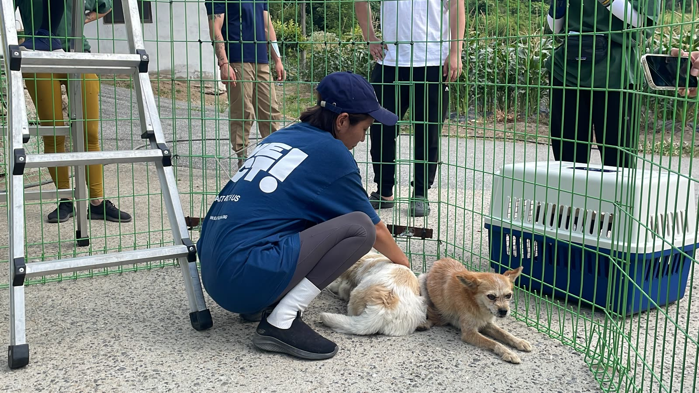</div><figcaption>사진·어두운 바탕 위: 흰색 단색</figcaption></figure>
    <figure><div class="plate white"></div><figcaption>5색 원본: 소개 페이지, 푸터 등 한정된 곳에만</figcaption></figure>
  </div>
  <p class="note">로고 원본 색(CMYK → 화면 근사): W 네이비 <code>#173A54</code> · E 틸 <code>#1B5E64</code> · A 블루 <code>#2B4D90</code> · C 제이드 <code>#1B6458</code> · T와 ! 딥 페트롤 틸 <code>#00515B</code></p>

  <h3>국내 동물단체 컬러 지도</h3>
  <div class="comp">
    <div class="comp-row"><b>동물자유연대</b><div class="bars"><i style="--c:#F36F20"></i><i style="--c:#09428F"></i><i style="--c:#4263A3"></i></div><p>오렌지 <code>#F36F20</code> · 보조 네이비·블루</p></div>
    <div class="comp-row"><b>동물권행동 카라</b><div class="bars"><i style="--c:#004BA0"></i><i style="--c:#003B96"></i><i style="--c:#6AAAE4"></i></div><p>블루 <code>#004BA0</code> · 스카이</p></div>
    <div class="comp-row"><b>동물권단체 케어</b><div class="bars"><i style="--c:#1F3E7A"></i><i style="--c:#2E5BA8"></i><i style="--c:#E0312B"></i></div><p>네이비·블루 · 레드 강조 (화면에서 본 근사치)</p></div>
    <div class="comp-row"><b>유기동물의 엄마 아빠</b><div class="bars"><i style="--c:#FFC536"></i><i style="--c:#1F1F1F"></i><i style="--c:#F7C851"></i></div><p>옐로 <code>#FFC536</code> · 블랙</p></div>
    <div class="comp-row"><b>포캣멍센터</b><div class="bars"><i style="--c:#175EC2"></i><i style="--c:#33373D"></i><i style="--c:#F7F7F7"></i></div><p>로열 블루 <code>#175EC2</code></p></div>
    <div class="comp-row we"><b>위액트 (제안)</b><div class="bars"><i style="--c:#00515B"></i><i style="--c:#062E33"></i><i style="--c:#FFFFFF"></i></div><p>딥 틸 하나. 국내 단체가 쓰지 않는 자리이고, 유채색을 하나만 쓰는 것 자체가 차별점</p></div>
  </div>
</section>

<!-- 02 MOTION -->
<section id="motion">
  <div class="sec-head">
    <p class="eyebrow">02 · Motion</p>
    <h2>색 대신 모션으로 강조합니다</h2>
    <p>모든 모션은 변화(학대 → 환대), 전환(질문 → 행동), 증명(숫자가 쌓임) 중 하나를 말해야 합니다. 핵심 문장은 색을 바꾸지 않고 스크롤 텍스트 채움, 크기 변화, 등장 순서로 강조합니다.</p>
  </div>
  <h3 style="margin-top:0">인셋 → 풀블리드</h3>
  <div class="kf">
    <figure><div class="frame">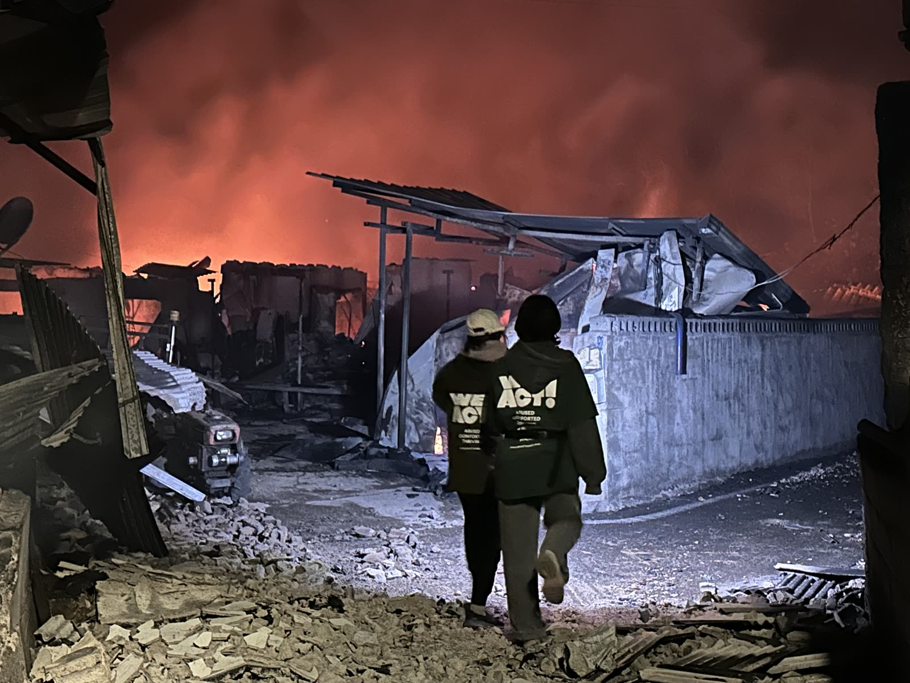</div><figcaption>1 · 문장 아래 인셋 프레임</figcaption></figure>
    <figure><div class="frame"></div><figcaption>2 · 스크롤하면 넓어짐</figcaption></figure>
    <figure><div class="frame"></div><figcaption>3 · 화면 전체, 다음 문장 등장</figcaption></figure>
  </div>
  <h3>스크롤 텍스트 채움</h3>
  <div class="kf">
    <figure><div class="frame"><p class="tf">음지에서 외면받고 학대받는 동물들을 구조합니다.</p></div><figcaption>1 · 옅은 회색으로 깔림</figcaption></figure>
    <figure><div class="frame"><p class="tf"><b>음지에서 외면받고 학대받는</b> 동물들을 구조합니다.</p></div><figcaption>2 · 스크롤에 맞춰 단어 단위로 채워짐</figcaption></figure>
    <figure><div class="frame"><p class="tf"><b>음지에서 외면받고 학대받는 동물들을 구조합니다.</b></p></div><figcaption>3 · 다 읽히면 다음 장면</figcaption></figure>
  </div>
</section>

<!-- 03 UI -->
<section id="ui">
  <div class="sec-head">
    <p class="eyebrow">03 · Core UI</p>
    <h2>UI도 두 가지 색으로</h2>
    <p>버튼, 배지, 지표 모두 액트 틸과 무채색만 씁니다. 후원 버튼에도 별도 색을 주지 않고, 늘 같은 자리에 둬서 찾기 쉽게 합니다.</p>
  </div>

  <div class="stage">
    <div>
      <p class="stage-label">메뉴: 흰 바탕 / 사진 위</p>
      <div style="display:grid;gap:12px">
        <div class="gnb"><nav aria-label="메뉴 견본"><span>위액트</span><span>구조·활동</span><span>입양</span><span>참여</span><span>후원</span></nav><span class="lang">EN</span><span class="btn btn-teal" style="min-height:40px;padding:0 18px">후원하기</span></div>
        <div class="gnb on-photo">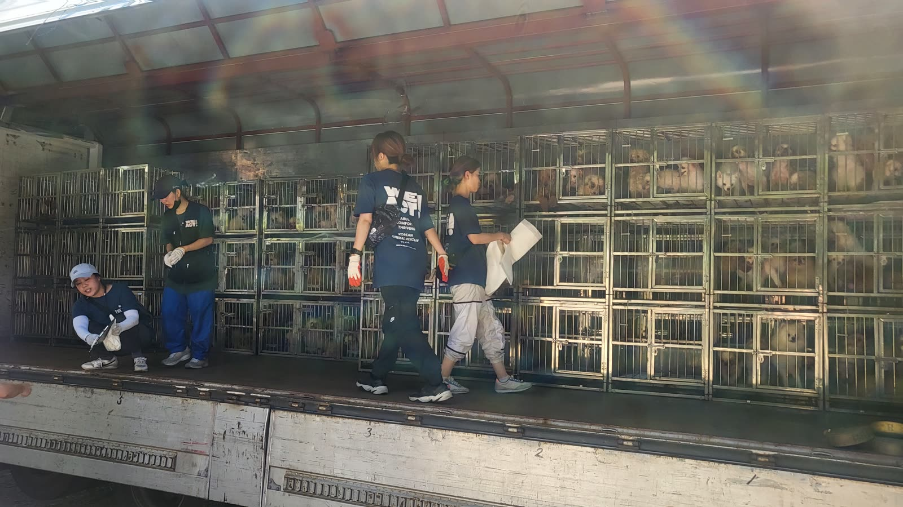<nav aria-label="사진 위 메뉴 견본"><span>위액트</span><span>구조·활동</span><span>입양</span><span>참여</span><span>후원</span></nav><span class="lang">EN</span><span class="btn btn-white" style="min-height:40px;padding:0 18px">후원하기</span></div>
      </div>
      <p class="note">첫 화면 사진 위에서는 투명 배경과 흰 글자, 스크롤하면 흰 바탕과 딥 틸 글자로 바뀝니다.</p>
    </div>

    <div>
      <p class="stage-label">버튼</p>
      <div class="btn-panels">
        <div class="btn-panel light"><p class="pl">밝은 바탕</p><span class="btn btn-teal">정기후원</span><span class="btn btn-out">아이들 모두 보기</span><span class="btn btn-link">원문 보기 →</span></div>
        <div class="btn-panel dark"><p class="pl">어두운 바탕·사진 위</p><span class="btn btn-white">정기후원</span><span class="btn btn-out-w">아이들 모두 보기</span><span class="btn btn-link w">원문 보기 →</span></div>
      </div>
      <p class="note">높이 48–56px, 글자 16px 굵기 600. 모서리 둥글기와 선 굵기는 무드보드마다 다르게, 그림자와 그라데이션은 쓰지 않습니다.</p>
    </div>

    <div class="cards">
      <div class="card">
        <p class="stage-label" style="margin:0">입양 카드</p>
        <div class="ph r45"><span class="badge b-avail">입양 가능</span></div>
        <h4>짱이 <span>Jjangi</span></h4>
        <p class="meta">포메라니안 · 남아 · 4살 · 3.1kg</p>
        <dl class="social">
          <div><dt>사람</dt><dd><i class="on"></i><i class="on"></i><i class="on"></i><i class="on"></i><i class="on"></i></dd></div>
          <div><dt>다른 개</dt><dd><i class="on"></i><i class="on"></i><i></i><i></i><i></i></dd></div>
          <div><dt>활동량</dt><dd><i class="on"></i><i class="on"></i><i class="on"></i><i></i><i></i></dd></div>
        </dl>
        <p class="foot"><span>충남 당진 · 2025.10 구조</span><span>해외 입양 가능</span></p>
        <p class="note" style="margin:0">사진은 자리 표시용 예시입니다. 실제로는 입양 프로필 포트레이트가 들어갑니다.</p>
      </div>
      <div class="card">
        <p class="stage-label" style="margin:0">구조 이야기 카드</p>
        <div class="ph r1610">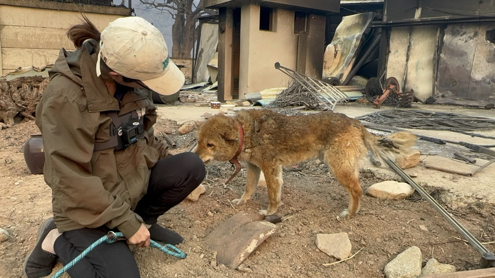</div>
        <p class="meta mrow"><span>2026.07 · 전남 강진 · 개농장</span><span class="badge b-done">구조 완료</span></p>
        <h4>개농장 진흙 위의 엄마 개</h4>
        <p class="note" style="margin:0">상태는 날짜·장소 줄 끝의 라벨로 표시합니다. 구조 완료 / 치료 중 / 입양 완료. 사진은 예시입니다.</p>
      </div>
      <div class="card">
        <p class="stage-label" style="margin:0">상태 표시</p>
        <div class="badges"><span class="badge b-avail">입양 가능</span><span class="badge b-prep">성격을 살펴보는 중</span><span class="badge b-foster">임보 중</span><span class="badge b-care">치료 중</span></div>
        <p class="stage-label" style="margin:20px 0 0">'!' 플로팅 버튼</p>
        <div class="fab-demo"><div class="sheet"><span>정기후원</span><span>일시후원</span><span>입양 신청</span><span>카톡 문의</span></div><div class="fab" aria-hidden="true">!</div></div>
        <p class="stage-label" style="margin:20px 0 0">숫자</p>
        <div class="numbers"><div class="num"><b>1,888</b><span>마리를 구조했고</span></div><div class="num"><b>1,660</b><span>마리가 평생 가족을 만났습니다</span></div></div>
      </div>
    </div>

    <div>
      <p class="stage-label">후원 위젯 (눌러 볼 수 있는 견본)</p>
      <div class="donate">
        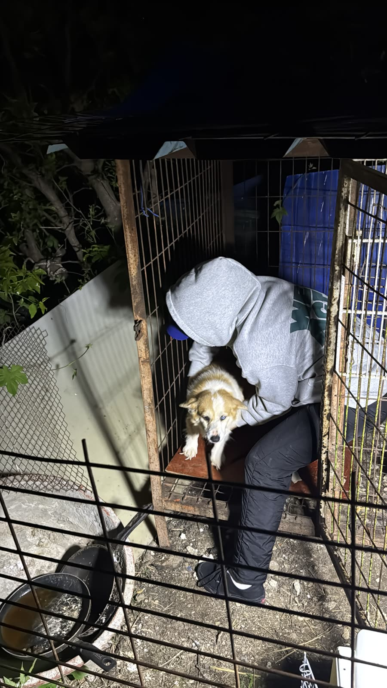
        <form class="widget" id="donate-demo" aria-label="후원 위젯 견본">
          <h4>여러분의 후원이 한 마리 동물에게는<br>새로운 삶의 시작이 됩니다.</h4>
          <div class="seg" role="group" aria-label="후원 종류">
            <button type="button" id="t-regular" aria-pressed="true">정기후원</button>
            <button type="button" id="t-once" aria-pressed="false">일시후원</button>
          </div>
          <div class="amounts" role="group" aria-label="금액" id="amounts"></div>
          <p class="impact" id="impact"></p>
          <button type="submit" class="btn btn-teal" id="donate-submit">정기후원 시작하기</button>
          <p class="widget-msg" id="widget-msg" role="status"></p>
          <p class="trust">공익법인 지정 · 기부금 영수증 발급 · 해외 후원 PayPal·Venmo</p>
        </form>
      </div>
      <p class="note">위젯 옆에는 늘 실제 구조 사진. 금액별 문장은 위액트의 실제 비용 자료로 채웁니다. 이 밖에 헤더 후원하기, '!' 플로팅 버튼, 모바일 하단 고정 바가 있습니다.</p>
    </div>
  </div>

  <h3>레퍼런스 · 기능과 UI</h3>
  <div class="refs"><figure><a href="https://www.rainforesttrust.org/" target="_blank" rel="noopener">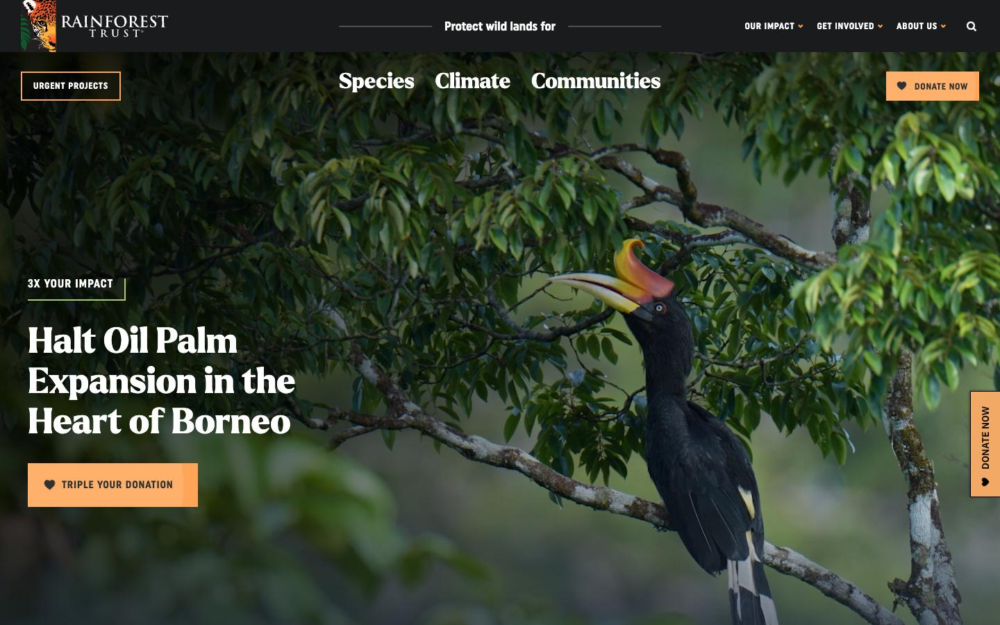</a><figcaption><b>Rainforest Trust</b>첫 화면의 분명한 메시지, 스크롤 인터랙션, 화면 가장자리의 고정 후원 버튼 → 모든 방향에 공통으로 쓰는 '!' 플로팅 후원 버튼</figcaption></figure><figure><a href="https://www.sc.or.kr/" target="_blank" rel="noopener">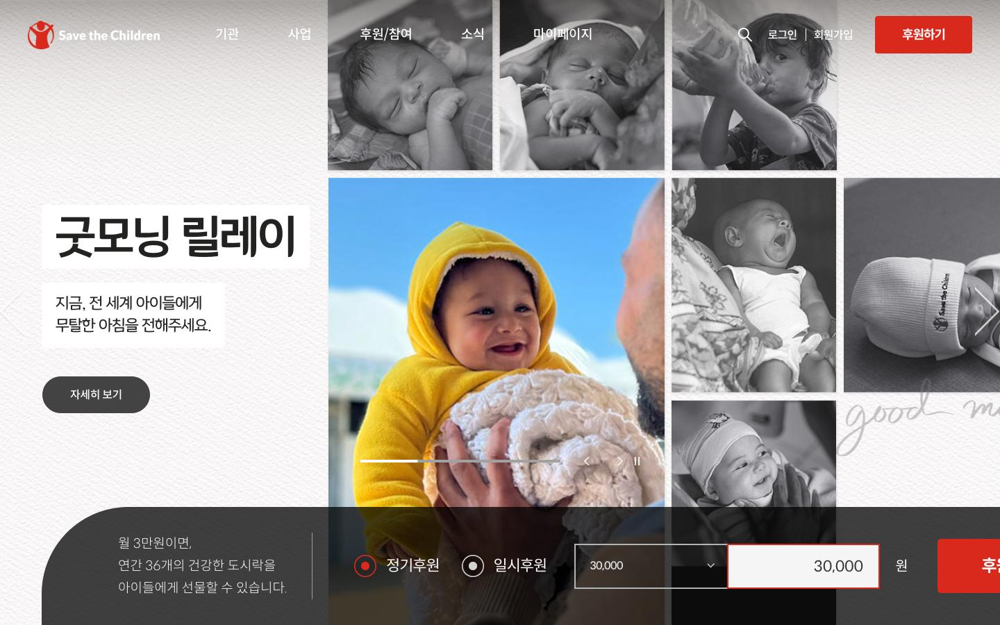</a><figcaption><b>세이브더칠드런</b>정기·일시후원 선택과 금액을 한 줄에 둔 짧은 후원 동선 → 후원 위젯</figcaption></figure><figure><a href="https://spca.bc.ca/" target="_blank" rel="noopener">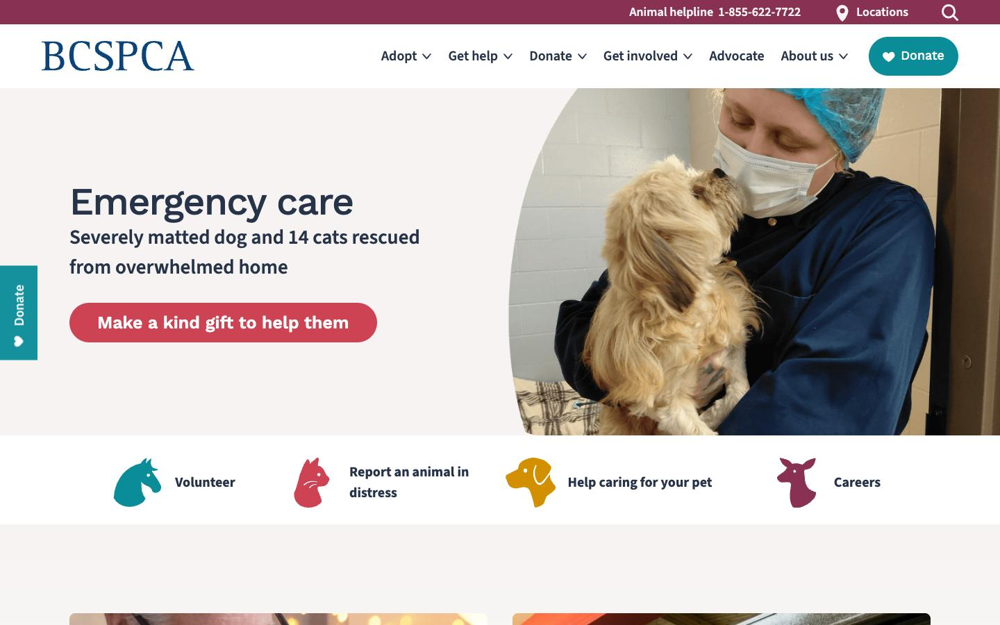</a><figcaption><b>BC SPCA</b>입양·도움 요청 중심의 메뉴와 고정 후원 탭 → 메뉴 구조와 입양 카드</figcaption></figure></div>

  <h3>메뉴 구조 예시</h3>
  <div class="tw">
    <table>
      <thead><tr><th>위액트</th><th>구조·활동</th><th>입양</th><th>참여</th><th>후원</th></tr></thead>
      <tbody>
        <tr><td>우리는</td><td>구조 이야기</td><td>가족을 기다리는 아이들</td><td>국내 이동봉사</td><td>정기후원</td></tr>
        <tr><td>크루</td><td>활동 기록</td><td>입양 절차</td><td>해외 이동봉사</td><td>일시후원</td></tr>
        <tr><td>연혁</td><td>아이들 근황</td><td>임시보호</td><td>봉사·캠페인</td><td>기업·물품 후원</td></tr>
        <tr><td>재정 보고 · 문의</td><td>제보하기</td><td>해외 입양 · 입양 후기</td><td></td><td>후원 내역·영수증</td></tr>
      </tbody>
    </table>
  </div>
  <p class="note">무드보드용 예시이며 최종 구조는 함께 확정합니다.</p>
</section>

<!-- 04 MOODBOARDS -->
<section id="moodboards">
  <div class="sec-head">
    <p class="eyebrow">04 · Moodboards</p>
    <h2>무드보드 A–G</h2>
    <p>일곱 방향 모두 같은 사진, 같은 문구입니다. 다른 것은 서체, 사진을 놓는 방식, 움직임입니다.</p>
  </div>
  <ol class="script">
    <li><span>01</span>아무도 들어가지 않는 곳으로, 주저하지 않고 들어갑니다.</li>
    <li><span>02</span>위액트 크루의 옷에는 세 단어가 적혀 있습니다.</li>
    <li><span>A</span>가장 아픈 곳에서 시작합니다.</li>
    <li><span>C</span>곁을 지키는 시간.</li>
    <li><span>T</span>다시, 살아가는 날.</li>
    <li><span>끝</span>WE ACT!의 WE가 되어 주세요.</li>
  </ol>

  <article class="dir" id="dir-a">
    <div class="dir-head">
      <div><div class="dir-title"><h3>A type</h3></div></div>
      <p class="muted" style="margin:0">어두운 화면 위로 현장 사진이 한 장씩 지나갑니다. 장면 사이는 어둠으로 끊고, 아래 타임라인이 지금 어디쯤인지 알려 줍니다.</p>
    </div>
    <div class="mbw"><div class="mb vA" role="img" aria-label="A type 무드보드"><div class="t-ttl"><div class="mt1"><span class="mlt">A</span><span class="mnm">type</span></div><div class="kw"><i>다큐멘터리</i><i>시간</i><i>현장감</i><i>진중함</i></div></div><div class="t-hero"><div class="cmp vA"><div class="cn"><span>위액트</span><span>구조·활동</span><span>입양</span><b>후원하기</b></div><div class="cx"><span class="eb">2025.03 · 경북 산불 현장 · 23:22</span><h4>아무도 들어가지 않는 곳으로,<br><b>주저하지 않고 들어갑니다.</b></h4><p>위액트는 학대받는 동물들을 구조하여 행복한 삶을 살 수 있도록 직접 행동합니다.</p><div class="bt"><span class="p1 pw">정기후원</span><span class="p2">아이들 만나기</span></div></div></div></div><div class="t-pal"><p class="tl">COLOR</p><div class="bars"><i class="pb" style="flex-grow:75;background-image:url('photos/IMG_2593-wildfire-walk.jpg')"><span>사진·영상<em>75%</em></span></i><i class="" style="flex-grow:18;background:#062E33"><span>딥 틸<em>18% · #062E33</em></span></i><i class="lt" style="flex-grow:6;background:#FFFFFF"><span>화이트<em>6% · #FFFFFF</em></span></i><i class="" style="flex-grow:1;background:#00515B"><span>액트 틸<em>1% · #00515B</em></span></i></div></div><div class="t-typ"><p class="tl">TYPE</p><div class="aa"><span style="font-family:'SUIT';font-weight:900;letter-spacing:-.035em">가</span><span style="font-family:'Barlow Condensed';font-weight:700;text-transform:uppercase">Aa</span></div><p class="fn"><b style="font-family:'SUIT';font-weight:900;letter-spacing:-.035em">SUIT Heavy</b> <i>/</i> <b style="font-family:'Barlow Condensed';font-weight:700;text-transform:uppercase">Barlow Condensed</b></p><p class="ab" style="font-family:'SUIT';font-weight:900;letter-spacing:-.035em">가나다라마바사아자차카타파하</p><p class="ab" style="font-family:'Barlow Condensed';font-weight:700;text-transform:uppercase">ABCDEFGHIJKLM 0123456789</p><p class="bdy">본문 Pretendard · 위액트는 학대받는 동물들을 구조합니다.</p></div><div class="t-ph"><p class="tl">PHOTO</p><div class="gr"></div><span class="pl tcf2">03.26 16:59 · COMFORTED</span></div><div class="t-mob"><div class="phone"><div class="scr mo vA"><div class="mnav"><span>메뉴</span></div><div class="mtx"><p class="meb">2025.03 · 경북 산불 현장</p><h5>아무도 들어가지 않는 곳으로,<br><b>주저하지 않고 들어갑니다.</b></h5></div><div class="mbar"><span>정기후원</span><span>일시후원</span></div><span class="mfab">!</span></div></div><p class="tl">MOBILE</p></div><div class="t-sig mfA"><p class="tl">MOTIF</p><div class="strip"><div class="fr"><span>현장</span><b>01</b></div><div class="fr">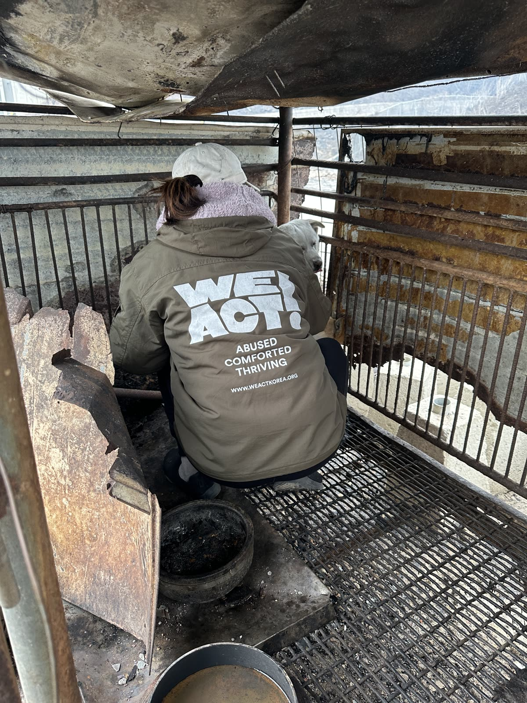<span>세 단어</span><b>02</b></div><div class="fr"><span>ABUSED</span><b>03</b></div><div class="fr"><span>COMFORTED</span><b>04</b></div><div class="fr"><span>THRIVING</span><b>05</b></div><i class="head"></i></div></div><div class="t-card cdA"><p class="tl">ADOPTION CARD</p><div class="cph"><span class="lb">입양 가능</span></div><div class="cnm"><b>짱이</b><span>Jjangi</span></div><p class="cmt">포메라니안 · 남아 · 4살 · 3.1kg</p><dl class="ctl"><div><dt>사람</dt><dd>좋아해요</dd></div><div><dt>다른 개</dt><dd>천천히 친해져요</dd></div></dl><p class="crs">2025.10 · 충남 당진 구조</p><span class="cbt">입양 신청</span></div><div class="t-don nA"><p class="tl">DONATE</p><b class="dtt">매달 함께하기</b><div class="seg3"><span class="on">정기후원</span><span>일시후원</span></div><div class="am"><i>1만</i><i class="on">2만</i><i>3만</i><i>5만</i></div><span class="dbp">정기후원 시작하기</span><span class="dbs">아이들 만나기</span><div class="sts"><i class="sa1">입양 가능</i><i class="sa2">임보 중</i><i class="sa3">치료 중</i></div></div></div></div>
    <div class="lp-wrap">
      <p class="sub-label">랜딩페이지 미리보기</p>
      <div class="lp lpA" data-lp="A" data-tone="dark" role="region" aria-label="A안 랜딩페이지 미리보기. 안에서 스크롤하면 움직입니다"><div class="lp-scroll" tabindex="0"><div class="sc zA1" data-scene data-tone="dark"><div class="st"><div class="shot h0" style="--k:0;--f:99;--l:0"><div class="im"></div><div class="shade"></div><div class="txt"><p class="tc tcf rise"><span class="ko">2025.03 · 경북 산불 현장</span><span class="en">MAR 2025 · GYEONGBUK WILDFIRE</span></p><h3 class="ttl rise"><span class="ko">아무도 들어가지 않는 곳으로,<br><b>주저하지 않고 들어갑니다.</b></span><span class="en">Into the place no one goes,<br><b>without hesitation.</b></span></h3><p class="nar"><span class="ko">위액트는 학대받는 동물들을 구조하여 행복한 삶을 살 수 있도록 직접 행동합니다.</span><span class="en">WE ACT rescues abused animals and acts directly so they can go on to live happy lives.</span></p></div></div><div class="shot" style="--k:1;--f:0;--l:0"><div class="im"></div><div class="shade"></div><div class="txt"><p class="tc tcf"><span class="ko">WE ACT! CREW</span><span class="en">WE ACT! CREW</span></p><h3 class="ttl"><span class="ko">위액트 크루의 옷에는<br><b>세 단어가 적혀 있습니다.</b></span><span class="en">Three words are printed<br><b>on our crew jackets.</b></span></h3><p class="nar"><span class="ko">ABUSED · COMFORTED · THRIVING. 세 단어의 첫 글자가 A·C·T입니다.</span><span class="en">ABUSED · COMFORTED · THRIVING. Their first letters spell A·C·T.</span></p></div></div><div class="shot" style="--k:2;--f:0;--l:0"><div class="im"></div><div class="shade"></div><div class="txt"><p class="tc tcf"><span class="ko">A · ABUSED</span><span class="en">A · ABUSED</span></p><h3 class="ttl"><span class="ko">가장 아픈 곳에서<br><b>시작합니다.</b></span><span class="en">It starts where<br><b>it hurts most.</b></span></h3><p class="nar"><span class="ko">뜬장, 개농장, 불 탄 마을. 동물이 학대받는 현장에 직접 들어가 아이들을 꺼냅니다.</span><span class="en">Cages, dog farms, burned villages. We go into the places where animals are abused and bring them out.</span></p></div></div><div class="shot" style="--k:3;--f:0;--l:0"><div class="im"></div><div class="shade"></div><div class="txt"><p class="tc tcf"><span class="ko">C · COMFORTED</span><span class="en">C · COMFORTED</span></p><h3 class="ttl"><span class="ko">곁을 지키는<br><b>시간.</b></span><span class="en">Time spent<br><b>by their side.</b></span></h3><p class="nar"><span class="ko">치료를 받고 마음이 풀릴 때까지, 크루가 곁을 떠나지 않습니다.</span><span class="en">Medical care, and a crew that stays until the fear fades.</span></p></div></div><div class="shot" style="--k:4;--f:0;--l:99"><div class="im"></div><div class="shade"></div><div class="txt"><p class="tc tcf"><span class="ko">T · THRIVING</span><span class="en">T · THRIVING</span></p><h3 class="ttl"><span class="ko">다시,<br><b>살아가는 날.</b></span><span class="en">The day they start<br><b>living again.</b></span></h3><p class="nar"><span class="ko">국내와 미국·캐나다의 평생 가족을 만나, 이름으로 불리며 살아갑니다.</span><span class="en">With forever families in Korea, the US and Canada, they live by their own names.</span></p></div></div><div class="idx tcf" aria-hidden="true"><b>01</b> / 05</div><div class="film tcf" aria-hidden="true"><i style="left:10%"></i><span style="left:10%"><span class="ko">현장</span><span class="en">Field</span></span><i style="left:30%"></i><span style="left:30%"><span class="ko">세 단어</span><span class="en">Three words</span></span><i style="left:50%"></i><span style="left:50%"><span class="ko">ABUSED</span><span class="en">ABUSED</span></span><i style="left:70%"></i><span style="left:70%"><span class="ko">COMFORTED</span><span class="en">COMFORTED</span></span><i style="left:90%"></i><span style="left:90%"><span class="ko">THRIVING</span><span class="en">THRIVING</span></span><b></b></div></div></div><div class="sc zA2" data-scene data-tone="dark"><div><h3 class="ttl"><span class="ko">WE ACT!의 WE가<br><b>되어 주세요.</b></span><span class="en">Be the WE<br><b>in WE ACT!</b></span></h3><div class="btns"><span class="btn-l bw1"><span class="ko">정기후원</span><span class="en">Give monthly</span></span><span class="b2"><span class="ko">아이들 만나기</span><span class="en">Meet the animals</span></span></div></div></div></div><div class="lp-nav"><span class="ko">위액트</span><span class="en">About</span><span class="ko">구조·활동</span><span class="en">Rescue</span><span class="ko">입양</span><span class="en">Adopt</span><span class="cta"><span class="ko">후원하기</span><span class="en">Donate</span></span></div><span class="lp-fab" aria-hidden="true">!</span><span class="lp-hint">화면 안에서 스크롤해 보세요 ↓</span></div>
      <div class="lp-ctrl"><button type="button" class="play" data-act="play">자동 재생</button><button type="button" data-act="reset">처음으로</button><span class="lang" role="group" aria-label="언어"><button type="button" data-lang="ko" aria-pressed="true">KR</button><button type="button" data-lang="en" aria-pressed="false">EN</button></span><span class="lp-bar"><i></i></span></div>
    </div>
    <div class="dir-body">
      <div>
        <p class="sub-label">움직임</p>
        <ol class="sb"><li><span>01</span><div>화면 전체에 사진, 카메라가 천천히 다가감</div></li><li><span>02</span><div>장면 사이는 어둠으로 한 번 끊음</div></li><li><span>03</span><div>아래 타임라인 막대와 오른쪽 위 번호가 지금 장면을 표시</div></li><li><span>04</span><div>끝은 어두운 화면에 한 문장과 흰 버튼</div></li></ol>
        <dl class="spec one"><div><dt>사진</dt><dd>화면 전체. 장면마다 카메라가 다르게 움직임</dd></div><div><dt>UI</dt><dd>흰 채움 버튼, 좁은 숫자체 번호, 사진 위 흰 메뉴</dd></div><div><dt>리스크</dt><dd>무거울 수 있음 → 끝 화면에서 바로 후원으로</dd></div></dl>
      </div>
      <div class="tsys emA">
        <p class="sub-label">서체 · 타이틀 / 소제목 / 본문</p>
        <p class="tspec" style="font-family:'SUIT';font-weight:900;letter-spacing:-.035em"><small>KR · SUIT Heavy</small>아무도 들어가지 않는 곳으로, <b>주저하지 않고 들어갑니다.</b></p>
        <p class="tspec" style="font-family:'Barlow Condensed';font-weight:700;text-transform:uppercase"><small>EN · Barlow Condensed</small>Into the place no one goes, <b>without hesitation.</b></p>
        <div class="tsub"><small>소제목</small><p style="font-family:'SUIT';font-weight:900;letter-spacing:-.035em">가장 아픈 곳에서 <b>시작합니다.</b></p><p style="font-family:'Barlow Condensed';font-weight:700;text-transform:uppercase">It starts where <b>it hurts most.</b></p></div>
        <div class="tbody"><small>본문 · Pretendard</small><p>위액트는 학대받는 동물들을 구조하여 행복한 삶을 살 수 있도록 직접 행동합니다.</p><p>WE ACT rescues abused animals and acts directly so they can go on to live happy lives.</p></div>
        <p class="tnote2"><b>SUIT</b> 폭이 좁고 단단한 고딕, 다큐멘터리 자막 같은 인상 · <b>Barlow Condensed</b> 표지판 계열의 좁은 영문, 번호에도 사용</p>
      </div>
    </div>
    <div>
      <p class="sub-label">레퍼런스</p>
      <div class="refs"><figure><a href="https://theoceancleanup.com/" target="_blank" rel="noopener">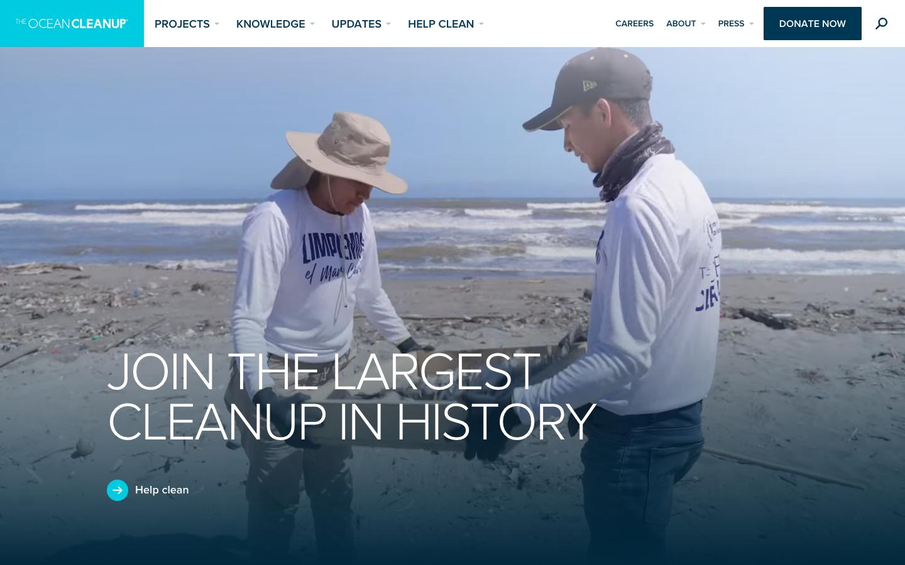</a><figcaption><b>The Ocean Cleanup</b>활동 사진 위의 짧은 메시지, 절제된 모션</figcaption></figure><figure><a href="https://www.farmafrica.org/" target="_blank" rel="noopener">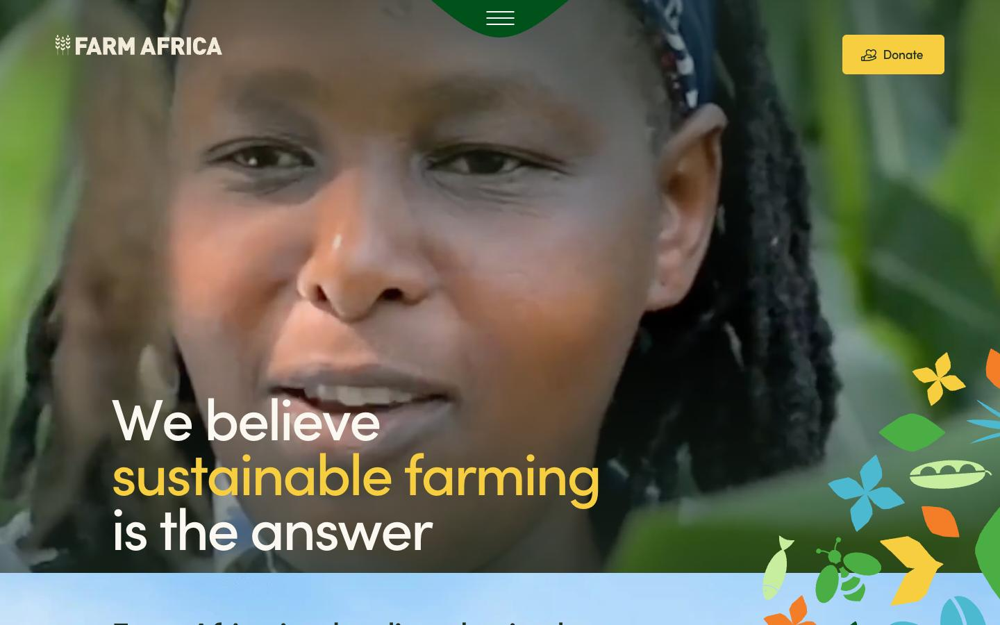</a><figcaption><b>Farm Africa</b>사진과 문장을 한 화면에 붙인 스토리텔링</figcaption></figure></div>
    </div>
  </article>
  <article class="dir" id="dir-b">
    <div class="dir-head">
      <div><div class="dir-title"><h3>B type</h3></div></div>
      <p class="muted" style="margin:0">하얀 지면에 난 가는 틈이 열리며 현장이 드러납니다. A·C·T는 세로선을 따라 작은 점이 내려가며, 점이 지나간 선과 문장에 색이 채워집니다.</p>
    </div>
    <div class="mbw"><div class="mb vB" role="img" aria-label="B type 무드보드"><div class="t-ttl"><div class="mt1"><span class="mlt">B</span><span class="mnm">type</span></div><div class="kw"><i>밝음</i><i>여백</i><i>발견</i><i>정돈</i></div></div><div class="t-hero"><div class="cmp vB"><div class="cn"><span>위액트</span><span>구조·활동</span><span>입양</span><b>후원하기</b></div><div class="cx t"><span class="eb">2025.03 · 경북 산불 현장</span><h4>아무도 들어가지 않는 곳으로,<br><b>주저하지 않고 들어갑니다.</b></h4></div><div class="cx r"><p>위액트는 학대받는 동물들을 구조하여 행복한 삶을 살 수 있도록 직접 행동합니다.</p><div class="bt"><span class="p1">정기후원</span><span class="p2">아이들 만나기</span></div></div></div></div><div class="t-pal"><p class="tl">COLOR</p><div class="bars"><i class="lt" style="flex-grow:55;background:#FFFFFF"><span>화이트<em>55% · #FFFFFF</em></span></i><i class="pb" style="flex-grow:35;background-image:url('photos/IMG_2593-wildfire-walk.jpg')"><span>사진·영상<em>35%</em></span></i><i class="" style="flex-grow:8;background:#062E33"><span>딥 틸<em>8% · #062E33</em></span></i><i class="" style="flex-grow:2;background:#00515B"><span>액트 틸<em>2% · #00515B</em></span></i></div></div><div class="t-typ"><p class="tl">TYPE</p><div class="aa"><span style="font-family:'Pretendard';font-weight:300;letter-spacing:-.045em">가</span><span style="font-family:'Inter Tight';font-weight:300;letter-spacing:-.035em">Aa</span></div><p class="fn"><b style="font-family:'Pretendard';font-weight:300;letter-spacing:-.045em">Pretendard Light</b> <i>/</i> <b style="font-family:'Inter Tight';font-weight:300;letter-spacing:-.035em">Inter Tight Light</b></p><p class="ab" style="font-family:'Pretendard';font-weight:300;letter-spacing:-.045em">가나다라마바사아자차카타파하</p><p class="ab" style="font-family:'Inter Tight';font-weight:300;letter-spacing:-.035em">ABCDEFGHIJKLM 0123456789</p><p class="bdy">본문 Pretendard · 위액트는 학대받는 동물들을 구조합니다.</p></div><div class="t-ph"><p class="tl">PHOTO</p><div class="ins"></div><span class="pl dk">C · COMFORTED</span></div><div class="t-mob"><div class="phone"><div class="scr mo vB"><div class="mnav"><span>메뉴</span></div><div class="mins"></div><div class="mtx"><p class="meb">2025.03 · 경북 산불 현장</p><h5>아무도 들어가지 않는 곳으로,<br><b>주저하지 않고 들어갑니다.</b></h5></div><div class="mbar"><span>정기후원</span><span>일시후원</span></div><span class="mfab">!</span></div></div><p class="tl">MOBILE</p></div><div class="t-sig mfB"><p class="tl">MOTIF</p><div class="trk"><i class="ln"></i><b class="bdot"></b><div class="ws"><div><span>ABUSED</span><small>가장 아픈 곳에서 시작합니다.</small></div><div><span>COMFORTED</span><small>곁을 지키는 시간.</small></div><div><span>THRIVING</span><small>다시, 살아가는 날.</small></div></div></div></div><div class="t-card cdB"><p class="tl">ADOPTION CARD</p><div class="cph"><span class="lb">입양 가능</span></div><div class="cnm"><b>짱이</b><span>Jjangi</span></div><p class="cmt">포메라니안 · 남아 · 4살 · 3.1kg</p><dl class="ctl"><div><dt>사람</dt><dd>좋아해요</dd></div><div><dt>다른 개</dt><dd>천천히 친해져요</dd></div></dl><p class="crs">2025.10 · 충남 당진 구조</p><span class="cbt">입양 신청</span></div><div class="t-don nB"><p class="tl">DONATE</p><b class="dtt">매달 함께하기</b><div class="seg3"><span class="on">정기후원</span><span>일시후원</span></div><div class="am"><i>1만</i><i class="on">2만</i><i>3만</i><i>5만</i></div><span class="dbp">정기후원 시작하기</span><span class="dbs">아이들 만나기</span><div class="sts"><i class="sa1">입양 가능</i><i class="sa2">임보 중</i><i class="sa3">치료 중</i></div></div></div></div>
    <div class="lp-wrap">
      <p class="sub-label">랜딩페이지 미리보기</p>
      <div class="lp lpB" data-lp="B" data-tone="light" role="region" aria-label="B안 랜딩페이지 미리보기. 안에서 스크롤하면 움직입니다"><div class="lp-scroll" tabindex="0"><div class="sc zB1" data-scene data-tone="light"><div class="st"><div class="hcopy"><div><p class="eb2 rise"><span class="ko">2025.03 · 경북 산불 현장</span><span class="en">MAR 2025 · GYEONGBUK WILDFIRE</span></p><h3 class="ttl rise"><span class="ko">아무도 들어가지 않는 곳으로,<br><b>주저하지 않고 들어갑니다.</b></span><span class="en">Into the place no one goes,<br><b>without hesitation.</b></span></h3></div><p class="rise d1"><span class="ko">위액트는 학대받는 동물들을 구조하여 행복한 삶을 살 수 있도록 직접 행동합니다.</span><span class="en">WE ACT rescues abused animals and acts directly so they can go on to live happy lives.</span></p></div><div class="slit"><div class="ovs"></div></div></div></div><div class="sc zB2" data-scene data-tone="light"><div class="st"><div class="jt"><p class="eb2"><span class="ko">WE ACT! CREW</span><span class="en">WE ACT! CREW</span></p><h3 class="ttl"><span class="ko">위액트 크루의 옷에는<br><b>세 단어가 적혀 있습니다.</b></span><span class="en">Three words are printed<br><b>on our crew jackets.</b></span></h3><p><span class="ko">ABUSED · COMFORTED · THRIVING. 세 단어의 첫 글자가 A·C·T입니다.</span><span class="en">ABUSED · COMFORTED · THRIVING. Their first letters spell A·C·T.</span></p></div><div class="grow"></div></div></div><div class="sc zB3" data-scene data-tone="light"><div class="st"><div class="vt" aria-hidden="true"><i class="vtl"></i><i class="vtf"></i><b class="vtd"></b></div><div class="vcol"><div class="vw"><p class="w">ABUSED</p><h3 class="ttl"><span class="ko">가장 아픈 곳에서<br><b>시작합니다.</b></span><span class="en">It starts where<br><b>it hurts most.</b></span></h3><p><span class="ko">뜬장, 개농장, 불 탄 마을. 동물이 학대받는 현장에 직접 들어가 아이들을 꺼냅니다.</span><span class="en">Cages, dog farms, burned villages. We go into the places where animals are abused and bring them out.</span></p></div><div class="vw"><p class="w">COMFORTED</p><h3 class="ttl"><span class="ko">곁을 지키는<br><b>시간.</b></span><span class="en">Time spent<br><b>by their side.</b></span></h3><p><span class="ko">치료를 받고 마음이 풀릴 때까지, 크루가 곁을 떠나지 않습니다.</span><span class="en">Medical care, and a crew that stays until the fear fades.</span></p></div><div class="vw"><p class="w">THRIVING</p><h3 class="ttl"><span class="ko">다시,<br><b>살아가는 날.</b></span><span class="en">The day they start<br><b>living again.</b></span></h3><p><span class="ko">국내와 미국·캐나다의 평생 가족을 만나, 이름으로 불리며 살아갑니다.</span><span class="en">With forever families in Korea, the US and Canada, they live by their own names.</span></p></div></div><div class="jp"></div></div></div><div class="sc zB4" data-scene data-tone="light"><div><h3 class="ttl"><span class="ko">WE ACT!의 WE가<br><b>되어 주세요.</b></span><span class="en">Be the WE<br><b>in WE ACT!</b></span></h3><div class="btns"><span class="b1"><span class="ko">정기후원</span><span class="en">Give monthly</span></span><span class="b2"><span class="ko">아이들 만나기</span><span class="en">Meet the animals</span></span></div></div></div></div><div class="lp-nav"><span class="ko">위액트</span><span class="en">About</span><span class="ko">구조·활동</span><span class="en">Rescue</span><span class="ko">입양</span><span class="en">Adopt</span><span class="cta"><span class="ko">후원하기</span><span class="en">Donate</span></span></div><span class="lp-fab" aria-hidden="true">!</span><span class="lp-hint">화면 안에서 스크롤해 보세요 ↓</span></div>
      <div class="lp-ctrl"><button type="button" class="play" data-act="play">자동 재생</button><button type="button" data-act="reset">처음으로</button><span class="lang" role="group" aria-label="언어"><button type="button" data-lang="ko" aria-pressed="true">KR</button><button type="button" data-lang="en" aria-pressed="false">EN</button></span><span class="lp-bar"><i></i></span></div>
    </div>
    <div class="dir-body">
      <div>
        <p class="sub-label">움직임</p>
        <ol class="sb"><li><span>01</span><div>하얀 지면의 가는 틈이 위아래로, 이어서 옆으로 열림</div></li><li><span>02</span><div>크루 사진이 오른쪽 작은 틀에서 화면 전체로 커짐</div></li><li><span>03</span><div>세로선을 따라 작은 점이 내려가며 선과 A·C·T 문장에 차례로 색이 채워짐</div></li><li><span>04</span><div>점이 선 끝 아래에 닿으면 '!'가 완성되고, 끝은 사진과 문장을 나란히</div></li></ol>
        <dl class="spec one"><div><dt>사진</dt><dd>틈과 작은 틀에서 화면 전체로 열림</dd></div><div><dt>UI</dt><dd>모서리 4px 액트 틸 버튼, 1px 보조 버튼, 가는 선 목록</dd></div><div><dt>리스크</dt><dd>밋밋할 수 있음 → 열리는 사진을 주인공으로</dd></div></dl>
      </div>
      <div class="tsys emB">
        <p class="sub-label">서체 · 타이틀 / 소제목 / 본문</p>
        <p class="tspec" style="font-family:'Pretendard';font-weight:300;letter-spacing:-.045em"><small>KR · Pretendard Light</small>아무도 들어가지 않는 곳으로, <b>주저하지 않고 들어갑니다.</b></p>
        <p class="tspec" style="font-family:'Inter Tight';font-weight:300;letter-spacing:-.035em"><small>EN · Inter Tight Light</small>Into the place no one goes, <b>without hesitation.</b></p>
        <div class="tsub"><small>소제목</small><p style="font-family:'Pretendard';font-weight:300;letter-spacing:-.045em">가장 아픈 곳에서 <b>시작합니다.</b></p><p style="font-family:'Inter Tight';font-weight:300;letter-spacing:-.035em">It starts where <b>it hurts most.</b></p></div>
        <div class="tbody"><small>본문 · Pretendard</small><p>위액트는 학대받는 동물들을 구조하여 행복한 삶을 살 수 있도록 직접 행동합니다.</p><p>WE ACT rescues abused animals and acts directly so they can go on to live happy lives.</p></div>
        <p class="tnote2"><b>Pretendard Light</b> 본문 서체를 가늘고 크게 · <b>Inter Tight</b> Pretendard 영문의 바탕인 Inter의 좁은 버전</p>
      </div>
    </div>
    <div>
      <p class="sub-label">레퍼런스</p>
      <div class="refs"><figure><a href="https://www.serverobotics.com/" target="_blank" rel="noopener">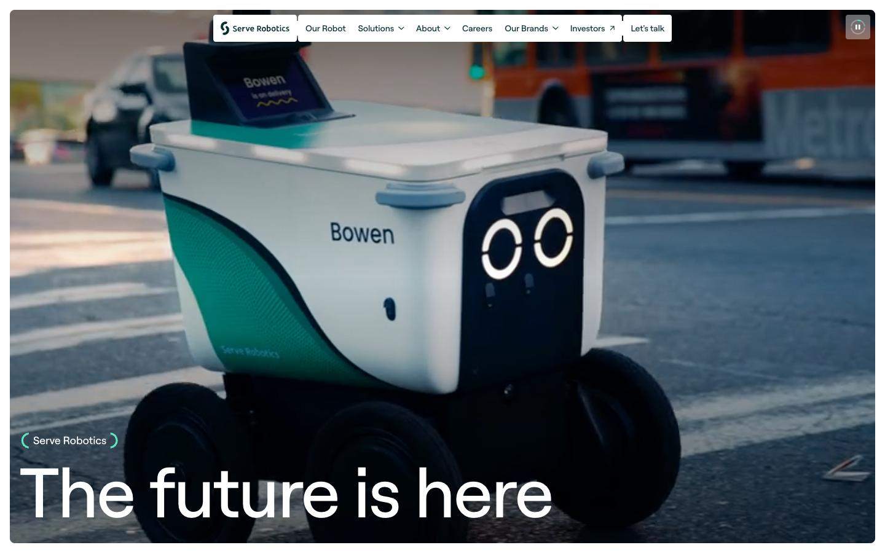</a><figcaption><b>Serve Robotics</b>큰 사진, 큰 글자, 넉넉한 여백</figcaption></figure><figure><a href="https://www.charitywater.org/" target="_blank" rel="noopener">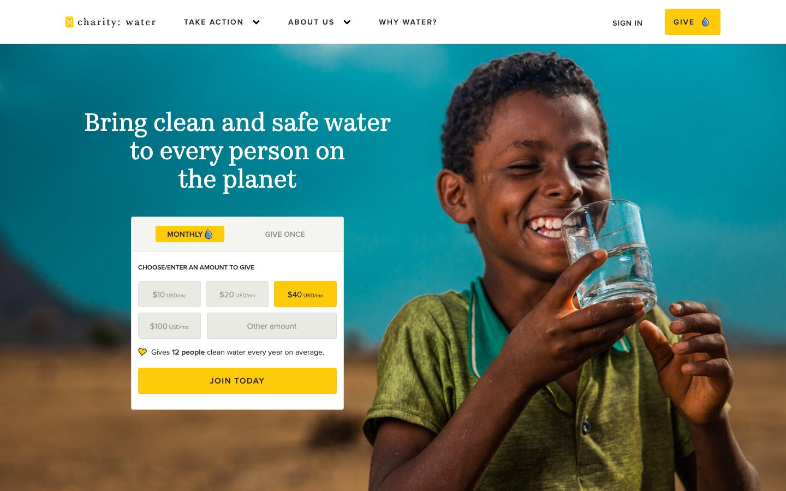</a><figcaption><b>charity: water</b>사진·메시지·후원 위젯을 한 화면에</figcaption></figure></div>
    </div>
  </article>
  <article class="dir" id="dir-c">
    <div class="dir-head">
      <div><div class="dir-title"><h3>C type</h3></div></div>
      <p class="muted" style="margin:0">로고의 '!'가 사진을 담는 창이 됩니다. '!'가 화면 가득 커지며 현장이 열리고, A·C·T가 한 글자씩 커지며 이야기를 이어 갑니다.</p>
    </div>
    <div class="mbw"><div class="mb vC" role="img" aria-label="C type 무드보드"><div class="t-ttl"><div class="mt1"><span class="mlt">C</span><span class="mnm">type</span></div><div class="kw"><i>그래픽</i><i>브랜드 서사</i><i>행동</i><i>젊음</i></div></div><div class="t-hero"><div class="cmp vC"><div class="cn"><span>위액트</span><span>구조·활동</span><span>입양</span><b>후원하기</b></div><div class="gl2" aria-hidden="true">!</div><div class="cx"><span class="eb">2025.03 · 경북 산불 현장</span><h4>아무도 들어가지 않는 곳으로,<br><b>주저하지 않고 들어갑니다.</b></h4><p>위액트는 학대받는 동물들을 구조하여 행복한 삶을 살 수 있도록 직접 행동합니다.</p><div class="bt"><span class="p1">정기후원</span><span class="p2">아이들 만나기</span></div></div></div></div><div class="t-pal"><p class="tl">COLOR</p><div class="bars"><i class="lt" style="flex-grow:45;background:#FFFFFF"><span>화이트<em>45% · #FFFFFF</em></span></i><i class="pb" style="flex-grow:40;background-image:url('photos/IMG_2883-crew-cage.jpg')"><span>사진<em>40%</em></span></i><i class="" style="flex-grow:10;background:#00515B"><span>액트 틸<em>10% · #00515B</em></span></i><i class="" style="flex-grow:5;background:#062E33"><span>딥 틸<em>5% · #062E33</em></span></i></div></div><div class="t-typ"><p class="tl">TYPE</p><div class="aa"><span style="font-family:'Wanted Sans';font-weight:900;letter-spacing:-.04em">가</span><span style="font-family:'Archivo';font-stretch:125%;font-weight:900;letter-spacing:-.02em">Aa</span></div><p class="fn"><b style="font-family:'Wanted Sans';font-weight:900;letter-spacing:-.04em">Wanted Sans ExtraBlack</b> <i>/</i> <b style="font-family:'Archivo';font-stretch:125%;font-weight:900;letter-spacing:-.02em">Archivo Expanded</b></p><p class="ab" style="font-family:'Wanted Sans';font-weight:900;letter-spacing:-.04em">가나다라마바사아자차카타파하</p><p class="ab" style="font-family:'Archivo';font-stretch:125%;font-weight:900;letter-spacing:-.02em">ABCDEFGHIJKLM 0123456789</p><p class="bdy">본문 Pretendard · 위액트는 학대받는 동물들을 구조합니다.</p></div><div class="t-ph"><p class="tl">PHOTO</p><div class="glc" style="background-image:url('photos/IMG_3754-wildfire-dog.jpg')">C</div><span class="pl dk">COMFORTED</span></div><div class="t-mob"><div class="phone"><div class="scr mo vC"><div class="mnav"><span>메뉴</span></div><div class="mgl" aria-hidden="true">!</div><div class="mtx"><p class="meb">2025.03 · 경북 산불 현장</p><h5>아무도 들어가지 않는 곳으로,<br><b>주저하지 않고 들어갑니다.</b></h5></div><div class="mbar"><span>정기후원</span><span>일시후원</span></div><span class="mfab">!</span></div></div><p class="tl">MOBILE</p></div><div class="t-sig mfC"><p class="tl">MOTIF</p><div class="lw"><span class="gx" style="background-image:url('photos/IMG_8120-cage-carry.jpg')">A</span><small>ABUSED</small></div><div class="lw"><span class="gx" style="background-image:url('photos/IMG_3754-wildfire-dog.jpg')">C</span><small>COMFORTED</small></div><div class="lw"><span class="gx" style="background-image:url('photos/IMG_9896-after.jpg')">T</span><small>THRIVING</small></div></div><div class="t-card cdC"><p class="tl">ADOPTION CARD</p><div class="cph"><span class="lb">입양 가능</span></div><div class="cnm"><b>짱이</b><span>Jjangi</span></div><p class="cmt">포메라니안 · 남아 · 4살 · 3.1kg</p><dl class="ctl"><div><dt>사람</dt><dd>좋아해요</dd></div><div><dt>다른 개</dt><dd>천천히 친해져요</dd></div></dl><p class="crs">2025.10 · 충남 당진 구조</p><span class="cbt">입양 신청</span></div><div class="t-don nC"><p class="tl">DONATE</p><b class="dtt">매달 함께하기</b><div class="seg3"><span class="on">정기후원</span><span>일시후원</span></div><div class="am"><i>1만</i><i class="on">2만</i><i>3만</i><i>5만</i></div><span class="dbp">정기후원 시작하기</span><span class="dbs">아이들 만나기</span><div class="sts"><i class="sa1">입양 가능</i><i class="sa2">임보 중</i><i class="sa3">치료 중</i></div></div></div></div>
    <div class="lp-wrap">
      <p class="sub-label">랜딩페이지 미리보기</p>
      <div class="lp lpC" data-lp="C" data-tone="light" role="region" aria-label="C안 랜딩페이지 미리보기. 안에서 스크롤하면 움직입니다"><div class="lp-scroll" tabindex="0"><div class="sc zC1" data-scene data-tone="light"><div class="st"><div class="gl r1 gb" aria-hidden="true">!</div><div class="ccopy"><p class="eb2 rise"><span class="ko">2025.03 · 경북 산불 현장</span><span class="en">MAR 2025 · GYEONGBUK WILDFIRE</span></p><h3 class="ttl rise"><span class="ko">아무도 들어가지 않는 곳으로,<br><b>주저하지 않고 들어갑니다.</b></span><span class="en">Into the place no one goes,<br><b>without hesitation.</b></span></h3><p class="rise d1"><span class="ko">위액트는 학대받는 동물들을 구조하여 행복한 삶을 살 수 있도록 직접 행동합니다.</span><span class="en">WE ACT rescues abused animals and acts directly so they can go on to live happy lives.</span></p><span class="btn-l rise d2"><span class="ko">정기후원</span><span class="en">Give monthly</span></span></div><div class="full"><div class="ovs"></div></div></div></div><div class="sc zC2" data-scene data-tone="light"><div class="st"><div class="acth"><small>ABUSED · COMFORTED · THRIVING</small><h3 class="ttl"><span class="ko">세 단어의 첫 글자가<br><b>A·C·T입니다.</b></span><span class="en">Their first letters<br><b>spell A·C·T.</b></span></h3></div><svg class="al" viewBox="0 0 160 100" preserveAspectRatio="none" aria-hidden="true"><defs><clipPath id="cpA" clipPathUnits="userSpaceOnUse"><text x="8" y="80">A</text></clipPath></defs><image href="photos/IMG_8120-cage-carry.jpg" x="0" y="0" width="160" height="100" preserveAspectRatio="xMidYMid slice" clip-path="url(#cpA)"/><image class="fi" href="photos/IMG_8120-cage-carry.jpg" x="0" y="0" width="160" height="100" preserveAspectRatio="xMidYMid slice" opacity="0"/></svg><svg class="al" viewBox="0 0 160 100" preserveAspectRatio="none" aria-hidden="true"><defs><clipPath id="cpC" clipPathUnits="userSpaceOnUse"><text x="61" y="80">C</text></clipPath></defs><image href="photos/IMG_3754-wildfire-dog.jpg" x="0" y="0" width="160" height="100" preserveAspectRatio="xMidYMid slice" clip-path="url(#cpC)"/><image class="fi" href="photos/IMG_3754-wildfire-dog.jpg" x="0" y="0" width="160" height="100" preserveAspectRatio="xMidYMid slice" opacity="0"/></svg><svg class="al" viewBox="0 0 160 100" preserveAspectRatio="none" aria-hidden="true"><defs><clipPath id="cpT" clipPathUnits="userSpaceOnUse"><text x="114" y="80">T</text></clipPath></defs><image href="photos/IMG_9896-after.jpg" x="0" y="0" width="160" height="100" preserveAspectRatio="xMidYMid slice" clip-path="url(#cpT)"/><image class="fi" href="photos/IMG_9896-after.jpg" x="0" y="0" width="160" height="100" preserveAspectRatio="xMidYMid slice" opacity="0"/></svg><div class="albl" style="left:5%"><small>ABUSED</small></div><div class="albl" style="left:38.1%"><small>COMFORTED</small></div><div class="albl" style="left:71.25%"><small>THRIVING</small></div><div class="cgr"></div><div class="ctx"><small><span class="ko">A · ABUSED</span><span class="en">A · ABUSED</span></small><h3 class="ttl"><span class="ko">가장 아픈 곳에서<br><b>시작합니다.</b></span><span class="en">It starts where<br><b>it hurts most.</b></span></h3><p><span class="ko">뜬장, 개농장, 불 탄 마을. 동물이 학대받는 현장에 직접 들어가 아이들을 꺼냅니다.</span><span class="en">Cages, dog farms, burned villages. We go into the places where animals are abused and bring them out.</span></p></div><div class="ctx"><small><span class="ko">C · COMFORTED</span><span class="en">C · COMFORTED</span></small><h3 class="ttl"><span class="ko">곁을 지키는<br><b>시간.</b></span><span class="en">Time spent<br><b>by their side.</b></span></h3><p><span class="ko">치료를 받고 마음이 풀릴 때까지, 크루가 곁을 떠나지 않습니다.</span><span class="en">Medical care, and a crew that stays until the fear fades.</span></p></div><div class="ctx"><small><span class="ko">T · THRIVING</span><span class="en">T · THRIVING</span></small><h3 class="ttl"><span class="ko">다시,<br><b>살아가는 날.</b></span><span class="en">The day they start<br><b>living again.</b></span></h3><p><span class="ko">국내와 미국·캐나다의 평생 가족을 만나, 이름으로 불리며 살아갑니다.</span><span class="en">With forever families in Korea, the US and Canada, they live by their own names.</span></p></div><div class="jk"><div class="sh"></div><div class="cap"><small><span class="ko">WE ACT! CREW</span><span class="en">WE ACT! CREW</span></small><h3 class="ttl"><span class="ko">위액트 크루의 옷에는<br><b>세 단어가 적혀 있습니다.</b></span><span class="en">Three words are printed<br><b>on our crew jackets.</b></span></h3></div></div></div></div><div class="sc zC3" data-scene data-tone="light"><div class="st"><div class="wew" aria-hidden="true"><span class="gl r9">WE</span><span class="sol">ACT!</span></div><div class="cta3"><h3 class="ttl"><span class="ko">WE ACT!의 WE가<br><b>되어 주세요.</b></span><span class="en">Be the WE<br><b>in WE ACT!</b></span></h3><div class="btns"><span class="b1"><span class="ko">정기후원</span><span class="en">Give monthly</span></span><span class="b2"><span class="ko">아이들 만나기</span><span class="en">Meet the animals</span></span></div></div></div></div></div><div class="lp-nav"><span class="ko">위액트</span><span class="en">About</span><span class="ko">구조·활동</span><span class="en">Rescue</span><span class="ko">입양</span><span class="en">Adopt</span><span class="cta"><span class="ko">후원하기</span><span class="en">Donate</span></span></div><span class="lp-fab" aria-hidden="true">!</span><span class="lp-hint">화면 안에서 스크롤해 보세요 ↓</span></div>
      <div class="lp-ctrl"><button type="button" class="play" data-act="play">자동 재생</button><button type="button" data-act="reset">처음으로</button><span class="lang" role="group" aria-label="언어"><button type="button" data-lang="ko" aria-pressed="true">KR</button><button type="button" data-lang="en" aria-pressed="false">EN</button></span><span class="lp-bar"><i></i></span></div>
    </div>
    <div class="dir-body">
      <div>
        <p class="sub-label">움직임</p>
        <ol class="sb"><li><span>01</span><div>'!' 창 안의 현장, '!'가 커지며 화면 전체로</div></li><li><span>02</span><div>크루 단체복의 세 단어로 다가감</div></li><li><span>03</span><div>A·C·T가 사진을 담은 글자로 남고, 한 글자씩 화면 가득 커졌다 돌아옴</div></li><li><span>04</span><div>끝은 'WE'가 사진을 담은 글자로</div></li></ol>
        <dl class="spec one"><div><dt>사진</dt><dd>글자 모양 창(! A C T WE) 안의 사진이 화면 전체로</dd></div><div><dt>UI</dt><dd>액트 틸 버튼, 원형 '!' 버튼, 글자 아래 단계 라벨</dd></div><div><dt>리스크</dt><dd>장식적일 수 있음 → 글자 하나에 장면 하나</dd></div></dl>
      </div>
      <div class="tsys emC">
        <p class="sub-label">서체 · 타이틀 / 소제목 / 본문</p>
        <p class="tspec" style="font-family:'Wanted Sans';font-weight:900;letter-spacing:-.04em"><small>KR · Wanted Sans ExtraBlack</small>아무도 들어가지 않는 곳으로, <b>주저하지 않고 들어갑니다.</b></p>
        <p class="tspec" style="font-family:'Archivo';font-stretch:125%;font-weight:900;letter-spacing:-.02em"><small>EN · Archivo Expanded</small>Into the place no one goes, <b>without hesitation.</b></p>
        <div class="tsub"><small>소제목</small><p style="font-family:'Wanted Sans';font-weight:900;letter-spacing:-.04em">가장 아픈 곳에서 <b>시작합니다.</b></p><p style="font-family:'Archivo';font-stretch:125%;font-weight:900;letter-spacing:-.02em">It starts where <b>it hurts most.</b></p></div>
        <div class="tbody"><small>본문 · Pretendard</small><p>위액트는 학대받는 동물들을 구조하여 행복한 삶을 살 수 있도록 직접 행동합니다.</p><p>WE ACT rescues abused animals and acts directly so they can go on to live happy lives.</p></div>
        <p class="tnote2"><b>Wanted Sans</b> 정돈된 뼈대에 기하학적 마감, 로고의 무게감 · <b>Archivo Expanded</b> 넓은 블랙 그로테스크, 글자 창에도 사용</p>
      </div>
    </div>
    <div>
      <p class="sub-label">레퍼런스</p>
      <div class="refs"><figure><a href="https://www.farmafrica.org/" target="_blank" rel="noopener"><span class="pair">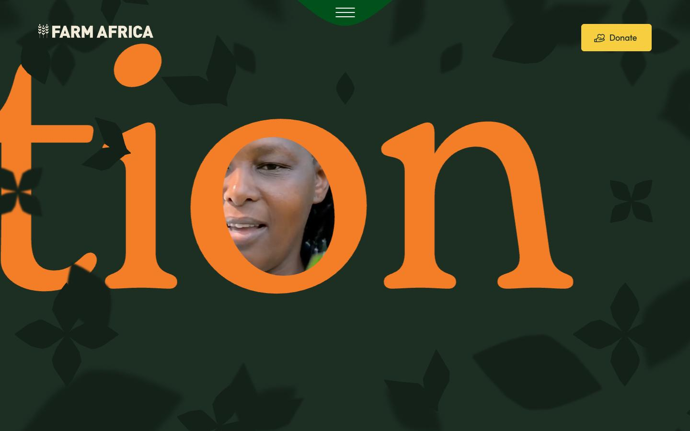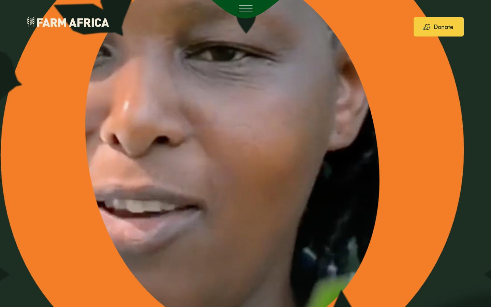</span></a><figcaption><b>Farm Africa</b>글자 'o'가 창이 되어 얼굴로 확대 → A·C·T 글자 창</figcaption></figure><figure><a href="https://www.rspca.org.uk/" target="_blank" rel="noopener">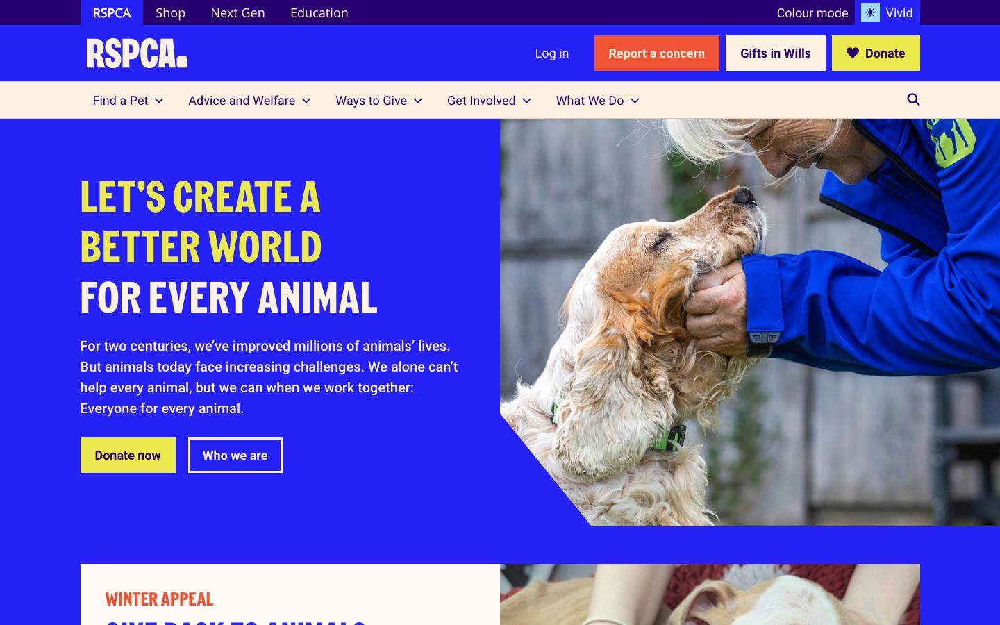</a><figcaption><b>RSPCA</b>BI와 어울리는 그래픽 요소</figcaption></figure></div>
    </div>
  </article>
  <article class="dir" id="dir-d">
    <div class="dir-head">
      <div><div class="dir-title"><h3>D type</h3></div></div>
      <p class="muted" style="margin:0">기록 장부처럼 정돈된 화면입니다. 모든 기록은 흑백에서 시작하고, 아이가 회복할수록 사진에 색이 차오릅니다. THRIVING에서는 색이 아래부터 천천히 채워집니다.</p>
    </div>
    <div class="mbw"><div class="mb vD" role="img" aria-label="D type 무드보드"><div class="t-ttl"><div class="mt1"><span class="mlt">D</span><span class="mnm">type</span></div><div class="kw"><i>기록</i><i>회복</i><i>증거</i><i>신뢰</i></div></div><div class="t-hero"><div class="cmp vD"><div class="cn"><i class="tk">학대받는 동물을 직접 구조합니다</i><i>구조·활동</i><i>입양</i><b>후원하기</b></div><div class="cx"><span class="eb">RESCUE LOG / 2025.03</span><h4>아무도 들어가지 않는 곳으로,<br><b>주저하지 않고 들어갑니다.</b></h4><p>위액트는 학대받는 동물들을 구조하여 행복한 삶을 살 수 있도록 직접 행동합니다.</p><div class="bt"><span class="p1">정기후원 ↳</span><span class="p2">아이들 만나기</span></div></div><i class="cm" style="right:52.6cqw;top:15.5cqh"></i><i class="cm" style="right:4.6cqw;top:15.5cqh"></i><i class="cm" style="right:52.6cqw;top:89.5cqh"></i><i class="cm" style="right:4.6cqw;top:89.5cqh"></i><span class="ml" style="right:44cqw;top:17.5cqh">2025.03 · 산불 현장</span><span class="ml" style="right:6cqw;top:17.5cqh">[ RESCUED ]</span></div></div><div class="t-pal"><p class="tl">COLOR</p><div class="bars"><i class="lt" style="flex-grow:45;background:#FFFFFF"><span>화이트<em>45% · #FFFFFF</em></span></i><i class="pb bw" style="flex-grow:30;background-image:url('photos/IMG_9896-after.jpg')"><span>흑백 → 컬러 사진<em>30%</em></span></i><i class="lt" style="flex-grow:12;background:#F2F4F3"><span>스노우<em>12% · #F2F4F3</em></span></i><i class="" style="flex-grow:10;background:#062E33"><span>딥 틸<em>10% · #062E33</em></span></i><i class="" style="flex-grow:3;background:#00515B"><span>액트 틸<em>3% · #00515B</em></span></i></div></div><div class="t-typ"><p class="tl">TYPE</p><div class="aa"><span style="font-family:'NanumSquare Neo';font-weight:800;letter-spacing:-.03em">가</span><span style="font-family:'Geist';font-weight:600;letter-spacing:-.04em">Aa</span></div><p class="fn"><b style="font-family:'NanumSquare Neo';font-weight:800;letter-spacing:-.03em">나눔스퀘어 네오</b> <i>/</i> <b style="font-family:'Geist';font-weight:600;letter-spacing:-.04em">Geist + Geist Mono</b></p><p class="ab" style="font-family:'NanumSquare Neo';font-weight:800;letter-spacing:-.03em">가나다라마바사아자차카타파하</p><p class="ab" style="font-family:'Geist';font-weight:600;letter-spacing:-.04em">ABCDEFGHIJKLM 0123456789</p><p class="bdy">본문 Pretendard · 위액트는 학대받는 동물들을 구조합니다.</p></div><div class="t-ph"><p class="tl">PHOTO</p><div class="fr"><i class="scn"></i><i class="cm" style="left:3%;top:4%"></i><i class="cm" style="right:3%;top:4%"></i><i class="cm" style="left:3%;bottom:4%"></i><i class="cm" style="right:3%;bottom:4%"></i><span class="mlb">[ ADOPTED ]</span></div><span class="pl dk mono">LOG 03 · 색이 아래부터 차오름</span></div><div class="t-mob"><div class="phone"><div class="scr mo vD"><div class="mnav"><span>메뉴</span></div><div class="mfrm"><i class="cm" style="left:2cqw;top:1cqh"></i><i class="cm" style="right:2cqw;top:1cqh"></i><i class="cm" style="left:2cqw;bottom:1cqh"></i><i class="cm" style="right:2cqw;bottom:1cqh"></i></div><div class="mtx"><p class="meb">RESCUE LOG / 2025.03</p><h5>아무도 들어가지 않는 곳으로,<br><b>주저하지 않고 들어갑니다.</b></h5></div><div class="mbar"><span>정기후원</span><span>일시후원</span></div><span class="mfab">!</span></div></div><p class="tl">MOBILE</p></div><div class="t-sig mfD"><p class="tl">MOTIF</p><div class="ldg"><div class="lg2"><div><code>2025.03.25</code><span>A · ABUSED</span><i class="">[ RESCUED ]</i></div></div><div class="lg2"><div><code>2025.04.02</code><span>C · COMFORTED</span><i class="">[ IN CARE ]</i></div></div><div class="lg2"><div><code>2025.06.18</code><span>T · THRIVING</span><i class="on">[ ADOPTED ]</i></div></div></div></div><div class="t-card cdD"><p class="tl">ADOPTION CARD</p><div class="cph"><span class="lb">입양 가능</span></div><div class="cnm"><b>짱이</b><span>Jjangi</span></div><p class="cmt">포메라니안 · 남아 · 4살 · 3.1kg</p><dl class="ctl"><div><dt>사람</dt><dd>좋아해요</dd></div><div><dt>다른 개</dt><dd>천천히 친해져요</dd></div></dl><p class="crs">2025.10 · 충남 당진 구조</p><span class="cbt">입양 신청</span></div><div class="t-don nD"><p class="tl">DONATE</p><b class="dtt">매달 함께하기</b><div class="seg3"><span class="on">정기후원</span><span>일시후원</span></div><div class="am"><i>1만</i><i class="on">2만</i><i>3만</i><i>5만</i></div><span class="dbp">정기후원 시작하기</span><span class="dbs">아이들 만나기</span><div class="sts"><i class="sa1">입양 가능</i><i class="sa2">임보 중</i><i class="sa3">치료 중</i></div></div></div></div>
    <div class="lp-wrap">
      <p class="sub-label">랜딩페이지 미리보기</p>
      <div class="lp lpD" data-lp="D" data-tone="light" role="region" aria-label="D안 랜딩페이지 미리보기. 안에서 스크롤하면 움직입니다"><div class="lp-scroll" tabindex="0"><div class="sc zD1" data-scene data-tone="light"><div class="st"><div class="dl"><p class="lab rise">RESCUE LOG / 2025.03</p><h3 class="ttl rise d1"><span class="ko">아무도 들어가지 않는 곳으로,<br><b>주저하지 않고 들어갑니다.</b></span><span class="en">Into the place no one goes,<br><b>without hesitation.</b></span></h3><p class="rise d2"><span class="ko">위액트는 학대받는 동물들을 구조하여 행복한 삶을 살 수 있도록 직접 행동합니다.</span><span class="en">WE ACT rescues abused animals and acts directly so they can go on to live happy lives.</span></p></div><div class="frm"><i class="cm" style="left:.8cqw;top:1.3cqh"></i><i class="cm" style="right:.8cqw;top:1.3cqh"></i><i class="cm" style="left:.8cqw;bottom:1.3cqh"></i><i class="cm" style="right:.8cqw;bottom:1.3cqh"></i><span class="ml" style="left:2.4cqw;top:3cqh"><span class="ko">2025.03 · 경북 산불 현장</span><span class="en">MAR 2025 · GYEONGBUK WILDFIRE</span></span><span class="ml" style="right:2.4cqw;top:3cqh">[ RESCUED ]</span></div></div></div><div class="sc zD2" data-scene data-tone="light"><div class="st"><div class="dl"><p class="lab">LOG / WE ACT! CREW</p><h3 class="ttl"><span class="ko">위액트 크루의 옷에는<br><b>세 단어가 적혀 있습니다.</b></span><span class="en">Three words are printed<br><b>on our crew jackets.</b></span></h3><p><span class="ko">ABUSED · COMFORTED · THRIVING. 세 단어의 첫 글자가 A·C·T입니다.</span><span class="en">ABUSED · COMFORTED · THRIVING. Their first letters spell A·C·T.</span></p></div><div class="frm"><i class="cm" style="left:.8cqw;top:1.3cqh"></i><i class="cm" style="right:.8cqw;top:1.3cqh"></i><i class="cm" style="left:.8cqw;bottom:1.3cqh"></i><i class="cm" style="right:.8cqw;bottom:1.3cqh"></i><span class="ml" style="left:2.4cqw;top:3cqh">CREW JACKET</span></div></div></div><div class="sc zD3" data-scene data-tone="light"><div class="st"><div class="ledger3"><p class="lab">A · C · T</p><div class="lrow" style="--j:0;--f:99;--l:0"><code>A · ABUSED</code><div><h3 class="ttl"><span class="ko">가장 아픈 곳에서<br><b>시작합니다.</b></span><span class="en">It starts where<br><b>it hurts most.</b></span></h3><p><span class="ko">뜬장, 개농장, 불 탄 마을. 동물이 학대받는 현장에 직접 들어가 아이들을 꺼냅니다.</span><span class="en">Cages, dog farms, burned villages. We go into the places where animals are abused and bring them out.</span></p></div><span class="tg"><i class="t0">[ RESCUED ]</i></span></div><div class="lrow" style="--j:1;--f:0;--l:0"><code>C · COMFORTED</code><div><h3 class="ttl"><span class="ko">곁을 지키는<br><b>시간.</b></span><span class="en">Time spent<br><b>by their side.</b></span></h3><p><span class="ko">치료를 받고 마음이 풀릴 때까지, 크루가 곁을 떠나지 않습니다.</span><span class="en">Medical care, and a crew that stays until the fear fades.</span></p></div><span class="tg"><i class="t0">[ IN CARE ]</i></span></div><div class="lrow" style="--j:2;--f:0;--l:99"><code>T · THRIVING</code><div><h3 class="ttl"><span class="ko">다시,<br><b>살아가는 날.</b></span><span class="en">The day they start<br><b>living again.</b></span></h3><p><span class="ko">국내와 미국·캐나다의 평생 가족을 만나, 이름으로 불리며 살아갑니다.</span><span class="en">With forever families in Korea, the US and Canada, they live by their own names.</span></p></div><span class="tg"><i class="t1">[ IN CARE ]</i><i class="t2">[ ADOPTED ]</i></span></div></div><div class="cphoto"><i class="scan"></i><i class="cm" style="left:.8cqw;top:1.3cqh"></i><i class="cm" style="right:.8cqw;top:1.3cqh"></i><i class="cm" style="left:.8cqw;bottom:1.3cqh"></i><i class="cm" style="right:.8cqw;bottom:1.3cqh"></i></div></div></div><div class="sc zD4" data-scene data-tone="dark"><h3 class="ttl"><span class="ko">WE ACT!의 WE가<br><b>되어 주세요.</b></span><span class="en">Be the WE<br><b>in WE ACT!</b></span></h3><span class="go"><span class="ko">정기후원 ↳</span><span class="en">GIVE MONTHLY ↳</span></span><span class="go g2"><span class="ko">아이들 만나기</span><span class="en">MEET THE ANIMALS</span></span><span class="wm" aria-hidden="true">WE ACT!</span></div></div><div class="lp-nav"><span class="chip tick"><span class="ko">학대받는 동물을 직접 구조합니다</span><span class="en">Rescuing abused animals, hands-on</span></span><span class="chip"><span class="ko">구조·활동</span><span class="en">Rescue</span></span><span class="chip"><span class="ko">입양</span><span class="en">Adopt</span></span><span class="chip on"><span class="ko">후원하기</span><span class="en">Donate</span></span></div><span class="lp-fab" aria-hidden="true">!</span><span class="lp-hint">화면 안에서 스크롤해 보세요 ↓</span></div>
      <div class="lp-ctrl"><button type="button" class="play" data-act="play">자동 재생</button><button type="button" data-act="reset">처음으로</button><span class="lang" role="group" aria-label="언어"><button type="button" data-lang="ko" aria-pressed="true">KR</button><button type="button" data-lang="en" aria-pressed="false">EN</button></span><span class="lp-bar"><i></i></span></div>
    </div>
    <div class="dir-body">
      <div>
        <p class="sub-label">움직임</p>
        <ol class="sb"><li><span>01</span><div>흑백 사진, 모서리 표시, 모노 라벨, 두 톤 제목</div></li><li><span>02</span><div>A·C·T가 장부의 세 줄처럼 쌓이고 지금 줄만 진하게</div></li><li><span>03</span><div>ABUSED는 흑백, COMFORTED에서 색이 옅게 돌아옴</div></li><li><span>04</span><div>THRIVING에서 색이 아래부터 천천히 차오르고, 다 차면 [ ADOPTED ]</div></li></ol>
        <dl class="spec one"><div><dt>사진</dt><dd>흑백에서 시작해 회복할수록 컬러. 모서리 표시가 있는 틀</dd></div><div><dt>UI</dt><dd>칩 메뉴, 모노 라벨, 상태 태그, 윤곽선 워드마크</dd></div><div><dt>리스크</dt><dd>차가울 수 있음 → 색이 돌아오는 순간을 정점으로</dd></div></dl>
      </div>
      <div class="tsys emD">
        <p class="sub-label">서체 · 타이틀 / 소제목 / 본문</p>
        <p class="tspec" style="font-family:'NanumSquare Neo';font-weight:800;letter-spacing:-.03em"><small>KR · 나눔스퀘어 네오</small>아무도 들어가지 않는 곳으로, <b>주저하지 않고 들어갑니다.</b></p>
        <p class="tspec" style="font-family:'Geist';font-weight:600;letter-spacing:-.04em"><small>EN · Geist + Geist Mono</small>Into the place no one goes, <b>without hesitation.</b></p>
        <div class="tsub"><small>소제목</small><p style="font-family:'NanumSquare Neo';font-weight:800;letter-spacing:-.03em">가장 아픈 곳에서 <b>시작합니다.</b></p><p style="font-family:'Geist';font-weight:600;letter-spacing:-.04em">It starts where <b>it hurts most.</b></p></div>
        <div class="tbody"><small>본문 · Pretendard</small><p>위액트는 학대받는 동물들을 구조하여 행복한 삶을 살 수 있도록 직접 행동합니다.</p><p>WE ACT rescues abused animals and acts directly so they can go on to live happy lives.</p></div>
        <p class="tnote2"><b>나눔스퀘어 네오</b> 네모난 뼈대, 장부·계기판 같은 인상 · <b>Geist / Geist Mono</b> 정밀한 그로테스크와 고정폭 라벨</p>
      </div>
    </div>
    <div>
      <p class="sub-label">레퍼런스</p>
      <div class="refs"><figure><a href="https://onspecdaq.com/" target="_blank" rel="noopener">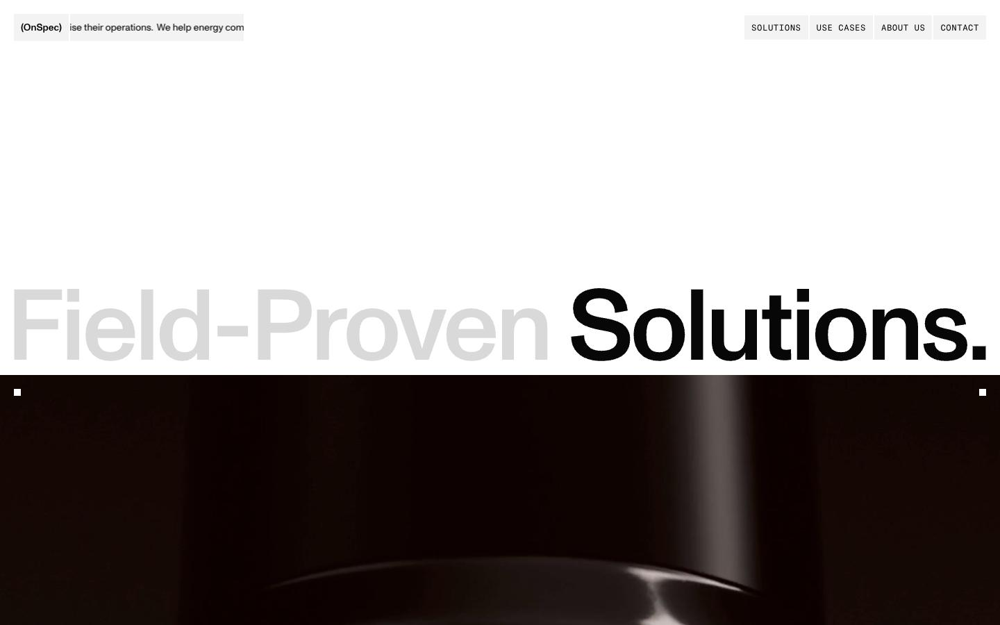</a><figcaption><b>OnSpec</b>두 톤 헤드라인, 모노 라벨, 모서리 표시 사진 틀</figcaption></figure></div>
    </div>
  </article>
  <article class="dir" id="dir-e">
    <div class="dir-head">
      <div><div class="dir-title"><h3>E type</h3></div></div>
      <p class="muted" style="margin:0">끊기지 않는 카메라가 사진에서 사진으로 이어집니다. ABUSED에서 가장 어둡고, THRIVING부터 다시 밝아집니다.</p>
    </div>
    <div class="mbw"><div class="mb vE" role="img" aria-label="E type 무드보드"><div class="t-ttl"><div class="mt1"><span class="mlt">E</span><span class="mnm">type</span></div><div class="kw"><i>몰입</i><i>하강</i><i>발견</i><i>고요한 긴장</i></div></div><div class="t-hero"><div class="cmp vE"><div class="cn"><span>위액트</span><span>구조·활동</span><span>입양</span><b>후원하기</b></div><div class="cx"><span class="eb">2025.03 · 경북 산불 현장</span><h4>아무도 들어가지 않는 곳으로,<br><b>주저하지 않고 들어갑니다.</b></h4><p>위액트는 학대받는 동물들을 구조하여 행복한 삶을 살 수 있도록 직접 행동합니다.</p><div class="bt"><span class="p1 pw">정기후원</span><span class="p2">아이들 만나기</span></div></div></div></div><div class="t-pal"><p class="tl">COLOR</p><div class="bars"><i class="pb" style="flex-grow:85;background-image:url('photos/IMG_6182-culvert.jpg')"><span>영상<em>85%</em></span></i><i class="" style="flex-grow:12;background:#062E33"><span>딥 틸<em>12% · #062E33</em></span></i><i class="lt" style="flex-grow:3;background:#FFFFFF"><span>화이트<em>3% · #FFFFFF</em></span></i></div></div><div class="t-typ"><p class="tl">TYPE</p><div class="aa"><span style="font-family:'KoPub Dotum';font-weight:500;letter-spacing:-.02em">가</span><span style="font-family:'Hanken Grotesk';font-weight:500;letter-spacing:-.02em">Aa</span></div><p class="fn"><b style="font-family:'KoPub Dotum';font-weight:500;letter-spacing:-.02em">KoPub 돋움 Medium</b> <i>/</i> <b style="font-family:'Hanken Grotesk';font-weight:500;letter-spacing:-.02em">Hanken Grotesk</b></p><p class="ab" style="font-family:'KoPub Dotum';font-weight:500;letter-spacing:-.02em">가나다라마바사아자차카타파하</p><p class="ab" style="font-family:'Hanken Grotesk';font-weight:500;letter-spacing:-.02em">ABCDEFGHIJKLM 0123456789</p><p class="bdy">본문 Pretendard · 위액트는 학대받는 동물들을 구조합니다.</p></div><div class="t-ph"><p class="tl">PHOTO</p><div class="vg"></div><span class="pl ctr">C · <b>COMFORTED</b></span></div><div class="t-mob"><div class="phone"><div class="scr mo vE"><div class="mnav"><span>메뉴</span></div><div class="mtx"><p class="meb">2025.03 · 경북 산불 현장</p><h5>아무도 들어가지 않는 곳으로,<br><b>주저하지 않고 들어갑니다.</b></h5></div><div class="mbar"><span>정기후원</span><span>일시후원</span></div><span class="mfab">!</span></div></div><p class="tl">MOBILE</p></div><div class="t-sig mfE"><p class="tl">MOTIF</p><div class="dp"><span>현장</span><span>세 단어</span><span class="on">A</span><span>C</span><span>T</span></div><p class="big"><i>A·C·</i><b>T</b></p></div><div class="t-card cdE"><p class="tl">ADOPTION CARD</p><div class="cph"><span class="lb">입양 가능</span></div><div class="cnm"><b>짱이</b><span>Jjangi</span></div><p class="cmt">포메라니안 · 남아 · 4살 · 3.1kg</p><dl class="ctl"><div><dt>사람</dt><dd>좋아해요</dd></div><div><dt>다른 개</dt><dd>천천히 친해져요</dd></div></dl><p class="crs">2025.10 · 충남 당진 구조</p><span class="cbt">입양 신청</span></div><div class="t-don nE"><p class="tl">DONATE</p><b class="dtt">매달 함께하기</b><div class="seg3"><span class="on">정기후원</span><span>일시후원</span></div><div class="am"><i>1만</i><i class="on">2만</i><i>3만</i><i>5만</i></div><span class="dbp">정기후원 시작하기</span><span class="dbs">아이들 만나기</span><div class="sts"><i class="sa1">입양 가능</i><i class="sa2">임보 중</i><i class="sa3">치료 중</i></div></div></div></div>
    <div class="lp-wrap">
      <p class="sub-label">랜딩페이지 미리보기</p>
      <div class="lp lpE" data-lp="E" data-tone="dark" role="region" aria-label="E안 랜딩페이지 미리보기. 안에서 스크롤하면 움직입니다"><div class="cam" aria-hidden="true"><div class="dark"></div><div class="vig"></div><div class="whiten"></div></div><div class="lp-scroll" tabindex="0"><div class="ln first" data-scene data-line><div><p class="eb3"><span class="ko">2025.03 · 경북 산불 현장</span><span class="en">MAR 2025 · GYEONGBUK WILDFIRE</span></p><h3 class="ttl rise"><span class="ko">아무도 들어가지 않는 곳으로,<br><b>주저하지 않고 들어갑니다.</b></span><span class="en">Into the place no one goes,<br><b>without hesitation.</b></span></h3><p class="bd"><span class="ko">위액트는 학대받는 동물들을 구조하여 행복한 삶을 살 수 있도록 직접 행동합니다.</span><span class="en">WE ACT rescues abused animals and acts directly so they can go on to live happy lives.</span></p></div><div class="down"><span class="ko">더 깊이</span><span class="en">DEEPER</span><i></i></div></div><div class="ln" data-scene data-line><div><p class="eb3"><span class="ko">WE ACT! CREW</span><span class="en">WE ACT! CREW</span></p><h3 class="ttl"><span class="ko">위액트 크루의 옷에는<br><b>세 단어가 적혀 있습니다.</b></span><span class="en">Three words are printed<br><b>on our crew jackets.</b></span></h3><p class="bd"><span class="ko">ABUSED · COMFORTED · THRIVING. 세 단어의 첫 글자가 A·C·T입니다.</span><span class="en">ABUSED · COMFORTED · THRIVING. Their first letters spell A·C·T.</span></p></div></div><div class="ln" data-scene data-line><div><p class="eb3"><span class="ko">A · ABUSED</span><span class="en">A · ABUSED</span></p><h3 class="ttl"><span class="ko">가장 아픈 곳에서<br><b>시작합니다.</b></span><span class="en">It starts where<br><b>it hurts most.</b></span></h3><p class="bd"><span class="ko">뜬장, 개농장, 불 탄 마을. 동물이 학대받는 현장에 직접 들어가 아이들을 꺼냅니다.</span><span class="en">Cages, dog farms, burned villages. We go into the places where animals are abused and bring them out.</span></p></div></div><div class="ln" data-scene data-line><div><p class="eb3"><span class="ko">C · COMFORTED</span><span class="en">C · COMFORTED</span></p><h3 class="ttl"><span class="ko">곁을 지키는<br><b>시간.</b></span><span class="en">Time spent<br><b>by their side.</b></span></h3><p class="bd"><span class="ko">치료를 받고 마음이 풀릴 때까지, 크루가 곁을 떠나지 않습니다.</span><span class="en">Medical care, and a crew that stays until the fear fades.</span></p></div></div><div class="ln" data-scene data-line><div><p class="eb3"><span class="ko">T · THRIVING</span><span class="en">T · THRIVING</span></p><h3 class="ttl"><span class="ko">다시,<br><b>살아가는 날.</b></span><span class="en">The day they start<br><b>living again.</b></span></h3><p class="bd"><span class="ko">국내와 미국·캐나다의 평생 가족을 만나, 이름으로 불리며 살아갑니다.</span><span class="en">With forever families in Korea, the US and Canada, they live by their own names.</span></p></div></div><div class="ln last" data-scene data-line><div><h3 class="ttl"><span class="ko">WE ACT!의 WE가<br><b>되어 주세요.</b></span><span class="en">Be the WE<br><b>in WE ACT!</b></span></h3><div class="btns"><span class="b1"><span class="ko">정기후원</span><span class="en">Give monthly</span></span><span class="b2"><span class="ko">아이들 만나기</span><span class="en">Meet the animals</span></span></div></div></div></div><div class="depth" aria-hidden="true"><span class=on><span class="ko">현장</span><span class="en">Field</span></span><span><span class="ko">세 단어</span><span class="en">Words</span></span><span><span class="ko">A</span><span class="en">A</span></span><span><span class="ko">C</span><span class="en">C</span></span><span><span class="ko">T</span><span class="en">T</span></span><span><span class="ko">WE</span><span class="en">WE</span></span></div><div class="lp-nav ctr"><div class="l"><span class="ko">위액트</span><span class="en">About</span><span class="ko">구조·활동</span><span class="en">Rescue</span></div><span></span><div class="r"><span class="ko">입양</span><span class="en">Adopt</span><span class="cta"><span class="ko">후원하기</span><span class="en">Donate</span></span></div></div><span class="lp-fab" aria-hidden="true">!</span><span class="lp-hint">화면 안에서 스크롤해 보세요 ↓</span></div>
      <div class="lp-ctrl"><button type="button" class="play" data-act="play">자동 재생</button><button type="button" data-act="reset">처음으로</button><span class="lang" role="group" aria-label="언어"><button type="button" data-lang="ko" aria-pressed="true">KR</button><button type="button" data-lang="en" aria-pressed="false">EN</button></span><span class="lp-bar"><i></i></span></div>
    </div>
    <div class="dir-body">
      <div>
        <p class="sub-label">움직임</p>
        <ol class="sb"><li><span>01</span><div>사진이 끊기지 않고 이어지며 카메라가 계속 다가감</div></li><li><span>02</span><div>문장은 가운데 한 줄씩, 흐린 글자와 밝은 글자 대비</div></li><li><span>03</span><div>ABUSED에서 가장자리가 가장 어두움</div></li><li><span>04</span><div>THRIVING부터 밝아지고 마지막은 하얀 화면</div></li></ol>
        <dl class="spec one"><div><dt>사진</dt><dd>화면 전체, 가장자리 어둠의 깊이로 장면 구분</dd></div><div><dt>UI</dt><dd>가운데 로고, 오른쪽 깊이 표시, 흰 버튼</dd></div><div><dt>리스크</dt><dd>정보 찾기가 느릴 수 있음 → 헤더와 '!' 버튼 필수</dd></div></dl>
      </div>
      <div class="tsys emE">
        <p class="sub-label">서체 · 타이틀 / 소제목 / 본문</p>
        <p class="tspec" style="font-family:'KoPub Dotum';font-weight:500;letter-spacing:-.02em"><small>KR · KoPub 돋움 Medium</small>아무도 들어가지 않는 곳으로, <b>주저하지 않고 들어갑니다.</b></p>
        <p class="tspec" style="font-family:'Hanken Grotesk';font-weight:500;letter-spacing:-.02em"><small>EN · Hanken Grotesk</small>Into the place no one goes, <b>without hesitation.</b></p>
        <div class="tsub"><small>소제목</small><p style="font-family:'KoPub Dotum';font-weight:500;letter-spacing:-.02em">가장 아픈 곳에서 <b>시작합니다.</b></p><p style="font-family:'Hanken Grotesk';font-weight:500;letter-spacing:-.02em">It starts where <b>it hurts most.</b></p></div>
        <div class="tbody"><small>본문 · Pretendard</small><p>위액트는 학대받는 동물들을 구조하여 행복한 삶을 살 수 있도록 직접 행동합니다.</p><p>WE ACT rescues abused animals and acts directly so they can go on to live happy lives.</p></div>
        <p class="tnote2"><b>KoPub 돋움</b> 출판용으로 만든 단정한 고딕, 굵기 대신 밝기로 강조 · <b>Hanken Grotesk</b> 같은 결의 영문</p>
      </div>
    </div>
    <div>
      <p class="sub-label">레퍼런스</p>
      <div class="refs"><figure><a href="https://www.trickyknot.com/" target="_blank" rel="noopener">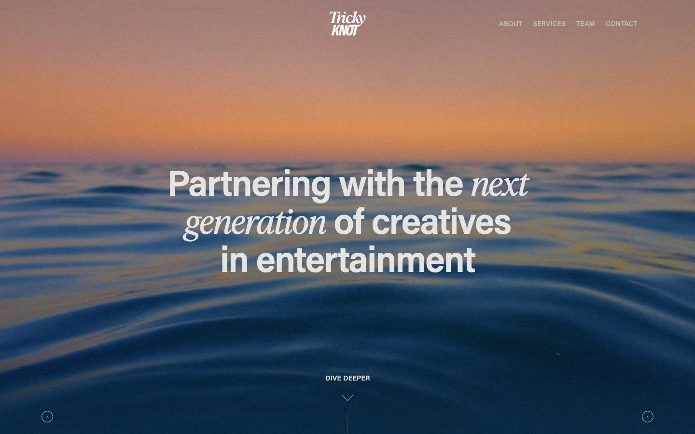</a><figcaption><b>Tricky Knot</b>끊기지 않는 한 화면, 가운데 한 문장</figcaption></figure></div>
    </div>
  </article>
  <article class="dir" id="dir-f">
    <div class="dir-head">
      <div><div class="dir-title"><h3>F type</h3></div></div>
      <p class="muted" style="margin:0">산불 현장의 밤에서 출발해 아침의 집에 닿기까지, 화면이 옆으로 흐르는 한 번의 여정입니다. 사진은 일어난 순서대로 길 위에 놓이고, 갈수록 배경이 밝아집니다.</p>
    </div>
    <div class="mbw"><div class="mb vF" role="img" aria-label="F type 무드보드"><div class="t-ttl"><div class="mt1"><span class="mlt">F</span><span class="mnm">type</span></div><div class="kw"><i>여정</i><i>시간</i><i>빛</i><i>귀가</i></div></div><div class="t-hero"><div class="cmp vF"><div class="cn"><span>위액트</span><span>구조·활동</span><span>입양</span><b>후원하기</b></div><div class="cx"><span class="eb">2025.03 · 경북 산불 현장</span><h4>아무도 들어가지 않는 곳으로,<br><b>주저하지 않고 들어갑니다.</b></h4><p>위액트는 학대받는 동물들을 구조하여 행복한 삶을 살 수 있도록 직접 행동합니다.</p><div class="bt"><span class="p1 pw">정기후원</span><span class="p2">아이들 만나기</span></div></div><div class="frt"><span class="on" style="left:0%">현장</span><span class="" style="left:25%">A</span><span class="" style="left:50%">C</span><span class="" style="left:75%">T</span><span class="" style="left:100%">집</span></div></div></div><div class="t-pal"><p class="tl">COLOR</p><div class="bars"><i class="pb" style="flex-grow:55;background-image:url('photos/IMG_2593-wildfire-walk.jpg')"><span>사진<em>55%</em></span></i><i class="" style="flex-grow:22;background:#062E33"><span>딥 틸 · 밤<em>22% · #062E33</em></span></i><i class="lt" style="flex-grow:18;background:#F2F4F3"><span>스노우 · 아침<em>18% · #F2F4F3</em></span></i><i class="" style="flex-grow:5;background:#00515B"><span>액트 틸<em>5% · #00515B</em></span></i></div></div><div class="t-typ"><p class="tl">TYPE</p><div class="aa"><span style="font-family:'LINE Seed KR';font-weight:700;letter-spacing:-.03em">가</span><span style="font-family:'LINE Seed KR';font-weight:700;letter-spacing:-.02em">Aa</span></div><p class="fn"><b style="font-family:'LINE Seed KR';font-weight:700;letter-spacing:-.03em">LINE Seed Sans KR</b> <i>/</i> <b style="font-family:'LINE Seed KR';font-weight:700;letter-spacing:-.02em">LINE Seed Sans</b></p><p class="ab" style="font-family:'LINE Seed KR';font-weight:700;letter-spacing:-.03em">가나다라마바사아자차카타파하</p><p class="ab" style="font-family:'LINE Seed KR';font-weight:700;letter-spacing:-.02em">ABCDEFGHIJKLM 0123456789</p><p class="bdy">본문 Pretendard · 위액트는 학대받는 동물들을 구조합니다.</p></div><div class="t-ph"><p class="tl">PHOTO</p><div class="fdy"></div><span class="pl">밤 → 아침, 일어난 순서대로</span></div><div class="t-mob"><div class="phone"><div class="scr mo vF"><div class="mnav"><span>메뉴</span></div><div class="mrt"><span class="on" style="left:0%">현장</span><span class="" style="left:25%">A</span><span class="" style="left:50%">C</span><span class="" style="left:75%">T</span><span class="" style="left:100%">집</span></div><div class="mtx"><p class="meb">2025.03 · 경북 산불 현장</p><h5>아무도 들어가지 않는 곳으로,<br><b>주저하지 않고 들어갑니다.</b></h5></div><div class="mbar"><span>정기후원</span><span>일시후원</span></div><span class="mfab">!</span></div></div><p class="tl">MOBILE</p></div><div class="t-sig mfF"><p class="tl">MOTIF</p><div class="sky"></div><div class="rd"><span class="on" style="left:4%">현장</span><span class="on" style="left:28%">A</span><span class="on" style="left:50%">C</span><span class="" style="left:72%">T</span><span class="" style="left:96%">집</span></div><p class="wh">밤에서 아침으로,<br>현장에서 집으로.</p></div><div class="t-card cdF"><p class="tl">ADOPTION CARD</p><div class="cph"><span class="lb">입양 가능</span></div><div class="cnm"><b>짱이</b><span>Jjangi</span></div><p class="cmt">포메라니안 · 남아 · 4살 · 3.1kg</p><dl class="ctl"><div><dt>사람</dt><dd>좋아해요</dd></div><div><dt>다른 개</dt><dd>천천히 친해져요</dd></div></dl><p class="crs">2025.10 · 충남 당진 구조</p><span class="cbt">입양 신청</span></div><div class="t-don nF"><p class="tl">DONATE</p><b class="dtt">매달 함께하기</b><div class="seg3"><span class="on">정기후원</span><span>일시후원</span></div><div class="am"><i>1만</i><i class="on">2만</i><i>3만</i><i>5만</i></div><span class="dbp">정기후원 시작하기</span><span class="dbs">아이들 만나기</span><div class="sts"><i class="sa1">입양 가능</i><i class="sa2">임보 중</i><i class="sa3">치료 중</i></div></div></div></div>
    <div class="lp-wrap">
      <p class="sub-label">랜딩페이지 미리보기</p>
      <div class="lp lpF" data-lp="F" data-tone="dark" role="region" aria-label="F안 랜딩페이지 미리보기. 안에서 스크롤하면 움직입니다"><div class="lp-scroll" tabindex="0"><div class="sc zF1" data-scene data-tone="dark"><div class="st"><div class="ftrack"><div class="fhero"></div><div class="fht"><p class="fl rise"><span class="ko">2025.03 · 경북 산불 현장</span><span class="en">MAR 2025 · GYEONGBUK WILDFIRE</span></p><h3 class="ttl rise"><span class="ko">아무도 들어가지 않는 곳으로,<br><b>주저하지 않고 들어갑니다.</b></span><span class="en">Into the place no one goes,<br><b>without hesitation.</b></span></h3><p class="rise d1"><span class="ko">위액트는 학대받는 동물들을 구조하여 행복한 삶을 살 수 있도록 직접 행동합니다.</span><span class="en">WE ACT rescues abused animals and acts directly so they can go on to live happy lives.</span></p></div><div class="fph" style="left:118cqw;top:18cqh;width:34cqw;height:58cqh;--c:0.157;--py:1.2cqh"></div><div class="fph" style="left:200cqw;top:9cqh;width:25cqw;height:72cqh;--c:0.301;--py:-1.4cqh"></div><div class="fph" style="left:272cqw;top:18cqh;width:52cqw;height:58cqh;--c:0.459;--py:1cqh"></div><div class="fph" style="left:372cqw;top:12cqh;width:60cqw;height:66cqh;--c:0.652;--py:-1cqh"></div><div class="ftx lt" style="left:156cqw;top:34cqh;--c:0.224"><p class="fl"><span class="ko">WE ACT! CREW</span><span class="en">WE ACT! CREW</span></p><h3 class="ttl"><span class="ko">위액트 크루의 옷에는<br><b>세 단어가 적혀 있습니다.</b></span><span class="en">Three words are printed<br><b>on our crew jackets.</b></span></h3><p><span class="ko">ABUSED · COMFORTED · THRIVING. 세 단어의 첫 글자가 A·C·T입니다.</span><span class="en">ABUSED · COMFORTED · THRIVING. Their first letters spell A·C·T.</span></p></div><div class="ftx lt" style="left:230cqw;top:44cqh;--c:0.361"><p class="fl"><span class="ko">A · ABUSED</span><span class="en">A · ABUSED</span></p><h3 class="ttl"><span class="ko">가장 아픈 곳에서<br><b>시작합니다.</b></span><span class="en">It starts where<br><b>it hurts most.</b></span></h3><p><span class="ko">뜬장, 개농장, 불 탄 마을. 동물이 학대받는 현장에 직접 들어가 아이들을 꺼냅니다.</span><span class="en">Cages, dog farms, burned villages. We go into the places where animals are abused and bring them out.</span></p></div><div class="ftx lt" style="left:330cqw;top:22cqh;--c:0.544"><p class="fl"><span class="ko">C · COMFORTED</span><span class="en">C · COMFORTED</span></p><h3 class="ttl"><span class="ko">곁을 지키는<br><b>시간.</b></span><span class="en">Time spent<br><b>by their side.</b></span></h3><p><span class="ko">치료를 받고 마음이 풀릴 때까지, 크루가 곁을 떠나지 않습니다.</span><span class="en">Medical care, and a crew that stays until the fear fades.</span></p></div><div class="ftx dk" style="left:438cqw;top:40cqh;--c:0.746"><p class="fl"><span class="ko">T · THRIVING</span><span class="en">T · THRIVING</span></p><h3 class="ttl"><span class="ko">다시,<br><b>살아가는 날.</b></span><span class="en">The day they start<br><b>living again.</b></span></h3><p><span class="ko">국내와 미국·캐나다의 평생 가족을 만나, 이름으로 불리며 살아갑니다.</span><span class="en">With forever families in Korea, the US and Canada, they live by their own names.</span></p></div><div class="fend"><h3 class="ttl"><span class="ko">WE ACT!의 WE가<br><b>되어 주세요.</b></span><span class="en">Be the WE<br><b>in WE ACT!</b></span></h3><div class="btns"><span class="b1"><span class="ko">정기후원</span><span class="en">Give monthly</span></span><span class="b2"><span class="ko">아이들 만나기</span><span class="en">Meet the animals</span></span></div></div><div class="fph fhome" style="left:590cqw;top:16cqh;width:44cqw;height:64cqh;--c:1"></div><div class="froad"><i class="frf"></i><span class="fmk" style="left:30cqw"><i></i><span class="ko">현장</span><span class="en">FIELD</span></span><span class="fmk" style="left:135cqw"><i></i><span class="ko">세 단어</span><span class="en">THREE WORDS</span></span><span class="fmk" style="left:212cqw"><i></i><span class="ko">ABUSED</span><span class="en">ABUSED</span></span><span class="fmk" style="left:298cqw"><i></i><span class="ko">COMFORTED</span><span class="en">COMFORTED</span></span><span class="fmk dk" style="left:402cqw"><i></i><span class="ko">THRIVING</span><span class="en">THRIVING</span></span><span class="fmk dk" style="left:566cqw"><i></i><span class="ko">집</span><span class="en">HOME</span></span></div></div></div></div></div><div class="lp-nav ctr"><div class="l"><span class="ko">위액트</span><span class="en">About</span><span class="ko">구조·활동</span><span class="en">Rescue</span></div><span></span><div class="r"><span class="ko">입양</span><span class="en">Adopt</span><span class="cta"><span class="ko">후원하기</span><span class="en">Donate</span></span></div></div><span class="lp-fab" aria-hidden="true">!</span><span class="lp-hint">화면 안에서 스크롤해 보세요 ↓</span></div>
      <div class="lp-ctrl"><button type="button" class="play" data-act="play">자동 재생</button><button type="button" data-act="reset">처음으로</button><span class="lang" role="group" aria-label="언어"><button type="button" data-lang="ko" aria-pressed="true">KR</button><button type="button" data-lang="en" aria-pressed="false">EN</button></span><span class="lp-bar"><i></i></span></div>
    </div>
    <div class="dir-body">
      <div>
        <p class="sub-label">움직임</p>
        <ol class="sb"><li><span>01</span><div>스크롤하면 화면이 옆으로 흐르며 현장에서 집까지 한 길로 이어짐</div></li><li><span>02</span><div>길을 따라 배경이 밤 → 새벽 → 아침으로 밝아짐</div></li><li><span>03</span><div>사진 속 장면은 틀보다 느리게 움직여 깊이가 생기고, 아래 길 선은 지나온 만큼 채워짐</div></li><li><span>04</span><div>끝은 아침 바탕의 집, 사진과 후원 버튼</div></li></ol>
        <dl class="spec one"><div><dt>사진</dt><dd>일어난 순서대로 길 위에, 크기와 높이를 달리해 배치</dd></div><div><dt>UI</dt><dd>부드러운 둥근 모서리 버튼, 길 선과 작은 이정표 라벨</dd></div><div><dt>리스크</dt><dd>옆으로 흐르는 화면이 낯설 수 있음 → 모바일은 세로로 두고 길 선만 유지</dd></div></dl>
      </div>
      <div class="tsys emF">
        <p class="sub-label">서체 · 타이틀 / 소제목 / 본문</p>
        <p class="tspec" style="font-family:'LINE Seed KR';font-weight:700;letter-spacing:-.03em"><small>KR · LINE Seed Sans KR</small>아무도 들어가지 않는 곳으로, <b>주저하지 않고 들어갑니다.</b></p>
        <p class="tspec" style="font-family:'LINE Seed KR';font-weight:700;letter-spacing:-.02em"><small>EN · LINE Seed Sans</small>Into the place no one goes, <b>without hesitation.</b></p>
        <div class="tsub"><small>소제목</small><p style="font-family:'LINE Seed KR';font-weight:700;letter-spacing:-.03em">가장 아픈 곳에서 <b>시작합니다.</b></p><p style="font-family:'LINE Seed KR';font-weight:700;letter-spacing:-.02em">It starts where <b>it hurts most.</b></p></div>
        <div class="tbody"><small>본문 · Pretendard</small><p>위액트는 학대받는 동물들을 구조하여 행복한 삶을 살 수 있도록 직접 행동합니다.</p><p>WE ACT rescues abused animals and acts directly so they can go on to live happy lives.</p></div>
        <p class="tnote2"><b>LINE Seed Sans</b> 둥근 기하학 뼈대, 부드럽지만 흐트러지지 않음. 한글·영문 한 패밀리</p>
      </div>
    </div>
    <div>
      <p class="sub-label">레퍼런스</p>
      <div class="refs"><figure><a href="https://amaterasu.ai/" target="_blank" rel="noopener">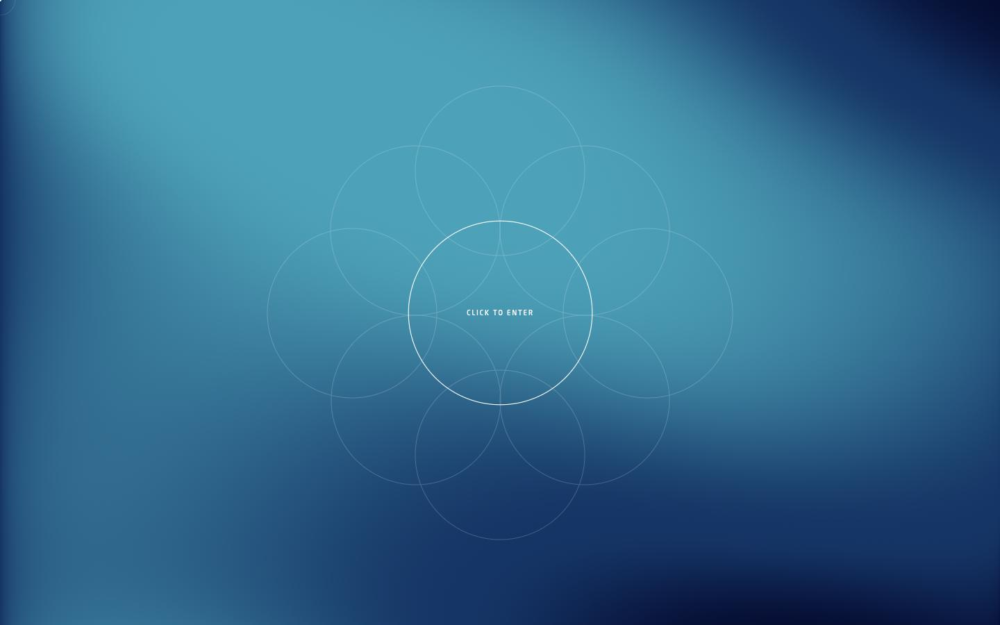</a><figcaption><b>Amaterasu</b>넓은 여백 속 사진 한 장, 천천히 흐르는 화면</figcaption></figure></div>
    </div>
  </article>
  <article class="dir" id="dir-g">
    <div class="dir-head">
      <div><div class="dir-title"><h3>G type</h3></div></div>
      <p class="muted" style="margin:0">현장 사진이 밝은 바탕으로 녹아든 뒤, 흩어져 있던 점들이 모여 아이들의 모습이 됩니다. 한 사람 한 사람이 모여야 한 아이가 보인다는 이야기입니다.</p>
    </div>
    <div class="mbw"><div class="mb vG" role="img" aria-label="G type 무드보드"><div class="t-ttl"><div class="mt1"><span class="mlt">G</span><span class="mnm">type</span></div><div class="kw"><i>함께</i><i>고요함</i><i>연결</i><i>확장</i></div></div><div class="t-hero"><div class="cmp vG"><div class="cn"><span>위액트</span><span>구조·활동</span><span>입양</span><b>후원하기</b></div><div class="cx"><span class="eb">2025.03 · 경북 산불 현장</span><h4>아무도 들어가지 않는 곳으로,<br><b>주저하지 않고 들어갑니다.</b></h4><div class="bt"><span class="p1 pw">정기후원</span><span class="p2">아이들 만나기</span></div></div><div class="gcl"><span>현장으로 직접</span><span>구조 · 치료 · 입양까지</span></div></div></div><div class="t-pal"><p class="tl">COLOR</p><div class="bars"><i class="pb" style="flex-grow:40;background-image:url('photos/IMG_2593-wildfire-walk.jpg')"><span>사진<em>40%</em></span></i><i class="lt" style="flex-grow:38;background:#F2F4F3"><span>스노우<em>38% · #F2F4F3</em></span></i><i class="" style="flex-grow:14;background:#5E6B6C"><span>스톤<em>14% · #5E6B6C</em></span></i><i class="" style="flex-grow:6;background:#062E33"><span>딥 틸<em>6% · #062E33</em></span></i><i class="" style="flex-grow:2;background:#00515B"><span>액트 틸<em>2% · #00515B</em></span></i></div></div><div class="t-typ"><p class="tl">TYPE</p><div class="aa"><span style="font-family:'Gothic A1';font-weight:500;letter-spacing:-.03em">가</span><span style="font-family:'Host Grotesk';font-weight:500;letter-spacing:-.025em">Aa</span></div><p class="fn"><b style="font-family:'Gothic A1';font-weight:500;letter-spacing:-.03em">Gothic A1 Medium</b> <i>/</i> <b style="font-family:'Host Grotesk';font-weight:500;letter-spacing:-.025em">Host Grotesk</b></p><p class="ab" style="font-family:'Gothic A1';font-weight:500;letter-spacing:-.03em">가나다라마바사아자차카타파하</p><p class="ab" style="font-family:'Host Grotesk';font-weight:500;letter-spacing:-.025em">ABCDEFGHIJKLM 0123456789</p><p class="bdy">본문 Pretendard · 위액트는 학대받는 동물들을 구조합니다.</p></div><div class="t-ph"><p class="tl">PHOTO</p><div class="gdc"><div class="gdl"><svg viewBox="0 0 32 40" preserveAspectRatio="xMidYMid slice" aria-hidden="true"><g fill="#062E33" fill-opacity=".8"><circle cx="12.50" cy="0.50" r="0.06"/><circle cx="13.50" cy="0.50" r="0.07"/><circle cx="14.50" cy="0.50" r="0.07"/><circle cx="15.50" cy="0.50" r="0.08"/><circle cx="16.50" cy="0.50" r="0.08"/><circle cx="17.50" cy="0.50" r="0.08"/><circle cx="18.50" cy="0.50" r="0.07"/><circle cx="19.50" cy="0.50" r="0.06"/><circle cx="10.50" cy="1.50" r="0.09"/><circle cx="11.50" cy="1.50" r="0.11"/><circle cx="12.50" cy="1.50" r="0.12"/><circle cx="13.50" cy="1.50" r="0.13"/><circle cx="14.50" cy="1.50" r="0.16"/><circle cx="15.50" cy="1.50" r="0.16"/><circle cx="16.50" cy="1.50" r="0.16"/><circle cx="17.50" cy="1.50" r="0.16"/><circle cx="18.50" cy="1.50" r="0.15"/><circle cx="19.50" cy="1.50" r="0.12"/><circle cx="20.50" cy="1.50" r="0.10"/><circle cx="21.50" cy="1.50" r="0.08"/><circle cx="22.50" cy="1.50" r="0.06"/><circle cx="10.50" cy="2.50" r="0.15"/><circle cx="11.50" cy="2.50" r="0.17"/><circle cx="12.50" cy="2.50" r="0.10"/><circle cx="13.50" cy="2.50" r="0.10"/><circle cx="14.50" cy="2.50" r="0.13"/><circle cx="15.50" cy="2.50" r="0.22"/><circle cx="16.50" cy="2.50" r="0.22"/><circle cx="17.50" cy="2.50" r="0.21"/><circle cx="18.50" cy="2.50" r="0.20"/><circle cx="19.50" cy="2.50" r="0.19"/><circle cx="20.50" cy="2.50" r="0.17"/><circle cx="21.50" cy="2.50" r="0.14"/><circle cx="6.50" cy="3.50" r="0.05"/><circle cx="10.50" cy="3.50" r="0.20"/><circle cx="11.50" cy="3.50" r="0.22"/><circle cx="12.50" cy="3.50" r="0.10"/><circle cx="13.50" cy="3.50" r="0.07"/><circle cx="14.50" cy="3.50" r="0.12"/><circle cx="15.50" cy="3.50" r="0.27"/><circle cx="16.50" cy="3.50" r="0.26"/><circle cx="17.50" cy="3.50" r="0.22"/><circle cx="18.50" cy="3.50" r="0.22"/><circle cx="19.50" cy="3.50" r="0.23"/><circle cx="20.50" cy="3.50" r="0.23"/><circle cx="21.50" cy="3.50" r="0.09"/><circle cx="24.50" cy="3.50" r="0.05"/><circle cx="6.50" cy="4.50" r="0.10"/><circle cx="10.50" cy="4.50" r="0.14"/><circle cx="11.50" cy="4.50" r="0.15"/><circle cx="12.50" cy="4.50" r="0.07"/><circle cx="13.50" cy="4.50" r="0.05"/><circle cx="14.50" cy="4.50" r="0.12"/><circle cx="15.50" cy="4.50" r="0.29"/><circle cx="16.50" cy="4.50" r="0.27"/><circle cx="17.50" cy="4.50" r="0.23"/><circle cx="18.50" cy="4.50" r="0.25"/><circle cx="19.50" cy="4.50" r="0.29"/><circle cx="20.50" cy="4.50" r="0.27"/><circle cx="25.50" cy="4.50" r="0.09"/><circle cx="26.50" cy="4.50" r="0.05"/><circle cx="6.50" cy="5.50" r="0.15"/><circle cx="7.50" cy="5.50" r="0.06"/><circle cx="14.50" cy="5.50" r="0.11"/><circle cx="15.50" cy="5.50" r="0.26"/><circle cx="16.50" cy="5.50" r="0.30"/><circle cx="17.50" cy="5.50" r="0.27"/><circle cx="18.50" cy="5.50" r="0.29"/><circle cx="19.50" cy="5.50" r="0.34"/><circle cx="20.50" cy="5.50" r="0.26"/><circle cx="24.50" cy="5.50" r="0.11"/><circle cx="25.50" cy="5.50" r="0.15"/><circle cx="26.50" cy="5.50" r="0.09"/><circle cx="5.50" cy="6.50" r="0.06"/><circle cx="6.50" cy="6.50" r="0.19"/><circle cx="7.50" cy="6.50" r="0.07"/><circle cx="14.50" cy="6.50" r="0.11"/><circle cx="15.50" cy="6.50" r="0.29"/><circle cx="16.50" cy="6.50" r="0.33"/><circle cx="17.50" cy="6.50" r="0.33"/><circle cx="18.50" cy="6.50" r="0.35"/><circle cx="19.50" cy="6.50" r="0.33"/><circle cx="20.50" cy="6.50" r="0.07"/><circle cx="21.50" cy="6.50" r="0.06"/><circle cx="22.50" cy="6.50" r="0.08"/><circle cx="23.50" cy="6.50" r="0.06"/><circle cx="24.50" cy="6.50" r="0.20"/><circle cx="25.50" cy="6.50" r="0.19"/><circle cx="26.50" cy="6.50" r="0.13"/><circle cx="27.50" cy="6.50" r="0.08"/><circle cx="4.50" cy="7.50" r="0.07"/><circle cx="5.50" cy="7.50" r="0.07"/><circle cx="6.50" cy="7.50" r="0.23"/><circle cx="7.50" cy="7.50" r="0.08"/><circle cx="14.50" cy="7.50" r="0.08"/><circle cx="15.50" cy="7.50" r="0.27"/><circle cx="16.50" cy="7.50" r="0.31"/><circle cx="17.50" cy="7.50" r="0.33"/><circle cx="18.50" cy="7.50" r="0.37"/><circle cx="19.50" cy="7.50" r="0.20"/><circle cx="21.50" cy="7.50" r="0.08"/><circle cx="22.50" cy="7.50" r="0.10"/><circle cx="23.50" cy="7.50" r="0.14"/><circle cx="24.50" cy="7.50" r="0.29"/><circle cx="25.50" cy="7.50" r="0.22"/><circle cx="26.50" cy="7.50" r="0.18"/><circle cx="27.50" cy="7.50" r="0.11"/><circle cx="4.50" cy="8.50" r="0.10"/><circle cx="5.50" cy="8.50" r="0.08"/><circle cx="6.50" cy="8.50" r="0.26"/><circle cx="7.50" cy="8.50" r="0.09"/><circle cx="14.50" cy="8.50" r="0.06"/><circle cx="15.50" cy="8.50" r="0.25"/><circle cx="16.50" cy="8.50" r="0.27"/><circle cx="17.50" cy="8.50" r="0.32"/><circle cx="18.50" cy="8.50" r="0.38"/><circle cx="19.50" cy="8.50" r="0.17"/><circle cx="20.50" cy="8.50" r="0.07"/><circle cx="21.50" cy="8.50" r="0.08"/><circle cx="22.50" cy="8.50" r="0.10"/><circle cx="23.50" cy="8.50" r="0.24"/><circle cx="24.50" cy="8.50" r="0.32"/><circle cx="25.50" cy="8.50" r="0.26"/><circle cx="26.50" cy="8.50" r="0.23"/><circle cx="27.50" cy="8.50" r="0.14"/><circle cx="4.50" cy="9.50" r="0.12"/><circle cx="5.50" cy="9.50" r="0.09"/><circle cx="6.50" cy="9.50" r="0.29"/><circle cx="7.50" cy="9.50" r="0.09"/><circle cx="12.50" cy="9.50" r="0.17"/><circle cx="14.50" cy="9.50" r="0.05"/><circle cx="15.50" cy="9.50" r="0.23"/><circle cx="16.50" cy="9.50" r="0.24"/><circle cx="17.50" cy="9.50" r="0.28"/><circle cx="18.50" cy="9.50" r="0.39"/><circle cx="19.50" cy="9.50" r="0.17"/><circle cx="21.50" cy="9.50" r="0.06"/><circle cx="22.50" cy="9.50" r="0.11"/><circle cx="23.50" cy="9.50" r="0.31"/><circle cx="24.50" cy="9.50" r="0.36"/><circle cx="25.50" cy="9.50" r="0.32"/><circle cx="26.50" cy="9.50" r="0.27"/><circle cx="27.50" cy="9.50" r="0.17"/><circle cx="3.50" cy="10.50" r="0.09"/><circle cx="4.50" cy="10.50" r="0.14"/><circle cx="5.50" cy="10.50" r="0.10"/><circle cx="6.50" cy="10.50" r="0.31"/><circle cx="7.50" cy="10.50" r="0.10"/><circle cx="13.50" cy="10.50" r="0.09"/><circle cx="14.50" cy="10.50" r="0.14"/><circle cx="15.50" cy="10.50" r="0.22"/><circle cx="16.50" cy="10.50" r="0.20"/><circle cx="17.50" cy="10.50" r="0.22"/><circle cx="18.50" cy="10.50" r="0.37"/><circle cx="19.50" cy="10.50" r="0.08"/><circle cx="22.50" cy="10.50" r="0.08"/><circle cx="23.50" cy="10.50" r="0.39"/><circle cx="24.50" cy="10.50" r="0.42"/><circle cx="25.50" cy="10.50" r="0.36"/><circle cx="26.50" cy="10.50" r="0.30"/><circle cx="27.50" cy="10.50" r="0.18"/><circle cx="3.50" cy="11.50" r="0.08"/><circle cx="4.50" cy="11.50" r="0.16"/><circle cx="5.50" cy="11.50" r="0.10"/><circle cx="6.50" cy="11.50" r="0.36"/><circle cx="7.50" cy="11.50" r="0.10"/><circle cx="14.50" cy="11.50" r="0.11"/><circle cx="15.50" cy="11.50" r="0.19"/><circle cx="16.50" cy="11.50" r="0.19"/><circle cx="17.50" cy="11.50" r="0.14"/><circle cx="18.50" cy="11.50" r="0.26"/><circle cx="19.50" cy="11.50" r="0.22"/><circle cx="20.50" cy="11.50" r="0.22"/><circle cx="21.50" cy="11.50" r="0.23"/><circle cx="22.50" cy="11.50" r="0.20"/><circle cx="23.50" cy="11.50" r="0.30"/><circle cx="24.50" cy="11.50" r="0.26"/><circle cx="25.50" cy="11.50" r="0.36"/><circle cx="26.50" cy="11.50" r="0.30"/><circle cx="27.50" cy="11.50" r="0.21"/><circle cx="28.50" cy="11.50" r="0.09"/><circle cx="2.50" cy="12.50" r="0.06"/><circle cx="3.50" cy="12.50" r="0.08"/><circle cx="4.50" cy="12.50" r="0.18"/><circle cx="5.50" cy="12.50" r="0.12"/><circle cx="6.50" cy="12.50" r="0.40"/><circle cx="7.50" cy="12.50" r="0.08"/><circle cx="14.50" cy="12.50" r="0.14"/><circle cx="15.50" cy="12.50" r="0.24"/><circle cx="16.50" cy="12.50" r="0.21"/><circle cx="17.50" cy="12.50" r="0.15"/><circle cx="18.50" cy="12.50" r="0.12"/><circle cx="19.50" cy="12.50" r="0.10"/><circle cx="20.50" cy="12.50" r="0.20"/><circle cx="21.50" cy="12.50" r="0.21"/><circle cx="22.50" cy="12.50" r="0.24"/><circle cx="23.50" cy="12.50" r="0.25"/><circle cx="24.50" cy="12.50" r="0.25"/><circle cx="25.50" cy="12.50" r="0.34"/><circle cx="26.50" cy="12.50" r="0.32"/><circle cx="27.50" cy="12.50" r="0.22"/><circle cx="28.50" cy="12.50" r="0.15"/><circle cx="29.50" cy="12.50" r="0.10"/><circle cx="3.50" cy="13.50" r="0.09"/><circle cx="4.50" cy="13.50" r="0.20"/><circle cx="5.50" cy="13.50" r="0.14"/><circle cx="6.50" cy="13.50" r="0.37"/><circle cx="7.50" cy="13.50" r="0.06"/><circle cx="13.50" cy="13.50" r="0.15"/><circle cx="14.50" cy="13.50" r="0.25"/><circle cx="15.50" cy="13.50" r="0.24"/><circle cx="16.50" cy="13.50" r="0.25"/><circle cx="17.50" cy="13.50" r="0.19"/><circle cx="18.50" cy="13.50" r="0.08"/><circle cx="22.50" cy="13.50" r="0.06"/><circle cx="23.50" cy="13.50" r="0.10"/><circle cx="24.50" cy="13.50" r="0.24"/><circle cx="25.50" cy="13.50" r="0.40"/><circle cx="26.50" cy="13.50" r="0.38"/><circle cx="27.50" cy="13.50" r="0.23"/><circle cx="28.50" cy="13.50" r="0.13"/><circle cx="29.50" cy="13.50" r="0.14"/><circle cx="30.50" cy="13.50" r="0.07"/><circle cx="4.50" cy="14.50" r="0.21"/><circle cx="5.50" cy="14.50" r="0.08"/><circle cx="6.50" cy="14.50" r="0.22"/><circle cx="7.50" cy="14.50" r="0.07"/><circle cx="8.50" cy="14.50" r="0.12"/><circle cx="9.50" cy="14.50" r="0.14"/><circle cx="12.50" cy="14.50" r="0.12"/><circle cx="13.50" cy="14.50" r="0.20"/><circle cx="14.50" cy="14.50" r="0.21"/><circle cx="15.50" cy="14.50" r="0.25"/><circle cx="16.50" cy="14.50" r="0.26"/><circle cx="17.50" cy="14.50" r="0.24"/><circle cx="18.50" cy="14.50" r="0.13"/><circle cx="22.50" cy="14.50" r="0.16"/><circle cx="23.50" cy="14.50" r="0.23"/><circle cx="24.50" cy="14.50" r="0.23"/><circle cx="25.50" cy="14.50" r="0.30"/><circle cx="26.50" cy="14.50" r="0.28"/><circle cx="27.50" cy="14.50" r="0.17"/><circle cx="28.50" cy="14.50" r="0.20"/><circle cx="29.50" cy="14.50" r="0.17"/><circle cx="30.50" cy="14.50" r="0.10"/><circle cx="3.50" cy="15.50" r="0.07"/><circle cx="7.50" cy="15.50" r="0.05"/><circle cx="8.50" cy="15.50" r="0.05"/><circle cx="9.50" cy="15.50" r="0.21"/><circle cx="10.50" cy="15.50" r="0.13"/><circle cx="11.50" cy="15.50" r="0.14"/><circle cx="12.50" cy="15.50" r="0.22"/><circle cx="13.50" cy="15.50" r="0.25"/><circle cx="14.50" cy="15.50" r="0.25"/><circle cx="15.50" cy="15.50" r="0.23"/><circle cx="16.50" cy="15.50" r="0.26"/><circle cx="17.50" cy="15.50" r="0.30"/><circle cx="18.50" cy="15.50" r="0.23"/><circle cx="19.50" cy="15.50" r="0.12"/><circle cx="20.50" cy="15.50" r="0.06"/><circle cx="21.50" cy="15.50" r="0.11"/><circle cx="22.50" cy="15.50" r="0.12"/><circle cx="23.50" cy="15.50" r="0.12"/><circle cx="24.50" cy="15.50" r="0.14"/><circle cx="25.50" cy="15.50" r="0.17"/><circle cx="26.50" cy="15.50" r="0.23"/><circle cx="27.50" cy="15.50" r="0.18"/><circle cx="28.50" cy="15.50" r="0.15"/><circle cx="29.50" cy="15.50" r="0.14"/><circle cx="30.50" cy="15.50" r="0.11"/><circle cx="31.50" cy="15.50" r="0.05"/><circle cx="6.50" cy="16.50" r="0.08"/><circle cx="7.50" cy="16.50" r="0.13"/><circle cx="8.50" cy="16.50" r="0.21"/><circle cx="9.50" cy="16.50" r="0.23"/><circle cx="10.50" cy="16.50" r="0.23"/><circle cx="11.50" cy="16.50" r="0.26"/><circle cx="12.50" cy="16.50" r="0.21"/><circle cx="13.50" cy="16.50" r="0.18"/><circle cx="14.50" cy="16.50" r="0.15"/><circle cx="15.50" cy="16.50" r="0.16"/><circle cx="16.50" cy="16.50" r="0.13"/><circle cx="17.50" cy="16.50" r="0.15"/><circle cx="18.50" cy="16.50" r="0.17"/><circle cx="19.50" cy="16.50" r="0.23"/><circle cx="20.50" cy="16.50" r="0.18"/><circle cx="21.50" cy="16.50" r="0.10"/><circle cx="26.50" cy="16.50" r="0.10"/><circle cx="27.50" cy="16.50" r="0.14"/><circle cx="28.50" cy="16.50" r="0.14"/><circle cx="29.50" cy="16.50" r="0.12"/><circle cx="30.50" cy="16.50" r="0.08"/><circle cx="2.50" cy="17.50" r="0.08"/><circle cx="3.50" cy="17.50" r="0.15"/><circle cx="4.50" cy="17.50" r="0.16"/><circle cx="5.50" cy="17.50" r="0.19"/><circle cx="6.50" cy="17.50" r="0.21"/><circle cx="7.50" cy="17.50" r="0.21"/><circle cx="8.50" cy="17.50" r="0.22"/><circle cx="9.50" cy="17.50" r="0.30"/><circle cx="10.50" cy="17.50" r="0.31"/><circle cx="11.50" cy="17.50" r="0.25"/><circle cx="12.50" cy="17.50" r="0.31"/><circle cx="13.50" cy="17.50" r="0.30"/><circle cx="14.50" cy="17.50" r="0.24"/><circle cx="15.50" cy="17.50" r="0.23"/><circle cx="16.50" cy="17.50" r="0.25"/><circle cx="17.50" cy="17.50" r="0.24"/><circle cx="18.50" cy="17.50" r="0.24"/><circle cx="19.50" cy="17.50" r="0.23"/><circle cx="20.50" cy="17.50" r="0.23"/><circle cx="21.50" cy="17.50" r="0.22"/><circle cx="22.50" cy="17.50" r="0.22"/><circle cx="23.50" cy="17.50" r="0.14"/><circle cx="24.50" cy="17.50" r="0.12"/><circle cx="25.50" cy="17.50" r="0.13"/><circle cx="26.50" cy="17.50" r="0.19"/><circle cx="27.50" cy="17.50" r="0.17"/><circle cx="28.50" cy="17.50" r="0.15"/><circle cx="29.50" cy="17.50" r="0.12"/><circle cx="30.50" cy="17.50" r="0.07"/><circle cx="1.50" cy="18.50" r="0.07"/><circle cx="2.50" cy="18.50" r="0.14"/><circle cx="3.50" cy="18.50" r="0.18"/><circle cx="4.50" cy="18.50" r="0.24"/><circle cx="5.50" cy="18.50" r="0.26"/><circle cx="6.50" cy="18.50" r="0.24"/><circle cx="7.50" cy="18.50" r="0.24"/><circle cx="8.50" cy="18.50" r="0.24"/><circle cx="9.50" cy="18.50" r="0.30"/><circle cx="10.50" cy="18.50" r="0.31"/><circle cx="11.50" cy="18.50" r="0.26"/><circle cx="12.50" cy="18.50" r="0.32"/><circle cx="13.50" cy="18.50" r="0.32"/><circle cx="14.50" cy="18.50" r="0.26"/><circle cx="15.50" cy="18.50" r="0.25"/><circle cx="16.50" cy="18.50" r="0.25"/><circle cx="17.50" cy="18.50" r="0.27"/><circle cx="18.50" cy="18.50" r="0.27"/><circle cx="19.50" cy="18.50" r="0.29"/><circle cx="20.50" cy="18.50" r="0.29"/><circle cx="21.50" cy="18.50" r="0.25"/><circle cx="22.50" cy="18.50" r="0.23"/><circle cx="23.50" cy="18.50" r="0.14"/><circle cx="24.50" cy="18.50" r="0.17"/><circle cx="25.50" cy="18.50" r="0.14"/><circle cx="26.50" cy="18.50" r="0.14"/><circle cx="27.50" cy="18.50" r="0.14"/><circle cx="28.50" cy="18.50" r="0.13"/><circle cx="29.50" cy="18.50" r="0.09"/><circle cx="30.50" cy="18.50" r="0.06"/><circle cx="1.50" cy="19.50" r="0.08"/><circle cx="2.50" cy="19.50" r="0.16"/><circle cx="3.50" cy="19.50" r="0.20"/><circle cx="4.50" cy="19.50" r="0.29"/><circle cx="5.50" cy="19.50" r="0.29"/><circle cx="6.50" cy="19.50" r="0.21"/><circle cx="7.50" cy="19.50" r="0.26"/><circle cx="8.50" cy="19.50" r="0.28"/><circle cx="9.50" cy="19.50" r="0.32"/><circle cx="10.50" cy="19.50" r="0.27"/><circle cx="11.50" cy="19.50" r="0.30"/><circle cx="12.50" cy="19.50" r="0.34"/><circle cx="13.50" cy="19.50" r="0.33"/><circle cx="14.50" cy="19.50" r="0.30"/><circle cx="15.50" cy="19.50" r="0.29"/><circle cx="16.50" cy="19.50" r="0.29"/><circle cx="17.50" cy="19.50" r="0.24"/><circle cx="18.50" cy="19.50" r="0.30"/><circle cx="19.50" cy="19.50" r="0.34"/><circle cx="20.50" cy="19.50" r="0.30"/><circle cx="21.50" cy="19.50" r="0.22"/><circle cx="22.50" cy="19.50" r="0.15"/><circle cx="23.50" cy="19.50" r="0.08"/><circle cx="24.50" cy="19.50" r="0.14"/><circle cx="25.50" cy="19.50" r="0.11"/><circle cx="26.50" cy="19.50" r="0.06"/><circle cx="27.50" cy="19.50" r="0.07"/><circle cx="1.50" cy="20.50" r="0.10"/><circle cx="2.50" cy="20.50" r="0.14"/><circle cx="3.50" cy="20.50" r="0.15"/><circle cx="4.50" cy="20.50" r="0.21"/><circle cx="5.50" cy="20.50" r="0.38"/><circle cx="6.50" cy="20.50" r="0.30"/><circle cx="7.50" cy="20.50" r="0.28"/><circle cx="8.50" cy="20.50" r="0.29"/><circle cx="9.50" cy="20.50" r="0.30"/><circle cx="10.50" cy="20.50" r="0.26"/><circle cx="11.50" cy="20.50" r="0.29"/><circle cx="12.50" cy="20.50" r="0.34"/><circle cx="13.50" cy="20.50" r="0.35"/><circle cx="14.50" cy="20.50" r="0.30"/><circle cx="15.50" cy="20.50" r="0.27"/><circle cx="16.50" cy="20.50" r="0.25"/><circle cx="17.50" cy="20.50" r="0.21"/><circle cx="18.50" cy="20.50" r="0.27"/><circle cx="19.50" cy="20.50" r="0.32"/><circle cx="20.50" cy="20.50" r="0.23"/><circle cx="21.50" cy="20.50" r="0.15"/><circle cx="22.50" cy="20.50" r="0.09"/><circle cx="23.50" cy="20.50" r="0.07"/><circle cx="24.50" cy="20.50" r="0.08"/><circle cx="25.50" cy="20.50" r="0.12"/><circle cx="26.50" cy="20.50" r="0.11"/><circle cx="27.50" cy="20.50" r="0.24"/><circle cx="28.50" cy="20.50" r="0.18"/><circle cx="29.50" cy="20.50" r="0.07"/><circle cx="1.50" cy="21.50" r="0.11"/><circle cx="2.50" cy="21.50" r="0.12"/><circle cx="3.50" cy="21.50" r="0.17"/><circle cx="4.50" cy="21.50" r="0.19"/><circle cx="5.50" cy="21.50" r="0.22"/><circle cx="6.50" cy="21.50" r="0.28"/><circle cx="7.50" cy="21.50" r="0.28"/><circle cx="8.50" cy="21.50" r="0.24"/><circle cx="9.50" cy="21.50" r="0.26"/><circle cx="10.50" cy="21.50" r="0.28"/><circle cx="11.50" cy="21.50" r="0.26"/><circle cx="12.50" cy="21.50" r="0.30"/><circle cx="13.50" cy="21.50" r="0.31"/><circle cx="14.50" cy="21.50" r="0.33"/><circle cx="15.50" cy="21.50" r="0.32"/><circle cx="16.50" cy="21.50" r="0.29"/><circle cx="17.50" cy="21.50" r="0.22"/><circle cx="18.50" cy="21.50" r="0.20"/><circle cx="19.50" cy="21.50" r="0.20"/><circle cx="20.50" cy="21.50" r="0.16"/><circle cx="21.50" cy="21.50" r="0.14"/><circle cx="22.50" cy="21.50" r="0.09"/><circle cx="23.50" cy="21.50" r="0.06"/><circle cx="25.50" cy="21.50" r="0.11"/><circle cx="26.50" cy="21.50" r="0.10"/><circle cx="27.50" cy="21.50" r="0.12"/><circle cx="28.50" cy="21.50" r="0.18"/><circle cx="29.50" cy="21.50" r="0.11"/><circle cx="0.50" cy="22.50" r="0.07"/><circle cx="1.50" cy="22.50" r="0.10"/><circle cx="2.50" cy="22.50" r="0.06"/><circle cx="3.50" cy="22.50" r="0.13"/><circle cx="4.50" cy="22.50" r="0.20"/><circle cx="5.50" cy="22.50" r="0.24"/><circle cx="6.50" cy="22.50" r="0.37"/><circle cx="7.50" cy="22.50" r="0.22"/><circle cx="8.50" cy="22.50" r="0.23"/><circle cx="9.50" cy="22.50" r="0.24"/><circle cx="10.50" cy="22.50" r="0.29"/><circle cx="11.50" cy="22.50" r="0.28"/><circle cx="12.50" cy="22.50" r="0.26"/><circle cx="13.50" cy="22.50" r="0.22"/><circle cx="14.50" cy="22.50" r="0.22"/><circle cx="15.50" cy="22.50" r="0.21"/><circle cx="16.50" cy="22.50" r="0.16"/><circle cx="17.50" cy="22.50" r="0.15"/><circle cx="18.50" cy="22.50" r="0.21"/><circle cx="19.50" cy="22.50" r="0.14"/><circle cx="20.50" cy="22.50" r="0.14"/><circle cx="21.50" cy="22.50" r="0.13"/><circle cx="22.50" cy="22.50" r="0.07"/><circle cx="25.50" cy="22.50" r="0.06"/><circle cx="26.50" cy="22.50" r="0.10"/><circle cx="27.50" cy="22.50" r="0.07"/><circle cx="0.50" cy="23.50" r="0.08"/><circle cx="1.50" cy="23.50" r="0.13"/><circle cx="2.50" cy="23.50" r="0.10"/><circle cx="3.50" cy="23.50" r="0.11"/><circle cx="4.50" cy="23.50" r="0.18"/><circle cx="5.50" cy="23.50" r="0.25"/><circle cx="6.50" cy="23.50" r="0.34"/><circle cx="7.50" cy="23.50" r="0.19"/><circle cx="8.50" cy="23.50" r="0.27"/><circle cx="9.50" cy="23.50" r="0.25"/><circle cx="10.50" cy="23.50" r="0.28"/><circle cx="11.50" cy="23.50" r="0.25"/><circle cx="12.50" cy="23.50" r="0.19"/><circle cx="13.50" cy="23.50" r="0.17"/><circle cx="14.50" cy="23.50" r="0.15"/><circle cx="15.50" cy="23.50" r="0.18"/><circle cx="16.50" cy="23.50" r="0.17"/><circle cx="17.50" cy="23.50" r="0.15"/><circle cx="18.50" cy="23.50" r="0.14"/><circle cx="19.50" cy="23.50" r="0.15"/><circle cx="20.50" cy="23.50" r="0.14"/><circle cx="21.50" cy="23.50" r="0.12"/><circle cx="26.50" cy="23.50" r="0.17"/><circle cx="27.50" cy="23.50" r="0.06"/><circle cx="28.50" cy="23.50" r="0.11"/><circle cx="29.50" cy="23.50" r="0.06"/><circle cx="0.50" cy="24.50" r="0.08"/><circle cx="1.50" cy="24.50" r="0.14"/><circle cx="2.50" cy="24.50" r="0.12"/><circle cx="3.50" cy="24.50" r="0.15"/><circle cx="4.50" cy="24.50" r="0.14"/><circle cx="5.50" cy="24.50" r="0.17"/><circle cx="6.50" cy="24.50" r="0.26"/><circle cx="7.50" cy="24.50" r="0.18"/><circle cx="8.50" cy="24.50" r="0.24"/><circle cx="9.50" cy="24.50" r="0.32"/><circle cx="10.50" cy="24.50" r="0.24"/><circle cx="11.50" cy="24.50" r="0.24"/><circle cx="12.50" cy="24.50" r="0.14"/><circle cx="13.50" cy="24.50" r="0.15"/><circle cx="14.50" cy="24.50" r="0.22"/><circle cx="15.50" cy="24.50" r="0.24"/><circle cx="16.50" cy="24.50" r="0.21"/><circle cx="17.50" cy="24.50" r="0.17"/><circle cx="18.50" cy="24.50" r="0.16"/><circle cx="19.50" cy="24.50" r="0.21"/><circle cx="20.50" cy="24.50" r="0.13"/><circle cx="21.50" cy="24.50" r="0.13"/><circle cx="22.50" cy="24.50" r="0.09"/><circle cx="24.50" cy="24.50" r="0.09"/><circle cx="25.50" cy="24.50" r="0.08"/><circle cx="26.50" cy="24.50" r="0.06"/><circle cx="28.50" cy="24.50" r="0.06"/><circle cx="29.50" cy="24.50" r="0.09"/><circle cx="0.50" cy="25.50" r="0.06"/><circle cx="1.50" cy="25.50" r="0.13"/><circle cx="2.50" cy="25.50" r="0.11"/><circle cx="3.50" cy="25.50" r="0.14"/><circle cx="4.50" cy="25.50" r="0.16"/><circle cx="5.50" cy="25.50" r="0.21"/><circle cx="6.50" cy="25.50" r="0.23"/><circle cx="7.50" cy="25.50" r="0.17"/><circle cx="8.50" cy="25.50" r="0.17"/><circle cx="9.50" cy="25.50" r="0.23"/><circle cx="11.50" cy="25.50" r="0.23"/><circle cx="12.50" cy="25.50" r="0.09"/><circle cx="13.50" cy="25.50" r="0.11"/><circle cx="14.50" cy="25.50" r="0.14"/><circle cx="15.50" cy="25.50" r="0.16"/><circle cx="16.50" cy="25.50" r="0.15"/><circle cx="17.50" cy="25.50" r="0.15"/><circle cx="18.50" cy="25.50" r="0.16"/><circle cx="19.50" cy="25.50" r="0.14"/><circle cx="20.50" cy="25.50" r="0.15"/><circle cx="21.50" cy="25.50" r="0.19"/><circle cx="22.50" cy="25.50" r="0.22"/><circle cx="23.50" cy="25.50" r="0.08"/><circle cx="24.50" cy="25.50" r="0.16"/><circle cx="25.50" cy="25.50" r="0.24"/><circle cx="26.50" cy="25.50" r="0.17"/><circle cx="27.50" cy="25.50" r="0.08"/><circle cx="30.50" cy="25.50" r="0.05"/><circle cx="1.50" cy="26.50" r="0.08"/><circle cx="2.50" cy="26.50" r="0.07"/><circle cx="3.50" cy="26.50" r="0.09"/><circle cx="4.50" cy="26.50" r="0.10"/><circle cx="5.50" cy="26.50" r="0.18"/><circle cx="6.50" cy="26.50" r="0.22"/><circle cx="7.50" cy="26.50" r="0.19"/><circle cx="8.50" cy="26.50" r="0.17"/><circle cx="9.50" cy="26.50" r="0.16"/><circle cx="10.50" cy="26.50" r="0.08"/><circle cx="11.50" cy="26.50" r="0.24"/><circle cx="12.50" cy="26.50" r="0.12"/><circle cx="13.50" cy="26.50" r="0.10"/><circle cx="14.50" cy="26.50" r="0.14"/><circle cx="15.50" cy="26.50" r="0.13"/><circle cx="16.50" cy="26.50" r="0.13"/><circle cx="17.50" cy="26.50" r="0.12"/><circle cx="18.50" cy="26.50" r="0.14"/><circle cx="19.50" cy="26.50" r="0.16"/><circle cx="20.50" cy="26.50" r="0.16"/><circle cx="21.50" cy="26.50" r="0.19"/><circle cx="22.50" cy="26.50" r="0.23"/><circle cx="23.50" cy="26.50" r="0.19"/><circle cx="24.50" cy="26.50" r="0.13"/><circle cx="25.50" cy="26.50" r="0.16"/><circle cx="26.50" cy="26.50" r="0.06"/><circle cx="2.50" cy="27.50" r="0.05"/><circle cx="3.50" cy="27.50" r="0.08"/><circle cx="4.50" cy="27.50" r="0.10"/><circle cx="5.50" cy="27.50" r="0.15"/><circle cx="6.50" cy="27.50" r="0.15"/><circle cx="7.50" cy="27.50" r="0.17"/><circle cx="8.50" cy="27.50" r="0.16"/><circle cx="9.50" cy="27.50" r="0.17"/><circle cx="10.50" cy="27.50" r="0.18"/><circle cx="11.50" cy="27.50" r="0.24"/><circle cx="12.50" cy="27.50" r="0.14"/><circle cx="13.50" cy="27.50" r="0.18"/><circle cx="14.50" cy="27.50" r="0.17"/><circle cx="15.50" cy="27.50" r="0.14"/><circle cx="16.50" cy="27.50" r="0.15"/><circle cx="17.50" cy="27.50" r="0.15"/><circle cx="18.50" cy="27.50" r="0.17"/><circle cx="19.50" cy="27.50" r="0.17"/><circle cx="20.50" cy="27.50" r="0.15"/><circle cx="21.50" cy="27.50" r="0.15"/><circle cx="22.50" cy="27.50" r="0.19"/><circle cx="23.50" cy="27.50" r="0.23"/><circle cx="24.50" cy="27.50" r="0.18"/><circle cx="25.50" cy="27.50" r="0.13"/><circle cx="2.50" cy="28.50" r="0.05"/><circle cx="3.50" cy="28.50" r="0.09"/><circle cx="4.50" cy="28.50" r="0.11"/><circle cx="5.50" cy="28.50" r="0.13"/><circle cx="6.50" cy="28.50" r="0.14"/><circle cx="7.50" cy="28.50" r="0.11"/><circle cx="8.50" cy="28.50" r="0.13"/><circle cx="9.50" cy="28.50" r="0.23"/><circle cx="10.50" cy="28.50" r="0.21"/><circle cx="11.50" cy="28.50" r="0.24"/><circle cx="12.50" cy="28.50" r="0.13"/><circle cx="13.50" cy="28.50" r="0.18"/><circle cx="14.50" cy="28.50" r="0.17"/><circle cx="15.50" cy="28.50" r="0.16"/><circle cx="16.50" cy="28.50" r="0.17"/><circle cx="17.50" cy="28.50" r="0.15"/><circle cx="18.50" cy="28.50" r="0.16"/><circle cx="19.50" cy="28.50" r="0.18"/><circle cx="20.50" cy="28.50" r="0.20"/><circle cx="21.50" cy="28.50" r="0.22"/><circle cx="22.50" cy="28.50" r="0.18"/><circle cx="23.50" cy="28.50" r="0.23"/><circle cx="24.50" cy="28.50" r="0.20"/><circle cx="25.50" cy="28.50" r="0.21"/><circle cx="26.50" cy="28.50" r="0.13"/><circle cx="27.50" cy="28.50" r="0.06"/><circle cx="3.50" cy="29.50" r="0.05"/><circle cx="4.50" cy="29.50" r="0.10"/><circle cx="5.50" cy="29.50" r="0.12"/><circle cx="6.50" cy="29.50" r="0.09"/><circle cx="7.50" cy="29.50" r="0.14"/><circle cx="8.50" cy="29.50" r="0.22"/><circle cx="9.50" cy="29.50" r="0.22"/><circle cx="10.50" cy="29.50" r="0.24"/><circle cx="11.50" cy="29.50" r="0.24"/><circle cx="12.50" cy="29.50" r="0.19"/><circle cx="13.50" cy="29.50" r="0.18"/><circle cx="14.50" cy="29.50" r="0.18"/><circle cx="15.50" cy="29.50" r="0.16"/><circle cx="16.50" cy="29.50" r="0.17"/><circle cx="17.50" cy="29.50" r="0.18"/><circle cx="18.50" cy="29.50" r="0.16"/><circle cx="19.50" cy="29.50" r="0.17"/><circle cx="20.50" cy="29.50" r="0.18"/><circle cx="21.50" cy="29.50" r="0.22"/><circle cx="22.50" cy="29.50" r="0.20"/><circle cx="23.50" cy="29.50" r="0.19"/><circle cx="24.50" cy="29.50" r="0.15"/><circle cx="25.50" cy="29.50" r="0.14"/><circle cx="26.50" cy="29.50" r="0.10"/><circle cx="27.50" cy="29.50" r="0.10"/><circle cx="28.50" cy="29.50" r="0.07"/><circle cx="3.50" cy="30.50" r="0.06"/><circle cx="4.50" cy="30.50" r="0.07"/><circle cx="5.50" cy="30.50" r="0.08"/><circle cx="6.50" cy="30.50" r="0.10"/><circle cx="7.50" cy="30.50" r="0.10"/><circle cx="8.50" cy="30.50" r="0.14"/><circle cx="9.50" cy="30.50" r="0.18"/><circle cx="10.50" cy="30.50" r="0.10"/><circle cx="11.50" cy="30.50" r="0.14"/><circle cx="12.50" cy="30.50" r="0.17"/><circle cx="13.50" cy="30.50" r="0.18"/><circle cx="14.50" cy="30.50" r="0.17"/><circle cx="15.50" cy="30.50" r="0.17"/><circle cx="16.50" cy="30.50" r="0.17"/><circle cx="17.50" cy="30.50" r="0.14"/><circle cx="18.50" cy="30.50" r="0.17"/><circle cx="19.50" cy="30.50" r="0.18"/><circle cx="20.50" cy="30.50" r="0.20"/><circle cx="21.50" cy="30.50" r="0.20"/><circle cx="22.50" cy="30.50" r="0.10"/><circle cx="23.50" cy="30.50" r="0.18"/><circle cx="24.50" cy="30.50" r="0.13"/><circle cx="25.50" cy="30.50" r="0.11"/><circle cx="26.50" cy="30.50" r="0.08"/><circle cx="27.50" cy="30.50" r="0.06"/><circle cx="5.50" cy="31.50" r="0.08"/><circle cx="6.50" cy="31.50" r="0.07"/><circle cx="7.50" cy="31.50" r="0.06"/><circle cx="8.50" cy="31.50" r="0.08"/><circle cx="9.50" cy="31.50" r="0.14"/><circle cx="10.50" cy="31.50" r="0.24"/><circle cx="11.50" cy="31.50" r="0.22"/><circle cx="12.50" cy="31.50" r="0.27"/><circle cx="13.50" cy="31.50" r="0.16"/><circle cx="14.50" cy="31.50" r="0.12"/><circle cx="15.50" cy="31.50" r="0.13"/><circle cx="16.50" cy="31.50" r="0.15"/><circle cx="17.50" cy="31.50" r="0.15"/><circle cx="18.50" cy="31.50" r="0.14"/><circle cx="19.50" cy="31.50" r="0.15"/><circle cx="20.50" cy="31.50" r="0.16"/><circle cx="21.50" cy="31.50" r="0.13"/><circle cx="22.50" cy="31.50" r="0.14"/><circle cx="23.50" cy="31.50" r="0.16"/><circle cx="24.50" cy="31.50" r="0.11"/><circle cx="25.50" cy="31.50" r="0.09"/><circle cx="26.50" cy="31.50" r="0.07"/><circle cx="5.50" cy="32.50" r="0.05"/><circle cx="6.50" cy="32.50" r="0.06"/><circle cx="7.50" cy="32.50" r="0.08"/><circle cx="8.50" cy="32.50" r="0.08"/><circle cx="9.50" cy="32.50" r="0.07"/><circle cx="11.50" cy="32.50" r="0.09"/><circle cx="12.50" cy="32.50" r="0.21"/><circle cx="13.50" cy="32.50" r="0.15"/><circle cx="14.50" cy="32.50" r="0.12"/><circle cx="15.50" cy="32.50" r="0.10"/><circle cx="16.50" cy="32.50" r="0.15"/><circle cx="17.50" cy="32.50" r="0.11"/><circle cx="18.50" cy="32.50" r="0.13"/><circle cx="19.50" cy="32.50" r="0.15"/><circle cx="20.50" cy="32.50" r="0.15"/><circle cx="21.50" cy="32.50" r="0.15"/><circle cx="22.50" cy="32.50" r="0.10"/><circle cx="23.50" cy="32.50" r="0.08"/><circle cx="24.50" cy="32.50" r="0.10"/><circle cx="25.50" cy="32.50" r="0.07"/><circle cx="6.50" cy="33.50" r="0.05"/><circle cx="7.50" cy="33.50" r="0.07"/><circle cx="8.50" cy="33.50" r="0.07"/><circle cx="9.50" cy="33.50" r="0.07"/><circle cx="10.50" cy="33.50" r="0.06"/><circle cx="12.50" cy="33.50" r="0.11"/><circle cx="13.50" cy="33.50" r="0.12"/><circle cx="14.50" cy="33.50" r="0.09"/><circle cx="15.50" cy="33.50" r="0.13"/><circle cx="16.50" cy="33.50" r="0.10"/><circle cx="17.50" cy="33.50" r="0.12"/><circle cx="18.50" cy="33.50" r="0.09"/><circle cx="19.50" cy="33.50" r="0.10"/><circle cx="20.50" cy="33.50" r="0.08"/><circle cx="21.50" cy="33.50" r="0.08"/><circle cx="22.50" cy="33.50" r="0.07"/><circle cx="23.50" cy="33.50" r="0.06"/><circle cx="24.50" cy="33.50" r="0.06"/><circle cx="8.50" cy="34.50" r="0.05"/><circle cx="11.50" cy="34.50" r="0.14"/><circle cx="12.50" cy="34.50" r="0.14"/><circle cx="13.50" cy="34.50" r="0.09"/><circle cx="14.50" cy="34.50" r="0.07"/><circle cx="15.50" cy="34.50" r="0.08"/><circle cx="16.50" cy="34.50" r="0.08"/><circle cx="17.50" cy="34.50" r="0.13"/><circle cx="23.50" cy="34.50" r="0.08"/><circle cx="24.50" cy="34.50" r="0.07"/><circle cx="10.50" cy="35.50" r="0.13"/><circle cx="11.50" cy="35.50" r="0.10"/><circle cx="12.50" cy="35.50" r="0.08"/><circle cx="13.50" cy="35.50" r="0.07"/><circle cx="14.50" cy="35.50" r="0.07"/><circle cx="15.50" cy="35.50" r="0.07"/><circle cx="16.50" cy="35.50" r="0.07"/><circle cx="17.50" cy="35.50" r="0.11"/><circle cx="23.50" cy="35.50" r="0.05"/><circle cx="24.50" cy="35.50" r="0.05"/><circle cx="9.50" cy="36.50" r="0.08"/><circle cx="10.50" cy="36.50" r="0.06"/><circle cx="11.50" cy="36.50" r="0.05"/><circle cx="12.50" cy="36.50" r="0.06"/><circle cx="13.50" cy="36.50" r="0.05"/><circle cx="14.50" cy="36.50" r="0.05"/><circle cx="15.50" cy="36.50" r="0.05"/><circle cx="16.50" cy="36.50" r="0.08"/><circle cx="17.50" cy="36.50" r="0.06"/><circle cx="18.50" cy="36.50" r="0.07"/><circle cx="17.50" cy="37.50" r="0.06"/><circle cx="18.50" cy="37.50" r="0.06"/><circle cx="19.50" cy="37.50" r="0.06"/><circle cx="20.50" cy="37.50" r="0.06"/></g></svg></div></div><span class="pl dk mono">C · COMFORTED</span></div><div class="t-mob"><div class="phone"><div class="scr mo vG"><div class="mnav"><span>메뉴</span></div><div class="mgh"></div><div class="mtx"><p class="meb">2025.03 · 경북 산불 현장</p><h5>아무도 들어가지 않는 곳으로,<br><b>주저하지 않고 들어갑니다.</b></h5></div><div class="mbar"><span>정기후원</span><span>일시후원</span></div><span class="mfab">!</span></div></div><p class="tl">MOBILE</p></div><div class="t-sig mfG"><p class="tl">MOTIF</p><div class="gsc"><svg viewBox="0 0 36 45" preserveAspectRatio="xMidYMid slice" aria-hidden="true"><g fill="#062E33" fill-opacity=".8"><circle cx="-20.70" cy="-18.47" r="0.12"/><circle cx="5.98" cy="5.22" r="0.11"/><circle cx="-0.38" cy="-7.55" r="0.10"/><circle cx="-5.65" cy="12.16" r="0.10"/><circle cx="-9.86" cy="0.68" r="0.09"/><circle cx="9.72" cy="-8.95" r="0.08"/><circle cx="5.38" cy="6.47" r="0.07"/><circle cx="2.01" cy="-2.00" r="0.07"/><circle cx="-0.44" cy="-8.84" r="0.06"/><circle cx="12.93" cy="2.70" r="0.05"/><circle cx="7.64" cy="0.56" r="0.05"/><circle cx="15.81" cy="-3.02" r="0.06"/><circle cx="14.74" cy="2.53" r="0.06"/><circle cx="14.32" cy="-0.27" r="0.06"/><circle cx="14.48" cy="-2.03" r="0.06"/><circle cx="18.59" cy="1.00" r="0.06"/><circle cx="18.69" cy="-0.18" r="0.05"/><circle cx="-7.16" cy="1.60" r="0.12"/><circle cx="-13.21" cy="-11.82" r="0.11"/><circle cx="11.27" cy="9.85" r="0.10"/><circle cx="5.10" cy="-2.25" r="0.10"/><circle cx="0.01" cy="-12.47" r="0.09"/><circle cx="-4.05" cy="4.75" r="0.08"/><circle cx="13.59" cy="-4.29" r="0.07"/><circle cx="9.43" cy="9.44" r="0.07"/><circle cx="6.21" cy="1.53" r="0.06"/><circle cx="3.88" cy="-4.79" r="0.06"/><circle cx="2.39" cy="5.24" r="0.06"/><circle cx="13.20" cy="-0.11" r="0.07"/><circle cx="11.58" cy="-4.09" r="0.08"/><circle cx="10.70" cy="2.70" r="0.10"/><circle cx="10.48" cy="-0.48" r="0.09"/><circle cx="16.60" cy="3.93" r="0.10"/><circle cx="16.28" cy="1.50" r="0.09"/><circle cx="16.51" cy="0.05" r="0.09"/><circle cx="17.20" cy="2.20" r="0.08"/><circle cx="19.88" cy="1.27" r="0.06"/><circle cx="20.50" cy="0.99" r="0.07"/><circle cx="6.38" cy="21.66" r="0.12"/><circle cx="-0.63" cy="6.89" r="0.11"/><circle cx="-6.51" cy="-5.85" r="0.10"/><circle cx="-11.30" cy="13.88" r="0.10"/><circle cx="9.89" cy="2.43" r="0.09"/><circle cx="4.98" cy="-7.18" r="0.08"/><circle cx="1.07" cy="8.26" r="0.07"/><circle cx="-1.88" cy="-0.19" r="0.07"/><circle cx="12.87" cy="11.90" r="0.07"/><circle cx="9.81" cy="4.55" r="0.07"/><circle cx="7.62" cy="-1.27" r="0.08"/><circle cx="6.23" cy="7.33" r="0.09"/><circle cx="15.53" cy="2.46" r="0.10"/><circle cx="14.05" cy="-1.10" r="0.15"/><circle cx="13.27" cy="4.45" r="0.13"/><circle cx="13.13" cy="1.67" r="0.14"/><circle cx="18.08" cy="5.03" r="0.12"/><circle cx="17.88" cy="2.97" r="0.12"/><circle cx="18.18" cy="1.79" r="0.11"/><circle cx="18.90" cy="3.18" r="0.08"/><circle cx="19.94" cy="2.50" r="0.09"/><circle cx="-14.27" cy="3.25" r="0.12"/><circle cx="11.96" cy="-10.15" r="0.11"/><circle cx="5.15" cy="11.55" r="0.10"/><circle cx="-0.54" cy="-0.53" r="0.10"/><circle cx="-5.17" cy="17.33" r="0.09"/><circle cx="14.00" cy="6.52" r="0.08"/><circle cx="9.28" cy="-2.50" r="0.07"/><circle cx="5.53" cy="11.25" r="0.08"/><circle cx="2.72" cy="3.36" r="0.07"/><circle cx="0.77" cy="-2.95" r="0.07"/><circle cx="12.85" cy="7.10" r="0.08"/><circle cx="10.80" cy="1.77" r="0.09"/><circle cx="9.51" cy="9.01" r="0.12"/><circle cx="8.94" cy="4.61" r="0.14"/><circle cx="16.07" cy="1.45" r="0.15"/><circle cx="15.40" cy="5.87" r="0.15"/><circle cx="15.34" cy="3.46" r="0.15"/><circle cx="15.79" cy="2.01" r="0.12"/><circle cx="19.16" cy="4.17" r="0.10"/><circle cx="19.54" cy="3.26" r="0.11"/><circle cx="20.31" cy="4.00" r="0.11"/><circle cx="-0.73" cy="23.31" r="0.12"/><circle cx="-7.24" cy="8.57" r="0.11"/><circle cx="-12.63" cy="-4.15" r="0.10"/><circle cx="10.21" cy="15.60" r="0.10"/><circle cx="4.70" cy="4.18" r="0.09"/><circle cx="0.23" cy="-5.41" r="0.08"/><circle cx="-3.24" cy="10.05" r="0.09"/><circle cx="12.95" cy="1.62" r="0.09"/><circle cx="9.37" cy="13.73" r="0.07"/><circle cx="6.70" cy="6.40" r="0.11"/><circle cx="4.87" cy="0.60" r="0.13"/><circle cx="15.37" cy="9.21" r="0.11"/><circle cx="13.46" cy="4.36" r="0.10"/><circle cx="12.29" cy="0.81" r="0.08"/><circle cx="11.81" cy="6.38" r="0.08"/><circle cx="17.68" cy="3.61" r="0.10"/><circle cx="17.14" cy="6.99" r="0.12"/><circle cx="17.16" cy="4.93" r="0.12"/><circle cx="17.66" cy="3.77" r="0.13"/><circle cx="18.56" cy="5.16" r="0.14"/><circle cx="20.67" cy="4.49" r="0.11"/><circle cx="12.81" cy="4.90" r="0.12"/><circle cx="5.35" cy="-8.47" r="0.11"/><circle cx="-0.97" cy="13.25" r="0.10"/><circle cx="-6.19" cy="1.20" r="0.10"/><circle cx="-10.36" cy="19.08" r="0.09"/><circle cx="9.26" cy="8.29" r="0.09"/><circle cx="4.97" cy="-0.71" r="0.10"/><circle cx="1.64" cy="13.06" r="0.11"/><circle cx="-0.78" cy="5.19" r="0.07"/><circle cx="12.63" cy="-1.10" r="0.13"/><circle cx="10.10" cy="8.97" r="0.16"/><circle cx="8.40" cy="3.66" r="0.15"/><circle cx="7.44" cy="10.91" r="0.13"/><circle cx="15.64" cy="6.53" r="0.10"/><circle cx="14.60" cy="3.38" r="0.11"/><circle cx="14.21" cy="7.81" r="0.13"/><circle cx="14.39" cy="5.41" r="0.16"/><circle cx="18.52" cy="3.98" r="0.15"/><circle cx="18.64" cy="6.15" r="0.13"/><circle cx="19.21" cy="5.24" r="0.17"/><circle cx="20.12" cy="6.00" r="0.18"/><circle cx="21.63" cy="5.54" r="0.13"/><circle cx="22.50" cy="5.49" r="0.08"/><circle cx="-7.84" cy="24.97" r="0.12"/><circle cx="-13.85" cy="10.25" r="0.11"/><circle cx="10.68" cy="-2.45" r="0.10"/><circle cx="4.56" cy="17.33" r="0.10"/><circle cx="-0.49" cy="5.92" r="0.10"/><circle cx="-4.51" cy="-3.65" r="0.10"/><circle cx="13.17" cy="11.84" r="0.11"/><circle cx="9.05" cy="3.42" r="0.13"/><circle cx="5.88" cy="15.56" r="0.11"/><circle cx="3.59" cy="8.25" r="0.11"/><circle cx="15.34" cy="2.47" r="0.16"/><circle cx="12.97" cy="11.09" r="0.16"/><circle cx="11.39" cy="6.26" r="0.13"/><circle cx="10.53" cy="2.73" r="0.18"/><circle cx="10.34" cy="8.31" r="0.19"/><circle cx="16.48" cy="5.55" r="0.21"/><circle cx="16.19" cy="8.94" r="0.16"/><circle cx="16.44" cy="6.90" r="0.21"/><circle cx="17.15" cy="5.74" r="0.19"/><circle cx="19.85" cy="7.14" r="0.23"/><circle cx="20.48" cy="6.48" r="0.22"/><circle cx="21.40" cy="6.33" r="0.08"/><circle cx="5.70" cy="6.55" r="0.12"/><circle cx="-1.26" cy="-6.79" r="0.11"/><circle cx="-7.09" cy="14.96" r="0.10"/><circle cx="-11.84" cy="2.92" r="0.10"/><circle cx="9.39" cy="20.82" r="0.10"/><circle cx="4.52" cy="10.06" r="0.10"/><circle cx="0.66" cy="1.08" r="0.11"/><circle cx="-2.26" cy="14.87" r="0.11"/><circle cx="12.53" cy="7.02" r="0.12"/><circle cx="9.51" cy="0.75" r="0.10"/><circle cx="7.35" cy="10.83" r="0.14"/><circle cx="5.99" cy="5.54" r="0.16"/><circle cx="15.33" cy="12.81" r="0.18"/><circle cx="13.88" cy="8.44" r="0.24"/><circle cx="13.13" cy="5.31" r="0.24"/><circle cx="13.01" cy="9.75" r="0.23"/><circle cx="17.99" cy="7.36" r="0.23"/><circle cx="17.81" cy="5.94" r="0.24"/><circle cx="18.13" cy="8.12" r="0.28"/><circle cx="18.87" cy="7.22" r="0.25"/><circle cx="20.84" cy="7.99" r="0.28"/><circle cx="21.55" cy="7.54" r="0.14"/><circle cx="22.50" cy="7.49" r="0.11"/><circle cx="24.50" cy="7.50" r="0.05"/><circle cx="27.50" cy="7.50" r="0.06"/><circle cx="28.50" cy="7.50" r="0.09"/><circle cx="30.50" cy="7.50" r="0.05"/><circle cx="-14.96" cy="26.62" r="0.12"/><circle cx="11.32" cy="11.92" r="0.11"/><circle cx="4.56" cy="-0.75" r="0.10"/><circle cx="-1.09" cy="19.05" r="0.10"/><circle cx="-5.67" cy="7.67" r="0.10"/><circle cx="13.55" cy="-1.88" r="0.10"/><circle cx="8.86" cy="13.63" r="0.11"/><circle cx="5.16" cy="5.23" r="0.10"/><circle cx="2.38" cy="17.39" r="0.14"/><circle cx="0.47" cy="10.10" r="0.12"/><circle cx="12.59" cy="4.33" r="0.14"/><circle cx="10.57" cy="12.97" r="0.18"/><circle cx="9.31" cy="8.16" r="0.22"/><circle cx="8.77" cy="4.64" r="0.27"/><circle cx="15.92" cy="10.24" r="0.27"/><circle cx="15.29" cy="7.49" r="0.28"/><circle cx="15.25" cy="10.90" r="0.29"/><circle cx="15.72" cy="8.86" r="0.29"/><circle cx="19.11" cy="7.72" r="0.31"/><circle cx="19.51" cy="9.13" r="0.32"/><circle cx="20.29" cy="8.47" r="0.44"/><circle cx="21.33" cy="8.33" r="0.45"/><circle cx="22.51" cy="8.51" r="0.41"/><circle cx="23.50" cy="8.50" r="0.44"/><circle cx="24.50" cy="8.50" r="0.36"/><circle cx="25.50" cy="8.50" r="0.38"/><circle cx="26.50" cy="8.50" r="0.32"/><circle cx="27.50" cy="8.50" r="0.23"/><circle cx="28.50" cy="8.50" r="0.16"/><circle cx="29.50" cy="8.50" r="0.07"/><circle cx="30.50" cy="8.50" r="0.08"/><circle cx="31.50" cy="8.50" r="0.05"/><circle cx="-1.42" cy="8.21" r="0.12"/><circle cx="-7.88" cy="-5.11" r="0.11"/><circle cx="-13.22" cy="16.66" r="0.10"/><circle cx="9.66" cy="4.64" r="0.10"/><circle cx="4.20" cy="22.57" r="0.11"/><circle cx="-0.22" cy="11.83" r="0.10"/><circle cx="-3.65" cy="2.87" r="0.12"/><circle cx="12.58" cy="16.68" r="0.11"/><circle cx="9.04" cy="8.85" r="0.12"/><circle cx="6.40" cy="2.60" r="0.14"/><circle cx="4.61" cy="12.70" r="0.18"/><circle cx="15.14" cy="7.42" r="0.17"/><circle cx="13.26" cy="14.71" r="0.21"/><circle cx="12.12" cy="10.35" r="0.25"/><circle cx="11.67" cy="7.24" r="0.34"/><circle cx="17.56" cy="11.69" r="0.36"/><circle cx="17.05" cy="9.32" r="0.34"/><circle cx="17.09" cy="7.91" r="0.35"/><circle cx="17.62" cy="10.10" r="0.33"/><circle cx="18.53" cy="9.21" r="0.32"/><circle cx="20.65" cy="9.98" r="0.39"/><circle cx="21.47" cy="9.54" r="0.40"/><circle cx="22.49" cy="9.49" r="0.32"/><circle cx="23.50" cy="9.50" r="0.36"/><circle cx="24.50" cy="9.50" r="0.32"/><circle cx="25.50" cy="9.50" r="0.35"/><circle cx="26.50" cy="9.50" r="0.30"/><circle cx="27.50" cy="9.50" r="0.24"/><circle cx="28.50" cy="9.50" r="0.19"/><circle cx="29.50" cy="9.50" r="0.13"/><circle cx="30.50" cy="9.50" r="0.11"/><circle cx="31.50" cy="9.50" r="0.06"/><circle cx="12.13" cy="28.27" r="0.12"/><circle cx="4.71" cy="13.60" r="0.11"/><circle cx="-1.56" cy="0.95" r="0.10"/><circle cx="-6.73" cy="20.78" r="0.11"/><circle cx="-10.86" cy="9.42" r="0.12"/><circle cx="8.80" cy="-0.11" r="0.10"/><circle cx="4.55" cy="15.42" r="0.14"/><circle cx="1.26" cy="7.04" r="0.13"/><circle cx="-1.12" cy="19.22" r="0.09"/><circle cx="12.33" cy="11.94" r="0.11"/><circle cx="9.84" cy="6.20" r="0.13"/><circle cx="8.16" cy="14.86" r="0.16"/><circle cx="7.24" cy="10.06" r="0.19"/><circle cx="15.47" cy="6.55" r="0.30"/><circle cx="14.46" cy="12.17" r="0.39"/><circle cx="14.09" cy="9.43" r="0.38"/><circle cx="14.30" cy="12.85" r="0.40"/><circle cx="18.46" cy="10.83" r="0.39"/><circle cx="18.59" cy="9.69" r="0.38"/><circle cx="19.17" cy="11.11" r="0.35"/><circle cx="20.10" cy="10.46" r="0.42"/><circle cx="21.62" cy="10.33" r="0.46"/><circle cx="22.50" cy="10.51" r="0.36"/><circle cx="23.50" cy="10.50" r="0.46"/><circle cx="24.50" cy="10.50" r="0.37"/><circle cx="25.50" cy="10.50" r="0.46"/><circle cx="26.50" cy="10.50" r="0.38"/><circle cx="27.50" cy="10.50" r="0.29"/><circle cx="28.50" cy="10.50" r="0.23"/><circle cx="29.50" cy="10.50" r="0.19"/><circle cx="30.50" cy="10.50" r="0.15"/><circle cx="31.50" cy="10.50" r="0.10"/><circle cx="32.50" cy="10.50" r="0.08"/><circle cx="-8.53" cy="9.86" r="0.12"/><circle cx="-14.49" cy="-3.44" r="0.11"/><circle cx="10.09" cy="18.36" r="0.11"/><circle cx="4.02" cy="6.37" r="0.11"/><circle cx="-0.99" cy="24.32" r="0.12"/><circle cx="-4.96" cy="13.60" r="0.11"/><circle cx="12.76" cy="4.66" r="0.15"/><circle cx="8.68" cy="18.48" r="0.15"/><circle cx="5.54" cy="10.67" r="0.10"/><circle cx="3.29" cy="4.45" r="0.13"/><circle cx="15.07" cy="14.56" r="0.17"/><circle cx="12.73" cy="9.31" r="0.16"/><circle cx="11.19" cy="16.60" r="0.16"/><circle cx="10.36" cy="12.27" r="0.26"/><circle cx="10.20" cy="9.16" r="0.38"/><circle cx="16.37" cy="13.64" r="0.40"/><circle cx="16.10" cy="11.27" r="0.41"/><circle cx="16.37" cy="9.87" r="0.41"/><circle cx="17.10" cy="12.07" r="0.41"/><circle cx="19.82" cy="11.19" r="0.41"/><circle cx="20.46" cy="11.97" r="0.38"/><circle cx="21.40" cy="11.53" r="0.46"/><circle cx="22.48" cy="11.49" r="0.37"/><circle cx="23.50" cy="11.50" r="0.46"/><circle cx="24.50" cy="11.50" r="0.37"/><circle cx="25.50" cy="11.50" r="0.46"/><circle cx="26.50" cy="11.50" r="0.42"/><circle cx="27.50" cy="11.50" r="0.31"/><circle cx="28.50" cy="11.50" r="0.28"/><circle cx="29.50" cy="11.50" r="0.20"/><circle cx="30.50" cy="11.50" r="0.15"/><circle cx="31.50" cy="11.50" r="0.12"/><circle cx="32.50" cy="11.50" r="0.10"/><circle cx="33.50" cy="11.50" r="0.06"/><circle cx="5.01" cy="29.92" r="0.12"/><circle cx="-1.90" cy="15.28" r="0.11"/><circle cx="-7.68" cy="2.65" r="0.11"/><circle cx="-12.38" cy="22.50" r="0.11"/><circle cx="8.89" cy="11.16" r="0.13"/><circle cx="4.06" cy="1.66" r="0.11"/><circle cx="0.24" cy="17.21" r="0.15"/><circle cx="-2.63" cy="8.85" r="0.17"/><circle cx="12.20" cy="21.05" r="0.14"/><circle cx="9.22" cy="13.79" r="0.12"/><circle cx="7.09" cy="8.06" r="0.14"/><circle cx="5.76" cy="16.74" r="0.14"/><circle cx="15.13" cy="11.96" r="0.18"/><circle cx="13.71" cy="8.47" r="0.29"/><circle cx="12.99" cy="14.10" r="0.37"/><circle cx="12.90" cy="11.38" r="0.39"/><circle cx="17.90" cy="14.80" r="0.41"/><circle cx="17.74" cy="12.79" r="0.43"/><circle cx="18.08" cy="11.67" r="0.42"/><circle cx="18.84" cy="13.09" r="0.40"/><circle cx="20.82" cy="12.45" r="0.35"/><circle cx="21.54" cy="12.32" r="0.40"/><circle cx="22.50" cy="12.51" r="0.38"/><circle cx="23.50" cy="12.50" r="0.46"/><circle cx="24.50" cy="12.50" r="0.34"/><circle cx="25.50" cy="12.50" r="0.46"/><circle cx="26.50" cy="12.50" r="0.42"/><circle cx="27.50" cy="12.50" r="0.34"/><circle cx="28.50" cy="12.50" r="0.29"/><circle cx="29.50" cy="12.50" r="0.20"/><circle cx="30.50" cy="12.50" r="0.14"/><circle cx="31.50" cy="12.50" r="0.12"/><circle cx="32.50" cy="12.50" r="0.10"/><circle cx="33.50" cy="12.50" r="0.07"/><circle cx="-15.64" cy="11.51" r="0.12"/><circle cx="10.68" cy="-1.76" r="0.11"/><circle cx="3.97" cy="20.06" r="0.11"/><circle cx="-1.63" cy="8.09" r="0.11"/><circle cx="-6.17" cy="26.06" r="0.13"/><circle cx="13.09" cy="15.36" r="0.13"/><circle cx="8.45" cy="6.45" r="0.14"/><circle cx="4.78" cy="20.29" r="0.18"/><circle cx="2.04" cy="12.50" r="0.15"/><circle cx="15.14" cy="6.29" r="0.12"/><circle cx="12.32" cy="16.43" r="0.11"/><circle cx="10.33" cy="11.19" r="0.21"/><circle cx="9.12" cy="18.50" r="0.36"/><circle cx="8.60" cy="14.18" r="0.38"/><circle cx="15.78" cy="11.09" r="0.39"/><circle cx="15.17" cy="15.58" r="0.40"/><circle cx="15.16" cy="13.23" r="0.32"/><circle cx="15.66" cy="11.84" r="0.43"/><circle cx="19.06" cy="14.05" r="0.44"/><circle cx="19.48" cy="13.17" r="0.42"/><circle cx="20.27" cy="13.96" r="0.36"/><circle cx="21.32" cy="13.53" r="0.33"/><circle cx="22.51" cy="13.49" r="0.31"/><circle cx="23.50" cy="13.50" r="0.34"/><circle cx="24.50" cy="13.50" r="0.33"/><circle cx="25.50" cy="13.50" r="0.46"/><circle cx="26.50" cy="13.50" r="0.42"/><circle cx="27.50" cy="13.50" r="0.34"/><circle cx="28.50" cy="13.50" r="0.27"/><circle cx="29.50" cy="13.50" r="0.19"/><circle cx="30.50" cy="13.50" r="0.15"/><circle cx="31.50" cy="13.50" r="0.10"/><circle cx="32.50" cy="13.50" r="0.09"/><circle cx="33.50" cy="13.50" r="0.07"/><circle cx="-2.10" cy="31.58" r="0.12"/><circle cx="-8.51" cy="16.96" r="0.11"/><circle cx="-13.80" cy="4.35" r="0.11"/><circle cx="9.12" cy="24.23" r="0.11"/><circle cx="3.70" cy="12.91" r="0.13"/><circle cx="-0.68" cy="3.43" r="0.13"/><circle cx="-4.07" cy="19.00" r="0.12"/><circle cx="12.20" cy="10.66" r="0.20"/><circle cx="8.70" cy="22.88" r="0.15"/><circle cx="6.10" cy="15.64" r="0.10"/><circle cx="4.34" cy="9.93" r="0.15"/><circle cx="14.90" cy="18.62" r="0.25"/><circle cx="13.06" cy="13.85" r="0.33"/><circle cx="11.95" cy="10.38" r="0.38"/><circle cx="11.52" cy="16.02" r="0.39"/><circle cx="17.45" cy="13.32" r="0.40"/><circle cx="16.95" cy="16.76" r="0.29"/><circle cx="17.02" cy="14.76" r="0.39"/><circle cx="17.57" cy="13.64" r="0.32"/><circle cx="18.50" cy="15.08" r="0.33"/><circle cx="20.63" cy="14.44" r="0.39"/><circle cx="21.46" cy="14.32" r="0.42"/><circle cx="22.49" cy="14.51" r="0.35"/><circle cx="23.50" cy="14.50" r="0.20"/><circle cx="24.50" cy="14.50" r="0.26"/><circle cx="25.50" cy="14.50" r="0.39"/><circle cx="26.50" cy="14.50" r="0.37"/><circle cx="27.50" cy="14.50" r="0.31"/><circle cx="28.50" cy="14.50" r="0.15"/><circle cx="29.50" cy="14.50" r="0.12"/><circle cx="30.50" cy="14.50" r="0.11"/><circle cx="31.50" cy="14.50" r="0.08"/><circle cx="32.50" cy="14.50" r="0.06"/><circle cx="11.44" cy="13.17" r="0.12"/><circle cx="4.07" cy="-0.08" r="0.11"/><circle cx="-2.15" cy="21.76" r="0.11"/><circle cx="-7.28" cy="9.82" r="0.11"/><circle cx="13.58" cy="27.81" r="0.13"/><circle cx="8.35" cy="17.13" r="0.12"/><circle cx="4.14" cy="8.24" r="0.10"/><circle cx="0.89" cy="22.10" r="0.18"/><circle cx="-1.45" cy="14.33" r="0.19"/><circle cx="12.03" cy="8.14" r="0.20"/><circle cx="9.57" cy="18.30" r="0.22"/><circle cx="7.93" cy="13.07" r="0.24"/><circle cx="7.05" cy="20.40" r="0.26"/><circle cx="15.30" cy="16.10" r="0.28"/><circle cx="14.32" cy="13.02" r="0.32"/><circle cx="13.98" cy="17.52" r="0.39"/><circle cx="14.21" cy="15.18" r="0.32"/><circle cx="18.39" cy="13.80" r="0.31"/><circle cx="18.54" cy="16.02" r="0.27"/><circle cx="19.14" cy="15.16" r="0.22"/><circle cx="20.08" cy="15.95" r="0.44"/><circle cx="21.61" cy="15.53" r="0.46"/><circle cx="22.50" cy="15.49" r="0.38"/><circle cx="23.50" cy="15.50" r="0.13"/><circle cx="24.50" cy="15.50" r="0.25"/><circle cx="25.50" cy="15.50" r="0.46"/><circle cx="26.50" cy="15.50" r="0.42"/><circle cx="27.50" cy="15.50" r="0.29"/><circle cx="28.50" cy="15.50" r="0.11"/><circle cx="29.50" cy="15.50" r="0.09"/><circle cx="30.50" cy="15.50" r="0.07"/><circle cx="31.50" cy="15.50" r="0.08"/><circle cx="32.50" cy="15.50" r="0.06"/><circle cx="-9.21" cy="33.23" r="0.12"/><circle cx="-15.12" cy="18.63" r="0.11"/><circle cx="9.50" cy="6.06" r="0.11"/><circle cx="3.47" cy="25.95" r="0.11"/><circle cx="-1.48" cy="14.66" r="0.13"/><circle cx="-5.42" cy="5.20" r="0.12"/><circle cx="12.34" cy="20.79" r="0.11"/><circle cx="8.31" cy="12.47" r="0.13"/><circle cx="5.20" cy="24.70" r="0.12"/><circle cx="2.99" cy="17.49" r="0.13"/><circle cx="14.81" cy="11.80" r="0.22"/><circle cx="12.50" cy="20.50" r="0.26"/><circle cx="10.99" cy="15.75" r="0.27"/><circle cx="10.19" cy="12.30" r="0.28"/><circle cx="17.11" cy="17.95" r="0.29"/><circle cx="16.25" cy="15.26" r="0.30"/><circle cx="16.01" cy="18.71" r="0.30"/><circle cx="16.30" cy="16.72" r="0.30"/><circle cx="17.05" cy="15.62" r="0.13"/><circle cx="19.78" cy="17.06" r="0.11"/><circle cx="20.44" cy="16.43" r="0.45"/><circle cx="21.39" cy="16.32" r="0.46"/><circle cx="22.48" cy="16.51" r="0.26"/><circle cx="24.50" cy="16.50" r="0.16"/><circle cx="25.50" cy="16.50" r="0.46"/><circle cx="26.50" cy="16.50" r="0.42"/><circle cx="27.50" cy="16.50" r="0.22"/><circle cx="4.33" cy="14.82" r="0.12"/><circle cx="-2.54" cy="1.60" r="0.11"/><circle cx="-8.27" cy="23.46" r="0.11"/><circle cx="-12.92" cy="11.54" r="0.10"/><circle cx="8.39" cy="29.56" r="0.13"/><circle cx="3.61" cy="18.90" r="0.11"/><circle cx="-0.17" cy="10.03" r="0.08"/><circle cx="-3.01" cy="23.91" r="0.07"/><circle cx="11.86" cy="16.16" r="0.06"/><circle cx="8.92" cy="9.99" r="0.11"/><circle cx="6.83" cy="20.16" r="0.06"/><circle cx="5.53" cy="14.95" r="0.08"/><circle cx="14.93" cy="22.30" r="0.27"/><circle cx="13.54" cy="18.01" r="0.31"/><circle cx="12.85" cy="14.95" r="0.32"/><circle cx="12.78" cy="19.46" r="0.32"/><circle cx="17.81" cy="17.13" r="0.30"/><circle cx="17.67" cy="15.77" r="0.17"/><circle cx="18.80" cy="17.14" r="0.14"/><circle cx="20.80" cy="17.94" r="0.44"/><circle cx="21.53" cy="17.52" r="0.46"/><circle cx="22.49" cy="17.49" r="0.26"/><circle cx="24.50" cy="17.50" r="0.16"/><circle cx="25.50" cy="17.50" r="0.46"/><circle cx="26.50" cy="17.50" r="0.43"/><circle cx="27.50" cy="17.50" r="0.22"/><circle cx="-16.33" cy="34.88" r="0.12"/><circle cx="10.05" cy="20.31" r="0.11"/><circle cx="3.38" cy="7.76" r="0.11"/><circle cx="-2.17" cy="27.67" r="0.11"/><circle cx="-6.67" cy="16.40" r="0.13"/><circle cx="12.63" cy="6.97" r="0.10"/><circle cx="8.03" cy="22.58" r="0.09"/><circle cx="4.41" cy="14.28" r="0.07"/><circle cx="1.71" cy="26.53" r="0.08"/><circle cx="14.85" cy="19.34" r="0.06"/><circle cx="8.92" cy="17.65" r="0.27"/><circle cx="8.43" cy="14.21" r="0.32"/><circle cx="15.64" cy="19.88" r="0.34"/><circle cx="15.06" cy="17.20" r="0.35"/><circle cx="15.06" cy="20.67" r="0.34"/><circle cx="15.59" cy="18.69" r="0.27"/><circle cx="19.45" cy="19.04" r="0.07"/><circle cx="20.25" cy="18.42" r="0.41"/><circle cx="21.31" cy="18.31" r="0.44"/><circle cx="22.51" cy="18.51" r="0.24"/><circle cx="24.50" cy="18.50" r="0.15"/><circle cx="25.50" cy="18.50" r="0.38"/><circle cx="26.50" cy="18.50" r="0.37"/><circle cx="27.50" cy="18.50" r="0.21"/><circle cx="-2.78" cy="16.47" r="0.12"/><circle cx="-9.15" cy="3.27" r="0.11"/><circle cx="-14.39" cy="25.16" r="0.11"/><circle cx="8.58" cy="13.27" r="0.11"/><circle cx="3.20" cy="31.30" r="0.12"/><circle cx="-1.13" cy="20.67" r="0.11"/><circle cx="-4.48" cy="11.82" r="0.07"/><circle cx="11.83" cy="25.72" r="0.09"/><circle cx="8.37" cy="17.99" r="0.07"/><circle cx="5.80" cy="11.84" r="0.05"/><circle cx="14.67" cy="16.84" r="0.24"/><circle cx="12.86" cy="24.20" r="0.31"/><circle cx="11.78" cy="19.92" r="0.33"/><circle cx="11.38" cy="16.88" r="0.35"/><circle cx="17.33" cy="21.40" r="0.36"/><circle cx="16.86" cy="19.09" r="0.36"/><circle cx="16.95" cy="17.73" r="0.33"/><circle cx="17.52" cy="19.97" r="0.09"/><circle cx="20.61" cy="19.93" r="0.39"/><circle cx="21.46" cy="19.52" r="0.46"/><circle cx="22.49" cy="19.49" r="0.25"/><circle cx="24.50" cy="19.50" r="0.16"/><circle cx="25.50" cy="19.50" r="0.46"/><circle cx="26.50" cy="19.50" r="0.40"/><circle cx="27.50" cy="19.50" r="0.14"/><circle cx="10.76" cy="36.53" r="0.12"/><circle cx="3.44" cy="21.99" r="0.11"/><circle cx="-2.74" cy="9.46" r="0.11"/><circle cx="-7.82" cy="29.40" r="0.11"/><circle cx="13.08" cy="18.15" r="0.10"/><circle cx="7.89" cy="8.73" r="0.11"/><circle cx="3.72" cy="24.37" r="0.16"/><circle cx="0.51" cy="16.09" r="0.13"/><circle cx="-1.79" cy="28.36" r="0.07"/><circle cx="11.73" cy="21.18" r="0.07"/><circle cx="9.31" cy="15.53" r="0.24"/><circle cx="7.70" cy="24.27" r="0.30"/><circle cx="6.85" cy="19.55" r="0.32"/><circle cx="15.13" cy="16.13" r="0.34"/><circle cx="14.18" cy="21.81" r="0.35"/><circle cx="13.86" cy="19.14" r="0.37"/><circle cx="14.12" cy="22.62" r="0.38"/><circle cx="18.32" cy="20.65" r="0.37"/><circle cx="18.50" cy="19.57" r="0.18"/><circle cx="20.06" cy="20.41" r="0.35"/><circle cx="21.60" cy="20.31" r="0.46"/><circle cx="22.50" cy="20.51" r="0.24"/><circle cx="24.50" cy="20.50" r="0.17"/><circle cx="25.50" cy="20.50" r="0.46"/><circle cx="26.50" cy="20.50" r="0.37"/><circle cx="27.50" cy="20.50" r="0.05"/><circle cx="-9.90" cy="18.12" r="0.12"/><circle cx="-15.76" cy="4.95" r="0.11"/><circle cx="8.92" cy="26.86" r="0.11"/><circle cx="2.93" cy="14.99" r="0.14"/><circle cx="-1.98" cy="33.05" r="0.16"/><circle cx="-5.87" cy="22.44" r="0.20"/><circle cx="11.93" cy="13.61" r="0.21"/><circle cx="7.93" cy="27.53" r="0.07"/><circle cx="4.87" cy="19.82" r="0.06"/><circle cx="2.69" cy="13.69" r="0.26"/><circle cx="14.54" cy="23.89" r="0.29"/><circle cx="12.27" cy="18.72" r="0.29"/><circle cx="10.79" cy="26.10" r="0.32"/><circle cx="10.02" cy="21.84" r="0.34"/><circle cx="16.97" cy="18.81" r="0.37"/><circle cx="16.14" cy="23.34" r="0.38"/><circle cx="15.92" cy="21.04" r="0.38"/><circle cx="16.23" cy="19.70" r="0.38"/><circle cx="17.00" cy="21.94" r="0.27"/><circle cx="20.42" cy="21.92" r="0.21"/><circle cx="21.38" cy="21.51" r="0.46"/><circle cx="22.48" cy="21.49" r="0.19"/><circle cx="24.50" cy="21.50" r="0.23"/><circle cx="25.50" cy="21.50" r="0.45"/><circle cx="26.50" cy="21.50" r="0.20"/><circle cx="27.50" cy="21.50" r="0.06"/><circle cx="3.65" cy="38.19" r="0.12"/><circle cx="-3.17" cy="23.67" r="0.11"/><circle cx="-8.86" cy="11.16" r="0.12"/><circle cx="13.68" cy="31.12" r="0.13"/><circle cx="7.89" cy="19.90" r="0.15"/><circle cx="3.15" cy="10.50" r="0.20"/><circle cx="-0.59" cy="26.16" r="0.23"/><circle cx="-3.38" cy="17.90" r="0.19"/><circle cx="11.53" cy="30.19" r="0.22"/><circle cx="8.62" cy="23.03" r="0.27"/><circle cx="6.56" cy="17.39" r="0.31"/><circle cx="5.30" cy="26.15" r="0.32"/><circle cx="14.73" cy="21.45" r="0.31"/><circle cx="13.37" cy="18.04" r="0.32"/><circle cx="12.71" cy="23.74" r="0.35"/><circle cx="12.67" cy="21.08" r="0.37"/><circle cx="17.72" cy="24.57" r="0.39"/><circle cx="17.60" cy="22.62" r="0.39"/><circle cx="17.98" cy="21.54" r="0.35"/><circle cx="18.77" cy="23.01" r="0.17"/><circle cx="20.79" cy="22.40" r="0.32"/><circle cx="21.53" cy="22.30" r="0.41"/><circle cx="22.49" cy="22.51" r="0.10"/><circle cx="24.50" cy="22.50" r="0.18"/><circle cx="25.50" cy="22.50" r="0.37"/><circle cx="-17.01" cy="19.78" r="0.12"/><circle cx="9.41" cy="6.63" r="0.12"/><circle cx="2.79" cy="28.56" r="0.13"/><circle cx="-2.72" cy="16.71" r="0.14"/><circle cx="-7.17" cy="34.80" r="0.16"/><circle cx="12.18" cy="24.21" r="0.20"/><circle cx="7.62" cy="15.40" r="0.22"/><circle cx="4.04" cy="29.34" r="0.24"/><circle cx="1.37" cy="21.65" r="0.26"/><circle cx="14.55" cy="15.53" r="0.28"/><circle cx="11.80" cy="25.76" r="0.30"/><circle cx="9.87" cy="20.60" r="0.35"/><circle cx="8.72" cy="28.00" r="0.36"/><circle cx="8.27" cy="23.75" r="0.37"/><circle cx="15.50" cy="20.73" r="0.33"/><circle cx="14.94" cy="25.29" r="0.33"/><circle cx="14.97" cy="23.00" r="0.38"/><circle cx="15.52" cy="21.66" r="0.41"/><circle cx="18.96" cy="23.92" r="0.37"/><circle cx="19.41" cy="23.09" r="0.29"/><circle cx="20.23" cy="23.91" r="0.33"/><circle cx="21.30" cy="23.51" r="0.33"/><circle cx="22.51" cy="23.48" r="0.15"/><circle cx="24.50" cy="23.50" r="0.21"/><circle cx="25.50" cy="23.50" r="0.21"/><circle cx="26.50" cy="23.50" r="0.06"/><circle cx="27.50" cy="23.50" r="0.05"/><circle cx="-3.47" cy="39.84" r="0.12"/><circle cx="-9.78" cy="25.34" r="0.12"/><circle cx="-14.98" cy="12.86" r="0.13"/><circle cx="8.03" cy="32.85" r="0.14"/><circle cx="2.70" cy="21.64" r="0.17"/><circle cx="-1.59" cy="12.27" r="0.20"/><circle cx="-4.90" cy="27.95" r="0.22"/><circle cx="11.45" cy="19.71" r="0.24"/><circle cx="8.03" cy="32.02" r="0.26"/><circle cx="5.50" cy="24.88" r="0.27"/><circle cx="3.81" cy="19.26" r="0.29"/><circle cx="14.44" cy="28.04" r="0.32"/><circle cx="12.66" cy="23.35" r="0.36"/><circle cx="11.61" cy="19.95" r="0.38"/><circle cx="11.24" cy="25.67" r="0.39"/><circle cx="17.22" cy="23.03" r="0.40"/><circle cx="16.77" cy="26.53" r="0.33"/><circle cx="16.88" cy="24.58" r="0.31"/><circle cx="17.47" cy="23.52" r="0.30"/><circle cx="20.06" cy="24.99" r="0.32"/><circle cx="20.60" cy="24.39" r="0.18"/><circle cx="21.45" cy="24.30" r="0.09"/><circle cx="22.49" cy="24.51" r="0.09"/><circle cx="23.50" cy="24.50" r="0.08"/><circle cx="24.50" cy="24.50" r="0.25"/><circle cx="25.50" cy="24.50" r="0.24"/><circle cx="26.50" cy="24.50" r="0.06"/><circle cx="10.08" cy="21.43" r="0.12"/><circle cx="2.80" cy="8.30" r="0.12"/><circle cx="-3.33" cy="30.27" r="0.12"/><circle cx="-8.36" cy="18.44" r="0.14"/><circle cx="12.58" cy="36.54" r="0.17"/><circle cx="7.44" cy="25.98" r="0.20"/><circle cx="3.31" cy="17.19" r="0.23"/><circle cx="0.14" cy="31.15" r="0.25"/><circle cx="14.69" cy="23.48" r="0.26"/><circle cx="11.43" cy="17.38" r="0.29"/><circle cx="9.05" cy="27.63" r="0.31"/><circle cx="7.47" cy="22.49" r="0.35"/><circle cx="6.65" cy="29.90" r="0.36"/><circle cx="14.96" cy="25.67" r="0.38"/><circle cx="14.03" cy="22.66" r="0.32"/><circle cx="13.75" cy="27.23" r="0.26"/><circle cx="14.03" cy="24.95" r="0.23"/><circle cx="18.25" cy="23.63" r="0.25"/><circle cx="18.45" cy="25.89" r="0.25"/><circle cx="19.08" cy="25.07" r="0.23"/><circle cx="20.04" cy="25.90" r="0.22"/><circle cx="22.50" cy="25.48" r="0.06"/><circle cx="24.50" cy="25.50" r="0.05"/><circle cx="33.50" cy="25.50" r="0.05"/><circle cx="-10.58" cy="41.49" r="0.12"/><circle cx="-16.39" cy="27.02" r="0.12"/><circle cx="8.33" cy="14.56" r="0.13"/><circle cx="2.39" cy="34.57" r="0.15"/><circle cx="-2.48" cy="23.39" r="0.17"/><circle cx="-6.33" cy="14.04" r="0.20"/><circle cx="11.52" cy="29.74" r="0.23"/><circle cx="7.56" cy="21.52" r="0.24"/><circle cx="4.53" cy="33.85" r="0.27"/><circle cx="2.39" cy="26.73" r="0.29"/><circle cx="14.28" cy="21.12" r="0.33"/><circle cx="12.04" cy="29.92" r="0.34"/><circle cx="10.59" cy="25.25" r="0.29"/><circle cx="9.86" cy="21.87" r="0.24"/><circle cx="16.83" cy="27.59" r="0.24"/><circle cx="16.02" cy="24.97" r="0.25"/><circle cx="15.83" cy="28.48" r="0.27"/><circle cx="16.17" cy="26.55" r="0.29"/><circle cx="19.42" cy="25.49" r="0.27"/><circle cx="19.72" cy="26.98" r="0.26"/><circle cx="20.40" cy="26.38" r="0.19"/><circle cx="21.37" cy="26.30" r="0.18"/><circle cx="22.48" cy="26.51" r="0.37"/><circle cx="23.50" cy="26.50" r="0.28"/><circle cx="24.50" cy="26.50" r="0.25"/><circle cx="25.50" cy="26.50" r="0.26"/><circle cx="26.50" cy="26.50" r="0.16"/><circle cx="33.50" cy="26.50" r="0.16"/><circle cx="34.50" cy="26.50" r="0.11"/><circle cx="35.50" cy="26.50" r="0.05"/><circle cx="2.96" cy="23.08" r="0.12"/><circle cx="-3.81" cy="9.98" r="0.12"/><circle cx="-9.45" cy="31.97" r="0.13"/><circle cx="13.14" cy="20.16" r="0.14"/><circle cx="7.39" cy="38.29" r="0.16"/><circle cx="2.70" cy="27.74" r="0.18"/><circle cx="-1.00" cy="18.98" r="0.21"/><circle cx="-3.76" cy="32.96" r="0.23"/><circle cx="11.19" cy="25.31" r="0.24"/><circle cx="8.32" cy="19.23" r="0.26"/><circle cx="6.30" cy="29.49" r="0.26"/><circle cx="5.07" cy="24.37" r="0.24"/><circle cx="14.53" cy="31.80" r="0.24"/><circle cx="13.20" cy="27.58" r="0.25"/><circle cx="12.57" cy="24.59" r="0.27"/><circle cx="12.55" cy="29.17" r="0.30"/><circle cx="17.63" cy="26.90" r="0.33"/><circle cx="17.53" cy="25.59" r="0.33"/><circle cx="17.93" cy="27.87" r="0.32"/><circle cx="18.74" cy="27.06" r="0.31"/><circle cx="20.77" cy="27.89" r="0.25"/><circle cx="21.52" cy="27.50" r="0.16"/><circle cx="22.49" cy="27.48" r="0.16"/><circle cx="23.50" cy="27.50" r="0.11"/><circle cx="24.50" cy="27.50" r="0.14"/><circle cx="25.50" cy="27.50" r="0.25"/><circle cx="26.50" cy="27.50" r="0.16"/><circle cx="27.50" cy="27.50" r="0.08"/><circle cx="33.50" cy="27.50" r="0.14"/><circle cx="34.50" cy="27.50" r="0.12"/><circle cx="-17.69" cy="43.15" r="0.12"/><circle cx="8.78" cy="28.70" r="0.12"/><circle cx="2.21" cy="16.26" r="0.13"/><circle cx="-3.26" cy="36.30" r="0.14"/><circle cx="-7.67" cy="25.14" r="0.16"/><circle cx="11.72" cy="15.81" r="0.19"/><circle cx="7.20" cy="31.53" r="0.22"/><circle cx="3.66" cy="23.33" r="0.25"/><circle cx="1.04" cy="35.68" r="0.27"/><circle cx="14.25" cy="28.58" r="0.26"/><circle cx="11.53" cy="22.99" r="0.26"/><circle cx="9.64" cy="31.80" r="0.25"/><circle cx="8.52" cy="27.15" r="0.25"/><circle cx="16.55" cy="23.78" r="0.28"/><circle cx="15.36" cy="29.52" r="0.31"/><circle cx="14.83" cy="26.91" r="0.33"/><circle cx="14.88" cy="30.43" r="0.31"/><circle cx="15.45" cy="28.51" r="0.32"/><circle cx="18.91" cy="27.47" r="0.33"/><circle cx="19.38" cy="28.96" r="0.27"/><circle cx="20.21" cy="28.37" r="0.22"/><circle cx="21.30" cy="28.29" r="0.22"/><circle cx="22.51" cy="28.51" r="0.14"/><circle cx="23.50" cy="28.50" r="0.06"/><circle cx="24.50" cy="28.50" r="0.05"/><circle cx="25.50" cy="28.50" r="0.07"/><circle cx="27.50" cy="28.50" r="0.10"/><circle cx="28.50" cy="28.50" r="0.06"/><circle cx="29.50" cy="28.50" r="0.06"/><circle cx="33.50" cy="28.50" r="0.13"/><circle cx="34.50" cy="28.50" r="0.11"/><circle cx="-4.15" cy="24.73" r="0.12"/><circle cx="-10.42" cy="11.66" r="0.12"/><circle cx="-15.57" cy="33.67" r="0.12"/><circle cx="7.49" cy="21.89" r="0.14"/><circle cx="2.21" cy="40.04" r="0.16"/><circle cx="-2.04" cy="29.51" r="0.18"/><circle cx="-5.31" cy="20.77" r="0.21"/><circle cx="11.08" cy="34.77" r="0.23"/><circle cx="7.69" cy="27.14" r="0.23"/><circle cx="5.20" cy="21.08" r="0.26"/><circle cx="3.55" cy="31.36" r="0.27"/><circle cx="14.21" cy="26.25" r="0.27"/><circle cx="12.46" cy="33.70" r="0.28"/><circle cx="11.45" cy="29.50" r="0.30"/><circle cx="11.10" cy="26.52" r="0.33"/><circle cx="17.10" cy="31.11" r="0.32"/><circle cx="16.68" cy="28.86" r="0.33"/><circle cx="16.81" cy="31.44" r="0.33"/><circle cx="17.42" cy="29.84" r="0.26"/><circle cx="21.44" cy="29.50" r="0.13"/><circle cx="22.48" cy="29.48" r="0.18"/><circle cx="23.50" cy="29.50" r="0.11"/><circle cx="24.50" cy="29.50" r="0.11"/><circle cx="25.50" cy="29.50" r="0.12"/><circle cx="26.50" cy="29.50" r="0.09"/><circle cx="27.50" cy="29.50" r="0.14"/><circle cx="28.50" cy="29.50" r="0.10"/><circle cx="29.50" cy="29.50" r="0.09"/><circle cx="30.50" cy="29.50" r="0.06"/><circle cx="31.50" cy="29.50" r="0.07"/><circle cx="33.50" cy="29.50" r="0.11"/><circle cx="34.50" cy="29.50" r="0.10"/><circle cx="9.39" cy="44.80" r="0.12"/><circle cx="2.17" cy="30.37" r="0.12"/><circle cx="-3.92" cy="17.96" r="0.12"/><circle cx="-8.91" cy="38.02" r="0.14"/><circle cx="12.08" cy="26.88" r="0.15"/><circle cx="6.98" cy="43.22" r="0.18"/><circle cx="2.89" cy="33.32" r="0.20"/><circle cx="-0.24" cy="25.14" r="0.23"/><circle cx="14.35" cy="37.51" r="0.24"/><circle cx="11.13" cy="30.42" r="0.26"/><circle cx="8.78" cy="24.86" r="0.29"/><circle cx="7.24" cy="33.68" r="0.28"/><circle cx="6.45" cy="29.05" r="0.30"/><circle cx="14.79" cy="35.21" r="0.33"/><circle cx="13.89" cy="31.45" r="0.33"/><circle cx="13.63" cy="28.85" r="0.34"/><circle cx="13.94" cy="32.39" r="0.34"/><circle cx="18.18" cy="30.48" r="0.27"/><circle cx="18.40" cy="29.44" r="0.13"/><circle cx="19.04" cy="30.95" r="0.07"/><circle cx="22.50" cy="30.51" r="0.06"/><circle cx="23.50" cy="30.50" r="0.06"/><circle cx="24.50" cy="30.50" r="0.09"/><circle cx="25.50" cy="30.50" r="0.09"/><circle cx="26.50" cy="30.50" r="0.09"/><circle cx="27.50" cy="30.50" r="0.10"/><circle cx="28.50" cy="30.50" r="0.09"/><circle cx="30.50" cy="30.50" r="0.08"/><circle cx="31.50" cy="30.50" r="0.08"/><circle cx="32.50" cy="30.50" r="0.07"/><circle cx="33.50" cy="30.50" r="0.09"/><circle cx="34.50" cy="30.50" r="0.07"/><circle cx="-11.26" cy="26.39" r="0.12"/><circle cx="-17.03" cy="49.09" r="0.12"/><circle cx="7.74" cy="35.37" r="0.12"/><circle cx="1.84" cy="23.61" r="0.13"/><circle cx="-2.98" cy="41.78" r="0.15"/><circle cx="-6.79" cy="31.28" r="0.18"/><circle cx="11.10" cy="22.56" r="0.21"/><circle cx="7.18" cy="36.58" r="0.25"/><circle cx="4.20" cy="28.97" r="0.27"/><circle cx="2.09" cy="39.77" r="0.29"/><circle cx="14.02" cy="33.22" r="0.30"/><circle cx="11.81" cy="28.13" r="0.29"/><circle cx="10.39" cy="35.59" r="0.32"/><circle cx="9.69" cy="31.41" r="0.33"/><circle cx="16.69" cy="28.45" r="0.33"/><circle cx="15.91" cy="33.05" r="0.34"/><circle cx="15.74" cy="30.81" r="0.31"/><circle cx="16.10" cy="33.40" r="0.24"/><circle cx="19.37" cy="31.82" r="0.12"/><circle cx="19.69" cy="31.03" r="0.05"/><circle cx="25.50" cy="31.50" r="0.06"/><circle cx="26.50" cy="31.50" r="0.12"/><circle cx="27.50" cy="31.50" r="0.19"/><circle cx="28.50" cy="31.50" r="0.11"/><circle cx="29.50" cy="31.50" r="0.09"/><circle cx="30.50" cy="31.50" r="0.07"/><circle cx="2.28" cy="46.45" r="0.12"/><circle cx="-4.44" cy="32.05" r="0.11"/><circle cx="-10.04" cy="19.66" r="0.12"/><circle cx="12.59" cy="39.74" r="0.13"/><circle cx="6.89" cy="28.63" r="0.15"/><circle cx="2.24" cy="44.99" r="0.17"/><circle cx="-1.42" cy="35.11" r="0.20"/><circle cx="14.60" cy="26.95" r="0.24"/><circle cx="10.85" cy="39.34" r="0.28"/><circle cx="8.02" cy="32.27" r="0.30"/><circle cx="6.03" cy="26.72" r="0.29"/><circle cx="4.84" cy="35.57" r="0.18"/><circle cx="14.33" cy="30.94" r="0.11"/><circle cx="13.03" cy="37.12" r="0.29"/><circle cx="12.43" cy="33.38" r="0.31"/><circle cx="12.44" cy="30.79" r="0.21"/><circle cx="17.54" cy="34.34" r="0.18"/><circle cx="17.46" cy="32.44" r="0.29"/><circle cx="17.88" cy="31.42" r="0.11"/><circle cx="25.50" cy="32.50" r="0.06"/><circle cx="26.50" cy="32.50" r="0.18"/><circle cx="27.50" cy="32.50" r="0.21"/><circle cx="28.50" cy="32.50" r="0.14"/><circle cx="29.50" cy="32.50" r="0.16"/><circle cx="30.50" cy="32.50" r="0.17"/><circle cx="31.50" cy="32.50" r="0.13"/><circle cx="32.50" cy="32.50" r="0.05"/><circle cx="-18.38" cy="28.04" r="0.12"/><circle cx="8.14" cy="50.77" r="0.11"/><circle cx="1.62" cy="37.07" r="0.11"/><circle cx="-3.80" cy="25.34" r="0.12"/><circle cx="-8.17" cy="43.53" r="0.14"/><circle cx="11.27" cy="33.05" r="0.16"/><circle cx="6.79" cy="24.35" r="0.19"/><circle cx="3.29" cy="38.39" r="0.22"/><circle cx="0.70" cy="30.80" r="0.26"/><circle cx="13.95" cy="41.62" r="0.29"/><circle cx="11.27" cy="35.09" r="0.17"/><circle cx="16.38" cy="33.32" r="0.11"/><circle cx="15.22" cy="30.38" r="0.23"/><circle cx="14.71" cy="34.99" r="0.26"/><circle cx="14.79" cy="32.76" r="0.23"/><circle cx="15.38" cy="35.37" r="0.21"/><circle cx="18.86" cy="33.79" r="0.08"/><circle cx="19.35" cy="33.01" r="0.11"/><circle cx="20.20" cy="33.87" r="0.06"/><circle cx="25.50" cy="33.50" r="0.13"/><circle cx="26.50" cy="33.50" r="0.24"/><circle cx="27.50" cy="33.50" r="0.20"/><circle cx="28.50" cy="33.50" r="0.16"/><circle cx="29.50" cy="33.50" r="0.16"/><circle cx="30.50" cy="33.50" r="0.17"/><circle cx="31.50" cy="33.50" r="0.15"/><circle cx="32.50" cy="33.50" r="0.06"/><circle cx="-4.84" cy="48.10" r="0.12"/><circle cx="-11.05" cy="33.73" r="0.11"/><circle cx="13.27" cy="21.37" r="0.11"/><circle cx="6.95" cy="41.47" r="0.12"/><circle cx="1.71" cy="30.38" r="0.13"/><circle cx="-2.50" cy="46.75" r="0.15"/><circle cx="-5.73" cy="36.90" r="0.18"/><circle cx="10.70" cy="28.76" r="0.21"/><circle cx="7.36" cy="41.17" r="0.24"/><circle cx="4.90" cy="34.12" r="0.17"/><circle cx="12.26" cy="32.84" r="0.06"/><circle cx="11.28" cy="39.04" r="0.14"/><circle cx="10.96" cy="35.31" r="0.19"/><circle cx="16.99" cy="32.73" r="0.24"/><circle cx="16.59" cy="36.30" r="0.30"/><circle cx="16.74" cy="34.41" r="0.20"/><circle cx="17.37" cy="33.39" r="0.18"/><circle cx="19.99" cy="34.91" r="0.13"/><circle cx="20.56" cy="34.35" r="0.11"/><circle cx="21.44" cy="34.70" r="0.10"/><circle cx="26.50" cy="34.50" r="0.26"/><circle cx="27.50" cy="34.50" r="0.19"/><circle cx="28.50" cy="34.50" r="0.16"/><circle cx="29.50" cy="34.50" r="0.14"/><circle cx="30.50" cy="34.50" r="0.14"/><circle cx="31.50" cy="34.50" r="0.11"/><circle cx="8.71" cy="29.69" r="0.12"/><circle cx="1.53" cy="52.44" r="0.11"/><circle cx="-4.50" cy="38.77" r="0.11"/><circle cx="-9.45" cy="27.06" r="0.11"/><circle cx="11.58" cy="45.28" r="0.12"/><circle cx="6.53" cy="34.82" r="0.14"/><circle cx="2.48" cy="26.13" r="0.17"/><circle cx="-0.61" cy="40.20" r="0.20"/><circle cx="14.01" cy="32.63" r="0.18"/><circle cx="10.83" cy="43.47" r="0.05"/><circle cx="7.01" cy="31.90" r="0.07"/><circle cx="16.20" cy="39.39" r="0.13"/><circle cx="14.62" cy="35.24" r="0.16"/><circle cx="13.75" cy="32.31" r="0.18"/><circle cx="13.52" cy="36.94" r="0.21"/><circle cx="13.85" cy="34.72" r="0.28"/><circle cx="18.11" cy="37.33" r="0.18"/><circle cx="18.35" cy="35.77" r="0.19"/><circle cx="19.01" cy="34.99" r="0.06"/><circle cx="26.50" cy="35.50" r="0.26"/><circle cx="27.50" cy="35.50" r="0.21"/><circle cx="28.50" cy="35.50" r="0.15"/><circle cx="29.50" cy="35.50" r="0.14"/><circle cx="30.50" cy="35.50" r="0.10"/><circle cx="31.50" cy="35.50" r="0.08"/><circle cx="-11.95" cy="49.76" r="0.12"/><circle cx="-17.66" cy="35.41" r="0.11"/><circle cx="7.15" cy="23.07" r="0.10"/><circle cx="1.30" cy="43.19" r="0.10"/><circle cx="-3.48" cy="32.12" r="0.11"/><circle cx="-7.24" cy="48.52" r="0.13"/><circle cx="10.69" cy="38.69" r="0.15"/><circle cx="6.81" cy="30.57" r="0.17"/><circle cx="3.86" cy="43.00" r="0.09"/><circle cx="1.79" cy="35.97" r="0.05"/><circle cx="11.58" cy="39.33" r="0.20"/><circle cx="10.19" cy="34.74" r="0.15"/><circle cx="9.52" cy="40.95" r="0.15"/><circle cx="16.55" cy="37.24" r="0.08"/><circle cx="15.65" cy="38.25" r="0.07"/><circle cx="16.03" cy="36.37" r="0.10"/><circle cx="19.33" cy="35.37" r="0.09"/><circle cx="26.50" cy="36.50" r="0.24"/><circle cx="27.50" cy="36.50" r="0.24"/><circle cx="28.50" cy="36.50" r="0.16"/><circle cx="29.50" cy="36.50" r="0.12"/><circle cx="30.50" cy="36.50" r="0.07"/><circle cx="1.59" cy="31.34" r="0.12"/><circle cx="-5.08" cy="54.12" r="0.11"/><circle cx="-10.63" cy="40.47" r="0.10"/><circle cx="12.05" cy="28.79" r="0.10"/><circle cx="6.40" cy="47.02" r="0.10"/><circle cx="1.78" cy="36.59" r="0.11"/><circle cx="-1.83" cy="27.92" r="0.12"/><circle cx="14.22" cy="42.01" r="0.16"/><circle cx="10.52" cy="34.46" r="0.11"/><circle cx="7.72" cy="45.31" r="0.05"/><circle cx="5.77" cy="38.82" r="0.13"/><circle cx="4.61" cy="33.78" r="0.25"/><circle cx="14.13" cy="41.29" r="0.19"/><circle cx="12.87" cy="37.15" r="0.20"/><circle cx="12.29" cy="34.23" r="0.24"/><circle cx="12.32" cy="38.88" r="0.15"/><circle cx="17.44" cy="36.67" r="0.07"/><circle cx="21.50" cy="37.48" r="0.06"/><circle cx="24.50" cy="37.50" r="0.05"/><circle cx="25.50" cy="37.50" r="0.18"/><circle cx="26.50" cy="37.50" r="0.19"/><circle cx="27.50" cy="37.50" r="0.20"/><circle cx="28.50" cy="37.50" r="0.18"/><circle cx="29.50" cy="37.50" r="0.12"/><circle cx="30.50" cy="37.50" r="0.06"/><circle cx="-19.06" cy="51.41" r="0.12"/><circle cx="7.51" cy="37.08" r="0.11"/><circle cx="1.03" cy="24.77" r="0.10"/><circle cx="-4.35" cy="44.92" r="0.10"/><circle cx="-8.67" cy="33.87" r="0.09"/><circle cx="10.81" cy="50.29" r="0.10"/><circle cx="6.38" cy="40.48" r="0.11"/><circle cx="2.91" cy="32.38" r="0.13"/><circle cx="0.36" cy="44.83" r="0.16"/><circle cx="13.65" cy="37.82" r="0.18"/><circle cx="11.00" cy="32.32" r="0.20"/><circle cx="9.18" cy="41.22" r="0.23"/><circle cx="8.12" cy="36.64" r="0.25"/><circle cx="16.21" cy="42.87" r="0.20"/><circle cx="15.08" cy="39.16" r="0.13"/><circle cx="14.60" cy="36.62" r="0.12"/><circle cx="14.70" cy="40.20" r="0.11"/><circle cx="18.76" cy="38.34" r="0.15"/><circle cx="18.81" cy="37.34" r="0.12"/><circle cx="19.32" cy="38.88" r="0.17"/><circle cx="20.18" cy="38.33" r="0.21"/><circle cx="21.28" cy="38.69" r="0.10"/><circle cx="24.50" cy="38.50" r="0.09"/><circle cx="25.50" cy="38.50" r="0.13"/><circle cx="26.50" cy="38.50" r="0.10"/><circle cx="27.50" cy="38.50" r="0.09"/><circle cx="28.50" cy="38.50" r="0.09"/><circle cx="29.50" cy="38.50" r="0.09"/><circle cx="-5.52" cy="33.00" r="0.12"/><circle cx="-11.69" cy="55.80" r="0.11"/><circle cx="12.68" cy="42.17" r="0.10"/><circle cx="6.40" cy="30.51" r="0.10"/><circle cx="1.21" cy="48.77" r="0.09"/><circle cx="-2.96" cy="38.36" r="0.09"/><circle cx="-6.14" cy="29.71" r="0.10"/><circle cx="10.33" cy="43.82" r="0.11"/><circle cx="7.02" cy="36.28" r="0.12"/><circle cx="4.60" cy="47.16" r="0.15"/><circle cx="3.02" cy="40.69" r="0.18"/><circle cx="13.75" cy="35.66" r="0.21"/><circle cx="12.06" cy="43.19" r="0.22"/><circle cx="11.11" cy="39.07" r="0.24"/><circle cx="10.82" cy="36.16" r="0.24"/><circle cx="16.87" cy="40.82" r="0.16"/><circle cx="16.68" cy="41.26" r="0.05"/><circle cx="17.32" cy="39.72" r="0.06"/><circle cx="19.96" cy="38.96" r="0.05"/><circle cx="8.02" cy="53.06" r="0.12"/><circle cx="0.90" cy="38.76" r="0.11"/><circle cx="-5.09" cy="26.47" r="0.10"/><circle cx="-9.99" cy="46.64" r="0.10"/><circle cx="11.08" cy="35.62" r="0.09"/><circle cx="6.07" cy="52.06" r="0.08"/><circle cx="2.07" cy="42.27" r="0.08"/><circle cx="-0.98" cy="34.19" r="0.09"/><circle cx="13.68" cy="46.66" r="0.10"/><circle cx="10.53" cy="39.66" r="0.12"/><circle cx="8.25" cy="34.18" r="0.14"/><circle cx="6.78" cy="43.10" r="0.15"/><circle cx="16.00" cy="38.54" r="0.17"/><circle cx="14.46" cy="44.78" r="0.20"/><circle cx="13.61" cy="41.09" r="0.21"/><circle cx="13.40" cy="38.56" r="0.17"/><circle cx="-12.63" cy="34.65" r="0.12"/><circle cx="13.48" cy="57.48" r="0.11"/><circle cx="6.56" cy="43.87" r="0.10"/><circle cx="0.76" cy="32.23" r="0.10"/><circle cx="-3.98" cy="50.52" r="0.09"/><circle cx="-7.70" cy="40.12" r="0.08"/><circle cx="10.27" cy="31.50" r="0.07"/><circle cx="6.43" cy="45.63" r="0.07"/><circle cx="3.52" cy="38.11" r="0.06"/><circle cx="1.49" cy="49.01" r="0.06"/><circle cx="13.49" cy="42.55" r="0.07"/><circle cx="11.35" cy="37.55" r="0.09"/><circle cx="9.99" cy="45.09" r="0.10"/><circle cx="9.35" cy="40.98" r="0.10"/><circle cx="16.40" cy="38.09" r="0.08"/><circle cx="0.91" cy="54.71" r="0.12"/><circle cx="-5.71" cy="40.44" r="0.11"/><circle cx="-11.21" cy="28.17" r="0.10"/><circle cx="11.51" cy="48.37" r="0.10"/><circle cx="5.90" cy="37.37" r="0.09"/><circle cx="1.33" cy="53.83" r="0.08"/><circle cx="-2.25" cy="44.06" r="0.07"/><circle cx="13.85" cy="36.00" r="0.07"/><circle cx="10.18" cy="48.49" r="0.06"/><circle cx="7.42" cy="41.51" r="0.05"/><circle cx="-19.75" cy="36.30" r="0.12"/><circle cx="6.87" cy="59.15" r="0.11"/><circle cx="0.44" cy="45.58" r="0.10"/><circle cx="-4.89" cy="33.96" r="0.10"/><circle cx="-9.16" cy="52.26" r="0.09"/><circle cx="10.35" cy="41.89" r="0.08"/><circle cx="5.96" cy="33.29" r="0.07"/><circle cx="2.54" cy="47.44" r="0.07"/><circle cx="0.03" cy="39.94" r="0.06"/><circle cx="13.35" cy="50.86" r="0.05"/><circle cx="-6.20" cy="56.37" r="0.12"/><circle cx="-12.32" cy="42.12" r="0.11"/><circle cx="12.09" cy="29.87" r="0.10"/><circle cx="5.86" cy="50.09" r="0.10"/><circle cx="0.71" cy="39.11" r="0.09"/><circle cx="-3.41" cy="55.60" r="0.08"/><circle cx="14.17" cy="45.84" r="0.07"/><circle cx="9.95" cy="37.81" r="0.07"/><circle cx="6.68" cy="50.31" r="0.06"/><circle cx="4.30" cy="43.36" r="0.05"/></g></svg></div><p class="gml"><span>흩어진 점</span><span>한 아이</span></p></div><div class="t-card cdG"><p class="tl">ADOPTION CARD</p><div class="cph"><span class="lb">입양 가능</span></div><div class="cnm"><b>짱이</b><span>Jjangi</span></div><p class="cmt">포메라니안 · 남아 · 4살 · 3.1kg</p><dl class="ctl"><div><dt>사람</dt><dd>좋아해요</dd></div><div><dt>다른 개</dt><dd>천천히 친해져요</dd></div></dl><p class="crs">2025.10 · 충남 당진 구조</p><span class="cbt">입양 신청</span></div><div class="t-don nG"><p class="tl">DONATE</p><b class="dtt">매달 함께하기</b><div class="seg3"><span class="on">정기후원</span><span>일시후원</span></div><div class="am"><i>1만</i><i class="on">2만</i><i>3만</i><i>5만</i></div><span class="dbp">정기후원 시작하기</span><span class="dbs">아이들 만나기</span><div class="sts"><i class="sa1">입양 가능</i><i class="sa2">임보 중</i><i class="sa3">치료 중</i></div></div></div></div>
    <div class="lp-wrap">
      <p class="sub-label">랜딩페이지 미리보기</p>
      <div class="lp lpG" data-lp="G" data-tone="dark" role="region" aria-label="G안 랜딩페이지 미리보기. 안에서 스크롤하면 움직입니다"><div class="lp-scroll" tabindex="0"><div class="sc zG1" data-scene data-tone="dark"><div class="st"><div class="gh"></div><div class="gfade"></div><div class="gx1"><p class="gm rise"><span class="ko">2025.03 · 경북 산불 현장</span><span class="en">MAR 2025 · GYEONGBUK WILDFIRE</span></p><h3 class="ttl rise"><span class="ko">아무도 들어가지 않는 곳으로,<br><b>주저하지 않고 들어갑니다.</b></span><span class="en">Into the place no one goes,<br><b>without hesitation.</b></span></h3><p class="rise d1"><span class="ko">위액트는 학대받는 동물들을 구조하여 행복한 삶을 살 수 있도록 직접 행동합니다.</span><span class="en">WE ACT rescues abused animals and acts directly so they can go on to live happy lives.</span></p></div><div class="gcols"><p class="gm"><span class="ko">현장으로 직접</span><span class="en">WE GO IN</span></p><p class="gm"><span class="ko">구조 · 치료 · 입양까지</span><span class="en">RESCUE · CARE · ADOPTION</span></p></div><div class="gj"><p class="gm"><span class="ko">WE ACT! CREW</span><span class="en">WE ACT! CREW</span></p><h3 class="ttl"><span class="ko">위액트 크루의 옷에는<br><b>세 단어가 적혀 있습니다.</b></span><span class="en">Three words are printed<br><b>on our crew jackets.</b></span></h3></div></div></div><div class="sc zG2" data-scene data-tone="light"><div class="st"><div class="gk" style="--j:0"><p class="gm"><span class="ko">A · ABUSED</span><span class="en">A · ABUSED</span></p><h3 class="ttl"><span class="ko">가장 아픈 곳에서<br><b>시작합니다.</b></span><span class="en">It starts where<br><b>it hurts most.</b></span></h3><p><span class="ko">뜬장, 개농장, 불 탄 마을. 동물이 학대받는 현장에 직접 들어가 아이들을 꺼냅니다.</span><span class="en">Cages, dog farms, burned villages. We go into the places where animals are abused and bring them out.</span></p></div><div class="gk" style="--j:1"><p class="gm"><span class="ko">C · COMFORTED</span><span class="en">C · COMFORTED</span></p><h3 class="ttl"><span class="ko">곁을 지키는<br><b>시간.</b></span><span class="en">Time spent<br><b>by their side.</b></span></h3><p><span class="ko">치료를 받고 마음이 풀릴 때까지, 크루가 곁을 떠나지 않습니다.</span><span class="en">Medical care, and a crew that stays until the fear fades.</span></p></div><div class="gk" style="--j:2"><p class="gm"><span class="ko">T · THRIVING</span><span class="en">T · THRIVING</span></p><h3 class="ttl"><span class="ko">다시,<br><b>살아가는 날.</b></span><span class="en">The day they start<br><b>living again.</b></span></h3><p><span class="ko">국내와 미국·캐나다의 평생 가족을 만나, 이름으로 불리며 살아갑니다.</span><span class="en">With forever families in Korea, the US and Canada, they live by their own names.</span></p></div><ul class="glist"><li style="--j:0"><span>A</span>ABUSED</li><li style="--j:1"><span>C</span>COMFORTED</li><li style="--j:2"><span>T</span>THRIVING</li></ul><div class="gcard"></div></div></div><div class="sc zG3" data-scene data-tone="light"><div class="st"><div class="gend"><h3 class="ttl"><span class="ko">WE ACT!의 WE가<br><b>되어 주세요.</b></span><span class="en">Be the WE<br><b>in WE ACT!</b></span></h3><div class="btns"><span class="btn-l bw1"><span class="ko">정기후원</span><span class="en">Give monthly</span></span><span class="b2"><span class="ko">아이들 만나기</span><span class="en">Meet the animals</span></span></div></div><p class="gm gfoot"><span class="ko">함께 모일수록 더 많은 아이가 보입니다</span><span class="en">THE MORE OF US, THE MORE OF THEM WE SEE</span></p></div></div></div><canvas class="gdots" aria-hidden="true"></canvas><div class="lp-nav"><span class="ko">위액트</span><span class="en">About</span><span class="ko">구조·활동</span><span class="en">Rescue</span><span class="ko">입양</span><span class="en">Adopt</span><span class="cta"><span class="ko">후원하기</span><span class="en">Donate</span></span></div><span class="lp-fab" aria-hidden="true">!</span><span class="lp-hint">화면 안에서 스크롤해 보세요 ↓</span></div>
      <div class="lp-ctrl"><button type="button" class="play" data-act="play">자동 재생</button><button type="button" data-act="reset">처음으로</button><span class="lang" role="group" aria-label="언어"><button type="button" data-lang="ko" aria-pressed="true">KR</button><button type="button" data-lang="en" aria-pressed="false">EN</button></span><span class="lp-bar"><i></i></span></div>
    </div>
    <div class="dir-body">
      <div>
        <p class="sub-label">움직임</p>
        <ol class="sb"><li><span>01</span><div>화면 전체의 현장 사진, 작은 문장과 모노 라벨</div></li><li><span>02</span><div>사진이 아래부터 밝은 바탕으로 녹아들며 두 번째 문장</div></li><li><span>03</span><div>A·C·T마다 흩어진 점이 모여 사진이 되고, 다시 흩어져 다음 장면으로</div></li><li><span>04</span><div>끝은 어두워지는 화면에서 점들이 모여 '!'</div></li></ol>
        <dl class="spec one"><div><dt>사진</dt><dd>화면 전체 → 점으로 그린 사진 → 둥근 모서리 사진</dd></div><div><dt>UI</dt><dd>알약형 버튼, 모노 라벨, 가는 선 목록</dd></div><div><dt>리스크</dt><dd>점 연출이 무거울 수 있음 → 모바일은 점 수를 줄이거나 정지 이미지로</dd></div></dl>
      </div>
      <div class="tsys emG">
        <p class="sub-label">서체 · 타이틀 / 소제목 / 본문</p>
        <p class="tspec" style="font-family:'Gothic A1';font-weight:500;letter-spacing:-.03em"><small>KR · Gothic A1 Medium</small>아무도 들어가지 않는 곳으로, <b>주저하지 않고 들어갑니다.</b></p>
        <p class="tspec" style="font-family:'Host Grotesk';font-weight:500;letter-spacing:-.025em"><small>EN · Host Grotesk</small>Into the place no one goes, <b>without hesitation.</b></p>
        <div class="tsub"><small>소제목</small><p style="font-family:'Gothic A1';font-weight:500;letter-spacing:-.03em">가장 아픈 곳에서 <b>시작합니다.</b></p><p style="font-family:'Host Grotesk';font-weight:500;letter-spacing:-.025em">It starts where <b>it hurts most.</b></p></div>
        <div class="tbody"><small>본문 · Pretendard</small><p>위액트는 학대받는 동물들을 구조하여 행복한 삶을 살 수 있도록 직접 행동합니다.</p><p>WE ACT rescues abused animals and acts directly so they can go on to live happy lives.</p></div>
        <p class="tnote2"><b>Gothic A1</b> 장식 없이 단정한 고딕을 중간 굵기로 조용하게 · <b>Host Grotesk</b> 같은 결의 영문 · 라벨은 <b>DM Mono</b></p>
      </div>
    </div>
    <div>
      <p class="sub-label">레퍼런스</p>
      <div class="refs"><figure><a href="https://sentient.foundation/" target="_blank" rel="noopener"><span class="pair">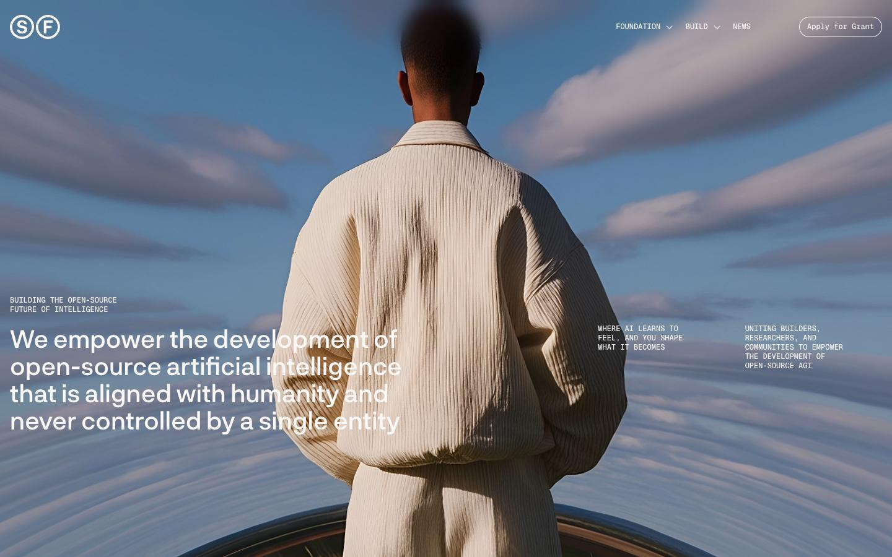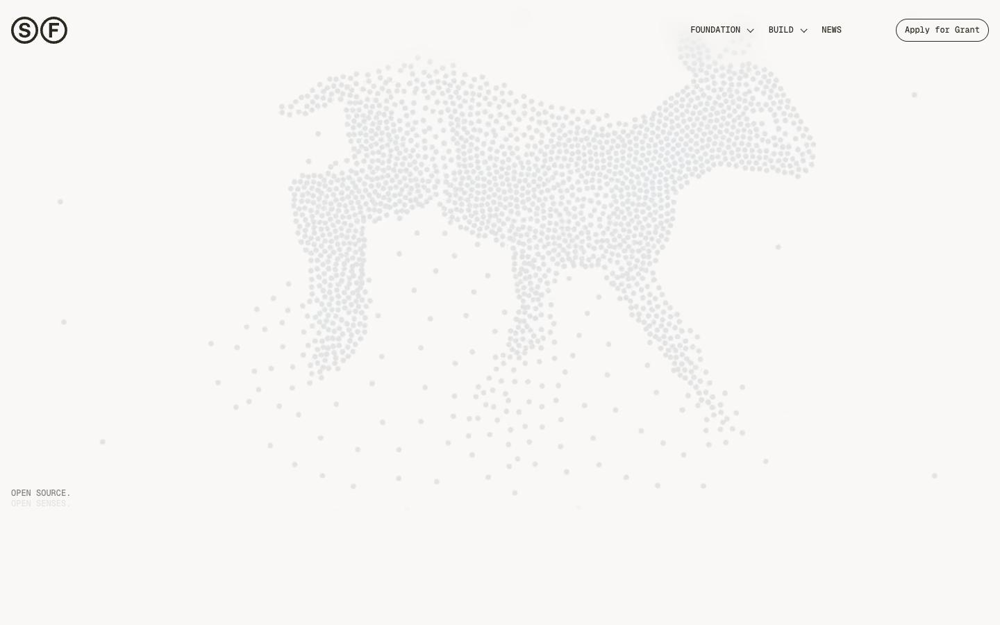</span></a><figcaption><b>Sentient Foundation</b>사진이 밝은 바탕으로 녹아드는 전환, 점으로 그린 동물, 작은 모노 라벨</figcaption></figure><figure><a href="https://sentient.foundation/" target="_blank" rel="noopener">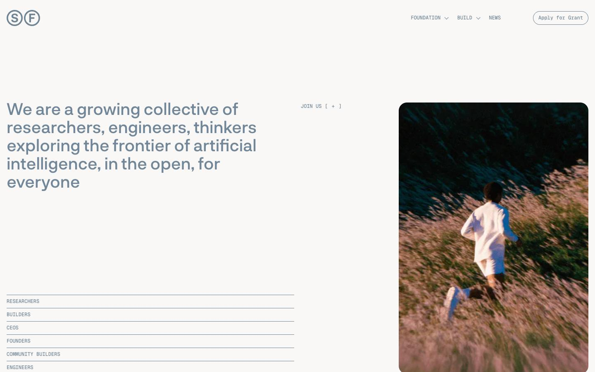</a><figcaption><b>Sentient Foundation</b>둥근 모서리 사진, 가는 선 목록, 알약형 버튼</figcaption></figure></div>
    </div>
  </article>
</section>

<!-- 05 COMPARE -->
<section id="compare">
  <div class="sec-head">
    <p class="eyebrow">05 · Compare</p>
    <h2>한눈에 비교</h2>
  </div>
  <div class="tw">
    <table class="wide">
      <thead><tr><th></th><th>A type</th><th>B type</th><th>C type</th><th>D type</th><th>E type</th><th>F type</th><th>G type</th></tr></thead>
      <tbody>
        <tr><th>핵심 장치</th><td>어둠으로 끊는 장면, 타임라인</td><td>열리는 틈, 세로선을 내려가는 점</td><td>사진을 담은 글자 창</td><td>장부, 차오르는 색</td><td>끊기지 않는 카메라, 깊어지는 어둠</td><td>옆으로 흐르는 길, 밝아지는 하늘</td><td>모여서 사진이 되는 점</td></tr>
        <tr><th>사진 배치</th><td>화면 전체</td><td>틈·작은 틀 → 전체</td><td>글자 창 → 전체</td><td>흑백 → 컬러 틀</td><td>화면 전체 + 가장자리 어둠</td><td>일어난 순서대로 길 위에</td><td>화면 전체 → 점 → 둥근 사진</td></tr>
        <tr><th>바탕</th><td>딥 틸 (어둠)</td><td>화이트</td><td>화이트 → 사진</td><td>화이트</td><td>영상 + 어둠</td><td>밤 → 아침</td><td>사진 → 스노우 → 스톤</td></tr>
        <tr><th>사진 비율</th><td>75%</td><td>35%</td><td>40%</td><td>30% (흑백)</td><td>85%</td><td>55%</td><td>40%</td></tr>
        <tr><th>액트 틸</th><td>1%</td><td>2%</td><td>10%</td><td>3%</td><td>버튼에만</td><td>5%</td><td>2%</td></tr>
        <tr><th>타이틀 KR</th><td style="font-family:'SUIT';font-weight:900">SUIT Heavy</td><td style="font-family:'Pretendard';font-weight:300">Pretendard Light</td><td style="font-family:'Wanted Sans';font-weight:900">Wanted Sans</td><td style="font-family:'NanumSquare Neo';font-weight:800">나눔스퀘어 네오</td><td style="font-family:'KoPub Dotum';font-weight:500">KoPub 돋움</td><td style="font-family:'LINE Seed KR';font-weight:700">LINE Seed Sans</td><td style="font-family:'Gothic A1';font-weight:500">Gothic A1</td></tr>
        <tr><th>타이틀 EN</th><td style="font-family:'Barlow Condensed';font-weight:700;text-transform:uppercase">Barlow Condensed</td><td style="font-family:'Inter Tight';font-weight:300">Inter Tight</td><td style="font-family:'Archivo';font-stretch:125%;font-weight:900">Archivo Expanded</td><td style="font-family:'Geist';font-weight:600">Geist</td><td style="font-family:'Hanken Grotesk';font-weight:500">Hanken Grotesk</td><td style="font-family:'LINE Seed KR';font-weight:700">LINE Seed Sans</td><td style="font-family:'Host Grotesk';font-weight:500">Host Grotesk</td></tr>
        <tr><th>레퍼런스</th><td>The Ocean Cleanup · Farm Africa</td><td>Serve Robotics · charity: water</td><td>Farm Africa · RSPCA</td><td>OnSpec</td><td>Tricky Knot</td><td>Amaterasu</td><td>Sentient Foundation</td></tr>
        <tr><th>강점</th><td>진정성, 현장감</td><td>세련, 가독성</td><td>브랜드 서사, 기억에 남음</td><td>신뢰, 증거</td><td>몰입</td><td>회복의 서사가 한눈에</td><td>함께라는 메시지, 고요한 인상</td></tr>
        <tr><th>약점</th><td>무거울 수 있음</td><td>밋밋할 수 있음</td><td>장식적일 수 있음</td><td>차가울 수 있음</td><td>정보 찾기가 느릴 수 있음</td><td>옆 스크롤이 낯설 수 있음</td><td>구현 난도가 높음</td></tr>
      </tbody>
    </table>
  </div>
  <p class="note">제안한 서체는 모두 상업적 사용이 무료입니다(OFL 또는 배포처 무료 라이선스).</p>
</section>

</main>

<script>
(function(){
  /* Donation widget specimen */
  var amounts = { regular: [10000, 20000, 30000, 50000], once: [30000, 50000, 100000, 200000] };
  var state = { type: 'regular', amount: 20000 };
  var box = document.getElementById('amounts');
  var impact = document.getElementById('impact');
  var submit = document.getElementById('donate-submit');
  var msg = document.getElementById('widget-msg');
  var tReg = document.getElementById('t-regular');
  var tOnce = document.getElementById('t-once');
  function fmt(n){ return n >= 10000 ? (n / 10000) + '만' : n.toLocaleString('ko-KR'); }
  function render(){
    tReg.setAttribute('aria-pressed', state.type === 'regular');
    tOnce.setAttribute('aria-pressed', state.type === 'once');
    box.innerHTML = '';
    amounts[state.type].forEach(function(a, i){
      var b = document.createElement('button');
      b.type = 'button';
      b.id = 'amt-' + state.type + '-' + i;
      b.textContent = fmt(a) + '원';
      b.setAttribute('aria-pressed', a === state.amount);
      b.addEventListener('click', function(){ state.amount = a; msg.textContent = ''; render(); });
      box.appendChild(b);
    });
    var when = state.type === 'regular' ? '매달 ' : '한 번 ';
    impact.innerHTML = '<span>' + when + fmt(state.amount) + '원</span>이면 [위액트 실제 비용 자료로 채울 문장: 이 금액으로 할 수 있는 일]';
    submit.textContent = state.type === 'regular' ? '정기후원 시작하기' : '일시후원 하기';
  }
  tReg.addEventListener('click', function(){ state.type = 'regular'; state.amount = amounts.regular[1]; msg.textContent = ''; render(); });
  tOnce.addEventListener('click', function(){ state.type = 'once'; state.amount = amounts.once[1]; msg.textContent = ''; render(); });
  document.getElementById('donate-demo').addEventListener('submit', function(e){
    e.preventDefault();
    msg.textContent = '견본입니다. 실제 결제로 연결되지 않습니다.';
  });
  render();
})();

var G_DOTS = {"cols": 40, "rows": 50, "A": "BwoKDAYFBQkQBQUGBAIBAQAAAAAAAAAAAAAAAAAAAAAAAAEBAQEBAQkHDBAICgsQEgsIBAMBAAAAAAAAAAAAAAEBAQEAAAABAwUFBgYEBAQJBQgNERAKCQgBAQEBAQAAAAABAQICAwMCAwQDAgAAAAIJCAgICQYFCQkJDQ0QEAEAAAAAAAAAAAAjLxcEAwQFBgcHBQkGJjwzHg0LDAkNCQoIBAkLSjEOAAAAAAAAAAAka0spBAAAAAAAAAAAC0Q1OS4GAQEBAQAIDAUEChgHDBYTDwkdEAgNMCEcHA0HCAkEAgIDBQ0TEhESCgoWOTMzDQoQEhIUCAgcIRIOOiUUIh8RFBARFRATBAECAwEHBgcYExgYGBciVRAKDB4cERABBBkgGDwqEyshFRcVFRQPEwQGDgYCCxooIigvLUAdFhQMEhkUKx4XBAYMNyw4MRkkKBgdFxAUEBQREggDAhAfJCEmLj16VjceDxYZFQk1DhEAACVENjsdITAnGxUTGhgZEQ0JCAseJyooLTg4bF9ieAsIFxgZLDARBhYQRktFHS4zIR0aFhsYHRIPDAUVJiUrKTU4PmhSeXYDIRoZGBcyIRMfFjQ8RighMiIdHh4cGiAZGBcGGzEpLC0zOmGYbm9lBQcbGBgbLy0RHwglJlQoESgaHCIcHBoiFxQPBgYoLSwvMzR1lGx1bA4aHigQEgw+CCEFBwhtNxMeICQRFBoZIhcWEAgIJjE2ODs9e3SQjIMeEhguFCUZIRwXGw0HbUMYHC4SAgYUEBAKCwcFBCQvMzQ/OWuhtJCJKxcTMhsUIwEtHRwMCG5VHygrAwMDByo5DgYEBQQmMTE0PjlFnK96fC8iGiBARjALExIDDhFhZi8eGgMDFYXt/Nc6AgMFIDA4Nz47Q4KZf3QrNjVAMUBABwwXIyASTXEfIAYEQoHu/f/252k+HxcsOz9DQGR3dop6MjdATR8NFwQxh18mEjNsHyMJJrTd+///+vTsq4aONiQ1QlXJn21udTs2Jx8NAQVVvr2PPRcsaiIWTYzl+P/////23qnElWATSF5m5qp5el4QGjg7NAdiw8zMq0UhLHgsG3XO8///////1+nHzKZyJzd5e8ehg3OFJiIVQUR1h7nKzLmSg3GESioz8fv/////99fk6NPOfjwmeYnItbKosyoaD2rDnHutys3Nwbq9ZqFkE37//////9jV5e/q5I1NI0h0nYfKnX4gJX+bqq97mMfHvLvIznWoUh48sv////+H/u7++/O4r1czkMmB0duiVJKUlaS/imavrcDJyczFmT8mJyLK5NKjm/z////61bWLPI7OqLPW1omSl5aawJhum77Jy8nMyqVLISFI5LwcCpD1////9tu5j0KYz8rsueuDiY6Nkay0fozEysnJy7uSORokPfbIJQtF9P///+3kvn86sc7N7+e1aHiDkJauwJJ0tsbJyLy6tCkfLVe4n7d3FOD7//vjzqd3OoDE9OXiymhxgp+dstK0c5vGxri5vsQkJTQhacPw7JJJwvT66MaLjUu8rPn4//6Pd52hmq/Ix456vbi7xp7CJTUhPZLM++//MDnj5ee6n4dKlcva+Pbumpucn6CxydW3a5q9y8m2uzYwFl2N0f/y45StvtPdgp9zWrzO8N7urqKio6Onr8XW0Yh8xsvNzLxQJRtzo+////Tw3trnmycZHUnEw4+LZHqep6WmpbDE1tm+aLPQ083PgSsjP7y6////7dCJJRgsIhdimLppdFVxnqurq62vxNnh3YmK1s/By6VRJThhsv//cRcSCSA4Ny8Va7yiXIJei6OlsK2yr8fWwefKasjL2NC8aiKNu36oyA8KDCtDR0Q3F2HDrWuLgZCCpKy0tbbC1qzV7I6T2ebVoDEr3MUv+VENCzBJUk9LOhZexLJxl3+hi3FraG5ziqi4tfbXZ97q3ZYmU6iKU/gqDhpQVFdPQzUaaJG7a4aFcKOrsbi5uamtnWKXlExwpaWgVnB1el2AGxgqTlpZSkEiMVd9u2l7loFNcIOFkaWw0daa+/vYbt9+iVFeV0pATSIdM1FbWUtgHSJUm6pHmYClXnOJpa+mp6u3lur+/neeTMKDqZE/JB4LDB4wO0Q/QDMVL5OpSJ2Ooa3Kr457hH6RsLfA///SHifBiJCBaywlDQotWF5SOzIjIDmDhE2ZmY2M4uPl4uzh1bOZXZeUsDg0mqifkYN5YV0QN1xmY1tLKjt6oZlWe3F5YMLk7OPn1+rm6YXg//1wZYlpQDlFXE1iDjtgal16f2IfXa+rZJCkm9OBmoiQoMXg6t6im2t4ynmkm5qEi1ETDRAoQVdQlY6FTDu4nWGUkqThnOTr5tK4opV9Rx47tP/ldKuat6CGIBIVR1FDOEpGPj0xmLd6sZWps63f+ej686CYWiwvQ5eZimqMnbOzqDERF0xaXoycfl+BiCxdQWh5ntuoc6Wr1qo7RToTMXf537WDcnFrh5RGFh1FVVWTrI9sfLVknIfCqIng/7f2/7olOjQrChRw4KOjhaCypnlCHRgaL0RL17mXdGOvnVyBqcW7psC8xJx8WGFTIgwOMIuEhpiQoLZxNTBCPFRLQXZsW2ZSmbdSaabDuvXITy4nMUJNQCEPIFDjg2paUWyWcTw7NJGpWJvzs8KpZU5zVC+Tprk=", "C": "aLBGU1pcPxUPFRsfERspOUJBPj44Mi8sKSgklIyCbmVYUTcuLC0sJ4RWQikaAAAAADNgfSkAAAURAQAABg4VHiUnJAAAAAAAAAANNy4vLShBRXlNNAAIAABrmrdDAAA5WEAXAAAAAAAAAQcEL2BCKTQiJkIwLy0wQDsLDhgGJgMAkbrVTAAMaJB6QQAEDiETAwACnf/DbDc/DzJDOTc8PkB5a4dtIUcVAKTG4UsAHYGtmV4LGCYuJQwBMPrVlGliLCAYDw8OEBFBOa/ErhxYKgCyzOaPN1WbxLFnHSw6Oi0LA6DXqrqoUwQKEAA3PzsmRD29uLJXeTYGtdXu6eDd2NK9g0IySjwxCAmp6dbXlgIAHh4Vg4t/aEVbwLuxcYc7Dbfa8e/s6OPbwJBEN0M1LQtWv7qryE8AACQfL7e+tZBfcrW/qmSQNhK73fbx7+/s4sqbSTxBMSxY97mzsJ0ZABkJIT7d3tGLiGSZvpdWlEIVu9/19fXz8OrWolFESS4nluKkrbVlAA4RAyBF5fHioXBVr7jCTZZCHrzi+Pf4+Pbu4rNZUVYtJKnOvaqpRQAZDAUjgf//6bxxbsHI3kudRCm55Pb6+/ym5eO3XVppKyGi1tG9kSkbAAAJJqP9/dvzbIjCc2pKo0UxvOf59/T2qaWwpmRkejsmteHNz7YiAAAAAiq39PjH92Slv72BS61JNLvp8O7r6+zcs5B4cpBbOdrY47ZxFwAAAAQ9yu7mrPdTlqSRekquRS2/5+no5Ofr6tuWgoiWgV1iX0qcNF15OhkmNWpi04nml56rb7ZCskAyx+Pi5eXo7OzHjWl3kZeooWpTbUlcYkgfHEJJU4l3y390r8ZfPbBARM7q5vH////jmFhfW4WSzebq1LyiiFUnDBBDbUp6SW/Q0dfbsjm2VVnV+evj///fi3R1amlgls708uvl2ceUORgqcWAkPjtLk7fF2dlnvrqnvItlp//liG5raFxiZmqvusbGhldTaGg9X14zLj0qQO7t1MKh5///2c/cnH6ej3xmZ2ZuZEBTdanFvrC4q6ufh2SCfF1WQ1T//////9f18K+he2t2ZWN/jpOck62nnoJphbjg////9NSyj4RyZXRy///epImHlKJ5gH1SUFZYR1NwdG9ubWxqcGtzZ63NsZyBeX1maYR7e9SqnmlmcHFnb21uXzNXbU01UmJrYFlmWVpdcWhrgZ6vpIaCfnt3cGyLjW5ZXlxXW25ha0U1UFhDOVJaW11aUVdMSF5eiquMlriilZWioaytk5hUUVlCNG5+WF1CRWNFNzw8UFJNaV1DNkpoj6rBqYq2ycPV19DR13tuX213cCQsYVBSSVNmSDo1PlFZZnJtSTxmkqG/yMyTv5xRcKLA08mjfFNLbnFtVE9hV0hQV15ISD5DSVBcgH9sgZmpusXcra6idkZak8vXgEpuoICAcm0wZ4hkYk5bUkxOTFZoe4hnnp6Rq9vc0Nims72wrLXQ4zNCosFqZFs6MXxuWGBOTGJ8iId/pJiTbaihn7rb4t/nqtC7zezT0NojIlF+koGAOVSLWGNbVmWGjpSQh36anZGWnKDD4ej59qmH0YaWr8G7EBAnfGmJkmZcjGw2YFJpi62EbmRtiY6TdKSbsMbcytTbxdq0dJmjogAJGG5bboFgZZmJZq2Aa5LMhY2HioyOkY6ii3qN3JpkZ7nT3MKHp8IAAEB+h4+HaoONjnjGqW2w3pSYmJ2omJuRi3xycJ+PenuBms6+m2ecADazmZqQi4VyeI2Go5tnkbqXnp+hqaCRlJaYd257q5LE////////tji7to2RlHKbi4yQlIV/ZYqifZKXlYyRhIyTlpF8ZYN9yef9//////C4pmmKeoOHg4KzrXVuemabnoWPj42VlYuFfoF2lWJzbmadvbW6rYtYZIaSlZKCjqHCpHxyb2xjfJZ9ko+KeZSUj4JxbZpviY2GkH2KdYd4Yp6ciJSZiYCXi4+GdnFpe4WBfZmWgo2MfYqDc2yec6KTjZSSloqTjZGYlIegfYuhnamzoo+tw6OIjIB9iJejmY6LgYTBpHV9ipucn6isrqWanZaMnKSgjqC0urWfd1tlToCosJmVm5SelY+lkoeKl6ikn6WlmaaoqI+zopqanJufqqWnts3Vpl6KoKiui6awlZaZiKanqI6mp6WqpqiopaiaqJ+GnaWcpqWao7HBv8+6nKe8pLOpvrSppJqjpK2goqSsqqmzsrSxrKiemK6noqmmqam42cy/iKipv6OvnaLT19/i8r6hoKentqulnqKUp6Sqlaivsq+ss7Cz6MJ8dpSntMS5vail/////PjUjpGWqK6ckYqWqJ27vqOgqKyjurGz5f90eJmsrKe5uLWbjP//+Pf//5mDkJebl6mwlI2duLSfoLWqq7is0fSFhaOrq7PBvrumr6Si1vr1//OMlZGMj4masYe6/8XFx6Cwl6Suwtp8hrK3vKO1uLaxt6O0p5mcyvrVoJChqqGdjYTk///GzL+jqoOGq8iir6SxtbnBzcG7w6+qmp6tqJyrrZ+1ob6erpr2////use2srLHnK6fxaSwxcXI08rQr8GnqKSXpJu1u6Cmp6ilqoX3/////7ynsMnFxrq9raa0ucK9x8rCxsSxrqOss6W0tca/s6Gakph1wPLt9f8=", "T": "qjQgLhhMT0VTU2JYW1JENlpuXmVvgWq71+D59f//75iUv2BVXn5oedUqMR4AHzQ0hT9qW1ZHJjJHSFhfZIpixtrV7fn96PbBkMFcUVd5gXT8aL0fABYcPpZ3aFJGXzMLRjxVXWaIZsncz+L+/+Xy24XHfH6anZOb9I2XFwceETpytZ+Jf2ZFFztTUGWBhWfK3c/c9v//3dyDuoRufHxxie2PkxUEIRY0YrNfVWZ3mLWhgXKUiHOHv9XR1+////Lmi7WNf41yYn7KmpE8IDApPkXAUEBSgZmokZV8fYZyf4e7qMDJ7/XN55GsgJSUg29w5tp8SwAhDTA2pmQ2SmN8gniGfXKKcmd65bXW3+v/8NqVpX6CqoqFqebshnYAIxAwNF6dWV92Z1FiYn9jY1FypdfP1ODt/96ruZZ2hX98WoPn76CYUnl8ZZtuuHlzYFBOWVRXXU9ZKVxwi5mim4uDXqiPY25iYlpqwN7Di4h+lWKmW4CDeVZMO0ZEPkA6NgAMABAMAxUAMEGHdWBgWGU4SZOzvV1tgJBukYqBb3prZzYaFikoNDkVJSREPiw2HDxHXE9xc3NdRT2QrcOLQHycV4u6qqOLcWAOAAwNFRwvAw0ELBYVGQAuQjc9W0RASCQ6lpqamEFzf1lxvKiRg4V7FQAAAQoOFBUMAycPFBoAMyJDSlVNPlE4O66/o6BFXplVXayikJaYhDkFBQAACRchFgMjExQbADIrTGJgWEleO0qmvqOjRleUT2F8paSQTBwAAAAeAAAMKUcrJE8VGgA1PVNyemtTaHxsqcO7rlhdeHVUeqa4kgAAAAAQMQANICkvN1htNzcUPm52gJWjhIJyZrbVw71OWp2QQ3yxezwtFAAAF0MnSkIAEA1deiccDEObqqyeoaCrs5Sz0cO+XXawrWViWVJMREA+NBAzPlJ9AAwDnLE0GANYr7G8r5+gpZ+orsm5vGt0urKku7NoPzw6ODg9Oz6wrwALAuvtSRgDc+jj5enf1tLHzrrVydGUcdr7//+4ye5yKiUmLT6G9JwACAbn6kcbAHPq5/L37ejq6fiYqrCzt2zV5/DZ2///oyEfHRwqUvHJAA8a0tVfOQ526uzv+u/q7e38n7SsrLGV0P/80///pSofGhgWHDW/2BkVFuDpSyAZi+Df4+7q6ezo/6u7rbLYue1ybvH/nyYeHRsVFhkhjOMvABXl60UZD8nu6/X86NzWxL+7076NfUdqXP//cSIhGRALEQ4REnbfUgAS0tAmHkjQ4efr8ubkzLi9t8qJKzwqJD7GlSEXGiQfGhEODRYwyHAAXfT0Nx3f3fXv8vn17Mq4vrjHenaDLyMfHh0dEgABDyIiEwoOIlU8QYzRwV9u8Nbx/P79//3Ft8K9WigxKyopJCAdGhkQAAAADSclDRk9R0l+z7Nkitvg8evs9v/5vbrGnDpPSCQiJSclIhwYFBAAAAAIQVlfSITi0s+eX3/h2vDy8Ozu6MrFyS03PiQcGxUTFhcSCwAAACJMYl9dXWdXybPR2evn+dXq8e7x+ayWrLosLiQZGh0iIRsWEQEAJU9WU1FGPk5XgJMtHl83PIbS5Ovr6+i2ICxEJiwZGyMrLiwlLS4tPlBMSkE1KS83QlmHh6idnVqYvOTg4OPy2CEecCQoGSEpJhsaFxAoMj5HQjosKzY2NUVkaYrQwuHL5LHOzsjY2MwhH2ggIRkcGBshJy01KykuPDYqJS8uMkTZ6JZ9oqW8qsCisbO8urzDHR9CJB0UExwXJisuLSklJTApGyMkJzSX6+Lfm5Wnyqa/urzSsKCtqzcyIDAcDhETEQ8UHCMfHSMoFxwgIy5wprPt////68ipuZKlxsmnm5lUKFY8GQ4MDwwNCgkIChImTSAiIT9TTqb2////8fH215F4l5ByjLKsxrqySRULCgkJCggHBwsdc/CuKVOKhka60uT+////+5aGdYxtYEVcmqfY3n0gDAkIBwcGCAgUdu787oZZR1l8tKm83tj///6GZGx8ZlIxVoqeu7JzexUIBgQEBQYIZvf/7baJelIyd4GdsK63////wEVrb2pgPmiKSpWmVX1sIQYDAAACOfP/3LqKiXpiQ4GAzfbe2v///8MwUWdZZ1tSephkwwA4Z1lHBAALDLL//22IkZva3Lunr+n57vn4/fi7KihNUXCAbYKhRbQAHFFKQyohGxKy/+kXSntTdbnp6Orr58rn8ejIfz0iHT1rfoR/ytvQM1FgWl5YTiULCjksFRtBjHKRm6LCqnai3uzFcklwbE4zVGh4LFyY4ISEf29tZ1U/MSERDRYaHTN6v8KlooudtcjSz763mJ2FcWBjdHphRYWlpKGblIFYNEM+KSMaCxEWFWnP3t7j6eji5eHdvMbArqqljHxkd8GI0ca7yMC+s497alEuMEU7Mjyf4eno9urq9Pbw3tjZ39De29DMvIiG1+Hj197P2dTc39nfzrybnKzX6uP28/b37//v5ufV0NPn0+zWw+Dbu4zp6Obs4s3n7e7x7uzt4u7u+e3o7vPr6PX16eHS49XM5N3w5N7X6e/07+Pq7vry7/Ht9vf2+fb28P/+5/fp2v/z7ObfyNPe6/Ht7fPm6Ovg8vnv8+Xy8Pv59fz7////9u378evx//nt/eTp39vv8d7p7fDt/Pbm9to="};

(function(){
  /* Landing previews: each frame scrolls on its own; scene progress drives CSS variables */
  function offTop(el, sc){ var t = 0; while (el && el !== sc){ t += el.offsetTop; el = el.offsetParent; } return t; }
  function clamp(v){ return v < 0 ? 0 : v > 1 ? 1 : v; }
  function cube(t){ return t * t * t; }
  /* C: zoom origins on solid ink of Archivo Expanded Black (A: foot of the left leg, C: left of the bowl, T: the stem), in SVG units */
  var ACT_ORIGIN = [[13, 77], [72, 56.7], [133.5, 62]];
  var ACT_MAX = 14;

  /* ---- G dot field ---- */
  function ease(t){ t = clamp(t); return t * t * (3 - 2 * t); }
  function prng(seed){ return function(){ seed |= 0; seed = seed + 0x6D2B79F5 | 0; var t = Math.imul(seed ^ seed >>> 15, 1 | seed); t = t + Math.imul(t ^ t >>> 7, 61 | t) ^ t; return ((t ^ t >>> 14) >>> 0) / 4294967296; }; }
  function gSetup(lp, sc){
    var cv = lp.querySelector('.gdots');
    if (!cv || !window.G_DOTS) return null;
    var D = window.G_DOTS, n = D.cols * D.rows, rnd = prng(11), dots = [];
    var lum = ['A', 'C', 'T'].map(function(key){ var b = atob(D[key]), a = new Uint8Array(b.length); for (var i = 0; i < b.length; i++) a[i] = b.charCodeAt(i); return a; });
    for (var i = 0; i < n; i++){
      var c = i % D.cols, r = Math.floor(i / D.cols), ex = ((c + .5) / D.cols - .5) * 2, ey = ((r + .5) / D.rows - .5) * 2;
      /* soft oval: dots near the card edge shrink away, so the gathered photo reads as a cloud, not a block */
      dots.push({ c: c, r: r, m: clamp((1.06 - Math.sqrt(ex * ex + ey * ey)) / .38), sx: rnd(), sy: rnd(), ph: rnd() * 6.2832, sp: .5 + rnd(), jx: rnd() - .5, jy: rnd() - .5, ex: -1, ey: 0, er: 0 });
    }
    var X = { lp: lp, cv: cv, ctx: cv.getContext('2d'), D: D, lum: lum, dots: dots, w: 0, h: 0, ex: false,
      z1: sc.querySelector('.zG1'), z2: sc.querySelector('.zG2'), z3: sc.querySelector('.zG3'),
      ks: [].slice.call(sc.querySelectorAll('.gk')), lis: [].slice.call(sc.querySelectorAll('.glist li')), ps: [].slice.call(sc.querySelectorAll('.gcard .gp')) };
    function tick(t){ if (lp.classList.contains('live')) gDraw(X, t); requestAnimationFrame(tick); }
    requestAnimationFrame(tick);
    if (document.fonts && document.fonts.ready) document.fonts.ready.then(function(){ X.ex = false; });
    return X;
  }
  /* target points for the closing '!' (drawn with the logo's heavy face, sampled on a grid) */
  function gExcl(X, W, H, step){
    var size = Math.round(H * .64), oc = document.createElement('canvas');
    oc.width = Math.ceil(size * .5); oc.height = size;
    var c2 = oc.getContext('2d');
    c2.font = '900 ' + size + 'px Archivo, sans-serif'; c2.textAlign = 'center'; c2.fillText('!', oc.width / 2, size * .86);
    var data = c2.getImageData(0, 0, oc.width, oc.height).data, pts = [];
    for (var y = step / 2; y < oc.height; y += step) for (var x = step / 2; x < oc.width; x += step)
      if (data[(Math.floor(y) * oc.width + Math.floor(x)) * 4 + 3] > 128) pts.push([x, y]);
    var ox = W * .77 - oc.width / 2, oy = H * .06, n = X.dots.length, m = Math.min(pts.length, n), stride = n / Math.max(1, m);
    X.dots.forEach(function(d){ d.ex = -1; });
    for (var k = 0; k < m; k++){ var d = X.dots[Math.floor(k * stride)]; d.ex = ox + pts[k][0] + d.jx * step * .7; d.ey = oy + pts[k][1] + d.jy * step * .7; d.er = step * (.26 + .2 * (d.sp - .5)); }
    X.ex = true;
  }
  function gDraw(X, t){
    var lp = X.lp, W = lp.clientWidth, H = lp.clientHeight, dpr = Math.min(2, window.devicePixelRatio || 1);
    if (!W || !H) return;
    if (X.w !== W || X.h !== H){ X.w = W; X.h = H; X.cv.width = Math.round(W * dpr); X.cv.height = Math.round(H * dpr); X.ex = false; }
    var ctx = X.ctx;
    ctx.setTransform(dpr, 0, 0, dpr, 0, 0); ctx.clearRect(0, 0, W, H);
    var s1 = X.z1._s || 0, s2 = X.z2._s || 0, s3 = X.z3._s || 0, e3 = X.z3._e || 0;
    var vis = ease((s1 - .4) / .25);
    if (vis <= 0) return;
    var ch = .74 * H, cw = ch * .8, cx = W * .94 - cw, cy = .14 * H, cell = cw / X.D.cols;
    var q = s2 * 3, j = Math.min(2, Math.floor(q)), f = q - j, g = 0, po = 0;
    if (s2 > 0 && e3 <= 0){
      g = f < .3 ? ease(f / .3) : f < .86 ? 1 : 1 - ease((f - .86) / .14);
      po = clamp((f - .34) / .1) * clamp((.84 - f) / .08);
    }
    var endg = 0;
    if (e3 > 0){ if (!X.ex) gExcl(X, W, H, Math.max(3, cell * .72)); endg = ease((s3 - .06) / .5); }
    var dk = ease((s3 - .02) / .3);
    ctx.fillStyle = 'rgb(' + Math.round(6 + 249 * dk) + ',' + Math.round(46 + 209 * dk) + ',' + Math.round(51 + 204 * dk) + ')';
    var lum = X.lum[j], tt = t * .00022, base = vis * (1 - po * .94), amp = .012;
    for (var i = 0; i < X.dots.length; i++){
      var d = X.dots[i];
      var sx = (d.sx + Math.sin(tt * d.sp + d.ph) * amp) * W, sy = (d.sy + Math.cos(tt * d.sp * .8 + d.ph) * amp) * H;
      var x = sx, y = sy, r = .9, k = 0;
      if (g > 0){
        var rr = cell * .46 * Math.pow(1 - lum[i] / 255, 1.25) * d.m;
        x = sx + (cx + (d.c + .5) * cell - sx) * g; y = sy + (cy + (d.r + .5) * cell - sy) * g; r = .9 + (rr - .9) * g; k = g;
      }
      if (endg > 0 && d.ex >= 0){ x = sx + (d.ex - sx) * endg; y = sy + (d.ey - sy) * endg; r = .9 + (d.er - .9) * endg; k = endg; }
      if (r < .35) continue;
      ctx.globalAlpha = base * (.4 + .36 * k);
      ctx.beginPath(); ctx.arc(x, y, r, 0, 6.2832); ctx.fill();
    }
    ctx.globalAlpha = 1;
  }

  var HOOKS = {
    /* A: the scene number follows the five shots */
    A: function(lp, p, st, vh, sc){
      var a = lp._a1 || (lp._a1 = sc.querySelector('.zA1'));
      var n = Math.min(5, Math.floor((a._s || 0) * 5) + 1);
      (lp._idx || (lp._idx = lp.querySelector('.idx b'))).textContent = '0' + n;
    },
    /* B: the crack opens vertically first, then sideways */
    B: function(lp, p, st, vh, sc){
      var b = lp._b1 || (lp._b1 = sc.querySelector('.zB1'));
      var q = clamp(((b._s || 0) - .06) / .62);
      b.style.setProperty('--qv', Math.pow(q, .65).toFixed(4));
      b.style.setProperty('--qh', Math.pow(q, 1.7).toFixed(4));
    },
    /* C: jacket close-up, then A, C, T each grow until their photo fills the frame, tell their chapter, and shrink back */
    C: function(lp, p, st, vh, sc){
      var c2 = lp._c2 || (lp._c2 = sc.querySelector('.zC2'));
      var X = lp._cx;
      if (!X){
        X = lp._cx = {
          jk: c2.querySelector('.jk'), jki: c2.querySelector('.jk .jki'), jkc: c2.querySelector('.jk .cap'),
          head: c2.querySelector('.acth'), grad: c2.querySelector('.cgr'),
          layers: [].slice.call(c2.querySelectorAll('.al')),
          texts: [].slice.call(c2.querySelectorAll('.al clipPath text')),
          fills: [].slice.call(c2.querySelectorAll('.al .fi')),
          lbls: [].slice.call(c2.querySelectorAll('.albl')),
          chs: [].slice.call(c2.querySelectorAll('.ctx'))
        };
      }
      var s = c2._s || 0;
      var j0 = clamp(s / .12);
      X.jki.style.transform = 'scale(' + (1 + .9 * j0 * j0 * (3 - 2 * j0)).toFixed(4) + ')';
      X.jk.style.opacity = (1 - clamp((s - .11) / .04)).toFixed(3);
      X.jkc.style.opacity = (1 - clamp((s - .085) / .02)).toFixed(3);
      var intro = clamp((s - .13) / .06);
      var qs = [0, 1, 2].map(function(j){ return clamp((s - .2 - j * .26) / .26); });
      var pres = qs.map(function(q){ return (q <= 0 || q >= 1) ? 0 : clamp(Math.min(q / .05, (1 - q) / .05)); });
      var maxPres = Math.max(pres[0], pres[1], pres[2]), maxTxt = 0;
      qs.forEach(function(q, j){
        var k = 1, M = ACT_MAX - 1;
        if (q > 0 && q < 1) k = q < .3 ? 1 + M * cube(q / .3) : q < .84 ? ACT_MAX : 1 + M * cube((1 - q) / .16);
        var o = ACT_ORIGIN[j];
        X.texts[j].setAttribute('transform', 'translate(' + o[0] + ' ' + o[1] + ') scale(' + k.toFixed(3) + ') translate(' + (-o[0]) + ' ' + (-o[1]) + ')');
        X.fills[j].style.opacity = clamp((k - 6) / 7).toFixed(3);
        var rv = clamp(intro * 3 - j), others = 0;
        pres.forEach(function(v, i){ if (i !== j && v > others) others = v; });
        X.layers[j].style.opacity = (rv * (1 - others)).toFixed(3);
        X.layers[j].style.zIndex = pres[j] > 0 ? 3 : 1;
        X.lbls[j].style.opacity = (rv * (1 - maxPres)).toFixed(3);
        var tx = clamp((q - .3) / .06) * clamp((.82 - q) / .06);
        if (tx > maxTxt) maxTxt = tx;
        X.chs[j].style.opacity = tx.toFixed(3);
        X.chs[j].style.transform = 'translateY(' + ((1 - tx) * 2).toFixed(2) + 'cqh)';
      });
      X.grad.style.opacity = maxTxt.toFixed(3);
      X.head.style.opacity = (intro * (1 - maxPres)).toFixed(3);
    },
    /* E: one camera that keeps moving forward; photos cross-fade as each line reaches the middle, darkest at ABUSED */
    E: function(lp, p, st, vh, sc){
      if (!lp._bgs){
        lp._bgs = [].slice.call(lp.querySelectorAll('.cam .bg'));
        lp._dark = lp.querySelector('.dark');
        lp._vig = lp.querySelector('.vig');
        lp._white = lp.querySelector('.whiten');
        lp._deps = [].slice.call(lp.querySelectorAll('.depth > span'));
        lp._lines = [].slice.call(sc.querySelectorAll('[data-line]'));
      }
      var c = st + vh / 2;
      var w = lp._lines.map(function(el){ var mid = offTop(el, sc) + el.offsetHeight / 2 - c; return clamp(1 - Math.abs(mid) / vh * 1.15); });
      lp._lines.forEach(function(el, i){ el.style.opacity = Math.max(.08, w[i]).toFixed(3); });
      var z = (1.04 + p * .2).toFixed(3);
      lp._bgs.forEach(function(im, i){
        if (i > 0){ var top = offTop(lp._lines[i], sc); im.style.opacity = clamp((c - (top - vh * .35)) / (vh * .5)).toFixed(3); }
        im.style.transform = 'scale(' + z + ')';
      });
      var side = Math.max(w[1] || 0, w[3] || 0);
      lp._vig.style.setProperty('--vr', Math.max(38, 140 - 100 * (w[2] || 0) - 45 * side).toFixed(1) + '%');
      lp._dark.style.opacity = (.3 + .3 * (w[2] || 0) + .12 * side).toFixed(3);
      var wl = w[5] || 0, last = offTop(lp._lines[5], sc);
      var wh = clamp((c - (last - vh * .3)) / (vh * .45));
      lp._white.style.opacity = (wh * .92).toFixed(3);
      lp.dataset.tone = wh > .5 ? 'light' : 'dark';
      var idx = 0; w.forEach(function(v, i){ if (v > w[idx]) idx = i; });
      lp._deps.forEach(function(d, i){ d.classList.toggle('on', i === idx); });
    },
    /* F: the journey turns from night to morning, so the menu switches to dark ink in the second half */
    F: function(lp, p, st, vh, sc){
      var f = lp._f1 || (lp._f1 = sc.querySelector('.zF1'));
      lp.dataset.tone = clamp(((f._s || 0) - .04) / .9) > .66 ? 'light' : 'dark';
    },
    /* G: the hero photo melts into paper; scattered dots gather into each chapter photo, the photo appears,
       the dots scatter again; at the end the field darkens and the dots form '!' */
    G: function(lp, p, st, vh, sc){
      var X = lp._gx || (lp._gx = gSetup(lp, sc));
      if (!X) return;
      var s1 = X.z1._s || 0, s2 = X.z2._s || 0;
      if (st + vh * 0.05 < (X.z1._top || 0) + X.z1.offsetHeight) lp.dataset.tone = s1 > .42 ? 'light' : 'dark';
      var q = s2 * 3, j = Math.min(2, Math.floor(q)), f = q - j;
      X.ks.forEach(function(el, i){
        var v = (i === j && s2 > 0) ? clamp(Math.min((f - .06) / .08, (.94 - f) / .06)) : 0;
        el.style.opacity = v.toFixed(3);
        el.style.transform = 'translateY(' + ((1 - v) * 2).toFixed(2) + 'cqh)';
      });
      X.lis.forEach(function(li, i){ li.classList.toggle('on', i === j && s2 > 0); });
      X.ps.forEach(function(im, i){ im.style.opacity = (i === j && s2 > 0 ? clamp((f - .34) / .1) * clamp((.84 - f) / .08) : 0).toFixed(3); });
      gDraw(X, performance.now());
    }
  };

  var wraps = [].slice.call(document.querySelectorAll('.lp-wrap'));
  wraps.forEach(function(wrap){
    var lp = wrap.querySelector('.lp');
    var sc = lp.querySelector('.lp-scroll');
    var scenes = [].slice.call(sc.querySelectorAll('[data-scene]'));
    var hook = HOOKS[lp.dataset.lp];
    var playBtn = wrap.querySelector('[data-act="play"]');
    var resetBtn = wrap.querySelector('[data-act="reset"]');
    var langBtns = [].slice.call(wrap.querySelectorAll('[data-lang]'));
    var ticking = false, raf = null;

    function update(){
      ticking = false;
      var st = sc.scrollTop, vh = sc.clientHeight, max = sc.scrollHeight - vh;
      var p = max > 0 ? clamp(st / max) : 0;
      wrap.style.setProperty('--p', p.toFixed(4));
      var tone = null;
      scenes.forEach(function(el){
        var top = el._top || 0, h = el.offsetHeight;
        var s = clamp((st - top) / Math.max(1, h - vh));
        var e = clamp((st + vh - top) / vh);
        el.style.setProperty('--s', s.toFixed(4));
        el.style.setProperty('--e', e.toFixed(4));
        el._s = s; el._e = e;
        var probe = st + vh * 0.05;
        if (el.dataset.tone && probe >= top && probe < top + h) tone = el.dataset.tone;
      });
      if (tone) lp.dataset.tone = tone;
      if (hook) hook(lp, p, st, vh, sc);
      lp.classList.toggle('scrolled', st > vh * 0.08);
    }
    function measure(){ scenes.forEach(function(el){ el._top = offTop(el, sc); }); update(); }
    function request(){ if (!ticking){ ticking = true; requestAnimationFrame(update); } }
    wrap._measure = measure;

    function stop(){
      if (raf){ cancelAnimationFrame(raf); raf = null; }
      if (playBtn) playBtn.textContent = '자동 재생';
    }
    function play(){
      var start = sc.scrollTop, end = sc.scrollHeight - sc.clientHeight;
      if (end - start < 4){ sc.scrollTop = 0; start = 0; }
      var dist = end - start;
      var dur = Math.max(1500, dist / (sc.clientHeight * 0.4) * 1000);
      var t0 = null;
      if (playBtn) playBtn.textContent = '멈춤';
      function step(ts){
        if (t0 === null) t0 = ts;
        var k = Math.min(1, (ts - t0) / dur);
        sc.scrollTop = start + dist * k;
        if (k < 1) raf = requestAnimationFrame(step); else stop();
      }
      raf = requestAnimationFrame(step);
    }
    lp._stop = stop;

    sc.addEventListener('scroll', request, { passive: true });
    ['wheel', 'touchstart', 'pointerdown', 'keydown'].forEach(function(ev){ sc.addEventListener(ev, stop, { passive: true }); });
    if (playBtn) playBtn.addEventListener('click', function(){ raf ? stop() : play(); });
    if (resetBtn) resetBtn.addEventListener('click', function(){ stop(); sc.scrollTop = 0; request(); });
    langBtns.forEach(function(b){
      b.addEventListener('click', function(){
        if (b.dataset.lang === 'en') lp.dataset.lang = 'en'; else delete lp.dataset.lang;
        langBtns.forEach(function(x){ x.setAttribute('aria-pressed', x === b); });
        lp._n = null;
        measure();
      });
    });
    window.addEventListener('resize', measure);
    measure();
  });

  if (document.fonts && document.fonts.ready){
    document.fonts.ready.then(function(){ wraps.forEach(function(w){ if (w._measure) w._measure(); }); });
  }

  if ('IntersectionObserver' in window){
    var io = new IntersectionObserver(function(entries){
      entries.forEach(function(en){
        en.target.classList.toggle('live', en.isIntersecting);
        if (!en.isIntersecting && en.target._stop) en.target._stop();
      });
    }, { threshold: 0.2 });
    document.querySelectorAll('.lp').forEach(function(lp){ io.observe(lp); });
  } else {
    document.querySelectorAll('.lp').forEach(function(lp){ lp.classList.add('live'); });
  }
})();

</script>
